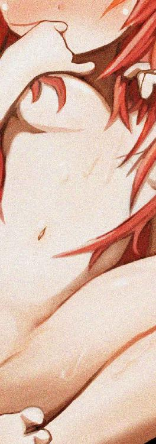
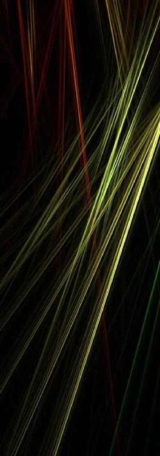
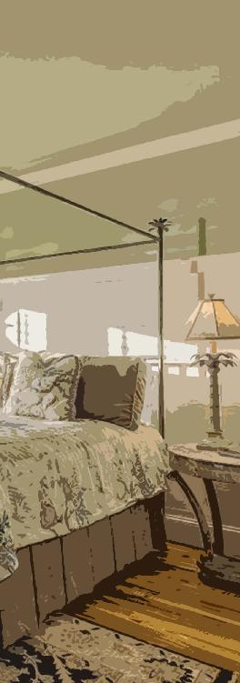
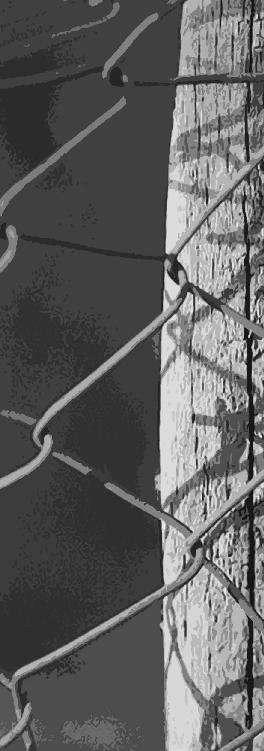

| キミはキメラ 箱庭の鬼 (StarGazer) | |
| hoshimi12（星見拾弐） | |
| stargazer (2017) | |
キミはキメラ 箱庭の鬼
hoshimi12（ほしみじゅうに）

「わかんない、って顔してるよなぁお前」
男は嗤い、拳を振るった。
腹を殴られた芹彦は、痛みでうずくまった。
体育館裏の草むらをみじめに這う。
「ああ。自分がなんでこんなことされてるか、わかんないって顔してるよねぇ」
もう一人の男も嗤い、芹彦の後頭部をカカトで踏んづけた。
周りを囲う連中もその姿をみて嗤う。
「そーいうところがムカツクんだよなぁ。自分は悪くない、被害者だとか思ってんだろ？ 悲劇のヒロイン気どりかよ、きもちわりぃ」
「世の中さぁ、きみより辛いヒトばっかりなの。わかる？ きみだけが特別じゃないの」
脇腹を足で蹴り上げられる。
芹彦は息ができなくなり、気を失いそうになる。
「ありがたく思えよ。おれたちが、わからせてやってるんだから。社会勉強ってやつ？ 学園の授業じゃ教えてもらえないよねぇ」
どうしてこんなことになったのか。
「なぁ、やられっぱなしでいいわけ？」
「ほらほら。やりたきゃ殴ってもいいよ。平等にさ」
男のひとりが右頬をさしだす。
だが芹彦は、首を横に振り、拒絶した。
「は？ なんでだよ」
「ホント根性ねえなぁ」
芹彦は歯を食いしばった。
本当は殴り返してやりたいくらい悔しかった。
（いつもいつもいつも、どうしてぼくばっかりが）
「ぼくが、なにしたっていうんですか」
ぼそりと呟く。
しん、と一瞬その場が静かになる。
「まだわかんないかなぁ。それじゃあ、いいこと教えてやるよ」
男のひとりが芹彦の「白い髪」を鷲掴みにした。
冷えた声だった。
男は耳元で囁いた。
「お前はな、このムラの『スケープゴート』なんだよ。生贄としてささげられた哀れな山羊だ。ほら、こうして痛めつけられても、だーれもお前を助けてくれないだろ？ お前はさぁ、みんなが抱えたストレスのはけ口なんだよ。お前の犠牲で、みんな救われるんだ」
芹彦はスーッと血の気が引いていくのを感じた。
「クジョウの失敗作がよ。大人しく生贄として一生を終えろや」
身体から感覚が消える。
思考が遠くはなれていく。
あらゆる気力が失われていく。
（消えてしまいたい）
薄れる意識のなか、芹彦はそう思った。
ただ静かに生きていたいだけだった。
平和に暮らせるのなら、ひとりでもよかった。
なのに、それすら叶わないのなら、この生に何の意味があるのか。
（眠い）
いつもの眠気に襲われる。
朦朧とするなか、芹彦はその「不思議なニオイ」を感じた。
内側から沸々と燃え上がるものを感じる。
「お、おい！ なんだこいつ！ 見張りはなにやって――」
不意に、後頭部からカカトが退いた。
それからまもなくだった。
芹彦は眠りに堕ちた。

第一章
影踏み鬼（かげふみおに）
鬼ごっこの一種。
一人を鬼として選び、他の者は何らかの日陰に隠れる。
日陰は安全地帯だが、一定時間内に日向へ出なければならない。
鬼に影を踏まれた者が、次の鬼となる。


「ねーねー、不審者の話きいたぁ？」
「しってるしってる。全身黒ずくめの大男でしょ？ このまえ友達がクジョウ事業所の近くで見たって――」
だれかの話し声で芹彦は目を覚ました。
そこは教室の中。
教壇では数学教師が黒板に数式を殴り書きしている。
隣の席では二人の女子生徒がこそこそ談笑している。
いま、授業中だ。
（またやってしまった）
芹彦は小さくため息をついた。
授業中に居眠り。
昔の夢までみてしまった。
ただ、誰も芹彦を注意する人間はいなかった。
クラスメイトはもちろん、数学教師も見て見ぬフリである。
（ん？）
くすくす、くすくす。
押し殺した嗤い声がきこえた。
目を向けると、ひとりの男子生徒が、後ろの席の生徒二人に消しゴムのカスを投げつけられていた。
イジメだ。
消しカスを投げられてる男子生徒は、暗い表情でうつむいている。
（昔は威勢がよかったのにな）
彼はかつて、体育館裏で芹彦の後頭部を嗤いながら踏んづけていた。
それが今、加害者は被害者へ。
立場は変わり、後頭部に消しカスを投げつけられている。
やがて芹彦と目が合った。
男子生徒は芹彦を見るなり怯えた表情に変わり、再びうつむいた。
「あの事件」以来、ずっとこんな調子だった。
（くだらない）
芹彦は昔、イジメを受けていた。
それが今は受けていない。
体育館裏でのリンチがバレて、警察沙汰になったのだ。
徹底的な犯人捜しが行われた。
イジメの主犯格たちは停学処分を受けることになった。
だが「制裁」はそんなものでは済まなかった。
芹彦が頼んでもいないのに、イジメっ子たちへの制裁は続行され続けた。
いまやその大半が自主退学。残っている連中も、逆にイジメを受けたり、冷ややかに扱われ続けている。
（結局みんな、誰でもいいんだ）
求められているのはスケープゴートだった。
芹彦が「触れてはいけない相手」になった今、一番都合のいい標的が彼らだったというだけだ。
（こんなムラ、消えてしまえばいいのに）
芹彦は辟易していた。
せいせいするどころか、嫌気ばかりが増していく。
昼休み。
芹彦は校舎の屋上へむかった。
教室には居場所がない。
屋上はテラスとして学生用に開放されている。
隅にあるいつものベンチに座り、街を眺めながら菓子パンをかじる。
街の名前はＫＳＴ。
クジョウ・スマート・タウンの略だ。
もとは山と海に囲まれた辺鄙な田舎だったのを、複合企業の「株式会社クジョウ」がインフラ整備を進め、改造した。
今となっては住民のほとんどがクジョウ関係者。この学園の教員や生徒もそうだ。
津波対策という建前で街全体が高いカベで覆われており、まるで要塞都市である。
そしてそんな外見の通り、閉鎖的なムラ社会だった。
治安維持のために住民同士で監視させ合い、密告制度もある。
みんな見えない敵に怯え、自分が標的にされないよう、他の標的を探している。
（デカいバケモノが現れて、この街を踏みつぶさないだろうか）
芹彦は街を眺めるたびそんな妄想をした。
菓子パンのいちごジャムが甘い。
「若様」
背後で声がした。
振りかえるとメガネの女子生徒がいた。
芹彦は彼女を睨みつける。
「学園で、話しかけるなって言ったよな」
「申し訳ありません。ですが、急用でして」
メガネの女子生徒は淡々と答える。
八重比奈子。同居人だ。
感情のとぼしい顔と、静かな佇まいが「人形」を思わせる。
「検査の予定が変わり、きょうになったようです」
「なんだ、検査か。......またか」
「だいじなことです。『睡眠発作』のことも診てもらわなければなりません」
「大丈夫だよ、あれは」
「いえ、状況によってはとても危険です。ところで最近ちゃんと、お薬を飲んでいますか？」
「うるさいな......。もうわかったら行ってくれよ」
芹彦はうな垂れて言った。
比奈子と目を合わせたくない。
リンチ事件以降、妙に構ってくるというか――「お付き」として、イジメを見抜けなかったことに責任を感じているのかもしれない。
「わかりました」
比奈子は短く答えた。
「最後にもうひとつ、言伝を」
「なんだ」
「今夜はお二人とも、お戻りになれないようです」
「......」
「申し訳ありません。では、またのちほど」
比奈子はぺこりと頭をさげて去っていく。
まもなく予鈴が鳴った。
（どうでもいいさ）
芹彦は菓子パンのふくろをグチャグチャに丸め、ゴミ箱に放りこむ。
比奈子が完全に居なくなったのを確認して、歩きだす。
ヘンなウワサを立てられたくなかった。
それに――比べられたくもない。
この学園のクラス分けは、完全な成績順。
比奈子は最上位の特待クラス。
芹彦は最下位の底辺クラスだった。
『クジョウの失敗作がよ。大人しく生贄として一生を終えろや』
イヤな思い出ばかりが脳裏をよぎる。
やがて芹彦は嫉妬と同族嫌悪うずまく教室へと戻った。

放課後。
芹彦はクジョウの事業所へ向かった。
ちょうどＫＳＴの中心部にある。
受付で通行証をみせ、メディカルセンターに入る。
主に医療の研究をしている「バイオメディカル部門」の建物だ。
白を基調にした外観は「病院」を思わせ、実際にクジョウ関係者向けの医療施設もかねている。
「はい、力抜いてねぇ～」
遺伝子治療研究グループの一室。
担当の若い女性研究員が芹彦の腕をつかんでいる。
スーっと注射針が腕に刺さっていく。
（痛くない）
芹彦は検査のたびに不思議におもった。
注射針はとても細く、深く刺されているのに痛みを感じない。
それでいて血はどんどん失われていく。
「あの、きょう母は」
「夕子先生？ クルマ出すっていってたけど......まだいるかなぁ。ちょっと電話してみようか？」
「あ、いえ。大丈夫です」
芹彦はあわてて制した。
会いたくて確認したわけではない。
「最近、検査おおいですね」
「うん。いま芹彦くん、成長期だからね。夕子さんもマメにデータとっておきたいみたいで。――――もちろん、芹彦くんの健康のためだろうけど」
とってつけたようなフォローである。
「睡眠発作はどう？」
「最近は大丈夫です。とくに緊張するようなこともないので。......まあ、授業中に眠くなることはありますけど」
「はははっ、それ私もあるなー。夜の睡眠はどう？」
「大丈夫です。ぐっすり眠れてます」
「ふむふむ。そっかそっか」
女性研究員は熱心にメモをとっている。
このやりとりもデータになるわけだ。
「だんだん、安定してきてるみたいだね」
「はい」
「薬、合ってきたのかなぁ。さすが夕子先生」
「......」
「芹彦くんホントうらやましいよぉ。あの夕子先生のご子息だもんね。それにお父様の一征さんだってすごい優秀だし、お爺様なんてこのクジョウの――――なんていうか、将来を約束されてるっていうか。将来はやっぱり研究者？ それともお父様やお爺様みたいに――」
「すいません。用があるので、そろそろ」
「あっ、ごめんごめん！ じゃ、おわりにしよっか～」
それでその日の検査は終わった。
いつもの薬をもらい、芹彦はメディカルセンターをあとにした。

メディカルセンターの一階エントランス。
そこには数人の子供たちの姿があった。
芹彦と同年代、もしくはそれ以下といったところだ。
彼らもこれから、検査や実験を行うのだろう。
クジョウは多くの子供たちを「被験者」として囲っている。
芹彦が日頃通っている学園は、その選定場所でもある。
（ん......？）
自動ドアを抜けた先だった。
その叫び声が聞こえた。
「話がちがうじゃないですか！」
路駐の車の前で口論している。
痩せこけた中年女性が、同じ歳くらいの黒スーツの女に食ってかかっていた。
「治療すればうちの息子は助かるって、言ってたじゃないですか！」
悲痛な叫びだった。
治療――
メディカルセンターに{臨床りんしょう|}研究で子供を預けた母親なのだろう。
女性は涙し、今にもつかみかかりそうな勢いだった。
対する黒スーツの女は、浅く笑っていた。
歪んだ笑みで、ギョロリとした目は蛇のようだった。
「助かるかもしれない――って言ったはずよぉ？」
挑発的な物言い。
黒スーツの女は笑いながら続けた。
「治療にリスクが伴うことは、前もって説明したわよねぇ？ 高齢出産のリスクとって産んだくらいだから、ちゃんと理解してると思ってたけど」
「リスク......リスクって。私の子どもは、子どもの命は――」
「どのみち『淘汰』されていた命よ。あなたが産んだ子どもには、もともと致命的な欠陥があった。いまの私たちの研究成果では、その運命をねじ曲げることができなかった。ただそれだけの話」
「――」
「あなたの子どもの犠牲はムダにならない。データとして集積され、人類の発展のために役立つ。......ふふっ、素晴らしいことじゃない！ むしろ誇りに思うべきだわぁ！」
静寂があった。
子供が助かると信じ、その命を預けた痩せこけた女性は、一瞬目を丸くしていた。
ヒステリックな金切り声が響く。
女性が右手をバッグに突っこみ、黒スーツの女に迫る。
バッグの中から、光る何かが――
（危ない！）
芹彦が飛びだしかけた瞬間、動く人物があった。
影で控えていた痩躯の男。
すばやく女性の背後に回り、右手の小さなナイフを奪いとった。
「夕子様、お下がりください」
男は静かに言う。
野球帽を目深にかぶり、白衣姿。不健康そうなドンヨリした目がのぞいているが、鋭い気配をまとっている。
やがて、あらかじめ手配していたのか、メディカルセンターの中から警備員たちが飛びだしてきた。
女性を拘束し、中へ連れていく。
すでに女性は顔面蒼白でうつむいていた。
「彼女、死なせないように気をつけなさい。ケアについては追って連絡するけど、まあ、いつもどおりの額でいいでしょう」
黒スーツの女は手短に警備員に指示を飛ばす。
それからようやく、芹彦の存在に気づいたようだった。
「あらセリ！ 久しぶりじゃなぁい！」
何事もなかったように、笑顔で手を振る黒スーツの女。
この女こそが、芹彦の母親――九條夕子だった。

「検査がおわったトコかしら？」
「ええ、まあ」
「ヒナからもう聞いたとおもうけど、今晩は戻れそうにないのよ。ごめんなさいねぇ。今ちょっと、いろいろ立て込んでて」
「大丈夫です。母さんは、お仕事がんばってください」
手短に答える。
早く話を切り上げたかった。
「あら？ セリ、声変わりした？」
「......ええ。先月あたりから」
「そーお！ やっと第二次性徴期に入ったのねぇ！」
夕子は嬉しそうに手を叩く。
第二次性徴期。思春期とも呼ばれるその期間に、人間は子供のカラダから大人のカラダへと変化していく。
芹彦の場合、そのタイミングが通常よりかなり遅れていた。
「もう精通はしたの？」
「えっ」
「だから、セーツーよセーツー。初射精はしたの？」
「......あの、さすがにそういう話は」
「その様子だと、したのかしらねぇ」
「......」
「大事なことでしょ。虚弱児だったあなたが、ちゃんと第二次性徴を迎えて、しっかり性的成熟してるってことじゃない。お赤飯よお赤飯」
夕子は楽しげに笑う。
芹彦は沈黙するほかなかった。
デリカシーなんて概念はそこにない。
夕子は必要であるから、芹彦から聴取しているにすぎない。
この会話もすべて、研究データとして集積される。
夕子の最優先事項は、研究である。
（このヒトにとっては、他人も家族も、実験用モルモットでしかない）
すでに悟っていることだった。
研究に狂っているのだ、この女は。
「ヒナとはもう、セックスしたのかしら？」
「なっ」
「あらあら、そっちはまだなのかしら」
「いや、その」
「ヒナのこと、自由に使っていいからねぇ」
夕子はサラリと言い、ニヤリと笑う。
「あなたと違って、ヒナはとっくにオトナのカラダだし、受けいれる準備は万端のはずよ。いまごろ持てあましてるんじゃないかしら」
「あの、母さん。そういうことは――」
「セリぃ？ なんのために、あの子を家に置いてると思ってるのぉ？」
「......」
「あなたも、自分の〝使命〟を忘れないようにね」
使命。
生まれてこのかた、芹彦は夕子から勉学や生活態度についてとやかく言われたことはなかった。
だが唯一、言われ続けてきたことがあった。
『生めよ殖やせよ。遺伝子をたくさん残しなさい』
生殖。
パートナーと多くの子を成せ、ということだった。
そしてあてがわれたのが、比奈子である。
分家の八重家から、金銭のやりとりを経て九條家へと引き取られた子。
表情がとぼしく、まるで「人形」のような少女――
「それとも、ほかに好きな子でもいるのかしら？」
「いえ......そういうわけでは」
「べつに相手は何人でもかまわないわよぉ～。あなたはオスなんだから、そのメリットをフル活用しない手はないわ。金銭面はまったく心配しないでいいし、いまどき本人たちの同意さえあれば――――ん？」
着信メロディが鳴った。
夕子の端末だ。
「ちょっとごめんなさいね」
芹彦がいるのもお構いなしで夕子は電話にでる。
「あら秋山先生！ なにかしらぁ？」
先生。
同業者か、どこかの大学の教授だろうか。
夕子は電話の相手にテキパキ指示を飛ばす。
仕事の相談のようだ。
「いえいえ。それじゃあハマルによろしくぅ」
やがて夕子は電話を切った。
芹彦のほうに向き直る。
歪んだ笑顔と蛇のような目。
隠しきれない、隠そうともしていない「狂気」がにじみ出ている。
「ちょっとお茶でもとおもったんだけど、急用が入っちゃったわ。ざんねんねぇ。また今後、仕事がおちついたときにでもゆっくり話しましょう」
夕子は黒塗りの車の後部座席に乗りこむ。
運転席にはすでに野球帽の男の姿があった。
「春原～、出発～」
車が動きだす。
目をやると、運転席の男が軽く手を上げていた。
芹彦は小さく会釈して返した。
車がだんだん遠ざかっていく。
「............やっといったか」
芹彦は深くため息をついた。
どっと疲れがにじむ。
不快、不快、不快。
とにかく不快な感情しかなかった。
（なにが遺伝子を残せ、だ）
生まれながらの虚弱体質。
日々、睡眠発作に怯えている。
学園の成績も下から数えたほうが早い。
今の芹彦は「劣等」そのものだった。
（遺伝子に欠陥があるんだ）
こんな遺伝子は、世に残すべきじゃない。
（母さんはただ、自分の失敗を認めたくないんだ）
クジョウの失敗作。
ぐるぐるぐるぐる、言葉が脳内を巡っている。
（そのまま、二度と帰ってくるな）
車を睨んで見送ったあと、芹彦はその場を後にした。

事業所の出口へ向かう途中だった。
向こうから近づいてくる人影があった。
頭に大きなリボンをつけ、ふりふりのエプロンドレスに身を包んだ少女。
「若様、検査おつかれさまでした」
比奈子はぺこりと頭をさげる。
学園での姿とちがうが、相変わらずの無表情。
このメイド服は比奈子の「私服」である。
また傍らには、自動追尾型のキャリーバッグロボットがいた。
「ヒナも、これから検査か」
「いえ。私は『ＢＭＩ』のテストです」
ＢＭＩ。ブレインマシーンインターフェース。
脳の信号を読みとり、機械との情報伝達の仲介する特殊な機器のことだ。
比奈子はその研究の被験者だった。
「そうか。がんばれよ」
「はい」
「......」
「......」
気まずい沈黙が流れる。
比奈子とはいつもこんな調子だ。
芹彦自身、積極的に会話したいというわけでもなく、それは比奈子も同じのようだった。
（ぼくは、ヒナに嫌われている）
嫌われて当然だった。
家の事情で身売りされ、ムリヤリ芹彦の「お付き」にさせられたばかりか、クジョウの実験台にまでさせられた。
人間ではなく、モノとして扱われてきた。
人形のような私服は、その当てつけだろうか。
比奈子は九條家を――芹彦を憎んでいて当然の境遇にあった。
「最近母さんに、ヘンなこと言われなかったか」
「ヘンなこと、といいますと」
「それは......」
芹彦は言い淀んだ。
『ヒナのこと、自由に使っていいからねぇ』
脳裏で歪んだ笑い声が響いている。
芹彦は無意識に、比奈子のカラダを見つめていた。
近ごろ、女性らしい体つきになってきた。
（サイテーだ）
芹彦は見えない位置で拳をぎりぎり握りしめる。
「特にないならいいんだ。わるい、引きとめて」
「いえ」
「それじゃあ」
「はい。ではまた、のちほど」
比奈子はぺこりと頭を下げて、横を通りすぎていく。
キャリーバッグロボットもからからそのあとをついていく。
芹彦はしばらく歩いたあと、彼女の後ろ姿を振り返った。
（昔は、仲よかったのにな）
家の事情など理解できなかった幼少期。
家に来たばかりの比奈子を、それこそ芹彦は友達としか思っていなかった。よく家のなかや庭で遊んだりしたものだ。
時の流れは残酷だった。
二人とも、知識を得てしまった。
特に、あの「手術」を受けた比奈子は――
「ごめん......ヒナ」
彼女の後ろ姿に謝る。
声は届いていない。ただの自己満足だ。
ドクドク心臓が高鳴っている。
比奈子と対峙するとき、芹彦はいつも恐ろしかった。
過去からの「罪」が、脳裏にへばりついて離れない。
夕方。
空の一部が赤みがかっていた。
秋の日は釣瓶落とし――この季節は暗くなるのが早い。
すこし急ぎ足で帰路につく。
（クソ、クソ、クソ、クソ）
芹彦は大股で歩きながら、地面を睨んでいた。
無性に苛立っている。
今日が特別というわけでもない。
最近はいつだってイライラしている。
子供から大人へ。その変化の過程で精神が不安定なのだと、いつかの検査で言われたことがある。思春期だねぇと大人たちは笑う。
大人になれば、消えるのだろうか。
と、
（――ん？）
事業所を出てしばらく、芹彦は背後の気配に気がついた。
ちらりと振りかえる。
黒のスウェットパンツにパーカー。
姿勢のわるい大男が歩いていた。
深々とフードをかぶり、顔はよくみえない。
芹彦は最初、大男を特に気にしなかった。
しかし、歩けど歩けど背後の気配は消えず、ついに不思議に思った。
（どこまで、ついて来る気だ？）
ただの偶然かもしれない。
そう思い、芹彦は歩くペースをさらに速めてみた。
するとどうだろうか。
大男もまた、合わせるように歩くペースを速めていた。
（後を、つけられてる）
疑念が確信に変わる。
そこはちょうど、川沿いのさびれた道だった。
芹彦は足を止め、振り返った。
大男もまた足を止めていた。
「な、なにか用ですか」
おそるおそるたずねる。
もしかしたら知り合いかもしれない。そう思ったのだ。
だが、大男は沈黙していた。
その時だ。
芹彦はようやく、寝ぼけながら教室で聞いたウワサ話を思いだした。
『ねーねー、不審者の話きいたぁ？』
『しってるしってる。全身黒ずくめの大男でしょ？ このまえ友達がクジョウ事業所の近くで見たって――』
戦慄した。
全身黒ずくめの大男。
こいつだ。
「な、なんなんですか、あなた」
声が震える。
大男は答えない。
沈黙することで、芹彦を圧している。
（逃げなきゃ）
芹彦はとっさにそう思った。
だが瞬間、強い目眩に襲われた。
それはよく知っている感覚だった。
（クソッ......こんな、ときに）
ストレス性の睡眠発作。
強い緊張によって引き起こされる、抗いがたい睡魔。
芹彦を幼少期から悩ませてきた、忌むべき性質だった。
（なんなんだよ、いつも、いつもいつもいつも......！）
強烈な眠気に襲われながら、芹彦は激しい怒りを覚えていた。
自らの生まれを呪った。
研究狂いの女によって、生まれながらの劣等を背負わされた。
クジョウの創業者一族だかなんだか知らないが、周りから妬まれ、嫉まれ、時に攻撃されることもあった。
（ぼくが、何をしたっていうんだよ）
理不尽への怒りだった。
しかし怒れど、眠気は増していく一方だ。
逃げようと走り出すが、足はもつれ、無様にころんだ。
やがて芹彦はその場にうずくまった。
黒ずくめの大男がゆっくり近づいてくる。
その沈黙には圧力と、サディスティックな悪意が滲んでいた。
（ここで、死ぬのか......？）
なんにせよ、また理不尽な目に遇うのだろうと確信した。
よりによって、「今日」という日に。
（本当にクソだな、この世界）
背後でザッと立ち止まる音が聞こえた。
真っ黒な影が太陽を遮り、芹彦を覆った。

悪夢をみた。
闇の中、芹彦は追われていた。
「鬼」だ。
鬼に追われ、必死に逃げていた。
芹彦は何度も振り返ってはその鬼を見た。
そこにはモヤモヤした大きい影がある。
角の生えた人の形――影鬼だ。
影鬼は涎をたらし、低くうなり、空腹を満たすべく獲物を追い続けている。
ただどこか、その狩り自体を愉しんでいるようにも見えた。
ぱかりと大きく裂けた口が、嗤っているように見えたのだ。
（このままじゃ）
だんだん距離が縮まっていく。
芹彦は悲鳴をあげようとするが、ひゅうひゅうと空気の抜ける音が出るだけで、声にはならなかった。
それになんだか、手足がチグハグに動いているような気がする。
もっと早く走れるはずなのに。
このままでは追いつかれてしまう。
やがておぞましい奇声が聞こえ、芹彦は再び背後を振り返った。
大きな影が間近に迫っている。
（殺される）
芹彦は朦朧としながら、死の恐怖にすくみ上がった。
だがその刹那。
ふと内側に、裏返しの感情が芽生えた。
（（――――コロシテヤル））
追われ、恐怖していたはずが、くるっと殺意に変わった。
芹彦は雄叫びをあげながら影鬼に飛びかかった。
すると不思議なことが起きた。
巨大に見えたはずの影鬼が、とても小さく見えたのだ。
どうしてこんな相手を、恐れていたのだろうか。
手のヒラに乗りそうなほど矮小ではないか。
死ね。
芹彦はそう呟き、影鬼をカカトで踏みつぶした。
気持ちがいい。
微かな反発力を感じたあと、フッとそれが無くなる。その瞬間が面白い。
ふと周りを見渡すと、いつの間にか影鬼はいくつにも分身している。
虫みたいだ。
芹彦はそれらをプチプチと踏みつぶしていく。
愉しい。
「 」
不意に声がした。
言語化不可能なうなり声のようでもあったが、確かに芹彦の名を呼んでいた。
ゆっくりと振り返る。
そこには、芹彦と同じ姿をした影鬼がいた。
ふざけるな。
無性に怒りを感じた。
芹彦は激昂の雄叫びを上げ、その影鬼の首に両手をかける。
ぎりぎりと絞めていく。
死ね。
死ね。
死ね。
だんだん力を強めていく。
なのに、その影鬼は平然としていた。
（どういうことだ）
芹彦は激しくうろたえた。
むしろ芹彦のほうが、息苦しさを感じ始めていた。
やがてくるっと――――視点が逆転した。
「 」
影鬼が芹彦に。芹彦が影鬼に。
目の前にいたはずの影鬼に、芹彦の視点が宿っている。
相手の首を絞めていたはずが、逆に首を絞められている。
（どうして）
芹彦は藻掻き苦しみながら、元の自分の姿を凝視した。
一角の鬼だ。
額の中央から、螺旋状に筋が入った一本の角が生えている。
真っ白な毛むくじゃらで、むき出しの牙が恐ろしい。
獲物を捕らえ、満足げに嗤っている。
狩りを愉しんでいる。
そしてまぎれもなく、芹彦と同じ顔をしていた。
芹彦は絶叫しようとしたが、ひゅうひゅうと声にならなかった。
意識がゆっくりと、暗い闇に堕ちていった。
甘い、いいニオイがした。
それになんだか柔らかくて、気持ちよかった。
芹彦は闇の中で目を覚ました。
「ここは......」
寝ぼけ眼をこする。
次第に視界がハッキリしていく。
やがて芹彦は、そこが夜空の下であることに気がついた。
まん丸い満月が浮かんでいる。
「おー、おきたかー」
「えっ」
不意に声が聞こえた。
かとおもえば、眼前にニュッと顔が現れた。
「うわっ!?」
芹彦は驚いて起き上がった。
それから状況を確認した。
ここは川沿いの小さな公園のベンチ。
どうやら芹彦は、そこで横たわっていたらしい。
後頭部には柔らかくて温かい感触が残っている。
膝枕をされていたようだ。
「キミは――」
言いかけたところで、芹彦は思いだした。
「そ、そうだ！ あの大男は!?」
きょろきょろ辺りを見回す。
しかし大男の姿はどこにもなかった。
ケガも、ない。
モノも盗まれていないようだ。
「あー、アレか。もうどっかいったぞ」
「もしかして、キミが助けてくれたの？」
芹彦は改めてその人物を見た。
髪の長い幼い少女。
最近はよく冷えるというのに、服装はキャミソールに短パン。
そしてなぜだか、大きなウサミミ頭巾をかぶっている。
ヘンテコな少女だ。
「ん～？」
少女はよくわからないと言いたげに首をかしげている。
たまたま通りかかっただけ――ということだろうか。
どちらにせよ助かった。
大男は少女をみて逃げたのだろう。
「ありがとう。恩にきるよ」
芹彦は言いながらベンチから立ち上がる。
「なにか、お礼しないとな」
「おれい？」
「ああ、キミは命の恩人だよ。だから――」
「おれいなんていらない。わたしは、わかくんと会えただけで満足だ」
「えっ？」
今なんと言った。
わかくん？
「キミ、ぼくを知ってるの？」
「なんだ、おぼえてないのかー。むかしいっしょにあそんだのに」
昔、一緒に遊んだ。
芹彦は記憶を掘り返してみた。
だがどうにも思い出せない。
「ご、ごめん」
「まあいいさ。わかくんちっちゃかったし」
少女は「よっ」とベンチから立ち上がる。
その時だった。
ゴホッ、ゴホッと少女が苦しそうに咳き込んだ。
風邪だろうか。
たしかに風邪をひきそうな薄着ではある。
「だいじょうぶ......？」
「ああ。わかくんのほうこそ身体はだいじょうぶか？ 苦しくないか？」
「う、うん。おかげさまで無事みたいだけど」
「そっか！ よかった」
少女はニカっと微笑む。
なぜだかとてもうれしそうだった。
（ちっちゃ）
向かいあってみると、その身長差に改めて驚いた。
芹彦より一回り以上小さく、手足も華奢だ。
それから公園の電灯が、少女の髪が深い赤毛であることを教えた。
染めているのだろうか。
（待てよ。この子どうやって、ぼくをここに――）
疑問が脳裏をよぎった時、さえぎるように腕の小型端末から電子音が聞こえた。
比奈子からのメールだった。
帰宅が遅いから確認のために送ったのだろう。
すでに事業所を出てから何時間も経過している。
そろそろ帰らなければ。
「キミ、名前は」
「スズカ」
「スズカ、か」
改めて記憶に探りを入れる。
しかしやはり、思い出せない。
「また今度、会えるかな」
不思議な感覚だった。
あまり覚えのない感情だった。
だれかにまた会いたいだなんて。
「ああ。もちろん」
スズカはすこし照れたように微笑んでいた。
それから芹彦は再び礼を言い、その場をあとにした。
スズカは公園を出ることなく手を振っていた。
しばらく歩くと、背後で声がした。
「――――たんじょうび、おめでとう」
やさしい声だった。
芹彦はハッと振りかえるが、そこにはもうスズカの姿はなかった。
妙に赤い満月だけが、名残のように浮かんでいた。

九條の家は住宅エリアの隅にひっそりとあった。
塀と木々に囲まれた一区画。
学園がすっぽり収まるくらい広大で、これでも昔よりは敷地を削っているらしい。昔は枯山水があって、池には錦鯉がたくさんいたとか。
芹彦は勝手口から敷地内に入った。
主屋へは向かわず、隅にある小さな納屋へ向かう。
そこが芹彦の住処だった。
両親と一つ屋根の下で暮らすのが嫌で、勝手に改造して住みついている。
趣味の場所でもあり、「アトリエ」と名付けている。
芹彦は絵を描くことを、唯一の趣味にしていた。
（これは）
アトリエのドアに何かが立てかけられていた。
リボンのついた小洒落た袋。メモが貼ってある。
『お誕生日おめでとうございます』
どうやら比奈子からのプレゼントらしい。
芹彦の帰りが遅く、直接渡せなかったことが書かれている。
「......まじめなヤツだな」
アトリエ内に入っていく。

デスクに比奈子からのプレゼントを置き、椅子に座って一息ついた。
もう夜もいい時間で、腹が減っている。
帰りに買ったハンバーガーセットを開けていく。
（なんだったんだろ、あの子）
さっきのことを思いながら、芹彦はテリヤキバーガーをほおばった。
家での食事はいつも一人である。
両親は基本的に仕事で家に戻らない。
比奈子は家にいるが、いっしょの食事を望んでいるとは思えなかった。
（スズカ、か）
ここらでは見ない顔だった。
しかしスズカが言うには、むかし会ったことがあるという。
「ヘンな子だったな」
コーラをすすりながら椅子を転がしていく。
白い画布を乗せたイーゼルの前に移動する。
カバンからＨＭＤを取りだし、装着した。
デジタルキャンバスを画布に投影していく。
新規ファイルを作成し、指でデジタルキャンバスをなぞっていく。
（長い髪、ウサミミ頭巾、秋だというのに薄着の格好）
ささっとその姿をクロッキー（速写）する。
それは芹彦の練習法であり、クセのようなものでもあった。
日常の情景を記憶し、吐き出す。
そうすることで、日々たまっていく何かを整理していく。
「なんであんなふうに、笑えるんだろ」
クロッキーの少女はニカっと笑っていた。
芹彦の無事を確認し、心底喜んでいた様子だった。
（最近、いつ笑ったっけ）
芹彦は記憶をさぐるが、思い出せずに夜は更けていった

数日後の休日。
芹彦はまた、クジョウ事業所へ向かっていた。
休日も基本的に検査や実験やテストが入れられている。
「不審者の件、保安部に報告しておきました」
道中、比奈子が言った。
比奈子も事業所に用があるらしく、家を出る時間が重なった。
「ご無事でなによりでした」
「ああ」
「ほかにも目撃情報はあるようですが、直接なにかされたという報告はでていないみたいですね。また、街の出入りの記録がないので、『内』の人間のようです」
「なんだ。ただの怪しい格好したオッサンか」
「その可能性はあります。ですが、住民の不安感を煽っていることは間違いありません。そろそろ保安部も動くでしょう」
「......早く捕まるといいな」
「ええ」
街の中を歩いていく。
休日は「外」からの見学者が多数集まるため、非常に混み合っている。
「あまりヘンな噂が広まると、街の評判も落ちるでしょうし」
「街の評判......ね」
この街――ＫＳＴは大複合企業が主催するスマートシティの成功モデルとして、国内外でかなり注目されている。
特に治安維持システムに目を見張るモノがあるらしい。
たとえば、街を出入りするには外壁の関所を通る必要があり、出入りの全てが記録される。それだけでも、犯罪者が街で悪さするのが非常に難しくなるわけだ。
ただ、
（内部の歪みには、鈍感）
今回の不審者が良い例だ。
外部ばかりに敏感で、内部監視は住民に任せきり。「内」の人間の犯罪率がおそろしく低いため、そういう対応になっているのだろう。
「そういえば、若様」
「なんだ」
「マフラー、着けてくれているのですね」
マフラー。先日比奈子からもらった誕生日プレゼントだった。
「ああ。今日、冷えるからな」
「具合はどうですか？」
「やわらかくて暖かい。いい感じだ」
「そうですか、なによりです。編んだ甲斐がありました」
「うん。......うん？」
何か聞き捨てならないことを言ったような。
「えっ、これ、手編み!?」
芹彦は思わずマフラーを鷲づかみにした。
比奈子は目を細めた。
「なんですかその、大層イヤそうな顔は」
「イヤイヤ。そんなことはないけど」
手編みのマフラー。軽いはずのカシミア素材が、ズシッと重くなったような気がした。
「......なんていうか、ほんと真面目だよな」
「どういうことですか？」
「いや。勉強も、検査や実験もサボらずやって、家の管理もちゃんとやってるだろ。それに......ぼくに対しても、よく気を遣ってくれてる。感心するよほんと」
「九條家に尽くすのは、八重の『使命』ですから」
「......」
芹彦は眉をひそめる。
九條と八重。
両家は大昔から、主従の関係にあるという。
八重から婿や嫁をとることも多かった。近年は「血が濃くなりすぎる」のを避ける傾向にあるが、まだまだ風習は根深い。
実際、芹彦の父・一征は、八重からの婿入りだった。
「それに、九條家には大恩がありますから、当然のことです。夕子様と一征おじさんには、感謝してもしきれません。もちろん若様にも感謝しています」
「......」
「九條家に拾われなければ、私はずっと『知恵遅れ』のままでした」
比奈子は静かに言った。
芹彦は何も答えられなかった。
やがて事業所エリアに到着した。
事業所のエリアに入ってしばらくのことだった。
ぱしゃ。
ぱしゃ。
妙な音が聞こえた。
（なんだ）
振り返ると、白衣の男がいた。
メガネ型ＨＭＤのフレームに指をかけている。
ばしゃばしゃ聞こえたのは、カメラ機能の疑似シャッター音だった。
芹彦を撮っているらしい。
四方八方、下から上まで、接写までしている。
「何をしているのですか。若様がおびえるのでやめてください」
比奈子が鋭く声をあげた。芹彦を守るように割って入る。
しかし、
「うーん、なるほどなるほど」
男はその声が耳に入っていないようだった。
ＨＭＤ越しに投影されているだろう写真をジッと見つめている。
ときおり鼻頭を指先で弄っては「うーん」とうなっていた。
「兄さん、何をしているのかと聞いています」
「ん？ あー、ヒナ。いたのか」
白衣の男はようやく気づいたようだった。
八重司郎――比奈子の兄である。
比奈子と違って九條家に預けられることはなかったが、九條家のツテでサイバネティクス部門の研究者となった。
長身痩躯で身なりには清潔感があり、顔立ちも整っている。また、若くして１グループのリーダーを任されている優秀な人物だった。
しかし奇行の目立つ人物でもある。
「芹彦くん、こんにちは」
「こ、こんにちは」
「なかなか、いい身体になってきたね」
「えっ」
「肉付きといい、骨格といい。あと声変わりもしたか。男の子らしくなってきた。やっと第二次性徴に入ったかな」
司郎は写真を眺めながら呟いていた。
ぞぞぞぞぞぞぞぞぞぞぞ、と芹彦は背筋が寒くなるのを感じた。
「精通はしたか？」
「えっ」
「精通っていうのはね、男の子が生まれてはじめて経験する射精のことで――」
「いやいやいや、意味は知ってますけど」
急になにを言い出してるんだこの人は。
芹彦は困惑しながら、既視感を覚えた。
同じ質問をされたことがある。
「若様に近寄らないでください、変態」
比奈子が司郎を突き飛ばしながら言った。
司郎は不思議そうに首を傾げている。
なぜ怒られたのかわからないと言いたげだった。
（さすが、母さんの弟子だな）
デリカシーのない、好奇心の怪物。
元々司郎は夕子に才能を見初められ、研究者になった。
だがやがて仲違いし、バイオメディカル部門からサイバネティクス部門へ移った。
「思春期っていうのは、変化の著しい時期だ」
不意に司郎は呟いた。
「同時に不安定な時期でもある。僕も当時はいろいろ悩んだよ。あーでもないこーでもないって」
「は、はあ」
「困ったことがあったら遠慮なく相談してくれ。力になる」
司郎は手を差しだしてきた。
握手したいらしい。
芹彦が躊躇っていると、「兄さん」と比奈子がさえぎった。
「そろそろ時間のはずですが。テストの担当者が遅刻するんですか」
「あー、そういえばそうだった。今日は新型オートマタの――」
「若様ごめんなさい。この変態を仕事場へもどしてきます。またあとで」
比奈子はぺこりと頭を下げる。
それから司郎の腕を掴み、建物のほうへとぐいぐい引っ張っていった。
当の司郎は飄々としている。
「芹彦くん、また今度ゆっくり話そう」
司郎は手を振りながら建物のなかに消えていった。

予定の実験までまだ少し時間があった。
芹彦はひとり、外のレストスペースで待機していた。ＨＭＤでネットサーフィンしながらコーラをちびちび飲む。
と、その時だった。
「わっ！」
突然、目の前に顔が現れた。
芹彦を驚かそうと、テーブルの下からニュッと現れたのだ。
驚いた芹彦はビュッと盛大にコーラを吹き出した。
「ぎゃああああああああああああ」
イタズラ犯は顔面にコーラを受けて悲鳴をあげた。
「い、いきなりなにすんだおまえー！」
「いや......いきなり驚かせたのはキミのほうだろ......」
見覚えのある顔だった。
名前はスズカ。
先日、不審者に追われていたところを、助けてくれた少女だった。
「はいこれ、ハンカチ」
「おー、ありがとわかくん」
「というか、どうしてキミがここに？」
「どうしてって、実験のために決まってるだろー」
「実験？」
芹彦はピンとくるものがあった。
「まさかキミも、クジョウの『デザイナーチャイルド』なのか......？」
デザイナーチャイルド。デザインされた――大人が望む外見や能力などを持たせた――子供たちのことだ。
クジョウはその研究を行っている。
芹彦が施された「遺伝子操作」しかり。
比奈子が施された「ＢＭＩ化手術」しかり。
クジョウは〝治療〟と称して、自分たちに都合のいい子供たちを大量に創ろうとしている。
「でざいなーちゃいるど......。あー、なんかそういう話もあったなー」
スズカはのんきに答える。
自分の置かれた立場をあまり理解していないのかもしれない。
「おっと、もう時間だ。それじゃ、あとでな！」
スズカはニカッと笑い、手を振りながら去っていった。
取り残された芹彦は首をかしげる。
「あとで？」
数分後、その意味を知った。
案内されたのは小さな白い部屋だった。
壁も床も白く、机と椅子だけぽつんと置いてある。
そしてすでに先客がいた。
「よっ、わかくん」
スズカだ。
芹彦が驚いて固まっていると、声がした。
机に置かれた端末からだった。
〈セリ～、スズ～、聞こえるかしらぁ？〉
夕子の声だ。
スズ。スズカのことに違いない。
「母さん、どういうことですか。この子は」
〈ほんとうは誕生日に紹介するつもりだったんだけど、仕事で予定がズレこんじゃって。――とはいえ、まさかもう会ってたとはねぇ。やっぱりお互い、惹かれ合うモノがあるのかしら？〉
夕子は端末越しにクククと笑っている。
「だから、この子は一体――」
〈あなたへの誕生日プレゼントよぉ！ 好きにしていいからね～〉
「誕生日、プレゼント......？」
芹彦はスズカを改めて見やった。
スズカは変わらずニコニコ笑っている。
「ふざけ、てるんですか」
〈ふざけてなんかないわよ。ねぇ、スズぅ？〉
話をふられたスズカは、「ああ」と頷いていた。
「わたしは、わかくんのモノだ。好きにしてくれていいぞ」
芹彦は気が遠くなるのを感じた。
（これは冗談でもウソでもない）
夕子は、たとえ冗談でもウソをつくことが嫌いな人間だ。芹彦はよく知っていた。
本気で言っているのだ。
〈スズは、あなたのもうひとりの『生殖パートナー』よ。これからあなたたちには仲良くなってもらって、たくさんセックスをしてもらって、たくさん子供を生んでもらうわ。今日のはまあ、その準備――顔合わせってとこかしら。何事も段階踏むのが必要でしょうしねぇ。ふふっ、もちろんイキナリ本番でもかまわないけど！〉
夕子は実に楽しげだった。
「......パートナーうんぬんの話は、ヒナだけじゃなかったんですか」
〈オスのメリットをフル活用しない手はないって、前に言ったわよねぇ？ あとこういう実験は、サンプルが多いに越したことはないのよ。あなただって両手に花で、オス冥利に尽きるってものでしょう？〉
芹彦は絶句した。
（なにが、生殖パートナーだ。なにが実験だ）
拳をぎりぎり握りしめる。
幾度となく過ぎった疑問と怒りだった。
まるで「種馬」の扱いだ。
（誰かを愛することを、強制しようっていうのか？）
すでにわかりきったことだった。
（狂ってる）
幼少期からずっと、その狂気に触れて育った。
〈安心しなさい。あなたたちの相性は、私が保証するから。カラダの相性も、ココロの相性も、間違いなくピッタリよ」
夕子は自信を滲ませて言う。
（ふざけるな）
芹彦は激しい熱を感じた。
だが、何も言い返せなかった。
すでに刷り込まれているのだ。
（（逆らってもムダだ。この女の言うことを聞くしかない））
夕子はいつだって正しかった。
間違えたことなど一度もない。
反抗しただけムダに終わる。
むしろ、逆らった時にかぎって、芹彦はより酷い目に遭ってきた。
学園でのイジメだって、空気を察した夕子から警告があったのだ。教師と相談し、クラスを変えるべきではないかと。
それを意固地になって無視していたら、リンチされて大事になった。結果として、事件の後処理で大いに夕子の世話になってしまった。
〈オトナのいうことは、聞いておいたほうが無難よぉ～？〉
その通りだった。
その通りに違いなかった。
でも――
〈それじゃあ、そろそろジャマ者は消えるかしらね～〉
「ま、まってください。今日はこれなら、なにをすればいいんですか？」
〈ナニをしてもいいわよ。一緒にいること自体が、実験だから〉
「えっ」
〈時間になったら呼ぶわぁ。あとは若いおふたりで、楽しんでちょーだい。ふふっ〉
通話が途切れる。
白い実験室に、哀れなモルモット二匹、残された。
◆
「なー、わかくん。さっきからなにやってんだ？」
机に突っ伏し、ヒマそうにしているスズカが言った。
床に足がつかず、パタパタさせている。
「いや......カメラとかマイクとか、ないかなって」
芹彦は白い実験室を隅々まで調べていた。
監視されているのではないか――と思ったのだ。
しかしカメラはなく、マイクもない。ミラーガラスがあるわけでもない。何の変哲もないただの部屋だ。
天井で回っているシーリングファンが少し目ざわりなくらいだった。
「なーなー、あそぼー」
スズカは椅子からおり、芹彦のそでをつかんで言う。
「遊ぶって......。きょう、実験だろ」
「でも夕子、なにしてもイイって言ってたぞ？」
「それは、そうだけど」
「ほらっ、ゲームもあるし。あそぼあそぼっ」
スズカは芹彦の手をにぎった。お構いなしに引っ張り、芹彦を椅子に座らせる。
それから用意されていたＨＭＤを装着。
「どのゲームがいいかなー」
スズカは宙空を指でなぞりはじめる。
「なあ、キミはいいのか」
「いいって、なにが？」
「あのヒトの言いなりになるのか。ぼくのパートナーになれとか......意味不明だろ。イヤならイヤって――」
「わかくんは、イヤなのか？」
「えっ」
「わたしがセーショクパートナーじゃ、イヤか？」
「そ、それは」
答えようがなかった。
芹彦はまだ、スズカのことをよく知らなかった。
「生殖パートナーって、意味わかって言ってる......？」
「せっくすってやつするんだろ？ マンガでみたぞ」
「......」
「とにかくわたしは、わかくんになら、なにされてもかまわない」
芹彦は頭が痛くなってきた。
スズカの従順さの理由がわからなかった。
知識のとぼしさにつけこまれ、夕子に騙されているのではないか。
「キミは、状況を理解できてないんだ。こんなこと、外部に漏れれば大事になる。この国の人間は『人権』が保証されてるんだよ。それをおびやかすのは、何人たりとも許されない。これは犯罪だよ」
「わかくんは頭いいんだなー。わたしはあんまり、そういうのよくわからないや」
「ご両親は納得してるのか？ こんな研究、どう考えても――」
「両親はいない」
「えっ？」
「わたしに両親はいない。生まれてすぐ、すてられた」
「えっと、その......ごめん」
「あははっ、あやまらないでいい。両親にはすてられたけど、代わりに『母さま』がわたしを育ててくれたから」
「母さま......？」
「クジョウの研究者だった。わたしは母さまとの『約束』のために、ココにいるんだ」
スズカは遠い目をしていた。
懐かしそうにも、寂しそうにも、哀しそうにも見えた。
「あの、キミはお母さんは、いま」
「もうずっとまえに亡くなった」
「......」
「かなしかったけど、もうだいじょうぶだ。今はわかくんがいるから」
スズカは微笑んだ。
「わかくんは、母さまがのこした研究の〝希望〟なんだ。わたしはそれに関われることを、ほんとうにしあわせにおもう」
芹彦は言葉を失った。
スズカを哀れに思うことはなかった。
むしろ自分自身を恥ずかしく思った。
（イヤイヤで、言いなりなのは、ぼくだけじゃないか）
と、その時だった。
スズカがゴホゴホと、苦しげに咳き込んだ。
「だ、だいじょうぶ？ このまえも咳してたけど......」
咳き込むスズカの背中をさする。
次第に落ちついたようだった。
「ありがと、わかくん。風邪とかじゃないから、心配しないでくれ」
「なにか持病があるの？」
「いんや、そういうのでもない。わかくんのほうは、いま大丈夫か？」
「えっ......？ いやべつに、ぼくはなんともないけど」
「そっか。よかった」
まただ。
またスズカはあの日のように、とても嬉しそうだった。
やがてスズカは椅子をずらし、芹彦の隣にぴたりと寄り添った。
「このゲーム、やろ？」
ニコっと笑う。
拒めない笑顔だった。

一時間後、その実験は終わった。
スズカと別れたあと、芹彦は診察室へ移動させられた。
血を抜かれ、なぜか唾液も採取された。
「近ごろ、事業所内で盗難事件が多発しているらしい」
出力されたデータを眺めながら、男が言った。
春原理科雄。
夕子の助手であり秘書であり、「盲信者」の男だ。
目深に野球帽をかぶっていて、鋭くも濁った目が覗いている。
ナリは怪しいが、ひとりの研究者である。
「貴重品の管理にはくれぐれも気をつけてくれ。特に電子端末だ」
「研究情報が漏れないように、ですか」
「そうだ」
他に何があると言いたげだった。
春原もまた、人命や倫理よりも研究を優先する人間だった。
「最近なにかと物騒ですね。街中の不審者の件といい」
「まあな。だが、セキュリティも動いてる。どうせすぐに捕まるだろう」
「だといいですね」
「体調はどうだ」
「どうって、べつに大丈夫ですけど」
「そうか」
「あの、きょう母さんは」
「夕子様はいま、この街にはいない」
夕子様。
春原はいつも夕子をそう呼ぶ。
「重要な仕事が入っててな。支部のセンターへ行っている」
「重要な仕事？」
「悪いが、それに関する発言は夕子様に許可されていない」
「......」
「他になにか、質問はあるか」
「今後のスケジュールは」
「追って連絡するが、お前たちにはこれから数日おきに会ってもらう。行動は特に制限しない。夕子様も仰っていたが、二人で好きにすればいい」
「なんなんですか、それ......。きょうの実験といい、お見合いでもさせたつもりですか？」
「何事も、慣れが必要だということだ」
「......意味がわからないです」
「いずれわかるさ」
そこで話は終わった。
「他に質問は？」
「いえ、ないです」
芹彦は短く言って立ち上がった。
傀儡の春原といくら話しても、夕子と話す以上に不毛である。
「芹彦」
「なんですか」
「司郎には気をつけろ」
「えっ？」
芹彦は思わず振り返った。
「さっき話してたの、見てたんですか」
「少しな」
「......」
「あいつは信用するな。あいつは、裏切り者の盗人だ」
裏切り者の盗人。
ずいぶんな言いようだった。
「あいつはモノは盗まんが、ヒトやデータは平気で盗んでいく。お前のことも狙っているはずだ」
盗難事件が頻発している今、それと結びつける確かな悪意がある。
夕子のもとを去った元部下を、春原は忌み嫌っている。
部門を移る際、いくつか研究成果を奪われた件でも怒っているようだ。
「だいじょうぶですよ、春原さん」
芹彦は言った。
「クジョウの人間は、誰も信用してないですから」
静かに言い残し、診察室を出ていった。
「おー！ わかくん！」
診察室を出てすぐだった。
廊下でスズカと出くわした。
ちょうどスズカも診察が終わったところらしい。
「きょうはたのしかったなー」
「......うん、まあね」
「またあのゲームやろうな！」
温度差があった。
どうもスズカは、実験を実験と思っていないらしい。
それから二人でエレベーターに乗り、一階へおりた。
そしてエントランスを出て、すぐのことだった。
「あっ......ヒナ」
エントランスの外に比奈子がいた。
どうやら芹彦の実験が終わるのを待っていたらしい。
最悪のタイミングだ。
「若様、その子は」
比奈子が鋭く言った。細めた目でスズカを見つめている。
やがて芹彦よりも早く、スズカが答えた。
「わたしはスズカだ！ わかくんのセーショクパートナーってやつになった。よろしくな！」
最悪の自己紹介だった。
スズカは無邪気な笑顔で手を差しだす。
「......」
比奈子は何も答えなかった。
張り詰めた沈黙がその場を支配する。
やがて、パンッ――と弾ける音が響いた。
比奈子が差しだされたその手を弾いたのだ。
「お、おい、ヒナ！」
相変わらずの無表情だが、確実に怒っている。
比奈子は何も答えず、踵を返した。
足早に歩き去っていく。
「変わったアイサツだなー」
スズカは不思議そうに首をかしげていた。
「ごめんスズカ、もういくよ」
「ん？ そっか。じゃあまた今度な！」
「ああ。じゃ、またっ」
芹彦は手短に言って比奈子を追いかけた。
◆
「待てよヒナ！」
芹彦は追いつき、比奈子の手をとった。
スズカの握手を弾いた手だった。
「驚いたのはわかるけど、さすがにあれは――」
「聞いてましたよ、彼女のことは」
「えっ」
「若様の『お相手』は私だけではない。夕子様からすでに聞いていました」
「......そう、か」
芹彦はゆっくりと手をはなした。
比奈子の冷たい視線がある。軽蔑の目であると芹彦は思った。
「私はべつに構いません。九條家の意向に従うまでです」
「......」
「ですが、ひとつ約束していただけませんか」
「なんだ」
「私の前で、彼女の話をしないでください」
静かで重い声だった。
「......わかった」
「ありがとうございます」
「でも、ヒナ」
「なんでしょう」
「ぼくのことがきらいなら、断ってもいいんだ。母さんの言いなりになる必要なんてない。家の事情なんかに囚われなくてもいい。ムリヤリ誰かのパートナーになるだなんて、間違ってる」
数瞬、間があった。
やがて比奈子は答えた。
「いつ私が、若様をきらいだと言いましたか？」
芹彦は目を見張った。
比奈子はさっと目をそらし、歩きだす。
「では、買い物があるので」
ぺこりと頭を下げて、比奈子は去っていった。

『セリ、あのドームには近づくなと言っただろう』
『どうして？』
『あそこにはな、毒でヒトを狂わせる悪い鬼が住んでるんだ』
『オニ？』
『真っ赤で、角の生えてるおっかないバケモノだ。お前なんてあっという間に食べられちまう』
『うそだ。そんなのいないよ』
『いるんだよ。お前はまだ子供だから知らないだろうが、世の中には恐ろしいバケモノがいるんだ。危険なんだ。だからクジョウが頑張って、あそこに封じこめてる』
『すごくやさしいニオイがしたよ』
『......ニオイ？』
『うん。甘くてやさしいニオイ』
『......』
『おじいちゃん？』
『セリ、そのニオイはな、お前を誘い出すための罠だ。毒そのものだ。お前は鬼に狙われているんだよ』
『うーん』
『絶対にそのニオイについていっちゃダメだぞ。二度ともどれなくなる。お前が、お前でなくなってしまうかもしれないんだ』
『よくわかんないよ......おじいちゃん』
『いいから、約束してくれ。お前のために言ってるんだ』
『......』
『セリ』
『......うん。わかったよ。約束する』
『そうか。セリはいい子だな』

数日後の放課後――
芹彦はまたスズカとの「実験」のために、事業所を訪れた。
しかし落ち合う場所が先日とは違っていた。
（どうして、植物園なんだ）
事業所エリア内にあるドーム型の植物園。
今日はそこでスズカと過ごすように言われた。
よく知らない木々や草花がそこらじゅうに生えている。だだっ広くてちょっとしたジャングルだ。また天井は今は大きく開かれている。
『チチチッ、チチチッ』
地鳴きが聞こえた。
植物だけでなく、鳥も飼育しているのだろうか。それとも近くの山から飛んできたか。
芹彦は辺りを見回すが、鳥は見つからない。
やがて歩いているうちに別のものを見つけた。
（建物だ）
木造コテージがぽつんと一軒あった。
白い花々に囲まれており、外界から切り取ったように異世界だった。
またそばには、朽ちた木製のブランコがあった。
「あれ？」
芹彦はしゃがみ込み、その白い花々を観察する。

鈴蘭。別名は君影草。
幅広の葉の間に茎が伸び、先端に釣り鐘のような白い花を咲かせる。
根と花の部分には強い毒性があり、口にすれば死に至る場合もある。
また、とても強い芳香を持っていて、香水の原料にも使われる。
（このニオイ、どこかで）
芳香が遠い記憶をくすぐる。
芹彦はＨＭＤのカメラでその鈴蘭の写真を撮った。
花の形状にフォーカスし、オンラインで画像検索する。
しかし出ない。
鈴蘭の一種という推測結果は出たが、どういうわけか明確な種類については「不明」とあった。
クジョウで作った新種だろうか。
芹彦はあらためて鈴蘭を観察しようとしたが、
『チチチチチチチチチチチチチチチチチチチチチチチチチチチチチチチチチチチチチチチチチチチチチチチチチチチチチチチチチチチチチチッ！』
不意に地鳴きが高鳴った。
さっきよりも神経質で、まるで警報みたいだ。
芹彦は驚いて辺りを見回すが、やはり鳥の姿は見つからない。
「おっ、わかくん！ きたかー」
振り向くとスズカがいた。
ちょうどコテージから出てきたところだった。
スズカは辺りを見回し、パンッパンッと大きく手をたたいた。
すると、ヒステリックに響いていた地鳴きが止んだ。
「よしっ、こっちだわかくん」
スズカはうれしそうに微笑み、芹彦の手をつかむ。
小柄ながら強い力でぐいぐいひっぱっていく。
「あの、このコテージって」
「わたしの家だ」
「えっ」
「ささっ、エンリョなくあがってくれ」
芹彦は否応なくコテージに押し込まれた。

コテージの中は空き巣が入ったみたいに散らかっていた。
漫画本、お菓子の箱、衣類などで床面積のほとんどは覆われ、座れそうな場所はほとんどない。
「ソファんとこ、テキトーにどけて座ってくれ」
そう言われてソファに向かうが、パンツやらシャツやらが置きっ放しになっていてどうすることもできず、芹彦は仕方なく床に座った。
（生活感......あふれてるな）
芹彦は平積みの漫画本を手にとってみた。
少年誌のバトルモノのようだが、やや絵柄が古い。
それからコテージの中を改めて観察した。
トイレ、キッチン、風呂つき。
屋根裏部屋があり、そこが寝室になっているようだった。
「おちゃですが」
まもなくスズカが戻ってきた。
テーブルにガラスコップを置く。
中身は、琥珀色の液体。
「あの、これは」
「ここまでくるのに疲れたろ。ほら、飲め」
「......えっと」
「安心しろ。ヘンなものは入ってない」
スズカは見透かしたように言い、自らそれを口に含む。
半分くらいグビグビ飲んでから「ほらっ」と改めて芹彦に手渡した。
「なんだ？ まだ不満かー？」
「い、いや、もらうよ」
芹彦はコップを受けとり、ぐいと呷った。
ただの冷えた麦茶だった。おいしい。
「キミ、ここで暮らしてるの？」
「ああ。生まれたときからずーっとな」
「えっ。生まれたときから......？」
「うん。外には出ちゃダメだって、ずっと母さまに言われてたし」
芹彦は背筋が寒くなるのを感じた。
今一度コテージの中を見回す。物は散らかり、スズカの生活力のなさが表れている。それに言動からして、おそらくロクに教育を受けていない。
「......んっ、ごめん」
スズカがゴホゴホと咳き込んだ。今日も体調は優れないらしい。
また、家の中でも相変わらずウサミミ頭巾はかぶったままだった。天真爛漫なように見えて、意外と赤い地毛を気にしているのかもしれない。
「ずっとここで、監禁されてたのか......？」
「カンキン？」
スズカは首をかしげる。
「おかしいよ、こんなの」
芹彦は怒りにふるえた。
スズカの待遇が、まるで自分のことのように不快だった。
「ははっ、しかたないんだ。わたしはちょっと、危なっかしいから」
スズカは笑うばかりだった。
どうしてそんなにのんきでいられるのか。
「なあ、わかくん」
「......なんだよ」
「わたしは、ココでしか生きられないんだ」
「......」
「わかくんもきっと、そうなんだと思う」
穏やかでやさしい声だった。
だがそれは芹彦に深々と突き刺さり、鈍い痛みを生んだ。
産まれながらの虚弱体質。睡眠発作の性質もあり、クジョウの庇護がなければ生きていけない。
それが現実だった。
「限られた世界で、たのしくすごす方法をいっしょに考えないか？」
達観したような言葉だった。
多くをあきらめ、しかしまだ絶望していない。
ちいさなスズカが、妙にオトナにみえた。
「......ぼくだって、わかってるんだ」
芹彦は唇をかむ。やり場のない怒りがあった。
子供じみた怒りだとは自覚している。
健康へのサポートがあり、衣食住が保証され、パートナーまで用意してもられる。考え方によっては、とても恵まれた環境だ。
「くそっ......」
突然涙があふれてきた。
無力さを思い知らされ、悔しさが一気にこみ上げてきた。
「泣くな泣くな。なさけないぞー」
スズカはそう言いながら、芹彦をやさしく抱擁した。
よしよし、と頭をなでる。
「昔、母さまによくこうしてもらった。おちつくだろ？」
芹彦は答えられなかった。
むしろ情けなさが増し、涙がよりあふれてきた。
「泣くなよ......。わたしまで、かなしくなるだろ」
スズカは困った様子で芹彦をあやしつづける。
次第にその目元に涙がたまっていく。
「ごめん、スズカ」
「いや、いいんだ」
哀れなモルモット二匹、しばらく静かに泣きつづけた。

それから数週間後――――
スズカと何度か会ううち、冬休みに入っていた。
冬休みの予定は、考えるまでもない。
ほとんどが実験と検査、それと宿題で埋まっていた。
あまった時間は、すべて趣味の絵描きに投入する。
「......はぁ」
その日の夕方。芹彦はアトリエで絵を描いていた。
すでに何時間も作業している。
だがキャンバスには、ラフ画の残骸がひとつあるだけ。
エプロンドレスを着た少女。
顔を描こうとしたところで、手が止まっていた。
（くそ、まだダメなのか）
芹彦は前屈みになり、うつむく。
無意識に身体を掻いていた。
「ダメだ。やっぱりナシだ。ほかのものにしよう」
言い聞かせるように呟き、ラフ画の残骸をフォルダに眠らせる。
その数分後だった。コンコンとドアをノックする音が聞こえた。
比奈子だ。
約束通りの時間だった。
「お待たせしました」
ドアを開けると、いつもと違う比奈子が立っていた。
ダッフルコートにロングブーツ、それにベレー帽。冬らしく落ちついた私服だった。唇にはうっすらグロスが入っている。
「なんで、いつもと違う服なんだ......？」
「なにか問題がありますか」
「いや、べつにないけど」
ただでさえ落ちつかないのに。ふだん見慣れない姿で、芹彦は余計に落ちつかなかった。
「さあ、いきましょう」
「......ああ」
「先に言っておきますが、『彼女』の話は今日はナシですよ」
「わかってるよ。一言も言ってないだろ」
比奈子に連れられ外に出る。
すでに辺りは薄暗く、空気はしんと冷えている。
空は厚い雲で覆われていた。
「雪、ふるかもな」
「そうですね。傘、ありますので」
「気がきくな」
家を出て、商業エリアへ向かって歩きはじめる。
今日は比奈子に頼まれ、一緒に買い出しへ出かける約束をしていた。
やがてぱらぱらと雪がふりはじめる。
「ホワイトクリスマスですね」
「そういえば、そうだな」
十二月二十四日。
今日はクリスマスイブだった。
「なんで傘......一本しかないんだよ」
「傘があるとは言いましたが、二本あるとは言っていません」
「なんで腕......組んでるんだよ」
「仕方ないでしょう。傘がせまいのですから」
「......」
「若様、もうすこしゆっくり歩いてください」
商業エリアはヒトであふれかえっていた。
其処此処でイルミネーションが煌めき、賑わっている。
人混みの苦手な芹彦は億劫だったが、隣の比奈子は楽しげだった。
比奈子は買い物が大好きらしい。見て回るだけでも楽しいようだ。
「次はあのお店に入りましょう」
「また、手芸店か」
「若様もほしい素材があったら言ってくださいね」
「......ははっ。考えとく」
「楽しいですよ、お裁縫。言ってくださればいつでもお教えいたします」
比奈子の趣味は洋裁。ふだん着ているメイド服も手作りだ。日頃から手芸店に足しげくかよい、良質な素材に目を光らせているらしい。
それからしばらく手芸店の中を見て回った。
「けっこう歩きましたね」
「そうだな」
「すこし、休憩しましょうか」
ショッピングモールの中央にある噴水広場。
空いているベンチに二人で座った。
いつしか雪は止んでいたが、比奈子は芹彦の腕を放さなかった。
ぴったりと寄り添い、柑橘系のやさしいニオイを香らせている。
「二人で出かけるなんて、いつぶりでしょうね」
「そうだなぁ。手術してからは、一回もなかったんじゃないか？」
なにげなく言ったつもりだった。
数瞬の間があった。
「あっ......ごめん」
「いえ」
手術。その話になると比奈子は少し暗くなる。
しばしの沈黙のあと、比奈子は尋ねてきた。
「若様は、『今の私』と『手術前の私』、どちらが好きですか？」
「おいおい、急になに言ってんだよ。冗談でもやめろ」
「冗談ではありません。まじめに聞いています」
比奈子に見つめられる。
澄んだ瞳だった。ガラス玉みたいにキレイだ。
「私は、今の私のほうが好きです」
「......」
「どうして若様は、今の私を好きになってくれないのですか？」
「あのなヒナ。おまえ何か勘違いして――」
「どうして私に、手を出さないのですか」
ドクンと心臓が跳ねる。
喧騒に包まれているはずが、芹彦は静寂に飲まれた。
隣のベンチでは若いカップルが熱く交わっている。
遠い記憶が脳裏で蠢く。
「申し訳ありません。おふさげが過ぎました」
比奈子がそう言い、その話は終わった。
「そろそろ、帰るか」
「そうですね」
「買い出しだって言ってたのに、結局なにも買わなかったな」
「ええ。でも、たのしかったです」
「......」
「若様はどうでしたか？」
「ヒナがたのしかったなら、ぼくもたのしかったよ」
「なんですか、それ」
そろそろ帰ると言ったのに、比奈子はなかなかベンチから立ち上がらなかった。しばらく互いに無言で、静かな時間を過ごした。
店のほうからは、妙に明るいクリスマスソングが聞こえている。
「――私はまだ、納得してませんから」
その呟きは喧騒でよく聞こえなかった。
クリスマスソングが終わるまで、比奈子はずっと芹彦の腕を抱いていた。

翌日――――
その日は朝から、スズカと会う予定があった。
（ヒナのやつ、どういう風の吹き回しだ......？）
出かける直前、比奈子に手渡されたものがあった。
昼食用のお弁当だ。しかも、スズカの分まである。
てっきりスズカのことを敵視しているかと思っていたから驚いた。
「めり～～～、くりすま～～す！」
植物園のコテージ。
チャイムを鳴らしてすぐ、満面笑顔のスズカが飛びだしてきた。
サンタに扮して白ヒゲを生やしている。
「ははっ」
芹彦は笑った。近ごろ自然に笑うことが増えていた。
「おっ、なんだそれ！ クリスマスプレゼントか!?」
スズカは真っ先にその包みに食いついた。
「お昼のお弁当だよ」
「わたしのぶんは？」
「あるよ」
「おおっ、やった！ ちょうど腹へってたんだ」
スズカは包みを奪いとり、てててっとコテージの中に戻っていく。
仮にもサンタの格好して人のモノを強奪するとは。
芹彦はあきれて笑いながらそのあとを追った。
「なになに、『若様用』と『お友達用』？」
スズカがテーブルで包みを開く。
中には二つの弁当箱があった。
芹彦用に比べて、スズカ用の弁当はやけに小さかった。
「よーしわかくん、いっせーのーっせでいっしょに開けよう！」
「いいよ」
「いっせーのーっせ！」
パカッと弁当箱を開ける。
（これは......）
食パンとハムでできた白ウサギ。お稲荷さんと海苔と卵でできたクマ。色つきの米でできたパンダ、アヒル、ネコ。目をふせてチューと口をすぼめるタコさんウインナー。
まるで動物園だ。タコはちょっと違うか。
とにかく豪勢で、凝りに凝った弁当だった。
そして白米にはハート型のスパムが置かれている。
「おい、なんだこれ」
隣でスズカが低く言った。
自分自身の弁当箱をみつめ、硬直している。
中を覗くと、五百円玉が一枚、底にテープで張りつけてあった。
「わかくん、こっち食べていいぞ」
「いや、それ、食べ物じゃ――」
「大きなつづらより、小さなつづらのほうがお得だ。よくいうだろ」
スズカは言い、サッと芹彦の弁当箱を奪いとった。
ハートのスパムに箸を入れ、上からメリメリ引き裂いていく。
それからぱくっと一口。
「おおっ、ウマイ！ あのフリフリ女、料理うまいんだな」
「あの、ぼくも」
「しょーがないなー。とくべつだぞー？」
スズカはひょいひょいっと具材をつまみ出す。
ブロッコリー、インゲン、アスパラガス。
緑の野菜ばっかりだった、
五百円玉の隣に小綺麗に添えられていく。
「は～～～、スパムうま～～～」
スズカはほっぺに手を添えて幸せそうだった。

数日後――
クリスマスが終わるとすぐに年末だった。
芹彦はその日もコテージを訪れ、とある提案をした。
「よし、大掃除しよう」
「オーソージ？」
「年末は家をキレイにするものなんだ。新年を気分よく迎えられるように」
「だいじょーぶだいじょーぶ。ちょっとくらい汚くても、新年は気分イイって！」
「ちょっと......？」
芹彦はコテージ内を見回して眉をひそめる。
相変わらず空き巣が入ったような散らかり具合だ。パンツやシャツもそこらへんに脱ぎっぱなしである。
「いまのポジションが最適なんだよぉ」
「だーめ。キミは呼吸器が弱いんだろ？ ゴミやホコリが溜まってるのはよくないよ。ちゃんと整理して、風通しもよくしないと」
「......わかくんって、ヘンなところまじめだよなぁ」
「キミの身体のために言ってるんだよ」
「むー」
ぶつくさ言うスズカをなんとか説得し、掃除をはじめる。
幸い今日は天気もよく、穏やかな風が吹いていた。
窓を全開にして溜まったホコリを洗い流していく。
「えっと、二階は」
「に、二階は入っちゃダメだ！ れでぃーの寝室だぞ！」
「パンツ脱ぎっぱなしにして何がレディーだよ」
仕方ないので一階を隅々まで掃除していく。
初めは文句ばかりだったスズカも、次第に集中し始めたようだった。
（一年や二年のホコリの溜まり方じゃないなぁ）
芹彦は呆れながら掃除機をかけていく。
「スズー、ここは掃除していいかー？」
リビングにある棚。スケッチブックやアルバムが差してある。手前には作りかけのテディベアーや粘土細工、アクセサリー。それと伏せられた写真立て。
そこだけリビングの中でも異質な雰囲気を持っていた。
「あー、そこはわたしがやる」
「うん。わかった」
てててっとスズカは棚に近づき、ホコリ掃除をはじめる。
それから伏せられた写真立てを手にとり、しばらく動きが止まっていた。
懐かしそうな、哀しそうな目をしていた。
（そうか、あの棚は）
スズカの「母さま」の棚なのだろう。
作りかけの小物は、生前にスズカと作っていたもの。
「......なるほどな」
芹彦はスズカが掃除をしたがらなかった理由のひとつを察した。
ここにあるもの全てに「母さま」との思い出が詰まっている。
スズカはそれが惜しいのだ。
やがてスズカは写真立てやアルバムを大事そうに持ち、二階の寝室へ運んでいった。作りかけの小物は、ホコリだけ払ってそのままに。
（死んでもなお、彼女を縛るのか）
死人を恨んでも仕方ない。
だが、やりきれなかった。

正月の朝。芹彦はまた植物園を訪れた。
地鳴きも洗礼ももう慣れたものだ。冬休みに入ってからというものの、毎日のようにここでスズカと会っている。
コテージのチャイムを鳴らす。
「ん？」
鳴らしたものの、スズカが出てこない。
いつもならすぐに飛びだしてくるはずだった。
（まだ寝てるのかな）
ドアノブに手をかける。
スズカに鍵をかけるという習慣はない。
「うぅ......さむ」
芹彦はわるいと思いつつも、勝手にコテージへ上がっていった。
一月も初め。ドーム内とはいえ寒くて仕方なかったのだ。
そしてリビングのソファだった。
横になっているスズカの姿をみつけた。
「なんだ......ゲームしたまま寝ちゃったのか」
芹彦は呆れて笑いながら近づいていく。
寝正月もいいところだ。
「スズ、おきて」
呼びかける。
だが、よほど眠りが深いのか、答えない。
「スズ、スズ」
身体をゆする。
そこで、気がついた。
「――!?」
芹彦は思わず目を見開いた。
（冷たい）
スズカの身体が、ひどく冷たかった。
まるでずっと、冷気に曝されていたみたいに。
確かに今の季節は寒いが、ここは室内だ。
それになんだか、肌の色が悪い。
（まさか、死ん――）
戦慄した直後だった。
パチっと、スズカの目が開いた。
芹彦はぎょっと仰け反る。
「あれ？ わかくんだ。おはよー」
目覚めたスズカはけろりとしている。
「だ、だいじょうぶスズ？ 身体が――」
芹彦は今一度スズカの身体に触れた。
だがもう、冷たくなかった。
血色もふつうだ。
「わかくん、どした？」
「な、なんでもない。家、勝手にあがっちゃってごめん。返事がなかったから......」
「あー、ひさしぶりにぐっすり寝ちゃってさー」
スズカはにこにこ笑う。
それから「うーーん」と伸びをする。
（なんだ。ただの勘違いか）
芹彦はほっと胸をなで下ろす。
コテージの暖房はついておらず、スズカは薄着。
布団もかぶっていなかった。
きっとそのせいで身体が冷えていたのだろう。
「暖房、つけていい？」
「いいぞー」
「というか、そんな格好で寝たら風邪ひいちゃうでしょ」
「あははっ。ダイジョーブだよ。わたしは、ジョーブだから」
どの口が言うのか。
スズカは言いながらコホコホと咳き込んでいた。

時間は流れていく。
あっという間に年は明け、冬休みは終わり、新学期が始まった。
そして二月の半ば頃。
放課後、芹彦はメディカルセンターを訪れていた。
今日は検査だけですぐに終わった。
学年末テストを来週に控え、気遣ってくれたらしい。
（余計な気遣いだ）
毎回学園のテストはロクなことにならない。
緊張で睡眠発作、テスト中に朦朧状態になることもしばしばだ。
勉強はべつに嫌いではないが、テストというイベントは本当に嫌いだった。
「よー、わかくん！」
メディカルセンターを出てすぐだった。スズカが現れた。
どうやら芹彦が出てくるのを待っていたらしい。
初めて会ってから数ヶ月、本当によく顔を合わせる。
「あれ？ きょうは実験の日じゃないけど」
「きょうはちょっと、渡したいものがあってきたんだ」
ふふふふっとスズカはニヤついている。
やがて後ろ手に隠していた何かを差しだしてきた。
リボンの巻かれた紙袋だ。
「はっぴーばれんたい～～ん！」
バレンタインデー。
芹彦はハッと思い出した。
そういえばこの世界には、そんなイベントがあった。
「あ、開けていい？」
「いいぞー」
ガサゴソと紙袋を開ける。
チョコチップクッキーだ。
「これ、買ったの......？」
「なにいってんだ。つくったんだよ」
「キミが......？ ウソでしょ」
「おまえけっこうシツレイなやつだな。いいから食えっ」
スズカはクッキーを抜きとり、芹彦の口にぐいっと押し込んだ。
「あっ、おいしい！」
「だろー？」
スズカは嬉しそうに笑う。
「料理ぜんぜんしないって言ってたよね」
「うん。だからちょっとベンキョーしたんだ」
「へぇ、スズえらいなぁ」
「えへへ～」
スズカは照れくさそうにし、微かにほほを染めていた。
「ぼくも、がんばらないとな」
「ん？」
「いや、こっちの話」
時間は流れていく。
そして時間は有限だった。

三月のはじめ頃。
芹彦はすこし浮かれていた。
学年末テストの結果が良かったのだ。睡眠発作も起きずに済んだ。
これなら次は、もうすこし上のクラスに入れるだろう。
最底辺クラスともオサラバだ。
「あっ、ヒナ」
九條邸の庭で比奈子の姿をみつける。
庭掃除をしていて、ちょうど終わったところらしい。
「はい、これ」
「なんでしょう」
「誕生日プレゼントだよ」
比奈子は微かに目を見張っていた。
「覚えて、くれていたのですか」
「当然だろ。ほら、開けてみてくれ」
「はい」
比奈子はギフト包装された袋を丁寧にあけていく。
中身をみて比奈子はまた目を見張る。
「クリスマスイブの日、これイイって言ってたよな」
商業エリアのアンティークショップで手に入れたものだった。
カメの形をしたピンクッション。
「リスとかネコとか、もっとかわいいのあったんだけどさ」
「かわいいじゃないですか、カメ」
比奈子はカメのピンクッションを取りだし、大事そうに手で包み込む。
「もったいなくて、使えないくらいです」
「せっかく買ったんだから使ってくれよ」
「はい、使わせていただきます。だいじに」
比奈子はしばらくカメの目を見つめていた。
見つめるその目は嬉しそうで、少し寂しげでもあった。
「若様、最近すこし変わりましたね」
「そうかな」
「よく笑うようになりました」
「......」
「私はまだ、うまく笑えません。ごめんなさい」
「いいよ。喜んでくれてるのは、わかるから」
比奈子はうまく感情を表情に出せない。
手術の後遺症のようだった。
決して機能が失われたわけではないが、まだ思い出すにはすこし時間がかかるらしい。
やがて比奈子はぽつりと言った。
「もうすぐ、卒業式ですね」
「ああ。エスカレーター式だから、感慨もなにもないけどな」
「当日お暇でしょうか」
「ん？ べつに暇だけど。検査や実験もないし」
「卒業式のあと、いっしょに帰りませんか？」
「えっ」
芹彦はすぐには答えられなかった。
学園では話しかけない、干渉しないという約束をしていた。
でも、
「ああ、いいよ」
「ありがとうございます」
卒業式の日くらい、べつに構わないだろう。
「ずっと、待ってますから」
比奈子はぺこりと頭を下げ、カメのピンクッションを両手に去っていった。

その二週間後。
卒業式の日がやってきた。
エスカレーター式の一貫校だから特に感慨はない。他の生徒たちもほとんどそうだろう。
特別な日でもなんでもないのだ――芹彦はそう思っていた。
異変に気づいたのは、登校時だった。
（なんだ、このニオイ）
一階のフタ付き下駄箱。ツンと鼻にくる悪臭があった。
すぐに芹彦自身の下駄箱からだとわかった。隙間からナゾの液体が漏れていたのだ。
嫌な予感がしたが、開けないわけにはいかなかった。
「......うぇっ」
フタを開けると、悪臭がさらに強まった。
使い古した上履きが、びちゃびちゃに濡れている。
かけられているのは......牛乳だ。
どうやらこの悪臭は、牛乳の腐ったニオイらしい。
周りの生徒たちが芹彦を見てイヤな顔をしていた。
（誰が、こんなことを）
芹彦は震えた。
怒り、それと染みついた理不尽への恐怖があった。
（イジメはもう、終わったはずだろ？）
心の中で問いかけるが、誰かが答えるわけでもない。
その場でジッとしていても、冷たい視線を向けられるだけで、誰かが助けてくれるわけでもない。
（先生に、報告を――）
誰かに助けてほしかった。
だが、
（（また大人の手を――あの女の手を借りるのか？））
内側で囁く声があった。
呆れ、恥じ、怒り、燻っている何かが居る。
教員に報告すれば、必ず夕子へも連絡がいく。
そして徹底的な犯人捜しが行われ、頼んでもいないのに赤の他人たちがサディスティックな制裁をはじめる。
『いいよな、おぼっちゃまは』
『あいつには近づかないほうがいいよ』
『おれたちのことも裏で報告してそうだよな』
『自分一人じゃなにもできないくせに』
『誰かの力を借りなくちゃ、なんにもできないおぼっちゃま』
かさかさ、かさかさと、耳障りな幻聴が聞こえる。
「......ぼくはもう、一人でもだいじょうぶだ」
久しく忘れていた感覚だった。
良い夢をみていたのが、一気に現実に引き戻されたかのようだ。
すーーっと、おちていく。暗く、冷たく、心地のいい沼。どくどくと心臓が高鳴っているのに、どこまでも静かだった。
芹彦は悪臭を放つ上履きをつまみあげ、朝コンビニで手に入れたビニール袋に放りこんだ。
きつく結び、ゴミ箱に捨てる。
それから手を洗い、売店で新しい上履きを買った。
（耐えろ。どうせ、これで終わりだ）
自身に言い聞かせながら教室へ向かった。
教室は騒がしかった。卒業式を前に、みんな談笑している。
くすくす、くすくす、くすくす。
（この中に犯人がいるのだろうか）
芹彦は椅子に座り、いつものように寝たふりをした。
聞こえないように耳を塞ぎ、時間が過ぎるのをジッと待つ。
周りすべてが敵に思えた。
卒業式は滞りなく終了した。
下駄箱の件以外、特に嫌がらせらしいものはなかった。
（やっぱり、あれで最後だったんだ）
芹彦はほっと胸をなで下ろし、ホームルームのあと校舎裏へ向かった。
比奈子と待ち合わせをしていた。
校舎裏の桜の木で待っているという。
だが、
「おい」
鋭く呼び止められた。
振りかえると、元クラスメイト二人と、私服の見知らぬ男二人がいた。
（いや、この二人たしか、去年退学になった上級生の――）
四人はゆっくりと芹彦に近づいてきた。
へらへら笑っている。
ただ、元クラスメイトの二人は、元上級生の後ろに隠れて気まずそうにしていた。
「ちょっとさぁ、こっちきてよ」
元上級生のチビスケが言った。かすれ、ねちっこい声だ。両耳に複数のピアスを開け、腰にジャラジャラと鎖を巻いている。
「だいじょうぶだいじょうぶ、こわいことしないからさぁ」
もう一人の元上級生の金髪が言った。くちゃくちゃとガムを噛み、はだけた胸元にネックレスが光っている。
二人とも在学中なら即停学処分でも喰らいそうな格好だ。
実際二人とも去年停学処分を受け、それでも反省せずに問題ばかり起こしていたら退学になった。
（だれか）
芹彦は咄嗟に周りを見た。
人通りはある。しかし通行人は絡まれている芹彦を見ても、素通りするだけだった。「関わりたくない」と見て見ぬフリをしている。
そして芹彦には「助けて」と叫ぶ勇気がなかった。
「ほら、こっち来いよ」
芹彦は四人に囲まれながら、体育館裏の人目につかない場所にまで連れていかれた。
それはかつてと同じ場所だった。

「おまえさぁ、ちょっとナマイキじゃない？」
元上級生のチビスケが、体育館裏の掃除用具箱からモップをとりだす。
「アイサツもちゃんとできないっていうかさぁ。さっきおれたちに会ったときも、無視してさっさと行っちゃったでしょ。傷ついたなぁ」
さっき。すぐには思い出せないくらい希薄な出来事だった。
卒業式がはじまる直前、出入り口で卒業生や在校生に睨みをきかせ、教員に注意されていた二人組がいた。
芹彦は目を向けないようにしながら、そそくさとその隣を素通りした。それを「挨拶しなかった」と、二人は言っているのだ。
理不尽にもほどがある因縁のつけ方だった。
「目上の人間には、ちゃんとアイサツする。社会の常識だよねぇ？」
チビスケが大きくモップを振りかぶる。
フルスイングだった。モップの柄が芹彦の脇腹に直撃する。
芹彦は声を上げずにうずくまった。
「おら、立てよっ」
金髪が芹彦の腕をつかみ、無理矢理おこす。
それから間髪入れずに拳を腹に打ち込んできた。
「ごめんなさいだろぉ、なあっ？」
何について謝れというのか。
挨拶しなかったことを謝れというのか。
芹彦にはわからなかった。なぜ自分がここまで敵意を向けられ、暴力を受けなければならないのか。
「おい！ なんだその顔はよぉ!!」
金髪が激昂した。鳩尾に右拳が叩き込まれる。
芹彦は衝撃と激痛でごほごほと咳き込み、呼吸ができなくなった。
「せ、先輩！ あんまりやりすぎると――」
「だいじょぶだいじょぶ。目立たねぇトコしか殴ってねえよ」
「で、でも」
「うっせェなァ！ おめえらが頼んだんじゃねーか！ やる気ねーなら黙って見張りしてろ！」
頼んだ。
どうやら元クラスメイトが元上級生に依頼し、いまのリンチが行われているらしい。
「だいたいムカツクだろコイツ。九條家とかいって、おれたちを見下しやがってよ......。チョーシ乗ってんだよ！ 去年オレたちが退学喰らったのだって、どうせこいつがチクったんだろ！」
なんとなく話が見えてきた。
（ただの、被害妄想じゃないか）
元上級生二人は、九條家の芹彦に見下されていると感じていた。退学処分も、芹彦の手回しによるものだと思った。何の根拠も正当性もないが、彼らにとっては「気に入らない」ことだった。
（ふざけるな）
元クラスメイトたちはこうだ。
学園にはエスカレーター式の進学を選ぶ内進組と、街の外へ出ていく外進組がいて、彼ら二人は外進組。
そして彼ら二人が外進組になった理由は、成績の悪さ。あまりに成績が悪く、内進が許可されなかったのだ。
大方それを、芹彦にイジメ行為を告発されたせいだと思っているのだろう。
（逆恨みじゃないか）
なにが挨拶だ。深い理由なんてないのだ。
つまるところ、単に気に入らず、鬱憤晴らしがしたいだけ。
芹彦は都合のいいターゲットにされた。
スケープゴート（贖罪の山羊）にさせられたわけだ。
いつも通りだ。
「なぁ、聞いたぞ。おまえヅラかぶってんだってなぁ」
ドクンと心臓が跳ねる。
「えっ、マジで？」
「なぁ、ちょっと外して見せてくれよぉ」
芹彦は詰め寄られ、髪の毛を鷲掴みにされた。
ぶちぶちとムリヤリ引き剥がされる。
「わーお」
「なんだこれ！ 真っ白じゃん！」
「キモッ」
ケラケラ笑う声。
「こんなので偽らないでさぁ、自分に正直に生きろよぉ」
金髪は笑い続けながら、ポケットから何かを取り出す。
それはアーミーナイフだった。
カツラのネットに刃を突き刺し、びりびりと引き裂いていく。
「やさしいなー、オレ」
「あはははっ、ほんとやさしー」
芹彦はずっと黙っていた。心を無にするように勤めた。
去年までのイジメで学んだことだった。一切逆らわず、言われた通りにする。ただ黙って、その理不尽が終わるのを待つ。
（耐えろ、耐えろ、耐えろ、耐えろ、耐えろ、耐えろ、耐えろ）
理不尽は、耐えるしかない。
「おら、謝れよ」
チビスケが詰め寄ってきた。
ついでだと言わんばかりに脚をモップで殴られる。
頽れた芹彦は、一瞬睡眠発作で意識が飛んだ。だがすぐに痛みで引き戻された。
「おれたちに、ごめんなさいって謝るんだ」
芹彦は歯を食いしばった。
意味不明だった。なんで自分が謝らなければならないのか。
だが、
「......ご、ごめん、なさい」
謝るほかに、この場を終わらせる手段が思いつかなかった。
口答えしても長引くだけだ。
「......すい、ません」
震える声でみじめに謝った。
いつもこうやってやり過ごしてきた。
「あぁん？ ちっちゃくて聞こえないなぁ」
チビスケが言った。サディスティックな笑みを浮かべている。
相手が屈すると、加虐心がくすぐられるタイプらしい。
（もう、ダメだ）
睡眠発作で意識が朦朧としている。
痛みで現実に引き戻されるが、限界がある。
（ぼくが、なにしたっていうんだよ）
争いが嫌いだった。だからひとりでいるのが好きだった。
なのに、勝手に敵意を向けられる。
「気持ち悪い」「ムカツク」「調子のってる」「かっこつけてる」
「オレたちと同じ、底辺のくせに」
「おぼっちゃまが」「九條家が」「デザイナーベビーが」
かさかさと幻聴が聞こえる。
（知るか。そんなこと、ぼくにはどうしようもないだろ）
思考がぐちゃぐちゃになっていく。
身体ももうまともに動かなかった。
「せ、先輩、ほんとそろそろ」
「なんだよ。今さら九條家にびびってどうすんだよ」
「それもありますけど......こいつ、なにかヤバいっていうか」
「はぁ？」
「あの時も、おれたちになにか......」
芹彦はキーンと耳鳴りを感じた。意識が遠のいていく。
元上級生や元クラスメイトの声が遠くなっていく。
どうも様子がおかしかったが、もはや芹彦には関係なかった。
「――――ごめんな、わかくん」
遠くで誰かの声がした。
「あっ、おいっ、なんだこのガキ！ 見張りは！」
「こいつあの時の!?」
遠い。
ゆっくり、深く、沈んでいく。
冷たい眠りに堕ちていく。

芹彦は夢を見た。
真っ黒な世界で、血錆びた檻の中にいる。
手足には枷がはめられ、重たい球が転がっている。
「どうして、やり返さないんだ」
声が聞こえた。
聞き覚えのある声だった。
（無駄だからだ）
「どうして、無駄なんだ」
（憎しみは憎しみしか生まない。憎めば憎み返され、ずっと負の連鎖は終わらない）
「向こうは、お前が憎んでいなくても、勝手に憎んでくるぞ」
声はけらけら嗤う。
「憎しみはよくないとのたまう連中だって、そうして他人を憎んでいるのさ。被害妄想で殴りかかり、わざわざ本当の憎しみを生むことだってある。矛盾しているんだよ。ヒトは、憎む生物なんだ。本能に逆らうな」
（ちがう）
「何も違わない。何も恐れる必要はない」
（ぼくに、どうしろっていうんだ）
「出ちゃえよ、こんな檻」
ゆっくりと影が近づいてくる。
それは異様に小さい影だった。
いや――今の芹彦が巨大なのだ。
巨大に膨れあがり、今にもはち切れんばかりだった。身体のいたるところに穴が空き、しゅーしゅー音が鳴っている。
「檻の鍵はもう、開いてるんだぜ？」
影に輪郭が浮かび上がる。
それはまぎれもなく、芹彦の顔だった。
ニタニタと悪戯な笑みを浮かべている。
「ここで耐えるだけ、バカを見るぞ。さぁ――」
キィと檻の扉が開く。
その先に光は見えず、ただ闇だけが拡がっていた。

目覚めると、薄暗い場所にいた。
芹彦は寝ぼけ眼をこすり、辺りを見回す。
「わかくん、おきたか」
目の前にスズカの顔があった。
心底ほっとしたような顔だ。
「あいつらは」
「にげてった」
芹彦は後頭部に温もりと柔らかさを感じた。
いつかのように膝枕をしてくれているらしい。
場所は体育館裏の掃除用具入れの後ろ。
芹彦とスズカ以外、だれもいない。
卒業式からずいぶん時間が経ったのか、人の気配もほとんどなかった。
「一年前のあの時も、ぼくを助けてくれただろ」
スズカはすぐには答えなかった。
やがてぽつりと言った。
「ちがう。わたしが助けたわけじゃない」
すこし辛そうな顔だった。
「わたしはただ、わかくんに呼ばれたから来たんだ」
「なんだよ、それ。意味わかんないよ」
芹彦はよろよろと立ち上がる。
身体の節々が痛い。モップで殴られた脚もずいぶん腫れているようだった。
そばに落ちていたボロボロのカツラを拾いあげる。
「ごめん、ひとりになりたいから」
芹彦は歩き始めた。
早く家に帰りたかった。

ゆっくりと歩きながら、背後に気配を感じていた。
赤焼けた空が、彼女の輪郭を地面に浮かび上がらせている。
ちょうど短い橋の半ばだった。
「どうしてついてくるんだ」
「わかくんが、さびしそうだから」
「寂しくなんかない」
「うそだ。わたしにはわかる」
「わかる？ キミにぼくの、なにがわかるっていうんだ」
芹彦はフッと鼻で笑った。
「限られた世界で、楽しくすごす方法を考えるべき――ああ、たしかにそれがイイだろうね。ぼくらにはこの世界しかないから。でもさ、綺麗事だよ。ここにいる限り、つらいことばっかりだ。......ムリだよ。ぼくはキミみたいに、達観できない」
ポケットのカツラを握りしめる。
（この世界に、適応しようと努力した）
白を黒で覆い、溶けこもうとした。
だがどうだ。
悪意が勝手に暴いてくる。
お前は異質だと、スケープゴートに仕立てられる。
「キミとの数ヶ月は楽しかったよ。でもさ、まやかしなんだ。これが現実だよ。ぼくらはモルモットで、スケープゴートで、このさき暗い未来しか待っていない。一生搾取され続けるんだ。一生悪意に晒され続けるんだ」
「......」
「いつまで、耐えればいいのさ」
「わかくん......」
「なあ、教えてくれよ。いつまで耐えれば、この地獄は終わるんだよッ！」
芹彦はいつしか叫び、泣いていた。
涙が溢れ出して止まらない。
（スズに言ったってしかたないだろ）
わかっていた。これは八つ当たりだ。
でも、スズカが妬ましかった。
どうしてこんな地獄で、楽しそうにしていられるのか。
嗚呼、なにもかも矛盾している。
「現実ってさ、クソだよね」
芹彦は笑いながら言った。頬には生温い涙が流れつづけている。
やがてスズカは答えた。
「ただ嘆いたって、意味ないだろ」
強い言葉だった。
『限られた世界で、たのしくすごす方法をいっしょに考えないか？』
そう告げたスズカらしい言葉だった。
多くを諦めながら、前向きに生きようとしているだ。
だが、
「他人がえらそうに言うなよ！ ぼくにはムリだよ！」
芹彦は叫んだ。
もうお手上げだ。敗北を認める。
「えらそうに言うんだったら助けてくれよ！ この理不尽な現実から、ぼくを連れ出してくれよ！ キミは結局、なにもしないだけじゃないか！」
子供じみていた。全て自分に跳ね返ってくる。
ずたずたのカツラを握りしめ、スズカに投げつけた。
カツラはぽとりと、無様に地面に落ちた。
「現実はただ、そこにあるだけだろ」
スズカは続けて言った。それから右手を、ウサミミ頭巾にかけた。
ウサミミ頭巾がゆっくりと外される。
「おまえが理不尽な目にあってるのは、たしかに他人のせいなのかもしれない。でも、嘆くだけじゃなにもはじまらないだろ」
赤い髪を気にして隠しているのだと思っていた。
違った。
ウサミミ頭巾の下には、もっと別の何かがあった。
「それは――」
芹彦は目を見張った。
頭巾を外したスズカは、人間の姿から逸脱していた。
（角......？）
枝分かれした茶色い角が生えている。
耳も、人間のそれとは違っていた。ふさふさの獣じみた耳だ。
ウサミミ頭巾を外したスズカは、人間の姿をしていなかった。
「わたしの考えを押しつけるつもりはない。あれは、ただの提案だ。わたしは、わかくんといっしょにいられれば、それでよかったから。それをずっと、ずっとずっと、望んでいたから」
優しい声だった。それに力強い表情だった。
だが――すぐにそれは崩れた。
「......ははっ」
スズカは目を泳がせ、苦く笑った。
虚勢が自嘲に変わる。
「ごめん......ほんとうはわかくんの言うとおり、えらそうに言う資格なんてないんだ」
打って変わって消え入りそうな声だった。
無意識なのか、クセなのか、耳の先端を指で弄んでいる。
逸らした目には深い罪の意識が宿っている。
「キミは一体、何者なの......？」
芹彦はようやく問いかけた。
「キメラ」
スズカは短く答える。
「キメラ......？」
「人間じゃないんだ。わたしも、おまえも」
「まってくれ。なにを、言ってるんだ」
スズカは目を伏せ、言葉を続ける。
「わたしたちは、つがいのキメラなんだ。おまえはわたしの生殖パートナーとして、創られた。わたしがお願いして、夕子が創ってくれたんだ」
薄く微笑んでいた。
哀しい笑みだった。
「ごめんな、わかくん。わたしのせいなんだ」
第二章

隠れ鬼（かくれおに）
かくれんぼと鬼ごっこを組み合わせた遊び。
鬼役を決め、他の者はかくれんぼのようにまず隠れる。ただし見つかっても、鬼に触れられるまでは捕まったとみなされない。
鬼に触れられた者が、次の鬼になる。
なお、自分が鬼でないように振るまい、接近するという手段もある。


（若様、こないな）
学園の校舎裏。
八重比奈子は桜の木の下でずっと待ちぼうけていた。
芹彦といっしょに帰る約束をしていたのだ。
だがいつまで経っても芹彦は現れず、電話にもでない。
約束を忘れ、先に帰ってしまったのだろうか。
それとも、なにか――
「あっ」
腕の端末が震えた。
着信だ。比奈子は慌てて電話にでた。
〈やあ、ヒナ〉
その声を聞いて一気に落胆した。
「なんだ、兄さんですか。はぁ」
〈んー？ なんだかよくわからないけど、すまないね〉
兄、八重司郎。
比奈子が九條家に引き取られた一方、司郎は八重家に残ったが、その後もなんだかんだと腐れ縁がつづいている。
クジョウサイバネティクス部門の一グループリーダーであり、比奈子を担当する研究者でもある。
「何の用ですか」
〈検査の予定が前倒しになったんだ。いまから来られるかい〉
比奈子は一瞬迷った。
芹彦と司郎を天秤にかける。
当然司郎に傾くことはなかったが、これ以上待っていても無駄だろう。
「わかりました。では、あとで」
比奈子は通話を切り、再びため息をつく。
いやに綺麗な桜の木を見上げ、やがて後にした。
一旦九條邸に戻り、着替えてから事業所エリアへ。
それから比奈子は「地下」へ下り、サイバネティクス部門管轄の部屋を訪れた。
大きなヘッドギアをつけ、椅子に深く腰かける。
「ヒナ、ちょっと太った？」
「殺しますよ」
二言三言話してから検査スタート。
検査はジッとしているうちに終わる。
最近は暇つぶしにカメのあみぐるみを編んでいた。
「特に異常はないようだ。むしろ以前より安定してるよ」
側でモニターを眺めながら司郎が呟く。
「そうですか、なによりです」
比奈子はあみぐるみに集中しながら適当に相づちを打つ。
今は「ＢＭＩ」の検査中だった。
ＢＭＩ。ブレインマシーンインターフェースの略だ。
脳介機装置とも呼ばれる、「脳波と機械を繋ぐ技術」である。
比奈子の脳内には「糸」型の電極装置が埋めこまれており、それによって様々な恩恵を得ている。
「そのあみぐるみ、僕のために作ってるのか？」
「幸せな脳ミソですね。ちがいます」
「じゃあ芹彦くんにあげるのかな？」
「いえ、自分用です。若様は、こういうのは趣味ではないです」
「ふーん、そうなのか」
司郎は鼻頭をいじっている。
思考しているときの癖だ。
「最近、芹彦くんの様子はどうだい」
比奈子はかぎ針は止めた。
「どう、といいますと」
「キメラの兆候はあったか？」
キメラ。
その単語を聞いて比奈子は辟易した。
司郎の専門はサイバネティクスだというのに、他部門の研究が気になって仕方ないらしい。
特に、芹彦に執心しているようだった。
「またそのくだらない話ですか。いい加減にしてください」
「いや、大事な話だけど。実はさ、そろそろ例の『センター』に動きがあるみたいでね。せっかくだから芹彦くんに見せたいものがあるんだ」
「見せたいもの？」
「〝他のキメラ〟だよ」
比奈子は眉をひそめる。
「どうしてそんなものを、若様に見せたいんですか」
「どうしてって。きっと彼が、それを望むとおもうから」
「違いますね。兄さんはなにか企んでいます」
「それは否定しないよ。でもさ、キメラの特性が表面化しつつある芹彦くんにとっては、自分を知るための有益な情報に――」
「若様は、人間ですよ。あの『角女』とはちがいます」
忌ま忌ましいキメラの少女。
長い角が生え、耳も人間のそれではない。
（あんなバケモノと、若様がいっしょなはずがない）
だが、
「キメラの本質は、見た目じゃないよ」
司郎は言った。
「キメラは人間にはない、特別な『力』を持っている。それは、ヒナも知っているはずだよね」
「......」
「『子供』が無自覚に持つには、あまりに危険な力だ。彼や、その周りの人々が傷つかないように、誰かが制御してあげないといけない。そのためにも、芹彦くんとは『良い関係』を築きたいんだよ、ヒナ」
「......しつこいですね」
比奈子は答えることなく椅子から立ち上がった。
「もう検査は終わりですよね。帰ります」
「うーん、そうか。じゃあ途中まで送るよ」
「けっこうです」
「いや、途中まで道もいっしょだからさ」
「じゃあ別ルートで帰ります」
「うーん？ どうしてそんな非効率なことをするんだ？」
「......ほんと幸せな脳ミソですね」
比奈子はため息をつきつつ司郎と共に検査室を出た。
そして――その事件に出くわした。
地上へのエレベーターに向かう途中だった。
女の叫び声が聞こえた。
「だれかそいつ止めてぇぇぇぇ――――!!」
驚いて振りかえると、長い廊下を走ってくる白衣の男がいる。
さらに後ろには、それを追いかけている女。
「ドロボーよぉぉぉぉぉぉ――――!!」
良く響く声だった。
比奈子は隣の司郎と顔を見合わせた。
「ヒナ、止められるかい」
「まったく......。わかりましたよ」
比奈子はウンザリしつつも身構えた。
廊下の真ん中に立ち、迎え撃つ。
側にはいつも連れている自動追尾のキャリーバッグロボットがいる。
「そこのガキ！ どけェ！」
男が怒声を上げる。
メガネをかけた小太りの中年男。
見覚えがあった。サイバネティクス部門のヒラ研究員だ。
「粗暴ですね。多少手荒でもいいですか」
「ああ、ぜんぜんかまわないよ」
「了解しました」
比奈子は目を瞑り、意識を集中し始める。
「キャリー、トータス――リンク」
小さく呟くと、キャリーバッグロボットがチカチカと点滅した。
接続完了。これでキャリーバッグロボットは比奈子の意のままに動く。
『想念技術』というＢＭＩの機能のひとつだ。
つまるところ、「考えるだけで機械を操作」できるようになる。
前頭部にくっついている二つの菱形デバイスと、脳内に埋め込まれた糸型電極、あとは日頃の訓練によってそれが可能になっている。
「いけ、キャリー」
別に音声認識ではないが、声に出すと集中力が増す。
キャリーバッグロボットを突撃させる。
うまく当てれば転ばせられるくらいの重量はある。
だが、
「はっ！ バカが！」
体型に似合わない俊敏な動きだった。
男はキャリーバッグロボットをひらりとかわし、迂回した。
その先にエレベーターはないが、階段がある。
階段で地上へ逃げるつもりらしい。
（やれやれ）
ガラ空きの背中に迫る影。男は気づかない。
すれ違いざまにキャリーバッグロボットから飛び出たものがあった。
「トータス、接地」
比奈子が呟くや、それは男の首後ろにぴたっと張りついた。
トータスと名付けた比奈子作のカメ型ロボットだ。
街中の不審者の件といい、何かと物騒なので携帯していた護身用。甲羅の部分からプロペラが出て、ドローン形態にも移行できる。
「な、なんだよこれ!?」
男が半狂乱は陥り、首後ろからトータスを引き剥がそうとするが、もう遅い。
「トータス、ビリビリ」
比奈子がそう呟いた瞬間、バチバチッと破裂音が響いた。
男は悲鳴もあげずに痙攣し、その場に転倒した。
トータスのスタンガン機能だ。
「すこし、威力が強すぎたでしょうか」
「いや、これくらいでいいんじゃないかな。死にはしないだろう」
まもなく警備員が駆けつけてきた。
野次馬も集まり、地下施設は一時騒然となった。
その後、野次馬を避けるために近くの会議室へ移動した。
比奈子もまたそこで事情を聞かれた。
ドロボー男は警備員によって拘束され、椅子に座らされている。
「さすがヒナちゃん！ 司郎さんの妹だけあるわぁ」
ドロボー男を追いかけていた女が言った。
笹森姫乃。司郎の部下の主任研究員だ。
短髪で、化粧が濃く、両耳には大きなイヤリング。まるでサルみたいだと比奈子は内心おもっていた。またやたらと司郎に媚びを売り、そんな態度が苦手だった。
「で、あのドロボーさんはなにを盗んだんですか」
「データよデータ。私のパソコン弄ってるところをたまたま見かけて、問い詰めたら走って逃げはじめて......」
「なるほど。産業スパイですか」
比奈子は改めて男のほうを見やった。
男は警備員の質問に対し、ひたすら首を横に振っている。
「い、いいがかりだ！ 私は盗みなんかしていない！」
往生際わるく、まだシラを切るつもりらしい。
そんな男に司郎が近づいていった。
手を伸ばし、内ポケットから男の端末を抜きとる。
端末をすこし弄ってから司郎は言った。
「このデータ、どこに売るつもりだったんだい？」
「な、なんのことだか。誰かが私をはめたんだ！」
「まあ、いいさ。あとは彼らに任せるよ」
まもなく会議室に数人の男が乗りこんできた。
黒服にサングラス。研究施設に不釣り合いな姿をしている。
やがて大柄の男が低い声で言った。彼が黒服たちのリーダーらしい。
「他の盗難事件も、貴様の仕業か」
他の。
近ごろ事業所内では盗難事件が多発し、端末や備品が数多く盗まれていた。
「貴様、単独犯ではないな？」
「な、なにを言ってるんだ！ わけがわからん！」
「お仲間のことを吐くまで、警察には逃げられんぞ」
強い殺気だった。
筋骨隆々、今にもその巨腕を振るいそうだ。
ドロボー男が震え上がるのが見えた。
「し、しらん！ 他のは本当にしらん！」
「他のは？」
「あっ」
「神聖なるクジョウの地を穢しやがって。ただで済むと思うなよ、ゴミクズ野郎」
ドロボー男は黒服二人に両脇を抱えられ、引きずられていく。
会議室に静寂が戻る。
「司郎さん、あとですこし事情を聞かせてもらっていいですか」
「ええ。いくらでも協力しますよ」
黒服リーダーと司郎は顔見知りらしい。
「ありがとうございます。では一旦これにて。お騒がせしました」
黒服リーダーは深々と頭をさげ、会議室を出ていった。
「兄さん、あのひとたちは」
「監査部だよ」
監査部。噂には聞いたことがあった。
経営目標を達成するために、社内の業務監査を行う組織機能――ただしそれは表向きで、別名は「暗部」。
常にクジョウ内部の不正に目を光らせ、時に手段を選ばずその秩序を守ろうとする、「武闘派」の部隊であるという。彼らの手で闇に葬られた人間が、たくさんいるとかいないとか。
あくまで噂の範囲だ。
社内の抑止能力として、あえて「不明」な組織にしているとも聞く。
「それより笹森さん」
「は、はいっ、なんでしょう」
「モニターにパスワード貼っておくの、やめるように言っておいたよね」
笹森の表情が凍る。
（なるほど）
どうやらパソコンのモニターに、セキュリティ用のパスワードを付箋で貼り付けていたらしい。
それをさっきのドロボー男がみて、データにアクセスした。
「盗むほうも悪いけど、わきの甘いきみも悪いよ」
「す、すいません」
そんな二人のやりとりを見て、比奈子を居心地の悪さを感じた。
聴取も司郎と笹森だけで十分だろう。
「兄さん、そろそろ失礼します」
「ああ、そうか。今回はお手柄だったね。助かったよ」
「御役に立ててなによりです」
比奈子は手短に言って背を向ける。
キャリーバッグロボットも後ろをからから付いてくる。
「芹彦くんに、よろしく」
背後の声に比奈子は答えなかった。
（若様）
ふと腕の端末を確認するが、いまだ芹彦からの返信はなかった。
夕方。
芹彦はひとり、公園のベンチにいた。
以前、不審者に付け狙われた時、助けてくれたスズカと対面した場所でもあった、
道中の記憶はおぼろげだった。
スズカとあのあと、どうやって別れたのか、よく覚えていない。
『わたしたちは、つがいのキメラなんだ。おまえはわたしの生殖パートナーとして、創られた。わたしがお願いして、夕子が創ってくれたんだ』
脳内を彼女の言葉がぐるぐる巡っている。
キメラ。つがい。
『人間じゃないんだ。わたしも、おまえも』
芹彦は無意識に自分の頭に触れていた。
そこには真っ白な髪がある。
生まれながらにそうだった。
遺伝子操作が原因だとは思っていた。
（冗談、だよな）
スズカのウサミミ頭巾の下。
長い角とふさふさの尖った耳があった。
（あれは、フェイクだ）
芹彦は必死に思い込もうとしだ。
理解が追いつかなかった。
度し難かった。
だが、
『ごめんな、わかくん。わたしのせいなんだ』
哀しげな笑みが忘れられなかった。
あのスズカが、ウソを告げるとは思えない。
「くそ......くそ......くそ......」
芹彦は貧乏揺すりを繰りかえした。
見えない何かが巣くっている。
その正体がつかめず、無性に苛立った。
やがて赤い夕日は沈み、闇が充満していった。

家に着く頃にはすっかり暗くなっていた。
アトリエの前に人影があった。
比奈子だ。
段差に腰かけ、膝をかかえていた。
芹彦をみるや立ち上がり、近づいてきた。
「卒業式のあと、ずっと待っていたのですが。電話にもでて頂けませんし、いったい今までどこに――」
非難めいた言葉が、途中で止まった。
異常に気づいたらしい。微かに目を見開いていた。
その目は芹彦の白い髪に向いている。普段ならカツラを被っているはずだった。
「なにが、あったのですか......？」
「べつに」
芹彦は短く言って、横を通りすぎて行こうとした。
ひとりになりたかった。
「失礼します」
比奈子は鋭く言い、芹彦を制止する。
それから芹彦の上着をつかみ上げた。
腹部が露わになる。
脇腹の辺りにちょうど、体育館裏で殴られた時のアザがあった。
比奈子の目に、怒りが宿る。
「だれに、やられたのですか」
「ころんだんだ」
「見え透いたウソをつかないでください」
「うるさいな......。おまえに話す気はない。これは、ぼくの問題だ」
「若様っ」
比奈子は芹彦にすがる。
爪が腕に食い込むほど強くつかんでいる。
「これは、若様だけの問題ではありません」
比奈子は低く言った。
「九條家の威厳に関わることです。一年前のイジメ犯たちといい、若様に手を上げるということが、どれだけ罪深いことか、わかっていない連中が学園にはあまりに多い。若様が身分を明かしたがらないせいでもあります。九條家は九條家でも、若様は『本家』の人間なのですよ？」
「......」
「若様に害をなすということは、株式会社クジョウそのものに刃向かうということです。もしこのことが社長――幸玄様の耳に届けば、犯人たちだけでなく、その家族の立場まで危うくなります。大事になる前に、内々で処理しなければなりません」
「......関係ない。九條家も、おじいちゃんも」
「関係あるのです。若様がお分かりになっていないだけです」
「うるさいな！ 関係ないったらないんだよ！」
芹彦は怒鳴りつけた。
声を張り上げることなど、普段はなかった。
比奈子はびくりと身体を震わせ、目を丸くしていた。
「今は、ひとりになりたいんだ。そっとしておいてくれないか」
比奈子の力が緩む。
「待ち合わせ、いけなくてごめん。また今度、埋め合わせするよ」
それ以上比奈子は追ってこなかった。
芹彦は振りかえることなく、アトリエに入っていった。

夜。
芹彦は風呂に入ったが、気持ちはすっきりしなかった。
食欲もない。帰りに買ったテリヤキバーガーをムリヤリ詰めこんだが、味はほとんど感じなかった。
（キメラって、なんだ）
芹彦はインターネットで調べ始めた。
全く知らない言葉ではなかった。
獅子の頭、山羊の胴体、蛇の尻尾を持つ、ギリシャ神話の「キマイラ」という「ごちゃまぜのバケモノ」に由来する言葉だ。
単に「混ざっている」という意味でも広く使われている。
生物学においては、「二つ以上の異なった遺伝子型の細胞、あるいは異なった種の細胞から作られた一個の生物個体」という定義になるらしい。
たしかにスズカは、ふつうと違っていた。
長い角とふさふさの尖った耳。
まさに他種の性質を「混ぜられた」ような容姿をしていた。
（ぼくも、同じだって？）
芹彦は自分の身体をみた。
真っ白な髪はともかく、他に目立った外見的特徴はない。
角も生えてないし、耳もふさふさしていない。
どこからどう見ても、ただの人間――
『クジョウの〝失敗作〟がよ。大人しく生贄として一生を終えろや』
嘲笑う声が内耳の奥で聞こえた。
クジョウの、失敗作。
芹彦はデザイナーチャイルドだった。
生まれる前に、遺伝子を弄くられた。
どういう内容なのかは詳しく聞かされていない。夕子は、夫である一征にすら無断で、体外受精と受精卵の操作、移植までを行ったのだ。
表向きは先天性疾患の「治療」とされているが、その操作こそが、「キメラ」を生みだすためのものだったのではないか。
（ごちゃまぜの、バケモノ）
芹彦は想像してしまった。
両親以外の――ましてや人間ですらない〝何か〟の遺伝情報を、このカラダに混ぜられたのではないか。
「うっ」
吐き気がこみ上げ、芹彦は洗面所へ走った。
水を流しながら、もう出ないところまでゲエゲエと吐き続ける。
だがそんなことをしても、中にいる〝何か〟が消えることはない。
「......ぼくは一体、何者なんだ？」
鏡に問いかけるが、答えてくれるはずもない。
芹彦は答えを求めた。
答えられるだろう人物は、ひとりしか思いつかなかった。
芹彦はアトリエを出て、主屋へ向かった。
部屋のドアをノックすると、すぐに返事があった。
前もって電話でアポはとっておいた。
「珍しいわねぇ。セリのほうから会いたいだなんて」
夕子はニヤリと笑いながら出迎える。
そこは夕子の書斎だった。
今は黒スーツではなく、シャツにジーンズのラフな格好だ。
椅子に深く腰かけ、興味深げに芹彦を見ている。
「あら？ 今日はヅラかぶってないのね」
「ええ、まあ」
「あなたの白い髪、やっぱりとても美しいわぁ。隠しておくのがモッタイナイくらい」
「......」
「それで、聞きたいことってなぁに？」
探るような、試すような目があった。
芹彦はごくりと唾を飲み込み、尋ねた。
「スズカのことです」
「ん～？」
「キメラって一体、なんなんですか」
刹那、夕子の口元が歪に釣り上がった。
「スズカが言ったのかしら？」
「はい」
「そーお。あの子ったら、いつも先走っちゃうのよねぇ。まずは『慣れてから』って言っておいたのに」
夕子はそう言いながら、愉しげだった。
おそらくはこの時を予期していた。
「スズカの頭、動物みたいな角や、耳が生えていました。まさかクジョウは――母さんは、人間に動物の遺伝子を混ぜる研究をしているんですか？」
「ええ、そのとおりよ」
「どうしてそんなことを」
「まあ正確にいえば、それは手段であって目的ではないわ。研究の目的は、あくまで〝優良種〟を創ること」
「優良種......？」
「生物は元来、何億年もの時間をかけて、緩やかに進化し続けているわ。私はね、それを早めたいの」
「人間の手で、自然界の法則を歪めるつもりですか」
「いえいえ、歪めるつもりなんかいないわぁ。自然から生じた生物が、生物の進化を促そうとする――それもまた自然の成り行きでしょう？」
「そんな屁理屈で、正当化できると思ってるんですか。母さんのしていることは、命への冒涜ですよ」
「あははっ。生命倫理なんてクソ喰らえよぉ～」
夕子はけたけた笑う。
芹彦は唇を噛んだ。
「......スズカは、ぼくのことも言っていました」
震える声で告げる。
「ぼくは、スズカのために創られられたって。ぼくたちは、つがいの......キメラなんだって。どういうことなんですか」
「どうって、その言葉どおりよ。スズはずっとずっとずっと、仲間を欲していた。だから私が、あなたを創ってあげたの。一生を共にする、生殖パートナーとしてね。代わりにスズは、私の研究に協力することを誓ってくれたわぁ」
一片の罪悪感も感じない声だった。
芹彦は吐き捨てたくなるのをグッとこらえる。
同時に、言いようのない違和感を覚えていた。
（なんなんだ、この違和感）
芹彦が困惑していると、夕子は見透かしたように微笑んだ。
それからゆっくりと立ち上がる。
「知りたければ、ついてきなさい」
夕子は芹彦の横を通りすぎ、書斎を出ていく。
芹彦はしばらく見送ったあと、その背中を追った。
薄暗い廊下を歩いていく。
◆
「ここに来るのは、初めてかしらね」
そう言って夕子は立ち止まった。
そこは主屋の奥にある書庫だった。
書棚で壁一面が覆われている。
芹彦は背表紙の並びをみるが、小難しそうな専門書が並んでいるだけだった。
「ここに、なにが」
「まあ待ってなさい」
夕子は書棚に近づき、数冊の本を抜き出した。
その本に何かあるのかと思ったが、違った。
夕子は空になった書棚の奥に手を伸ばし、何かを押した。
瞬間、書棚がガコンと、横へスライドした。
隠し扉だ。
「さあ、どうぞ」
夕子は開かれた暗がりに入っていく。
奥は階段になっているらしい。
芹彦は足がすくんでしまった。
階段の向こうには闇しか見えない。
そこに踏み込めば、二度と引き返せなくなるのではないか。
「やっぱりやめとく？」
挑発的な笑みがある。
芹彦は歯を食いしばり、首を横に振った。
夕子のあとを追い、闇に潜っていく。
やがて広い空間に出た。
「ここは」
「書庫をかねた研究室よ」
コンクリートに囲まれた、冷たい地下室だった。
書棚が立ち並び、尋常ではない数のファイルが差し込まれている。
換気扇の音がゴオゴオと耳障りで、電灯がいくつか壊れていて薄暗かった。
ビニールが被せられたナゾの機械や器具が点在し、試験管や特殊な形のフラスコが固定されている。
最奥には、木製のデスクがひっそりとあった。
そのそばの壁には、奇妙な黒い「神棚」がある。
「ここ、誰の部屋ですか......？」
古い部屋だった。
カビ臭く、ホコリまみれで長年使われた形跡がない。
なにより夕子に、神を崇める趣味はない。
「察しがいいわねぇ。ここは、母さまの部屋よ」
「母さま......？」
「九條明子。あなたのおばあちゃん」
祖母、九條明子。
芹彦が生まれる前に亡くなっており、一度も会ったことはない。
親戚が一堂に会するような場でも、明子に関する話題はほとんど出てこなかった。夕子もまた、語ることはまずなかった。
皆が明子の話題を避けているような印象さえ感じた。
（母さま）
その響きに、ピンとくるものがあった。
「まさか、スズカが言っていた『母さま』って」
「ええ」
夕子は答えながらデスクに近づき、一冊抜きとる。
表面のホコリを丁寧に拭っていく。
どうやらアルバムらしい。
夕子はアルバムを開き、芹彦に手渡す。
「スズは、母さまが遺した『最初のキメラ』よ」
一枚目の写真には、スズカともう一人、大人の女性が写っていた。
スズカは満面の笑みでその女性に抱きついている。
女性は長い黒髪のストレートで、気品があり、優しげな笑みでスズカの頭を撫でている。
この女性が、在りし日の祖母、九條明子。
（なんだ......？）
写真を眺めながら、芹彦はまた違和感を覚えた。
写真の中のスズカは、今よりずっと角が短く、髪もショートカットでより子供らしい。
一見して「母」と「子」のほほえましい写真。
だが確実に狂っていて、おかしかった。
「これ、いつの、写真ですか......？」
明子は芹彦が生まれる前に亡くなった。
少なくとも十数年以上前の写真。
ということは、ここに写るスズカも、十数年前の姿であるはずだ。
だが写真のスズカは、角や髪以外、まるで変化していない。
子供の姿のままだ。
童顔で若く見えるだけ？ いや、そんなレベルではない。
「ふふっ。言っておくけど、スズは私よりも生まれ早いから」
「えっ」
度し難かった。
しかし写真が示していた。
「スズカが、母さんよりも、年上......？）
「キメラはねぇ、人間の常識では測れない存在なのよぉ」
驚く芹彦をみて、夕子は実に楽しげだった。
「まあ年上っていっても、そこまで気にする必要はないわ。そもそも年齢って価値観が、キメラにはそぐわないのよ」
なんの気安めか夕子は言った。
「実年齢に関係なく、スズは見たまんま『子供』。娯楽以外の知識はほとんどなんにもないし、寿命を司るテロメアが狂ってるから、細胞も若いまんま。なによりスズには、休眠の性質があるから」
「休眠......？」
「クマの冬ごもり、とはまたちょっと違うんだけどね。スズは何もすることがない時、自分から『仮死状態』に入って、食事も排泄もせずにずーっと眠っていられるのよ。人生の総活動時間、あなたとそう大差ないんじゃないかしら」
「なんなんですか、それ」
そんなの人間じゃない。
（ほんとうに、人間じゃ、ないのか......？）
長い角とふさふさの尖った耳。
見た目だけじゃない。
スズカは中身も、ふつうの人間ではない。
認めたくなかった。
だが認めざるを得なかった。
スズカの実年齢に関しても、思い当たることがあった。
コテージの外にあった、朽ちたブランコ。あの朽ち方は、何十年もの時の経過を感じさせた。他の所有物にしてもそうだ。
「どうしてそんなに、眠っていたんですか」
芹彦は静かに尋ねる。
「だから、他になにもすることがないからでしょ。あなたが生まれてから成長するまでの間だって、ここ一年くらいを除いてはほとんど眠り続けていたわ」
「ちがいます。どうしてそんな、『他になにもすることがない』状況に陥っていたんですか」
芹彦は自分の事のように怒りを覚えていた。
「時間があったなら、やれることはいっぱいあったはずです。ちゃんとした教育を受けさせることだって出来たはずです。人前に出られないなりにも、Ｅラーニングとか色々あるじゃないですか。なのに、今のスズカはまるで――」
「まるで、無知で無垢な子供そのまま」
代わりに夕子が答えた。
「ふふっ。何も知らない子供ほど、御しやすいものはないでしょう？」
その言葉に、芹彦はびくりと反応した。
思わず夕子を睨み、拳を握りしめた。
「母さまが亡くなった時の休眠はタイヘンだったわよぉ。スズったら相当ふさぎ込んじゃってねぇ。キメラ研究が頓挫して、『種の孤独』も感じたんでしょう。スズは当時、唯一の成功例だったから。生きる気力を失い、度をこえた長期休眠に入って、中途覚醒もほとんどせず、あのままいけば衰弱死していたわ。だから私が、母さまの代わりに約束してあげたの。『仲間を増やしてあげましょう』って」
「それで、ぼくを、つくった......？」
「ええ。スズはとっても喜んでくれたわぁ！」
高笑いが響く。
「ただ――問題もあったわ。だからこそスズには、深い眠りについてもらってたのよ。愛しの『王子様』が、成長するまでね」
「どういうことですか。問題って」
「あなたは覚えてないでしょうけど、昔スズと会ったとき、あなた一度死にかけたのよ」
「えっ」
死にかけた？
「キメラには特殊な能力があってねぇ。赤子のあなたは耐性が未熟で、スズのソレに負けちゃって、強い拒絶反応を示しちゃったのよ。で、あなたの能力が成熟するだろう第二次性徴期まで、スズには待っててもらってたってわけ」
芹彦は首を横に振る。
「よくわかりません。なんですか、その能力って」
「あなたもすでに、感じとっているんじゃないの？ 内側に潜んでる、『強い力』を。スズと一緒にいるときの、『不思議な感覚』を。ねぇ？」
「......」
「詳しいことは、今度資料をあげるわ。なんなら春原にでも説明させ――」
「......ぼくにそんな力、ありませんよ」
「ん～？ そ～～お。まだ自覚がないのかしらねぇ？」
夕子は肩を震わせて笑う。
その時だった。
芹彦はふらりとよろめいた。
睡眠発作だ。
受けいれがたい話ばかりで、脳がパンクしかけている。
「その睡眠発作も、もともとはスズの影響でしょうねぇ。あの子の休眠性質を、不完全な形で取りいれてしまった。キメラは互いに、強く影響し合うから」
頭がぐるぐる回っている。
強いストレスが、強い眠気を生む。
「そうした能力、相互作用こそが、キメラの最たる特徴。『優良種』たる証なのよぉ。あなたもすぐに、自覚するでしょう」
「なにが......優良種ですか」
歯を食いしばって眠気に耐える。
「セリぃ、あなたなにを怒ってるのかしらぁ？」
「なにって」
「あなたは、優れた種として生まれたのよ？ トクしたじゃなぁーい」
芹彦はカッと目を見開いた。
「ぼくらのどこが、優れてるっていうんですかッ！」
夕子の前で、生まれて初めて声を荒げた。
畏怖や恐怖しかなかったのが、初めて怒りが上回った。
「ぼくは病弱で、勉強もダメで、こんな髪の毛です。スズカだってそうですよ。彼女にいたっては、あんな姿で、頭巾なしでは街中を歩けません。なにが特殊な能力ですか！ これだけのハンデを背負っていて、一体なにが『優良』だっていうんですか!? 母さんはただ、自分たちの『失敗』を、正当化したいだけでしょう！」
夕子はそれを静かに聞いていた。
やがて言った。
「あなたは、失敗作なんかじゃないわ」
それは狂いながらも、妙に優しい声だった。
芹彦は唇を噛む。
血が滲むほど噛み、眠気を遮る。
（この部屋は、イヤだ）
一刻も早く立ち去りたかった。
この部屋には、「よくない何か」が宿っている。
「......失礼、します」
短く言い、アルバムをデスクに返す。
芹彦は階段へ向かっていった。
背後で声がした。
「定め事からは、逃げられないわよ」
芹彦はちらりと背後を振り返った。
電灯が夕子を照らし、長い影をつくっていた。
影は壁に立ち、まるでもう一人、誰かがそこにいるようだった。
芹彦は寒気を覚えながら、出口へ急いだ。


『あなたは人間ではないのよ、スズ』
沈む夕日に、伸びる影。
影が言った。
やさしい声だった。
『キメラといってね、とっても優秀な種族なの。私が創ったのよ？ あなたは、私の最初の成功作なの』
影は愛おしげに、スズカの頭を撫でる。
角の辺りを撫でられると、くすぐったくも心地よかった。
スズカには影の言うことがよく理解できなかったが、うれしく思った。
『すぐにパートナーを創ってあげるからね』
『ぱーとなー？』
『あなたはその子といっしょに、仲間をたくさん創るの』
『なかま。たのしそう』
『でしょう？』
影は微笑む。
『そうしていつか、キメラの王国を創るのよ』
スズカは洞窟の中で目を覚ました。
空気孔から光が差している。
どうやら朝らしい。
「おはよう」
スズカは呟くが、誰も答えない。
洞窟の奥には静かな闇がある。
「きのうもわかくん、こなかったな」
卒業式から数日が経っていた。
例の実験の日になっても、芹彦は現れなかった。
担当者に理由を聞いたが、体調不良、とかなんとか。
本当はべつの理由があるに違いなかった。
「そんなにヘンかな、わたしの姿」
芹彦の恐怖した表情が忘れられなかった。
スズカは無意識に角に触れる。
この姿を人目に晒してはならないと、母さま――明子からキツく言い聞かされてきた。
夕子からも、芹彦にこれを見せるには、相応の準備期間や「慣れ」が必要だと言われていた。それでウサミミ頭巾も渡された。
長くスズカは、その理由をちゃんと理解していなかった。
今になって痛いほど理解できた。
ふつうと違うことを、多くの人々は嫌い、恐れるのだ。
芹彦も例外ではなかった。
「仲良くなれるとおもったんだけどな。むずかしいな」
闇は答えない。
静けさには冷気がある。
「それじゃあ、もういくよ。またあとでな」
スズカは手を振り、洞窟を出ていった。
今日はメディカルセンターで検査の予定だった。
植物園を出てすぐだった。
スズカに近づいてくる人影があった。
「あれ？ おまえわかくんの」
「どうも」
頭には大きなリボン。
ふりふりのエプロンドレスを着た少女。
傍には箱形のロボットもいた。
「モナコだったっけ」
「比奈子です」
そう、比奈子だ。
芹彦のもう一人のパートナーだという。
すでに夕子から話は聞いていた。
「若様に、なにかしましたね」
鋭い声だった。比奈子は一定の距離を保ち、それ以上近づいてこない。
強い警戒心が見える。
「なにって？」
「しらばっくれないでください。卒業式の日、若様と会いましたね。あの日以来、若様の様子がずっとおかしいんですよ」
芹彦の顔が脳裏に浮かぶ。
スズカはぎゅっと胸が締めつけられるのを感じた。
「わたしの仕業だって？」
「ええ」
「ははっ。仮にそうだとしたら？」
きっと比奈子は、傷だらけの芹彦をみて、ここまで来たのだろう。
ああなった原因の一端が、スズカにある――そう思っているに違いない。
そしてそれは正しかった。
「そうだとしたら、あなたは私の敵です」
明確な敵意の言葉。静かな殺気に満ちている。
比奈子は微動だにしないが、傍らの箱形ロボットが身構えている。返答次第ではわかっているな、と言いたげだった。
「わかくん、いまどうしてるんだ」
「ふさぎ込んでいますよ。あの日からずっと」
「......」
「なにがあったのですか」
「ケガは、学園の連中にやられたんだ。くわしい理由はしらない」
「そのことではありません。ほかになにか、あなたがしたのでしょう」
「いったいなんのことか――」
「このバケモノめ！ 若様になにをしたのか、早く言え！」
比奈子は急に声を荒げた。
冷静なタイプかと思いきや、意外と激情家なのかもしれない。
それとも――
「おまえ、わたしのこと、知ってるのか......？」
バケモノ。比奈子は今、そう言った。
比奈子は答えない。だが沈黙が肯定している。
「そうか。なら隠す必要もないか」
スズカはため息をつく。
「頭巾のしたを見せたんだよ。そしたらわかくん、ひどく怖がってさ」
ははっ、と浅く笑う。
比奈子は目を見開き驚いていた。
「それ以来、いちども会ってない」
スズカは再び歩きだす。
一瞬身構えた比奈子の横を通り過ぎていく。
やがて背後で声があった。
「――――納得、いきません」
悔しげな声だった。
せっかく理由を教えたというのに、ぜんぜん嬉しそうじゃなかった。
とはいえもう追ってはこない。
スズカはその場に比奈子を残し、メディカルセンターへ向かった。

メディカルセンターの診察室。
採血と簡単な検査がおわり、スズカははちみつレモンの紙パックをちゅーちゅーやっていた。あとは結果待ちである。
今日の担当は夕子だった。
夕子は興味深げにモニターを眺めている。
「さっき、比奈子ってやつに会った」
「へぇー、そう」
「あいつ、おこってた。わたしがわかくんに、なにかしたんじゃないかって」
「ふーん」
夕子はさして興味なさそうだった。
「このまま、つづけるつもりなのか」
「ん～、なにがぁ？」
「わたしが傍にいると、きっとわかくんは、傷つくことになる」
「スズ、なにが言いたいのかしらぁ？」
じろりと、蛇のような目が向く。
「セリに気を遣ってるの？」
「いや、その......」
「それとも、彼が嫌いになった？」
「ち、ちがうっ、そうじゃない！」
「ならいいじゃない。なんの問題もないでしょ」
「で、でも。わかくんはなんていうか......夕子とは考え方がちがうんだ。ジョーシキを大事にしてるっていうか」
「ハッ、常識ねぇ。なんの役にも立たない言葉だわ」
夕子は吐き捨てるように言う。
「あなたはただ、こわいんでしょう？ 彼が去るんじゃないかって」
「......」
「なにも心配する必要はないわぁ。あなたたちはもう、離れることなんてできない。絶対にね」
確信に満ちた言葉だった。
「ちゃんと〝アレ〟は出してるの？」
「......だしてる。ずっとだしてる」
「そっ。ならいいけど」
「夕子、わたしは......どうすれば」
「あなたはただ、与えられた役割をこなしていればいいわ」
冷たい声。
スズカは押し黙り、うつむいた。


「う、うぅ」
芹彦は息苦しさで目を覚ました。
アトリエのベッド。身体がだるく、熱い。
風邪ではなく、原因不明の発熱で寝込んでいた。
「いかなきゃ......」
芹彦はベッドから這い出ようとした。
しかし身体にうまく力が入らず、床でうずくまってしまう、
そのとき入り口のドアが開いた。
「若様、いけません」
比奈子だ。
お粥をのせたトレーを机に置き、ベッドに近づいてくる。
「ひとりでムリをしてはダメです。御用があれば、私に言ってください。私がすべてやりますので」
この数日、芹彦は比奈子の看病を受けていた。
少しでも無理をしようものなら、強い口調で止められた。
ほとんど監禁されているような状況だ。
「いかないと......いけないんだ」
芹彦は言う。
「また、それですか」
比奈子は呆れたように呟く。
「彼女のもとへは、行かせません」
「どうして」
「どうして？ 若様が苦しんでいるからですよ」
比奈子はそう言い、芹彦が立ち上がるのを補助する。
ベッドに腰かけるのを手伝う。
「この体調不良だって、彼女からなにか『菌』でもうつされたんじゃないですか」
「......冗談はよせよ」
「冗談などではありません」
比奈子は目を細めていた。
「彼女のもとへ行くのは、おやめください」
「うるさいな」
芹彦は再び立ち上がる。今度は身体に力が入った。
ドアへ向かっていく。
「若様！」
比奈子が珍しく声を荒げ、芹彦の腕を掴んだ。
強い力だった。
「そんなに彼女のことが大事なのですか？ どうして彼女のために、そこまでするのですか？」
悲痛な声で尋ねてくる。
「彼女はずっと、独りだったんだ」
芹彦はうつむき。小さく答えた。
比奈子の手からフッと力が抜ける。
「ありがとう、ヒナ」
芹彦はドアに手をかけた。
その背後で声がした。
「――――若様は、知らないだけです」
言葉の意味は理解できなかった。
芹彦はアトリエを出て、事業所の植物園へ向かった。
（はやく――はやくいかなきゃ）
芹彦は朦朧としながらも植物園へ急いだ。
なぜそんなに急いでいるのか、自分でもよくわからなかった。
『チチチチチチチチチチチチチチチチッ！』
植物園の中に入ると、いつもの地鳴きが出迎えた。
相変わらずヒステリックで、歓迎されてないような気がした。
コテージのチャイムを鳴らす。
しかしいくら待っても応答はなかった。
鍵はいつもどおり開きっぱなしになっている。
（靴がない）
スズカはどうやらコテージにいない。
「スズ、スズ。どこにいるんだ？」
芹彦は必死にスズカを追い求めた。
するとまもなく、それに気がついた。
（なんだ）
不思議な感覚だった。
微かな甘いニオイ。
そのニオイを嗅いでいると、胸が締めつけられる。
まるで『はやくここに来てくれ』と、悲痛に叫んでいるかのようだった。
「スズが、呼んでる」
植物園の地面に、点々と何かがあった。
それは目に見えないのに、芹彦には確実なものとして感じられた。
その何かは「道しるべ」のように、植物園の外へ続いている。
「いま、行くよ」
芹彦はふらふらと植物園を出ていった。
植物園の裏手にある山。
そこに「道しるべ」は続いていた。

その場所は霊山として地域の人々に知られていた。
ＫＳＴの開発時も、聖域を理由に削られなかったらしい。
通称は「舌先山」。細長い山の先端が、街の中心部を舐めているように見えるから、とかなんとか。
一般人の立ち入りは禁止されているが、芹彦はおかまいなしに入山していった。
「スズ」
そこは街を一望できる古い見晴らし台だった。
スズカは街を眺めながら、静かに佇んでいた。
やがて芹彦のほうを向く。
「スズ、みつけた」
芹彦はホッとし、笑みをこぼした。
対するスズカは複雑な表情だった。一瞬うれしそうな顔をしたあと、気まずそうに目を逸らしていた。
「わかくん......きたのか」
哀しげな声だった。
どうしてそんな反応をするのか、芹彦は理解できなかった。
「――あっ」
不意に芹彦は目眩を感じた。
目の前のスズカが、ゆらゆらと揺れ、幾重にも重なってみえた。
どれが本物のスズカなのだろう。
「わかくんっ」
スズカが慌てて近づいてくる。
芹彦はスズカに支えられ、ぎゅっと抱きしめられた。
「わかくんごめん......ごめんな」
「なんで、謝るんだよ」
芹彦は意識が遠のいていくのを感じた。
身体の力が抜けていく。
まもなくゆっくりと、仄暗い水底へ沈んでいった。

夢は見ず、短い眠りだった。
目覚めた芹彦は、コテージの中にいた。
ソファに横たわっている。
「おきたか」
傍にスズカがいた。
「あれ......？ どうして、ここに」
記憶が曖昧だった。
スズカに会わなければと思って、アトリエを出た。
そのあとのことがよく思い出せない。
「スズに、迷惑かけちゃったかな」
「そんなことはない」
「しばらく来られなくてごめん。ちょっと熱が出ててさ、寝込んでたんだ。今はもう、だいぶラクになったけど」
「うそつけ。むりしてるだろ」
「ははっ、うそじゃないよ」
芹彦は起き上がり、ソファに腰をおろす。
本当に身体がラクになっていた。
熱もだいぶ引いたようだ。
「このまえは、キミにひどいこと言ってごめん」
芹彦はその話を切り出した。
スズカはふるふると首を横に振る。
「わたしのこと、恨まないのか」
「恨む？ どうして」
「だって、わかくんが辛い目にあってるのは、わたしのせいなんだぞ」
「ちがう」
芹彦はスズカの手を握った。
「キミはなにも悪くない。悪いのは、クジョウの大人たちだ」
ここ数日で出した結論だった。
大人たちの身勝手で生みだされた命。
芹彦とスズカは、同じだった。
「いいんだ、スズ」
スズカを抱きしめる。
スズカは最初うろたえていたが、すぐに大人しくなった。
胸の中でぐずぐず鼻をすする音が聞こえた。
「......頭、もどしたんだな」
やがてスズカがぽつりと言った。
抱きしめられながら、芹彦のカツラの黒髪を弄んでいる。
「わかくんの白い髪、きれいなのに」
「ありがとう」
すこし迷ったあと、芹彦はカツラに手をかけた。
「じゃあ、キミの前では外すよ。だからキミも」
カツラを外し、白髪を露わにする。
それからスズカのウサミミ頭巾に触れた。
スズカは一瞬身を強ばらせていたが、拒まなかった。
長い角とふさふさの尖った耳、それと赤い髪が露わになる。
「キミの赤い髪も、すごくきれいだよ」
「あ、ありがとう。でも――」
スズカは角と耳に触れる。
無意識に隠そうとしたのかもしれない。
「きもちわるいよな......これ」
芹彦は首を横に振った。
「そんなことない。かわいいよスズ」
スズカの頭を撫でる。
スズカはうつむき、頬を赤く染めていた。
「角と耳、触ってみてもいい？」
「......う、うん。いいぞ」
そうして二人、ソファでしばらく過ごした。
「ほら、これだ。わかくんと写ってるやつ」
スズカがアルバムを持ってきた。
以前大掃除をしたとき、芹彦から隠すように二階の寝室へ持っていったものだった。
スズカはソファにぽすんと座り、写真を見せる。
そこにはショートカットのスズカと、白い髪の赤ん坊が写っていた。
「これが、ぼく？」
「ああ。ちっちゃかったよなぁ」
芹彦は不思議でしかたなかった。
いま隣にいる少女が、赤ん坊のころの自分を抱いている。少女は歳をとらず、髪型や角の長さ以外はそのままの姿だ。
すでに理由は聞いていたが、そう簡単に慣れる違和感ではない。
「いっぱい遊んだのになぁ。わたしのこと、覚えてないでやんの」
「仕方ないだろ、赤ちゃんじゃ」
「うんこしたときオムツだって替えてやったのに」
「や、やめてよ」
アルバムには明子の写真もある。
また、目つきのわるい黒髪の少女も写っていた。
（これが母さんか）
スズカと夕子が一緒に写っているものも多い。
友達同士、もしくは姉妹のようでもあった。
アルバムをめくっていく。
年月が経つにつれ、夕子の外見は少しずつ成長していたが、スズカの姿はやはり変わらない。子供のままだ。
やがて夕子とスズカは、親と子ほどの外見差になっていた。
「あー、これなつかしいなぁ」
スズカがひとつの写真を見ながら呟いた。
「母さまと夕子とわたしで、ブランコで遊んだんだ。ほら、コテージのそばにあっただろ？ 今はもう壊れちゃってるけど」
写真を見つめるスズカは微笑んでいる。
愛おしそうにその表面を撫でる。
そのときポツっと、何かが写真に落ちた。
「あっ、ごめん」
涙だった。
母さま――明子のことを思い出したのだろう。
かつてスズカは明子の死でふさぎ込み、極度に衰弱するほどだったという。そこへ夕子が「取引」を持ちかけた。研究に協力すれば、パートナーを創ってあげると。
そうして生まれたのが芹彦だった。
スズカは休眠を繰りかえし、何年も何年も、ずっと芹彦を待っていた。
（どうして、こんな人間のために泣くんだ）
口には出さない。
たとえ明子が地獄に落ちるべき研究者であっても、スズカにとっては最愛の「母さま」であった。
だがやはり、腹が立つ。
芹彦は写真越しに明子を睨みつけた。
スズカを研究に利用するだけ利用し、ロクな教育も施さず放置して、あげくスズカを残してさっさと死んだ。
死して尚、許されるべきではない。
優しい笑みの向こうに、確かな傲慢さと狂気を感じた。
そしてその研究はいま、娘の夕子に継承されている。
（誰かが、終わらせないと）
芹彦は胸の奥に小さな熱を感じた。

「また来るよ」
夕方、芹彦はコテージを出た。
スズカはいつものようにコテージの外まで見送ってくれたが、なぜだか不安げな表情をしていた。
「......それは、わかくんの意思か？」
「当たり前じゃないか。今はもう、母さんに言われてキミに会いにきてるわけじゃない」
たとえそれが、夕子の思惑通りだとしても――
「ちがうんだ、わかくん」
スズカは首を横に振った。
決意したような強いまなざしがあった。
「ここにくるまで、『呼ばれているような感覚』はなかったか？」
「えっ」
「道の途中に、『道しるべ』を感じなかったか？」
「なにを言って――」
「わたしずっと、わかくんを呼んでたんだ。夕子に言われて、そういう『フェロモン』をずっと出してた」
「フェロモン......？」
「夕子から聞いてないか？ キメラにはそういう、特殊な能力があるんだ。相手の行動を誘発したり、ナイブンピツケーってやつにも働きかけるらしい。わたしはそれで、わかくんがここへ来るよう、仕向けてたんだ」
スズカは目を伏せる。
「わたしはいつか、この力で、わかくんを傷つけるかもしれない。......いや、もう傷つけてるかもしれない」
スズカは薄く笑う。
「ごめんな。これだけは伝えておきたかった。ただ、わたしは頭が悪いから、キメラのことをあんまりうまく説明できない。あとは夕子たちに聞いてくれ。――じゃあな、わかくん」
スズカは背を向け、コテージの中に戻る。
静かにドアが閉まる。
『チッチッチッチッチッチッチッチッ』
立ち尽くす芹彦を嘲笑うかのように、高い地鳴きが響いていた。
翌日の午後。
芹彦はメディカルセンター六階の診察室を訪れた。
検査の後、芹彦は静かにその「講義」に耳を傾けていた。
「フェロモンとホルモンの違い、わかったか？」
春原が確認してくる。
夕子の助手にして信者。
多忙の夕子に代わり、キメラの特性であるフェロモン能力について語っていた。
「......フェロモンは他個体に作用して、ホルモンは自分自身に作用する。要するに作用相手が違うってことですよね」
「ああ、そのとおりだ」
春原は感心したように頷く。
「ちなみに両方ともギリシャ語で、『刺激する』という意味の『ホルマオ』から来ている。フェロモンの場合は『運ぶ』という意味の『フェレイン』が更に付加された合成語だ」
「人間に、フェロモンなんてあるんですか」
「ある。人間も所詮は動物だからな」
「......」
「たとえば女性同士の生理周期が同調する『性周期同調フェロモン』がそうだ。だがいかんせん、ヒトフェロモン研究の歴史は浅い。わかってないことが多いんだ。これから新たに発見されるモノも多いだろう」
「よくわかってないのに、キメラのフェロモン能力がどうとか言ってるんですか？」
「人間とキメラは違う。キメラのフェロモンにもまだ未知の領域はあるが、ヒトフェロモン研究よりはよほど進んでいる。そもそもキメラのフェロモンは、『フェロモン的に作用する物質』というだけで、虫や動物のそれとはまた微妙に違うものだ」
「細かい違いなんて、どうでもいいですよ」
芹彦はうんざりして言った。
だが、
「周りがそう思うかは、別の話だ」
あくまで春原は冷静にいう。
芹彦は苦々しく唇を噛んだ。
夕子と同じく、春原のことも苦手だった。二人は似ている。
「さて話を戻すが、アレがお前を呼び寄せるために使った『集合フェロモン』や『道しるべフェロモン』は、行動誘発のリリーサーフェロモン。内分泌系に影響を与えるプライマーフェロモンとはまた異なる――」
「スズカは『アレ』なんて名前じゃないです」
芹彦は遮るように言った。
「すまないな。おれは被検体を名前で呼ばないようにしてるんだ。情が移ると、実験がしにくくなる」
「だったらそんな実験、やらないほうがいいんじゃないですか」
「それだと科学は立ちゆかない」
「ただの言い訳ですよね。仕事なら何したっていいんですか」
芹彦は苛立った。
クジョウの大人たちへの憤りがあった。
スズカと出会い、一層強まっている。
「それが夕子様の意思であれば、おれは従うまでだ」
春原はさらりと答える。
芹彦は歯を食いしばった。
（この人はいつもこうだ）
何かにつけては夕子様夕子様。
「春原さんは『自分』ってものを持ってないんですね」
「自分、か。そんなもの持っている人間が、世間にどれだけいるんだ？」
「ぼくは持ってますよ。あなたとは違います」
「なら、キメラのフェロモンについてはどう考える」
「は？ どうしてその話が」
「キメラのフェロモンには、他個体の内分泌系に働きかけるものがある。つまり相手のホルモン分泌を制御できるわけだ。そしてホルモンという物質は、ヒトの感情を支配し得る」
「感情を......？」
「快楽のドーパミン、興奮のアドレナリン、幸福のセロトニン、他にも男性ホルモンや女性ホルモン。そういった生理活性物質がヒトの感情の正体だからな。どんな感情にも必ずケミカルな理由があって、メルヘンな理由などどこにもない」
「ぼ、ぼくには関係ないでしょう！ キメラのフェロモンって『同種』の他個体に影響するものですよね？ ぼくは普通の人間で――」
「自分がキメラであることを、認めたくないか」
「っ」
「言っておくが、たとえ相手がキメラでなくても、フェロモンの影響は出る」
「えっ？」
「同種に『強く』働きかける、つまり程度の違いだ。それに、条件下によっても変わる。だからこそアレは隔離されてきた」
またスズカを「アレ」と言った。
「まあ耐性を持つお前に関しては大丈夫だろう。それに感情は所詮、強い理性には敵わない。脅すようになって済まなかったが、とにかく以上だ。なにか質問はあるか？」
芹彦は拳を握りしめる。
上手く誤魔化され、言いくるめられたような気がした。
「春原さんは、なんで母さんに従ってるんですか。本当に『信仰』だけが理由なんですか」
「何が言いたい」
「やましい感情があるんじゃないかってことです。あんなオバサン相手に、よくわからない趣味だと思いますけど」
「なんだ。お前はそんな風に見てたのか」
春原は呆れたように息を吐き、深々と椅子にもたれた。
「おれにとって夕子様は、『神』であって女ではない。おれはただ、そこから溢れる光にあやかっていたいだけの、一匹の小虫だ」
「......」
「どうだ、納得したか」
何一つとして、納得できるはずもなかった。
「......夜の外灯に小虫が群がるのって、太陽や月の光と勘違いしてるかららしいですよ。要するに、むしろ外灯のせいで道に迷って、ぐるぐる抜け出せなくなってるんです」
芹彦はそう捨て台詞を言い、椅子から立ち上がった。
診察室のドアへ向かう。
「まて芹彦」
春原が鋭く呼び止めてきた。
ようやく怒ったのだろうか。
芹彦はすこし期待して振りかえるが、違った。
春原はなにやらプリント束を差し出している。
「フェロモンについての資料だ。アレとの付き合い方を知るためにも、勉強するといい」
芹彦はそのプリント束を乱暴にひったくった。
「アレを甘くみるな。油断していると、やられるぞ」
春原は警告めいたことを言う。
芹彦は余計に苛立った。まるで獣の扱いだ。
「スズカのことは、名前で呼んでください。苦しめてる自覚があるなら、あなたたちだって痛みを負うべきだ。それでもダメなら、ぼくもスズカと同じように呼んでください」
芹彦は春原を睨んだ。
やがて春原は目を伏せ、小さく頷いた。
「わかった。これからは名前で呼ぶように心がけよう。だがクセになっているから、なおるまで時間がかかるかもしれない。そこは理解してほしい」
それはいわゆる「大人の対応」だったのかもしれない。
だが、別に構わなかった。
（せいぜい大人ぶってろよ）
芹彦は小さく頭をさげ、今度こそ診察室を出ていった。

メディカルセンターの外に出る。
「若様」
外には比奈子がいた。
スケジュールが重なり、待っていたらしい。
「若様、いっしょに帰りませんか」
「いや、きょうは――」
「きょうは実験の日ではないですよね」
「......」
「また、彼女のところですか」
すぐに察したようだった。
「卒業式の日、すっぽかされたのですが。いつ埋め合わせをしていただけるのでしょう」
「......ごめんヒナ。いま、いっぱいいっぱいなんだ」
「そんなにお辛いなら、どうして彼女のもとへ行くのですか？」
比奈子の言うことは正しかった。
芹彦の行動は明らかに矛盾していた。
「フェロモンについて、私も聞きました」
比奈子は続けた。
「若様は彼女のそれに、操られているのではないですか？」
その言葉に、芹彦のこめかみはピクリとした。
これ以上の会話は無駄だと思った。
無視して通りすぎていく。
「若様っ」
回りこまれ、芹彦は頭を両手で掴まれた。
比奈子はなぜか頬を赤く染めていた。
顔が近い。比奈子の荒い呼気が顔にかかる。
「その苛立ち、私で発散してもいいのですよ？」
芹彦は目を見開いた。
「な、なに言ってんだよ」
芹彦は慌ててその手を振り払う。
比奈子は口元を結び、ジッと芹彦を睨んでいる。
何か言いたげにも見える。
（まさか、覚えてるのか......？）
芹彦は想像しないようにした。
思い出さないようにした。
そして決して振り返らず、その場を足早に去った。

その後、芹彦は植物園のコテージを訪れた。
それが自分の意思によるものなのか、スズカのフェロモンによるものなのかは、よくわからなかった。
芹彦とスズカはソファに座り、会話もせずただ寄り添っていた。
「なあ、スズ」
芹彦はぽつりと言った。
「いつか、この街を出ないか？」
スズカは答えない。
代わりに芹彦の腕を強く抱きしめていた。
「母さんやクジョウの手の届かない土地を探すんだ。そこで静かに暮らす。ぼく一生懸命働くからさ」
答えは返ってこない。
スズカは、それが無謀だとわかっているのだろう。
『限られた世界で、たのしくすごす方法をいっしょに考えないか？』
前にそう言っていた。
スズカはこの街から出ていくことを望んでいない。
「キミが心配してるのはわかってる。でもさ、今のままでいいとは思えないんだ。クジョウの大人たちの言いなりで、いつまでもモルモットみたいに飼われつづけるなんて、ぼくは」
「......」
「スズ？」
どうも反応が乏しい。
芹彦は改めてスズカを見やった。
「スズ、どうした？」
スズカはうつむいていた。
顔を覗き込むと、苦しげに歯を食いしばり、頬を赤く染めていた。頬から首には涎が伝っている。
「......ん、ぅう」
「だ、だいじょうぶ？ どこか痛いの？」
「......ちが、うんだ」
「スズ？」
「これはたぶん......夕子が言ってた、やつだ」
スズカはゆっくりとソファから立ち上がる。
「わたしずっと、咳してただろ。あれは、わかくんのフェロモンに、馴染んでなかったからなんだ」
咳。たしかにずっとしていた。
しかし近ごろは、全くと言っていいほどしていなかった。
「これは、馴染んだ結果なんだ。......んっ」
スズカは背を向けたまましゃべり続ける。
ハァハァと荒い呼吸が聞こえる。
「もう、おさえられない。きのうからずっと、こうなんだ」
声が震えている。
「また会いにきてくれて、うれしかった。髪をきれいって言ってもらえて、角と耳をかわいいって言ってもらえて、すごくうれしかった。うれしくて、しかたなかった......。わかくんの声が、耳の奥からはなれないくらいに」
荒い呼吸が徐々に変化していく。
スズカは身を微かに縮ませ、脚をもじもじさせていた。
「それからもう、わかくんのことしか、かんがられない。ずっと、わかくんのことばっかりなんだ。それで、カラダがぽかぽかして、胸がくるしくて、むずむずするんだ」
その手がケープの紐に伸びる。
「ごめん。わたしいま――――『発情』してるらしい」
スズカはそう言い、服を脱ぎはじめた。
◆
「フェロモンのこと、聞いてきたんだよな？ ならこの発情のことも、もうしってるよな？」
さっき春原に渡された資料に書いてあった。
キメラは「性フェロモン」を持っている。それは個体同士の繁殖行動を誘発、つまり「発情」の効果をもたらす。
芹彦とスズカは「つがいのキメラ」として作られていて、互いに専用の性フェロモン受容体を持ち、強く惹かれ合う。
「約束、なんだ」
ケープがぱさっと落ちる。
スズカはキャミソールを脱ぎ、ズボンと下着を下ろす。
白い下着の下には、滑らかな素肌と、ちいさな尻尾があった。
尻尾はゆらゆらと、まるで誘うように揺れている。
「夕子はわたしのために、わかくんを生んでくれた。代わりにわたしは、わかくんの子供を生む。そういう約束なんだ。それで、わたしが発情したら、もうその準備ができてる証拠なんだって」
生まれたままの姿のスズカが振りかえる。
さっきよりも顔が赤くなっていた。
「わかくんの、すきに、してくれないか」
スズカの言葉にドクンと心臓が跳ねる。
芹彦はぱくぱくと口を開けるだけで、まともに言葉がでなかった。
「んっ......」
スズカは再びソファに腰かけ、横たわる。
そうして股を開き、無防備な姿をさらした。
「よくわからないけど、こうすれば、あとはわかくんがおしえてくれるだろうって。さいしょは痛いらしいけど、ちゃんとがまんする」
「スズ、キミは――」
「わかくんになら、なにされてもいい。それに、してほしいことがあったら、なんでもいってくれ。わかくんが気持ちよくなれるように......がんばるから」
「――」
「わたしは、いやじゃない。わかくんは、いやか？」
スズカは涙目でたずねる。
小さくも、うつくしいカラダだった。
芹彦は答えられなかった。
「はやく、こたえてくれ。でないとわたし、わかくんを――」
スズカが悲痛な声をあげる。
しかし芹彦の耳には届かなかった。
脳裏にある光景が過ぎっていた。
それは奥底にずっと封印してきた記憶だった。
「ぼくの、せいなのか......？」
芹彦は身を強ばらせながら呟く。
スズカの耳には届かない。
スズカはかゆそうに脚をむずむずさせている。無意識か、しっぽを動かし、さわさわとそこを刺激している。
「んっ......だめだ。もう、わたし」
スズカは苦しげに唸りながら、芹彦に手を伸ばし、引き倒した。強く抱きついて、艶やかな声を漏らしはじめる。
芹彦は身をよじるが、微動だにしなかった。
強い力だった。
小柄な体躯のどこにこんな力があるのか。
「んっ、んっ、んっ、んっ」
無意識のようだった。
スズカは両脚を芹彦の背後に回し、それを押しつけ、小刻みに腰を振っている。
トロンとした目で芹彦を見つめ、涎をたらりと垂らし、さびしそうな舌がちろりと覗いている。
まるで獣のようだった。切ない声を上げ続けている。
「わかくんっ、これ以上、ガマンすると、おかしくなりそうなんだ。いいよな？ いいよなっ？ わたし、したいんだ。わかくんとっ」
涙を流し、懇願してくる。
芹彦は頭が真っ白になっていた。
スズカの姿に、他の誰かが重なって見えた。
そこにいたのは――
「わかくん、ごめん。もう、するから」
スズカは芹彦の頭を両手で掴み、ぐっと押しつける。
ふたりの唇が重なり、時が止まった。


（若様、まだ帰ってこない）
日暮れ時。
比奈子はアトリエ前の段差に座り、芹彦を待ち続けていた。
芹彦のためにもう準備万端だ。風呂も夕食も用意できている。近ごろは芹彦の体調が芳しくなく、全ての世話を比奈子がしていたのだった。
（私、いつも待ってるな）
卒業式の日、ずっと芹彦を待っていた。
あの時の虚しさと寂しさが再びこみ上げてくる。
（暇だ）
比奈子は暇つぶしに「人形遊び」をはじめた。
二体のオートマタがそこにいる。九條邸の管理のために比奈子に与えられたものだった。
オートマタ。自動人形とも呼ばれるヒト型ロボットの一規格だ。人間に似せて造る規格のアンドロイドと違い、よりロボットに近い姿をしている。
背は比奈子と同じくらい。たわむれにメイド服を着せているが、球体関節は露出し、顔には大きな眼がひとつだけ。
クジョウ製の「モノ」という家庭用タイプだ。モノアイのモノと、物のモノをかけているらしい。クジョウはヒト型ロボットを、人間のパートナーとしてではなく、あくまで「道具」として開発している。
（踊れ、踊れ）
比奈子が念じると、二体のオートマタは踊り出す。
１・２・３、１・２・３、ワルツのステップを踏んでいく。
ナチュラルウィーブでは三本の線を意識して移動する。
テレマーク・テレスピン、リーダーは身体がズレないように左スウェイ、パートナーはヒールターン。
曲はワルツ王ヨハン・シュトラウス二世の『美しき青きドナウ』。
ワルツはこの国では円舞曲と訳される。リーダーがステップを導き、パートナーのスカートがくるくるひらひら周り、ゆったりと、とても優雅に見える。
１・２・３、１・２・３。二体のオートマタは淡々と優雅にステップを踏んでいく。
しかしやがて、比奈子は飽きた。
瞬間、二体のオートマタはぴたりと動きを止める。
（うまく動かせるようになってきたな）
比奈子は深呼吸しながら操作モードを切り替え、オートマタたちを自律機能で持ち場へ帰らせた。
この間、比奈子は一切手を動かしていない。産業スパイを捕まえる時にも使った「想念操作」というやつだ。考えるだけで、オートマタをマリオネットのように操作できる。
ＢＭＩ化手術の賜物だった。
（どうして若様は、今の私を避けるのだろう）
手術を境に、妙な距離ができはじめた。
手術前の芹彦は、比奈子をよく「可愛がって」くれた。
（せっかく頭がよくなったのに）
過去に想いを馳せる。
『こんな歳にもなってこの子は』
母親のヒステリーな叫び声が耳に残っている。
精神遅滞。比奈子は生まれつき「頭」が弱かった。先天性の障害があったのだ。
そのせいで両親に多大な迷惑をかけた。
そして比奈子は両親に見捨てられ、九條家に「実験台」として売られた。
（九條家には感謝してる）
身売りといえば聞こえは悪いが、暴力をふるったりネグレクトする両親から救ってもらったのだ。
大切なヒトもできた。
おまけに「頭」までよくしてもらった。
それらの恩に報いるためにも、もっと頭をよくするためにも、今だって研究に協力している。
でも、
（どうして）
どうして芹彦は、頭がよくなったことを喜んでくれないのだろうか。一番喜んでもらいたい相手なのに。
手術後、明らかに距離をとられはじめた。
芹彦がスズカと出会うよりも前からだ。
「人」が変わってしまったから、困惑しているのだろうか。自分より成績がよくなってしまったから、嫉妬しているのだろうか。
それとも、
（アレが、原因なのだろうか）
当時のことが脳裏を過ぎる。比奈子はカラダが疼くのを感じた。
痒い。痒くて仕方ない。
ぼりぼりと服越しに腕をかく。
（またそろそろ、しないと）
比奈子は段差から立ち上がった。
「モノ、家の入り口を見張ってなさい」
二体のオートマタに指示を飛ばす。
大きな一つ目が点滅し、オートマタは散開していく。
これで心置きなくできるだろう。
比奈子は振り返り、アトリエのドアに手をかける。
合い鍵で中に入っていく。

もしものために、アトリエの中から鍵を閉める。
最悪、鉢合わせてしまったら、掃除のためなどと言い訳すればいい。
「若様ぁ、きましたよ」
比奈子は芹彦のベッドに飛び込んだ。
枕に顔をうずめ、すぅすぅとニオイを嗅ぐ。
（きょう、いつもより、すごい）
ニオイを堪能する。
ひとしきり愉しんだあと、デスクへ向かう。
立てかけてある細長い袋を抜きとる。
芹彦のアルトリコーダーだ。
上の部では使わないだろうから、おそらく今日が最後になる。
「若様、いま、いれますからね」
アルトリコーダーの先端を口に含む。
「ふぁ、ふぅ、ふふっ」
ぺろぺろと舐めていく。
芹彦の悦ぶ顔を思い浮かべる。
舌の表と裏で、丁寧に舐め回していく。
「あふ、おいしぃ......」
ひゅうひゅうと音が漏れる。
比奈子はベッドに戻り、それを続ける。
「きもちいいですか？ きもちいいですか？」
ぺろぺろ、ぺろぺろ、とアルトリコーダーを舐めつづける。
次第に我慢できなくなり、右手をそこに添える。
比奈子はしばらくその行為に耽った。
徐々に大胆に、服を脱いでみたりもした。
（ああ、この姿を若様に見られたらどうしよう）
想像する。
その想像が、背徳が、なおさら強い興奮を生む。
だが、
（（いまごろ『角女』と、なにをしているのだろう））
ふと脳裏を過ぎった。
瞬間比奈子は、一心不乱に動かしていた右手を止めた。
咥えつづけていたアルトリコーダーを口から抜く。
粘り気のある透明な糸が伝っている。
（（いまごろ若様は、角女と――））
比奈子は熱を覚えた。
想像が止まらなかった。
それは強い興奮の熱だったが、達するためには邪魔なものだった。
「......くそ」
芹彦の枕を叩く。
何度も叩く。
「くそ、くそ、くそ、くそくそくそくそくそくそくそくそくそくそくそくそくそくそくそぉおおおおおおおおおおおおおおおお――――ッ!!」
両拳をバンバン叩きつける。
次第に力は強くなり、ベッドが軋むほどだった。
「私の若様なのに――ずっと私のものだったのにッ！ どうしてあんなやつが！ あんなバケモノのどこがいいっていうんだ！」
一度暴れ出した感情は、どうにも制御できなかった。
未だかつてない激情。ＢＭＩ化手術で感情が欠落したかと思いきや、こんなところに隠れていた。
と、
『ピピッ、ピピッ、ピピッ』
腕の端末から電子音が響く。
芹彦が帰ってきたのだ。
（埋め合わせは、必ず、して頂きますからね）
比奈子は立ち上がり、乱れた着衣をすばやく整える。
アルトリコーダーを拭いてデスクに戻し、ベッドも元に戻す。
そうして何食わぬ顔でアトリエを出ていった。
第三章
助け鬼（たすけおに）
ドロケイ、探偵ごっことも呼ばれる。
まず逃亡者（泥棒）と鬼（警察）にグループ分けする。
逃亡者は鬼に捕まると、牢屋にいれられる。ただし他の逃亡者に外から触れられることで、再び逃亡可能。
全員捕まえたら鬼の勝ち。
制限時間まで逃げつづければ逃亡者の勝ち。


芹彦は薄暗い檻の中にいた。
這い寄ってくる獣がいる。獣は少女の姿をしていた。
深い赤髪、枝分かれした角、ふさふさの尖った耳、滑らかな肢体。獣はゆらゆらと尻尾を揺らし、涎をたらりと垂らしている。
芹彦は逃れようとするが、無駄だった。
両手両脚を錆びた鎖で繋がれ、白いベッドに括り付けられている。
獣はゆっくりと這い、芹彦の上に跨がる。
「わかくん、ごめん。もう、するから」
獣は尻尾を振りながら、顔を近づけてくる。
舌が伸び、こじ開けるように口内へ侵入してくる。
「おいしぃ――なにこれ」
獣はうっとりと呟き、それを続ける。
舌を激しく動かし、まるで食事のようだった。
おいしい、おいしいと呟きながら蹂躙していく。

「ごめん、わかくん。とまらないんだ。ごめん」
獣は涙を流していた。
顔を真っ赤にし、罪悪感を滲ませ、なにより悦んでいる。
獣は謝りながら小刻みに腰をふり、それを擦りつけている。
その行為を理解せず、ただ本能のままに求めている。
「あぅっ、ぅぅっ、あっ、あぁぁっ」
獣の声が徐々に高まっていく。
唾液と唾液、互いのニオイが混じり合い、凄まじい臭気を生んでいる。
檻のベッドがギシギシ軋む。
（やめろ）
芹彦は拘束を逃れようとした。
獣の行為をやめさせようとした。
だが、
「――――わかさまも、キスごっこ、すきですよね？」
目の前の獣が姿を変えていた。
頭に大きな青いリボンをつけている。
「私は、すきです。だいすき。キスごっこも、わかさまも、だいすき」
獣はうわごとのように呟きながら、それを続ける。
「だいじょうぶです。ヒミツにします。だれにもいいません」
薄い笑みを浮かべている。
「またやめようっていったら、『わかさまがむりやりした』って、みんなにいいますよ？ いいんですか？ ふふっ」
芹彦は動けなくなった。
身体を縛る鎖の力が強くなった。
「ねぇわかさま。私、あたまよくなったでしょう？」
獣はそう言い、また舌を挿れてきた。
それを舐めとるたび、獣は成長し、豊満な肢体へ変化していく。
「若様は――私だけのものですよ」
獣は微笑み、見下ろしながら、腰を小刻みに前後させていく。
薄暗い檻の中に、獣の嬌声が響きつづける。

アトリエのベッドの上で、芹彦は目を覚ました。
窓から朝日が差し込んでいた。
「あっ」
目覚めるや、不快な感触がそこにあった。
眠気が一気に吹っ飛び、芹彦は慌てて確認した。
そして案の定だった。
「くそっ......またか」
夢精をしていた。
全身に快楽の余韻が残っている。
少女と交わる夢を見た。
夢の少女はとても淫らに動き、しかし自由にはさせてくれない。
少女の姿には見覚えがあった。
「――ッ!?」
不意にドアがノックされた。
比奈子だ。
春休みが終わって今日は入学式。起こすついでに朝食をもってきたのだろう。あとは着替えの準備だとか、身だしなみのチェックだとか。
（モーニングコール以外はもういいって言ったのに）
先日、高熱を出して以来、比奈子の干渉度が増していた。
「もうだいじょうぶだから！ 先に行っててくれ！」
芹彦が叫ぶと、まもなくドアの向こうで気配が消えた。
芹彦はベッドの上で頭を抱えた。
夢精したというのに、まだ強く疼いている。
あの日――コテージでスズカとそれをして以来、ずっと疼いている。
カラダの中で〝何か〟が蠢き続けている。
（なんて、汚いんだろうか）
芹彦は爪を立て、がりがりと白い頭を掻いた。
血が滲むほど掻きむしった。

入学式――特に感慨はなかった。
入学式のあと、芹彦は植物園のコテージへ向かった。
今日もまたスズカと会う日だった。迷ったが、いかないわけにはいかない。
「や、やあ、わかくん」
チャイムを鳴らすと、緊張した面持ちのスズカが現れた。芹彦と目を合わせようとせず、頬を赤く染めている。
居間に辿り着くと、芹彦はその変化に気がついた。
「なんか部屋、きれいになったね」
「そ、そうか？」
年末に大掃除をして以来、また散らかり放題になっていたのが、ずいぶんきれいになっている。
それからいつものように、ソファに隣同士で座った。
今日のスズカはくっついてこようとせず、少し距離をとっている。
「あの......わかくん」
「なに」
「このまえは、ごめん」
スズカはうつむきながら言う。
「わ、わたし、どうかしてた......。カラダがあつくて、アタマがぼーっとして、よく考えられなかったっていうか。その......」
スズカは横目でちらりと芹彦をみる。
その視線がすこしずつ下がっていく。口元までいったところで、スズカはサッと目を逸らした。今度は耳まで真っ赤になっている。
「いいんだ、スズ」
芹彦は言った。スズカを責める気なんてサラサラなかった。
犬や猫だって、発情したら抑えが効かなくなる。スズカも、種族は違えど、同じ状態に陥ったのだ。理性で抑えられないほど、すさまじい衝動だったに違いない。
そしてなにより――その原因の一端は、芹彦自身にあった。
「わかくん、おこってるよな......？」
「怒ってないよ」
「いや、おこってる。きょうのわかくん、すごくイライラしてる......」
スズカはおびえた様子で芹彦の顔を覗き込む。
目と目が合い、潤んだ瞳が上目遣いで芹彦をとらえる。
カラダが密着し、細い手が触れる。やわらかく、あたたかい。
（（犯してやりたい））
心臓が跳ねる。
カラダの奥底から、ドス黒い感情がこみ上がってくる。
「わかくん、わたし、どうしたらいい......？ どうしたらゆるしてくれる？ なんでも、するから。わかくんのためなら、なんでもする。だから......」
スズカの目に涙がにじむ。
その恐怖の色――たまらなかった。
「スズ」
芹彦はスズカのカラダに手を伸ばす。
細い首に触れる。
ぴくっとスズカが震える。
「だいじょうぶだよスズ。ほんとうに怒ってないから」
スズカの頬を撫で、目元の涙を拭う。
やさしい声であるようにつとめる。
「なぁスズ。いつもみたいにゲームでもしようよ」
「で、でも」
「いいからさ」
芹彦は強引にゲームの準備をはじめる。
気を逸らしたかった。
気を逸らさなければ、今すぐにでもスズカを襲い、奪い、貪り、悲鳴に悦びそうだった。
（ぼくは、ちがう）
芹彦は必死に内側の「何か」を抑えつける。
目覚めさせれば、多くのものを失うような気がした。

芹彦はいつもより早くコテージを出た。
あまり長い間、スズカと一緒にはいるわけにはいかなかった。
頭がおかしくなりそうだった。
もしくはすでに、おかしくなっていた。
（クソッ、クソッ、クソッ）
事業所を出たあと、芹彦は走った。
とにかく身体を動かし、気を発散したかった。
だが、血の味が滲むほど走っても、ぜんぜん昂ぶりは収まらない。それどころかむしろ、より昂ぶっていく。
（ぼくは、なんだ）
走り続ける。こんなに走ったことは今までになかった。
学園の長距離走はいつもサボってきた。走るだけの体力がなかったのだ。
身体がおかしい。今までと違う。
（だれか、助けてくれ）
逃げるように走り続ける。
だがいつまでも影は追いかけてきた。
やがて疲れ果てても、思考は途切れず、芹彦を苦しめ続けた。
（ぼくは正常だぼくは正常だぼくは正常だぼくは正常だぼくは正常だぼくは正常だぼくは正常だ）
言い聞かせ続ける。
すこしでも気を抜けば、箍が外れ、内側の「何か」が一気に溢れ出しそうだった。自分が自分でなくなるような恐怖があった。
正体の掴めない何かが、想像の中でどんどん歪に膨れあがっていく。
敵なのか、味方なのか。
わからない。
わからないことだらけだ。
（だれか、教えてくれ）
そしていつしか、見慣れた家に辿り着いていた。

アトリエのそばに比奈子がいた。
ちょうど庭掃除をしていたらしい。
芹彦は比奈子に近づいていく。
「おかえりなさいませ、若様」
比奈子はぺこりと頭を下げる。
その時芹彦は、目眩に襲われ、幻覚を見た。
比奈子の裸体が透けて見えた。
芹彦は目を見張り、さらに比奈子に近づいていく。
「若様......？」
異変を察したのか、比奈子が一歩下がる。
一歩、また一歩と。やがて比奈子は、アトリエの外壁に背をぶつけた。
芹彦は荒い呼吸で迫り、両腕を壁について、比奈子が逃げられないようにした。
比奈子を見ると、微かに顔が赤かった。
それから何かを覚悟したように、目を瞑っていた。
「――いいですよ、若様」
比奈子は小さく呟く。身を強ばらせながらも、顎をあげ、唇を差し出す。
比奈子は芹彦が何を求めているか、すぐに理解したようだった。
そして昔のように、口を半開きにして、舌をちろりと出す。
「ヒナおまえ......覚えてるのか？」
封印していた記憶が蘇る。
当時、比奈子がＢＭＩ化手術をする前のこと。
（キスごっこ）
二人で映画を見ていた時だった。劇中で主人公とヒロインが、熱いキスを交わしていた。
それを見た比奈子が、芹彦と「してみたい」と言ったのだ。
最初はただの、それこそごっこ遊びみたいなものだった。軽く唇が触れ合うだけで、当時の比奈子はきゃっきゃと喜んでいた。
でもだんだん、エスカレートしていって――
人目につかない場所で、何度もそれを繰り返した。
「なんのことでしょうか」
比奈子は目を開けて言った。
やはり覚えていない、のだろうか。
ＢＭＩ化手術後、比奈子は記憶喪失に陥った。一時は芹彦の顔も思い出せないほどだった。
徐々に回復していったが、ついに比奈子は、当時のキスごっこについて語ることはなかった。
ＢＭＩ化手術の後遺症で忘れたのだと芹彦は考えた。
「私はただ、若様の御役に立ちたいのです」
比奈子はそう言い、芹彦の頬に手を添える。
芹彦は身震いした。
軽く触れられるだけで、ゾクゾクとこみ上げてくる。
比奈子は哀れむような視線を向けながら、ぺろりと唇を舐め、濡らす。
「私はもとより若様のモノ。覚悟はできております。お望みであれば、『人形』のように使っていただいても構わないのです。それでどうか、猛りをお鎮めください」
従順な言葉を吐きながら、比奈子の目は挑発的だった。
人形。
どちらが人形か。
芹彦は糸で操られたそれのように、比奈子に釘付けで身動きがとれなかった。
「カラダの中に......何かがいるんだ。今にもそれが、暴れ出しそうなんだ」
「はい、若様」
「今暴れ出せば、きっとヒナを、傷つける」
「構いません。どうか私に、一生消えない傷をつけてください」
きっと比奈子はわかっている。
その傷は、芹彦にとっても一生消えない傷になる。
「ぅ、ぅぅぅぅうううう」
芹彦は唸り声をあげる。
もう限界だった。
比奈子はとてもいいニオイがした。
カラダも豊満で、柔らかくて気持ちがいいに決まっている。
「若様」
異常な状況だった。
比奈子もまた、おかしくなっていたのかもしれない。
比奈子はむしろ煽るように芹彦を呼ぶ。
「ぁぁぁぁぁぁぁあああああああああああああああああああああああああああああああああああああああああああああああッ!!」
芹彦は絶叫した。
そして――
「ハァ、ハァ、ハァ」
芹彦は荒い呼吸で地面を見つめていた。
「わか、さま」
比奈子は呆然と立ち尽くしている。
身体から震えが伝わってくる。
「ごめん」
芹彦はゆっくりと比奈子から離れた。
それから自分の拳を見た。
血が滲んでいる。
徐々に赤く、青くなっていく。
もしかしたら折れたか、ヒビでも入ったかもしれない。
「助けてくれ」
芹彦は呟いた。
面白くもないのに笑っている。
涙が溢れ、口元が引き攣っている。
「教えてくれ。ぼくは一体、何者なんだ。キメラってなんなんだよ。ぼくはこれからどうなるんだよ」
芹彦は地面に崩れ落ちる。
激しい痛みが淫らな気配を霧散させていく。
だがこれも、痛みが消えるまでのことだ。
いずれ内側の「何か」は再び蠢き始める。
「だれか、助けてくれ」
芹彦は頭を抱え、地面に擦りつけた。
そんなことをしても、中のそれは消えるはずもないのに。
「若様――」
それきり長い静寂があった。
恐れているのか、呆れているのか、伏せている芹彦にはわからなかった。
やがて比奈子は、言った。
「兄さんなら、答えられるかもしれません」
芹彦はハッと顔をあげた。
そこには悔しげに眉をひそめる比奈子がいた。
「兄さんは、キメラ研究のことも知っています。きっと夕子様がお教えにならないことも、話してくれるでしょう」


「――――ということです、兄さん」
事業所の地下施設にあるモニター室。
比奈子は司郎に昨日のことを話した。
芹彦がふつうではない様子で帰宅し、助けを求めてきたことだ。
芹彦は、知りたがっている。
「なるほど、なるほど」
司郎は興味深げに頷いていた。
「願ってもないことだ」
「でしょうね」
「じつはさ、件の日取り、五月の初め頃に決まったんだ。その時に彼も連れていってあげよう。後日、連絡すると伝えておいてくれ。彼の望みに答えられるよう、全力を尽くすよ」
「......」
「うん？ どうした、浮かない顔をして。生理か？」
「殺しますよ」
「なにをそんなに怒ってるんだ？」
司郎は「無」の顔で首を傾げる。
「『悪意のない悪魔』には、わからないことです」
比奈子は悪意を込めて言う。
職員たちが司郎を揶揄する時に使うあだ名のひとつだ。
（どうして、私が）
色々と癪だった。
芹彦のためとはいえ、司郎を頼らなければならない。そしてそれは、司郎にとっては願ってもないこと。司郎の手のひらの上で、ころころ転がされているような気がしてならない。
いつも、そうだ。
まるで「糸」で操られた「人形」――
「兄さん、他になんて呼ばれてるか知ってますか」
「さぁ」
「『コウモリ司郎』ですよ」
「へぇ。なんでコウモリ？」
「悪魔を連想するのと、イソップ寓話からでは」
イソップ寓話『ひきょうなコウモリ』。
むかしむかし、獣の一族と鳥の一族があらそっていた。
ずる賢いコウモリは、獣の一族が有利になると『私は全身毛むくじゃらなので、獣の仲間です』と言い、鳥の一族が有利になると『私は翼があるから、鳥の仲間です』と言った。
その後、鳥と獣は和平したが、何度も寝返ったコウモリは仲間外れにされた。やがてコウモリは洞窟に潜むようになり、夜だけ空を飛ぶようになったという。
教訓：人を裏切り続けると、誰からも信用されなくなる。
「若様の期待を裏切ったら、たとえ兄さんでも、許しませんよ」
比奈子は目を細め、司郎を睨む。
司郎は小さく頷いていた。
「もちろん、善処するよ。というか僕は、誰かを裏切ったことなんて一度もないけどね」
「どの口が言うんですか。バイオを裏切ったでしょう」
「ただ職場を移っただけだよ。第一僕は、バイオとサイバネには仲良くしてほしいと思ってるんだ。だからこそ『共同研究』だって提案した」
「......兄さんがどう思っていようと勝手ですが、両者にイイ顔をしていることで、両者からも嫌われているということを、多少は自覚したほうがいいですよ」
「うーん、そういうものなのか」
司郎は首を傾げる。
そんな様子に、比奈子は深々とため息をつく。
「兄さんは賢いですが、相変わらずヒトの感情を理解しませんね」
司郎は悪意なくズケズケとモノを言う。
たとえ相手の逆鱗に触れても、相手がどうして怒ったのか理解できないから、反省できない。
当然だった。
司郎は怒ったり、泣いたり、哀しんだりしない。
感情が欠落しているのだ。
だからこそ、常人にはない判断ができ、才能を発揮している。
「うーん。僕なりに『研究』して、理解しているつもりだけどね」
「頭で理解するのと、心で理解するのは違います」
「違いがわからないな」
「本心をいえば、若様には関わってほしくありません」
「どうして」
「若様は、繊細なのです。兄さんとは真逆なのですよ。水と油は混ざりません」
「水と油って、界面活性剤でカンタンに混ざるけど」
「............はぁ」
比奈子は何度目かのため息をつく。
司郎と会話している時の徒労感はこの上ない。まだ感情機能のあるＡＩと会話するほうが実があるだろう。
「それじゃあ、準備しますので」
「ああ。よろしく」

比奈子は隣室へ移動した。
コックピット型のチェアに腰かけ、専用のＨＭＤを装着する。
これから「ゲーム」を行う。
〈インターフェースの設定いじったんだけど、どうだい〉
「問題ないです。慣れたら以前より早そうです」
〈そうか。なによりだ〉
ＨＭＤ越しに映像が浮かぶ。
コンクリート壁に囲まれた、広大な空間。同じく地下施設にある汎用実験場だ。
中央には「フィールド」が設営されている。そのレイアウトは部材の組み合わせで日々変わり、迷路の時もあれば、家屋が再現される時もある。
比奈子は視界を拡大していく。
（いた）
端にある待機場に、小柄な少女が立っていた。
長い赤毛で、ウサミミの頭巾を被っている。
頭巾は「角隠し」だ。
下には、鹿のような角が生えている。
（角女め）
もう二年ほど前だろうか。比奈子ははじめて角女と――スズカと出会った。
スズカのほうは、比奈子のことを認識してなかっただろう。
だが比奈子のほうは、モニター越しに、ずっとスズカを認識していた。
（よりによって、どうしておまえなんだ）
地下の薄暗い空間でしか見ることのなかった影の存在。
それが日の当たる場所で、目につくようになった。
忌ま忌ましかった。
比奈子はモニター越しにスズカを睨みつける。
一方スズカは腕を組み、実験を前に瞑想して――
（いや、これは）
集音すると「すぴーすぴー」と鼻息が聞こえた。
「兄さん、角女を起こしてください。また立ったまま眠っています」
器用なものだ。スズカはどこでも眠れるらしい。
「兄さん？」
〈ん？ ああ〉
「どうかしましたか」
〈いや、また、ちょっとね〉
司郎はそう言ってマイク音量を上げた。
マイクの向こうから女の怒声が聞こえた。
〈――――ちょっと！ 私はあんたの上司よ！ なんて口の利き方をしてるのよ！〉
笹森姫乃だ。司郎の部下であり、グループの主任研究員を務めている。
また部下と衝突しているらしい。もともとトラブルメーカーとして有名だが、最近はしょっちゅうだった。
ヒステリックな声がキンキン響く。
「なんだか最近、部門内の雰囲気がぴりぴりしている気がします」
〈まあ、いろいろあるからね〉
「角女の『毒』のせいでしょうか」
比奈子がそう言うと、司郎は一瞬黙った。
「無きにしも非ずだけど、そんなことを言ったら、電磁波とか低線量放射線とか風水とかの影響もあり得るだろうね」
比奈子は眉をひそめた。
小馬鹿にされた。
〈まあ、笹森さんが苛立ってる理由はわかってるんだ。どうも彼女、今日これから行くところを怖がっててね〉
「実験のあと、また遠出ですか？」
〈ああ。例のセンターに行く〉
「......あそこですか」
〈すまない。ちょっと仲裁してくるよ〉
「早くしてくださいね。私だって忙しいのです」
〈善処するよ〉
通信が途絶えた。
比奈子は改めて、モニター越しにスズカを睨む。
腕が痒い。
ぼりぼりと掻きむしる。
（決まっている）
比奈子の中では、すでに黒で決まっている。
スズカのせいだ。
スズカの「毒」は、相手を狂わせる。
それを比奈子はよく知っている。
（その毒で、若様のことを、たぶらかしたんだろ）
腕に深々と爪を立てる。
スズカが現れてからだ。
芹彦は、変わってしまった。
（実験のとき、事故に見せかけて――――殺そうか）
ドス黒い感情がふっと込み上げてくる。
スズカは相変わらず、すぴーすぴーと呑気に寝息をたてている。
「ゼッタイに、おまえのせいだ」
比奈子は低く呟き、モニターを乱暴に切り替えた。

「笹森さん、落ちついたかい」
地下施設での実験後。
司郎は笹森と共に、自動運転車に乗っていた。
「......さっきは、すみませんでした」
助手席の笹森はうつむき、顔をこわばらせていた。
落ちついたようだが、不安は拭えないらしい。
「ああ。それで、彼――芹彦くんの件だけど、当日は僕が彼を送るから、きみは先にセンターで準備しておいてくれ。まあ当日になったら改めて詳細を話すけど、監査部の人たちと上手く連携をとって――」
「......」
「笹森さん？」
「あの......本当に私も、行かないとダメですか......」
化粧が濃く、服装も派手で、耳には大きなイヤリング。
勝ち気で強気。部下に対する態度は尊大。人間関係のトラブルは日常茶飯事で、よくヒステリックに喚く。
そんな姫乃が、いまは妙に大人しい。
理由はもうわかっていた。
さっきの部下とのケンカだって、一種の不安の表れだろう。
「ムリにとは言わないけど、元センター職員のきみが居てくれたほうが、いろいろ捗りそうなんだけどね。当日はまず、僕だけじゃ手一杯だろうから」
「それは、そうかもしれませんが......」
姫乃は身を縮ませる。
「夕子先生や春原先輩に会うのがこわいのかな？」
司郎と姫乃はかつて、夕子の下で働いていた。
それが今は、ライバル部門のサイバネティクスに所属している。
決して穏便な移籍ではなかった。
夕子にとって、司郎と姫乃は「裏切り者」である。
そしてこれから向かうのは、夕子の研究本拠地である。
まず歓迎されないだろう。
「それも、ありますけど」
姫乃は曖昧に答える。
「あの、今日は、センターでどうするつもりなんですか」
「いやなに、『キメラの女王』と、その『パートナー』を見ておきたいだけだよ。あとは当日の下見。あくまで共同研究の打ち合わせっていうテイでね」
姫乃の表情があからさまに曇る。「キメラの女王」という単語に反応したのだろう。
センターに行きたくない本当の理由はそれに違いない。
「笹森さんは、女王に会ったことあるんだよね」
「え、ええ。まあ」
「どうだった？」
「どうだった、と言われても」
姫乃は震える手で膝をつかんでいる。
「......すいません、思い出したくないです」
「そうか。すまないね」
今回も情報は得られず。
司郎が「女王」のことを笹森に尋ねたのは、今回が初めてではなかった。
よほどトラウマが根深いのか、笹森はなかなか語ろうとしない。
（さて）
司郎は話に答えつつも、忙しなく手を動かし続ける。宙空に投影された仮想パネルを指で次々弾いていく。
今日の打ち合わせのダミー資料を作っている。
「例の計画のあと、女王はどうなるんですか......？」
「わからない。女王の処遇については、社内でも意見が割れててね。いかんせん、扱いづらい存在だから」
「ですよね......」
「だから会えるときに、芹彦くんと会わせておきたいんだ」
「ずいぶん、彼に固執しますね」
「当然だろう。キメラたちの良き未来は、彼にかかってるんだから」
まもなくダミー資料は完成した。
それとほぼ同時に、自動運転車は到着した。
『生命科学総合研究センター』
白の外観はなんとなしに「病院」を思わせる。
山を削って建てられたもので、広大な敷地面積を誇る。ＫＳＴの外部にある研究施設としては最大級のものだ。
（パンドラの箱、か）
誰かがそう評していた。
ギリシャ神話に登場する人類最初の女性、パンドラの伝説。
慈悲深い神プロメテウスが天界から火を盗み、人間たちに分け与えたところ、全知全能の神ゼウスは怒り狂い、「災厄の鍵」たるパンドラを作った。
パンドラはゼウスから贈り物――「箱」を与えられるが、それにはこの世全ての災厄が封じられていた。
やがてパンドラは、忠告を受けるも、好奇心に負けて箱を開いてしまう。
そして平和だった人間世界に、あらゆる絶望が蔓延してしまった――
諸説あるが、いわゆる典型的な「見るなのタブー」である。
「さっ、いこうか」
車を降り、白い箱の中へと入っていく。

センターの白い廊下を歩いていく。
センターに潜らせている「仲間」に、女王の居場所はすでに聞いている。
そしてその道中だった。
「お前ら、止まれ」
鋭い声があった。
レストスペースのベンチに腰かけ、ボトルの紅茶をちびちび飲んでいる男がいた。
「どうも、春原先輩」
「どうもじゃねえよ。サイバネがどうしてここにいる」
夕子の部下、春原理科雄。
夕子を信奉し、付き従う影のような男。
虚ろで冷たい目だが、内側には激情も秘めている。特別な研究実績を持っているわけでないが、常人離れした信仰心が、夕子に多大な利をもたらしている。
春原は司郎、それから笹森をじろりと睨む。
笹森はすすすすーっと壁の後ろに隠れていった。
「共同研究の打ち合わせですよ」
「ハッ。なにが共同研究だ。お前らがうちの研究の一部を奪っただけだろ」
春原は立ち上がり、ボトルをゴミ箱に突っこむと、その長身痩躯で威圧するように司郎を見下ろした。
「春原先輩こそ、なにしてるんですか」
「休憩だよ」
「女王とパートナーのために、人払いですか」
春原の眉がぴくりと動く。
「......お前ェ、誰から聞いた」
「あれ、アタリですか？」
司郎はきょろきょろと辺りを見渡した。
そして見つけた。
中庭だ。
二人いる。
「あいつらには、手を出すな」
春原に殺気に満ちた目を向けられる。
「じゃあ眺めるくらいなら、いいですよね」
「おい、あんまり調子に乗るなよ、司郎」
「わかってますよ。女王の管轄はうちじゃないですし」
そう、女王の管理権限はまだ夕子のラボにある。
まだ。
「あんな少女が、キメラの女王ですか」
中庭で若い男と楽しげにバドミントンをしている。
キメラの女王。
司郎はガラス越しに観察する。
黒いパーカーにネコミミ帽子。ここからでは顔はよく見えないが、ウワサ通り髪の毛は「真っ白」。
「で、彼が女王のパートナーですか」
若い男のほうは、普通に見える。
メガネをかけ、よく微笑み、いかにも人の良さそうな顔面をしている。クジョウの研究施設にはあまりに似合わない人種だ。
「夕子先生が雇った家庭教師、とのことですけど。一般人を巻き込んだんですか？ それとも――」
「お前には関係ない」
「相変わらず夕子先生は、むごいことをしますね。人間とキメラの『恋愛ごっこ』。彼、まだ正気なんでしょうか」
「おいっ」
春原が声を荒げる。
そろそろ限界のようだ。
「すいません、お邪魔しました。ではまた」
手短に言ってその場を去る。
ややあって笹森もたたーっと後をついてきた。
背後で春原の舌打ちが聞こえた。
「笹森さん、打ち合わせの代理、お願いできるかな」
「へっ？」
「ちょっと用事が出来たんだ」
そうして司郎は笹森と別れ、センターの外へ向かった。

女王のほうはガードが硬い。
ならばと、司郎はセンターの外で待ち伏せをした。
やがてセンターから出てくる若い男の姿があった。
「こんにちは、秋山先生」
夕子に雇われた家庭教師だ。
名前は秋山義文。
地元のこの街で生まれ育ち、学校の教師を夢見て大学に進学。しかし心変わりしたのか教師にはならず、知人の紹介で塾講師のアルバイトをはじめる。その後、夕子からの誘いがあった。
元々の夕子との接点は不明。
どうして夕子が秋山を選んだのかも不明。
得意科目は国語。学生時代はテニス部に所属していたが、目立った活躍はナシ。進学した大学の偏差値は中程度。家族の経歴も特に異常ナシ。
夕子と女王に出会ってしまった以外は、限りなく普通の男――
「えっと、あなたは」
「八重司郎。クジョウの研究員だ」
秋山は眉をひそめた。
クジョウとその研究員への不信感が見える。
この様子だと、夕子たちのことも疑っているのだろう。
（やっぱり一般人か）
とはいえ、夕子が選んだからには何かあるに違いなかった。
まだ情報が足りない。
「なにか、御用ですか」
「うん。実は今、本部からの言いつけでセンターの衛生管理について調査しててね。短いアンケートと簡単な健康診断をして回ってるんだ」
「アンケートと、健康診断ですか」
「きみがここの正職員じゃないっていうのは聞いてるんだけど、出入りしてる以上は一応と思ってさ。いいかな？ この場で数分で終わるんだけど」
「別に、構いませんが」
快諾。
夕子も脇が甘い。
「ありがとう。助かるよ」
司郎はＨＭＤをポケットから取り出す。
装着し、仮想パネルを表示する。
「それは？」
「紙だと手間がかかるからね。デジタルでメモするんだ」
「へぇ、そうなんですか」
「それじゃあまず、近ごろの体調について聞かせてもらっていいかな。ここに来てから、風邪を引いたり、具合が悪くなったりしたことはあるかな」
「えっと......特には、ないですが」
「そうか。なによりだ」
健康状態について尋ね、メモを取っていく。
同時にＨＭＤのカメラで秋山をとらえる。
それから用意しておいた小型の検査キットを取り出した。
「えっ、注射......？」
「だいじょうぶ。一秒で終わって、しかも痛くないから」
「は、はあ」
真面目で、押しに弱い性格らしい。
司郎はすばやく血液を採取する。
脈拍と体温も確認。
（微熱があるな。本人は自覚ナシか）
他のツールで生体電気、体組成も簡単に測定。
もろもろの聞き取り調査を続ける。
「ハマルとは、どうだい」
「えっ」
警戒に満ちた目が向く。
ハマル。キメラの女王の名だ。
秋山がセンターにやってきたのは、特殊な事情でセンターを出られないハマルの家庭教師をするため――というテイだった。
すでにハマルの正体を知っているか、否か。
「何か変わったこととかは、あったかな」
「すいません。彼女の話は、衛生管理には関係ないですよね」
鋭い声だった。
すこし踏み込みすぎたようだ。
司郎は反省し、それ以上は尋ねなかった。
「すまない。個人的にすこし興味があってさ。今の質問はわすれてくれ」
素早く詫びて訂正する。
今はこれ以上警戒心を強めないほうがいいだろう。
それにどうも、ハマルの話となると、秋山は感情的になるようだった。
（すでに、魅了されているか）
聞き取りと採取・測定終了。
全て終わるまで三分と掛からなかった。
「協力ありがとう。本当に助かったよ」
「いえ......」
「そういえば僕ら、歳が近いみたいだね。センターは年長の職員が多いからさ、見かけたら同年代のよしみで仲良くしてくれ」
「は、はあ」
「それじゃあ」
司郎は軽く手を上げ、別れの挨拶をする。
秋山は終始胡散くさそうな顔だったが、やがて軽く会釈して、何事もなかったようにその場を去っていった。
道路の向こうへ消えていく。
「――――すまないね。二度と会わずに済むことを、祈るばかりだよ」
司郎はその背中を見送りながら小さく呟く。
得たデータを転送し、ＨＭＤを仕舞う。
それから敷地内に戻っていった。
『チー、チッチーチッチッ、チッチーチーチッ、チッチッチッチー』
『チッチッチーチッチッ、チッチッ、チッチッチー、チッチー』
『チッチッチー、チッチーチッチーチッ、チーチーチーチー』
『チッチッチーチッチッ、チッチッ、チッチッチー、チッチー』
『チーチーチッチーチー、チーチーチー、チーチッチッチッ？』
『チッチー、チッチーチーチッ？』
『チーチーチーチー、チッチッ、チッチーチッチッ、チッチッ、チッチーチーチッ』
『チッチーチッチッチッ、チッチーチッチッチッ!!』
『チッチーチッチッ、チーチッチー、チーチッチーチーチッ、チッチーチッチッ？』
『チーチッチーチッチー、チーチーチッチーチー』
『チッチッチー、チーチーチーチー、チッチッ、チッチッチッチー、チッチーチッチッ？』
『チーチーチッチーチー、チーチーチッチーチー』
『チーチーチーチッ、チッチーチッチー、チーチーチーチッ、チッチーチッチー』
『チッチーチー、チーチッチーチーチッ、チッチーチッチッ!!』
『チッチーチッ、チーチッチーチッ、チッチーチーチー？』
『チッチー、チッチーチーチッ、チーチッチッチーチッ、チッチッチーチー』
『チーチーチーチッ、チッチーチーチッ、チッチッチーチッ、チッチーチッチッ』


「ん......？」
芹彦はその耳障りな音で目を覚ました。
ピンポーン、ピンポーン、ピンポーン。
チャイムの音だ。
「はぁ。しまったなぁ......」
芹彦は椅子から立ち上がる。
どうやらデスクに突っ伏したまま、朝まで眠ってしまったらしい。
ムリな姿勢で寝続けたせいか、身体の節々が痛かった。
アトリエの玄関へ向かう。
「......おはよう、ヒナ」
「おはようございます」
ドアを開けると制服姿の比奈子がいた。
「なんで今日は、電話じゃないんだ」
「しましたよ。何度も」
「......まじか。わるい」
「いえ」
芹彦は某事情で寝坊が絶えない。
だから登校日は、いつも比奈子にモーニングコールをしてもらっていた。
しかし今日はそれすら反応せずに、ぐーすか熟睡していたと。
比奈子は首を小さく傾げている。
「若様、ちゃんとベッドで寝ましたか？」
鋭い。
「また、絵を描いたまま寝てしまったのですか？」
「いや......その」
「新学期早々、遅刻するかもしれないのに、殊勝な心がけですね」
比奈子は呆れたようにため息をつく。
それからアトリエに上がり込んできた。
「お、おい」
「点検です。若様がちゃんと、お部屋のお掃除を続けているか」
「あのなぁ。朝起こしてくれるのは助かるけど――」
「若様、しゃべってるヒマがあったら、朝食を食べられたほうがいいかと。本当に遅刻してしまいますよ」
芹彦は眉をひそめた。
悔しいがその通りである。
「あんまり、物に触るなよ」
芹彦は念を押し、朝食の準備をする。
棚からシリアルの袋、冷蔵庫から牛乳をとりだし、皿に注ぐ。がりがり食べはじめる。
と、
「お、おい！ いま言ったばっかりだろ！」
比奈子がデスクのＨＭＤを手にとっていた。
制止を気にした様子もなく装着。
「なに勝手に着けて――」
芹彦はもぐもぐしながら詰め寄る。
だが怒鳴りかけて、比奈子の目がひどく冷たいことに気づいた。
やがて比奈子は、そっとＨＭＤを元の場所に戻していた。
「若様は本当に、絵を描くのがお好きなんですね」
ＨＭＤの画面には、描きかけの絵が映っていたはず。
赤毛の少女。スズカの絵だ。
「よくこんなものに、情熱を傾けられますね」
「......」
「絵など描いて、何になるのですか。一征おじさんや幸玄様も、もうお止めになるよう言っていたはずですよ。若様には他に、学ぶべきことがたくさんあるはずです」
「......もう用は済んだろ。着替えるから、出てってくれ」
芹彦は辟易して答えた。
いつもの小言だが、それ以上の悪意を感じた。
「あと、若様」
「なんだ」
「例のこと、兄さんに伝えておきましたので。後日、予定が固まり次第また連絡するそうです」
「......そうか。ありがとう」
「いえ。御役に立ててなによりです」
比奈子はぺこりと頭を下げ、アトリエを出ていった。
（最近、なんかダメだな）
芹彦は小さくため息をつく。
それから急いでシリアルを口にかきいれた。
入学式から数日。
芹彦は司郎からの連絡を待ちつつ、普段通りの生活を送っていた。
どうしようもない衝動は、あの日を境に収まっていた。
右拳に残る痛みもそうだが、「情報を得られる」という期待感が苛立ちを軽減しているようだ。
その日は夕子に検査で呼ばれ、メディカルセンターを訪れた。
司郎にキメラのことを相談したのは、もちろん秘密にするつもりだった。二人は敵対している。
（なんだ、あの人たち）
建物の前に数台の黒い車が停まっていた。
そしてぞくぞくとエントランスから黒スーツたちが現れる。その両手には箱詰めされたダンボール。
物々しく、普段の雰囲気と異なっていた。
芹彦は黒スーツたちを横目に、六階の診察室を訪れた。
だがそこに夕子の姿はなかった。
仕方なく芹彦は夕子のラボまで探しにいった。
（いた）
ラボの前に夕子はいた。
春原や他のラボメンバーの姿もある。
また、下で見た黒スーツたちの姿もあった。ラボに出入りしてダンボールを持ち出している。
「あら、セリ。きょうは早いじゃない」
夕子は手を振り芹彦を呼ぶ。
「んー？ その右手どうしたの？」
「部屋の掃除をしてるときに、ぶつけてしまって」
「あははっ、危なっかしいわねぇ。大事な身体なんだから気をつけなさぁい」
「はい、ありがとうございます」
芹彦は改めて黒スーツたちを見やる。
「あの人たちは」
「ドロボーよぉ」
「ドロボー？」
泥棒がこんな堂々と作業するだろうか。
「あいつらは監査部だ」
代わりに春原が答えた。
「ここ最近、サイバネのほうで盗難事件が多発しててな。しばらく前にひとり産業スパイが捕まった。監査部としては複数犯を睨んでいて、共犯を血眼で捜している。それで今、メディカルにガサ入れしている」
その声は静かだが、怒りが滲んでいる。
「どうしてメディカルに......？」
「サイバネとメディカルは敵対してるからねぇ。で、サイバネは監査部と仲良しこよし。犯人捜しのついでに、嫌がらせしたいんでしょう、ねー！」
夕子は黒スーツたちに聞こえるよう大声をあげる。
（派閥争いの延長か）
芹彦は内心で吐き捨てる。
クジョウは部門同士、本家や分家同士で対立している。
牽制の意味でのガサ入れでもあるのだろう。
「母さんのラボだけ、ずいぶん出入りが多いですね」
「ふふっ、グッドな着眼点だわ。要するにあいつらは、適当な理由つけてウチを荒らしたいだけなのよ。ドロボーはどっちかしらねー！」
また夕子は聞こえよがしに言う。
黒スーツの数人が顔をしかめていた。
当人たちも、夕子を敵には回したくないだろうに。
と、その時だった。
「芹彦様、お久しぶりです」
黒スーツがひとり、芹彦に近づいてきた。
グラサンに筋骨隆々とした男で、芹彦は思わずたじろいだ。
「だ、誰ですか......？」
見覚えがなかった。
芹彦が尋ねると、グラサン男は眉をひそめていた。
怒らせたのだろうかと芹彦はひやひやしたが、筋肉男の顔は哀しげに見えなくもない。
「老害ジジイの犬っころよ。別に覚えなくていいわ」
老害ジジイ。クジョウ社長の九條幸玄のことだろう。
夕子の父親であり、芹彦の祖父にあたる。
夕子と幸玄はすこぶる仲が悪い。
「監査部はジジイの直属。サイバネはジジイのお気に入り。すべからくジジイの嫌がらせなのよ、これは」
夕子は吐き捨てるように言う。
「さあセリ、いきましょうか。待たせて悪かったわねぇ」
夕子は踵を返し、つかつか歩いていく。
芹彦はその場の人間たちに軽く一礼したあと、夕子のあとを追った。

「最近、ほんとうに検査多いですね」
診察室。
芹彦は血を抜かれたあと、つい愚痴をこぼした。
今年からただでさえ検査が増えていたというのに、近ごろは更に頻度が増している。
「今のあなた、リアルタイムで変化してるからねぇ。こまめにデータとらないと色々見逃しちゃうのよ。若いってホント恐ろしいわぁ」
夕子はモニターを眺めながら答える。
答えはするが、詳しくは語らない。
何がどう変化して、どういう予測を立てているのか。
昔からそうだった。
夕子は「レール」を敷くだけで、芹彦には選択させない。与える知識もいつも最小限だ。
（まあいいさ）
与えられないなら、自分で得るしかない。
幸い、司郎という情報源を得られそうだった。
たとえそれが夕子を裏切る行為になろうと、構わない。
むしろ望むところだった。
「またおじいちゃんと、ケンカするつもりですか」
芹彦は尋ねた。
さっきの監査部によるガサ入れ、幸玄の仕業だという。
いつもより静かな夕子の様子が気になった。
こういう時の夕子は、必ず何か企んでいる。
「喧嘩じゃなく、戦争やったるわよ」
夕子はさらりと答える。
珍しく感情的になっているらしい。
戦争。
それは普段の夕子なら鼻で笑いそうな言葉だった。
「戦争と兵役制度は、屈強な者たちを死に至らしめ、一方で欠陥のある者たちを生き残らせる――これは弱者ばかりが生き残る淘汰であり、自然の淘汰とは正反対のものである」
「ん～？」
「だから戦争なんてくだらない。母さん昔、言ってましたよね」
「あははっ。よく覚えてるわねぇ～」
夕子は笑う。
「じゃあ言い方を変えましょう。これは『生存競争』よ。やられる前にやるしかない。最近のジジイの嫌がらせは、ちょっと目に余るからねぇ。今回の件だって、マッチポンプの可能性があるわ」
冷えた声で夕子は続ける。
マッチポンプ。自分で火を付け、自分で火を消すことだ。
問題を引き起こしながら、解決する側で立ち回り、何らかの利益を得る――つまり偽善的な自作自演である。
「盗難事件がおじいちゃんの仕業だっていうんですか？」
「前科ならあるわぁ。盗みもマッチポンプもね。自分で問題起こしておきながら、めちゃくちゃなこじつけで私に責任をなすりつけた。今回みたいにデータも盗んでいったわ。例の『センター』の一件、あなたも聞いているでしょう」
「ええ、まあ」
生命科学総合研究センター。
別の街にある、クジョウの研究拠点の一つである。
夕子は元々そこの幹部を兼任していたが、幸玄の策略により「技術顧問」という肩書きばかりの役職に追いやられ、同時に研究成果の多くを奪われた。
その一件で、夕子と幸玄の溝は更に深まった。
「だからって、今回もそうだとは」
「ええ。あくまで可能性の話よ。でも結局、事件を口実に私の研究を奪っていったことには変わりないわ」
「それは――」
「ほんと、めちゃくちゃなことするわよねぇ」
夕子はくつくつ笑う。
「おかしなことが平然とまかり通る。それが世の中ってもんよ」
蛇の目に静かな怒りの炎が宿っている。
また、純粋に愉しんでいるようにも見えた。
（何か、しでかすつもりだ）
芹彦は直感で思ったが、それ以上は深く尋ねられなかった。
そして――その数週間後だった。

五月の初頭。
ようやく司郎から「準備ができた」と連絡があった。
「悪いね。ゴールデンウィーク中に」
「いえ、構いません」
白いセダンの中。運転席に司郎が座っている。
セダンは自動運転車で、司郎は運転せずにＨＭＤで別の作業をしている。
芹彦は後部座席に座っている。
「しかしうれしいよ。芹彦くんのほうから僕を頼ってくれるなんてさ。それにちょうど、この件で話したいと思ってたんだ」
忙しなく仮想パネルを操作しながら、司郎はスラスラしゃべる。
マルチタスクが得意なタイプらしい。
「ただどうして、ヒナまでついてきてるんだい？」
司郎はルームミラー越しに後部座席を見てきた。
芹彦の隣にはメガネに制服姿の比奈子がいる。
「社会見学です」
比奈子はメガネをクイっとし、悪びれもせず答える。
芹彦も止めたが、比奈子はムリヤリついてきた。
「あと、兄さんが若様にヘンなことをしないか、ちゃんと監視するためです」
「信用がないなぁ」
「信用があると思ってるんですか？」
兄妹のやりとりを余所に、芹彦は窓の外をみる。
ＫＳＴの外へ出るのは久しぶりだった。
見慣れぬ風景がそこにある。
「それで今日は、どこへいくんですか」
「キメラ研究の本拠地だよ」
芹彦は目を見張った。
「生命科学総合研究センター。聞いたことはあるかな」
「そこってまさか、母さんの」
「ああ。かつて夕子先生が牛耳って『いた』、バイオメディカル部門の一拠点だよ」
芹彦は見えない位置で拳を握りしめた。
微かに震える。
「そこにあるものを見れば、きっときみの望みどおり、キメラへの理解が深まると思うよ」
「......どうして司郎さん、協力してくれるんですか」
「きみには知る権利があるからだよ。それに、学びたいと願う子供の欲求を叶えてあげるのは、大人の『使命』だと思うから」
芹彦にはどうも、その言葉が偽善的に耳に響いた。
夕子も信用ならないが、司郎だって信用ならない。
この男もまた、クジョウの闇に身を置く研究者なのだ。
「ただ、いいのかい？」
「なにがですか」
「世の中には、知らなくていいこともある。それは確かなことだ。そこに真実があっても、ひどく残酷なものかもしれない。それでも――」
「見えないほうが、ぼくは恐いんですよ」
芹彦は答えた。
「そうか。やっぱりきみは、似ているね」
似ている。誰のことを言ったのか。
車は静かに目的地へ向かっていく。

やがて到着した。
クジョウ生命科学総合研究センター。
白を基調にした外観は「病院」を思わせた。
どことなくＫＳＴのメディカルセンターと雰囲気が似ている。
（なんだ......？）
車を降りてすぐ、芹彦は目眩を覚えた。
キーーンと耳鳴りがする。
視覚と聴覚が曖昧になり、嗅覚だけが異常に鋭くなる。
そしてその不思議な「ニオイ」を感じた。
それはいつか、スズカから感じたものに似ていた。
「若様、どうかなさいましたか？」
「......なんでもない。行こう」
センターのエントランスへ向かう。
その途中だった。
芹彦は見知った一団がいることに気がつく。
（あの人たちは）
きびきびと動いている黒スーツたち。
クジョウの監査部だ。
なにやら大小様々な黒い箱をセンター内に運び入れている。
また、センター内から出てきた黒い箱をトラックに積んでいる光景もあった。
「どうして監査部が、ここに」
「先日、社長命令があったんだ。閑職に回されたはずの夕子先生が、未だにセンターの実権を握ってることがわかってね。その制裁さ」
「制裁......？」
「今日をもって、彼女の研究は彼女のモノじゃなくなるってことさ」
司郎は淡々と答える。
容赦のない響きだった。
（それってつまり、母さんの研究が終わるってことか......？）
芹彦は素直に喜べなかった。
現実味を感じない。
天地がひっくり返る以上にあり得ないことだと思った。
その時だ。
「うわあああああああああああっ!?」
人の悲鳴が響いた。
驚いて振り向くと、積み込み作業中の黒スーツの姿があった。
数人がかりで抱えていた黒い箱が、ガタガタ激しく揺れている。
（中に何か、いる）
トラックの空きを見るに、まだまだ作業は始まったばかりらしい。
黒スーツたちはなんとかその箱をトラックに積み込んだが、すでに満身創痍といった表情だった。
「司郎さん、あれは」
「すぐにわかるよ。こっちだ」
司郎は短く答え、センター内に入っていく。
芹彦もそれに続くが、後ろから手を掴まれた。
「ヒナ......？」
比奈子が無言で手を握っている。
微かに震えている。
行くな、という意思表示のようでもあった。
芹彦自身、嫌な予感しかしていなかった。
それでも、
「ごめん。行くから」
芹彦はやんわりとその手を剥がし、司郎の後を追った。
ややあって比奈子も小走りについてきた。

外観と同じく白を基調にした内装だった。
いやに綺麗な廊下を歩いていく。
「社長は以前から、夕子先生の研究は『金にならない』と言って立腹していてね。で、今後はそれらをサイバネで管轄して、上手くビジネスに生かすつもりでいる」
「ビジネスって」
「クジョウは利益の何割かを『軍需』でまかなっている。まあ、そういうことだよ」
やがて司郎は立ち止まった。
「さっ、この部屋だ。引っ越しのどさくさにナイショで見せるから、くれぐれもこの件は口外無用でね。すまないがこんなタイミングでしか見せられないくらい、クジョウではトップシークレット扱いなんだ」
その部屋の名札は空白だった。
やけに頑丈そうな鉄扉が重々しく開かれていく。
「うっ......」
芹彦は思わず鼻をつまんだ。
蒸れた凄まじい臭気が漂っている。
部屋の中は薄暗い。
「僕が何を見せるのか、たぶんもうわかってるよね」
司郎は言う。
芹彦は小さく頷く。
（そんな予感はしていた）
驚きはない。
ただただ冷たい恐怖と、抗いがたい好奇心がある。
中へ入っていく。
やがて鉄扉は閉ざされた。
司郎が部屋の灯りをつける。
闇の向こうに、巨大な何かが見えた。
「これが、きみや彼女以外の――ヒト型ではないキメラだ」

そこは檻部屋だった。
透明な檻の中に、それはいた。
「キャアアアアアアアアアアアアアアアアアアアアアア」
女の悲鳴のような鳴き声。
顔はサルのようなシシのような。
手足はトラで、胴はニワトリのようでもある。
角を生やし、長い尻尾には爬虫類じみたウロコがある。
尻尾をピンと立て、鋭い牙を剥き出しに、芹彦たちを威嚇している。
（バケモノ）
その言葉しか思い浮かばなかった。
本来、地上に存在しないはずの生物。
現実を歪めて創られた魔物が、そこにいた。
「ヒト型だけじゃないんだよ、キメラは」
考えないようにしてきた。
だが、ヒトにその技術が使われた以上、獣で実験しなかったわけがない。
そして司郎の口ぶりから察するに、こうしたキメラは他にもたくさんいる。
おそらく、センターの入り口でみた黒い箱は――
「恐ろしいだろう？ 僕はね、彼らみたいな存在を、これ以上増やしちゃいけないと思ってるんだ」
司郎は言う。
「社長は〝生物兵器〟としての転用も考えてるみたいだけど、僕は反対している。彼らを増やせば、世界は大混乱に陥るだろうからね。社長はキメラの恐ろしさをわかっているようでわかっていない」
「――司郎さんは、キメラを殺すつもりなんですか」
芹彦は尋ねた。
檻のキメラを睨みながら、歯を食いしばる。
（ぼくは、こんなバケモノとは違う」
そう言い聞かせつつも、司郎の言葉は聞き捨てならない。
「とんでもない。僕はキメラたちを、助けてあげたいんだ」
司郎は答える。
「助けるって、どうやって」
「『ふつう』に戻してあげるんだよ」
「ふつうに......？」
「キメラの最たる特性は、そのフェロモン能力だ。それさえ封じれば、キメラはふつうの生き物のように暮らせる」
「フェロモン能力を封じるなんてこと、できるんですか」
「できる」
自信というより確信。
司郎は芹彦の目を強く見つめている。
芹彦は思わず苦笑いした。おそらく歪んだ笑顔だった。
「キメラを、大きく見すぎじゃないですか」
「うーん？」
「フェロモン能力って、そこまで恐ろしい力なんですかね。ぼくはぜんぜん、実感が湧かないんですが」
集合フェロモンと道標フェロモンで、スズカに導かれた。また性フェロモンで発情するスズカを見た。
だが、それだけだ。
もしかしたら、ただの「思い込み」だった可能性もある。
なにせ、目に見えない力だ。
人間は目に見えないものを、実際より大きくとらえ、過剰に恐れることがある。
ここにいるキメラだって、見た目こそ恐ろしく威嚇もしているが、それ以上の害は感じない。ただの哀れな獣だ。そうだろ？
「まあ、そう言われるとは思ってたよ」
司郎の言葉に芹彦は目を細めた。
小バカにされたような気がした。
と、
「し、失礼しますっ」
後方の鉄扉が開き、女が入ってきた。
司郎の部下の姫乃だ。
やけに緊張した面持ちできょどきょどしている。奥のキメラが叫ぶとビクッと震えていた。
司郎は姫乃に近づき、何やら耳打ちした。
「――――女王は？」
芹彦はその言葉を拾った。
聞こえないようにした小声のはずが、ハッキリ聞こえた。
同時にキーーンと耳鳴りがし、目眩を覚える。
「例の家庭教師といるみたいです。もう終わるようですが」
「夕子先生は？」
「それが......どこにもいないみたいで」
「そうか。ありがとう」
こそこそ話が終わる。
司郎は芹彦に向き直る。
「一番恐ろしいキメラに、会わせてあげるよ」
司郎は言う。
それから一足先に檻部屋を出ていった。
「キャアアアアアアアアアアアアアアアアアアアアアア」
檻のキメラが急かすように叫ぶ。
芹彦は司郎のあとを追って部屋を出た。
「わ、若様」
その声に振り返る。顔色の悪い比奈子がいた。
檻のキメラを見たせいか、怯えきっている様子だ。
「ヒナは、エントランスで待っててくれ」
芹彦は歩きだす。
比奈子は追ってこなかった。

センターの深部。
芹彦は司郎たちと共に長い廊下を歩いていく。
その途中だった。
「おい！」
廊下に怒声が響く。
振りかえると春原がいた。
このセンターはキメラ研究の本拠地であり、夕子の助手の春原がいることはおおよそ予想していたが、
「司郎、貴様どういうつもりだ！ どうしてここに芹彦がいる！」
春原が怒鳴る姿を、芹彦は初めて見た。
そう言えば以前、春原は司郎を「裏切り者の盗人」と蔑んでいた。
「笹森もか」
春原はギロリと笹森も睨む。
笹森はびくっと震え、たじろいでいた。
笹森とも何か因縁があるらしい。
「おい司郎、今日がどういう日かわかってるのか」
「ええ。キメラ研究が正式に、うちに譲渡される日です」
「......」
「ですから、彼に何を見せようと、こちらの自由のはずですが」
「子供に見せるようなものが、ここにあると思ってるのか？」
「春原先輩、そういうのはよくないと思いますよ。若いから、未熟だから――そんな曖昧な理由で封じても、好奇心は歪に膨れあがるだけです。そしていつか、爆発する。ガス抜きが必要なんですよ」
「わかったようなことを、言いやがって」
春原はぐっと司郎に近づき、その胸ぐらを掴み上げる。
引き寄せつつ耳打ちする。
それもまた他人には聞こえないような小声のはずが、今の芹彦にはハッキリと聞こえた。
「――お前、芹彦を『アレ』に会わせるつもりだろ」
「バレましたか。見張り役ご苦労様です」
「ふざけるな。今はまだ、アレの『女王物質』が安定してないんだ。芹彦と会わせてみろ。最悪、人が――」
「いまの芹彦くんなら、大丈夫ですよ」
「バカヤロウ。今はまだ、アレのほうが圧倒的に上だ。ズブの素人が、余所の研究を知ったように話すな。お前、甘く見てるんじゃないか」
「甘く見てるのは、どっちでしょうかね」
「なんだと貴様！」
春原が再び声を荒げ、こそこそ話は終わった。
胸ぐらをきつく掴みあげ、目を見開いて睨み、今にも殴りかかりそうな勢いだった。
「暴力はやめましょう。春原先輩にも得がないはずです」
司郎は顔色ひとつ変えない。
笑いもせず、怒りもせず、なんの動揺も見せない。
肝が据わっている――なんてレベルではない。
本当に、感情が欠落しているかのようだった。
「黙れ！」
春原が怒声をあげ、拳を握りしめる。
そこへ、迫る黒い影があった。
「なっ!?」
春原が狼狽の声をあげる。
羽交い締めにされ、力ずくで司郎から引き剥がされる。
その背後には黒スーツにサングラスの筋肉男がいた。
「少し衰えましたか、春原さん」
先日夕子のラボの前で出会った監査部の男だった。
春原を羽交い締めにしながら微かに笑っている。
当の春原はうつむいている。
「――離せ、五十嵐」
春原が小さく呟くと、監査部の筋肉男・五十嵐はゆっくりとその拘束を解いた。
「裏切り者が、勢揃いしやがって」
春原は悪態をつきながら踵を返す。
それから芹彦に告げた。
「ここは子供の来るようなところじゃない。今のお前では、受けとめきれない『魑魅魍魎』がいる。長居すると、気に中てられておかしくなるぞ。悪いことは言わないから、早く帰れ」
明確な警告。
芹彦は答えなかった。
静寂のあと、小さくため息が聞こえた。
「ったく。もう知らんぞ、おれは」
春原は呆れたように言い、去っていく。
ポケットから端末を取り出すのが見えたが、もう一行を振りかえることはなかった。
その背中を見つめながら、芹彦はホッと胸をなで下ろす。
隣の笹森もホ～～っと長いため息をついていた。
だが、ただひとり司郎だけは、
「ずいぶんアッサリ通してくれたなぁ」
不思議そうに首を傾げていた。
それからまもなくだった。
司郎の疑問に答えるように、それは起こった。

「な、なによ!?」
笹森が悲鳴をあげる。
けたたましい警報音。
壁に設置された赤ランプが危機感を煽るように点滅しはじめる。
「うーん。なるほど」
司郎は鼻頭をいじり、感心したように頷く。
その目線の先で、ゆっくりと防火シャッターが下りていく。
道を塞がれた。
「今日の引っ越しは、抜き打ちのはずだったんだけどね。みんなすでに知っているようだったし、おかしいとは思ってたんだ。この様子だと、僕らの到着時間も把握されてたのかなぁ」
司郎はひとりで何やら呟いている。
そうしているうちにも、天井を這うように煙がやってくる。
火災発生、火災発生。
やかましく電子音声が叫んでいる。
「五十嵐さん。決してアレを逃がさないよう、配備してもらえますか。ここを通ってませんから、おそらく部屋の窓から出て、裏の林を通るはずです。――あと、例の男も一緒のはずなので、何かと気をつけてください」
「了解しました」
五十嵐は短く答え、端末を手に走り去っていく。
「すまない芹彦くん。どうも一筋縄ではいかないみたいだ」
司郎は言い、防火シャッターに背を向ける。
この先に「一番恐ろしいキメラ」がいるはずが、ひとまずは諦めるらしい。
（なにが、起こってるんだ）
芹彦はひとり呆然と立ち尽くした。
見えない力が――思惑が――ぐちゃぐちゃに絡み合っている。
その正体が掴めず、芹彦は全身を掻き毟りたくなる。
己を取り巻き、振り回してくる力を八つ裂きにしたくなる。
火災発生、火災発生。
電子音声が急かし、芹彦は我に返る。
「......クソが」
芹彦は舌打ちをして司郎たちのあとを追った。
センターの外に、その女はいた。
建物から昇る煙を眺めている。
やがて窓から赤い炎がゴウッと飛び出し、ケラケラ楽しげに笑っていた。
「夕子先生が、火をつけたんですか？」
司郎が近づき問いかけた。
夕子は歪んだ笑みで振り向く。
「なに言ってるのぉ？ 〝火〟をつけたのは、あなたたちでしょう？」
夕子はとぼけた様子で答える。
夕子の目の奥には、ぎらぎらしたそれが宿っている。
「火の手が上がったのは、第四保管室だそうです。そこは、夕子先生のラボの元メンバーたちの管轄です。つまるところ、あなたにとっての『裏切り者』たちが、あなたから奪った研究を集積していた部屋です」
「あら、そうなのぉ？」
「奪い返し、火をつけ、証拠を消すつもりですか。ついでに『女王』を逃がして、一石二鳥といったところですか」
司郎の追及に対し、夕子はけらけら笑うばかりだった。
やがて一方的に話を終わらせる。
「ここに怪しい男がいるわー。だれか連れてってー。放火犯かもー」
夕子は両手をメガホンみたく添え、わざとらしく叫ぶ。
すぐさま黒スーツの男たちが駆け寄ってきた。
中には「何か」を逃がさぬよう配備へ出かけたはずの、五十嵐の姿もあった。
監査部が、夕子の指示に従っている。
「なるほど、とっくに懐柔してたんですか。先日のガサ入れも、パフォーマンスですかね」
「さあ、なんのことかしらねぇ」
「相変わらず夕子先生は、めちゃくちゃですね」
「あははははっ。サイコーの褒め言葉よぉ！」
黒スーツたちが司郎の両脇を抱える。
動けない司郎に夕子が近づく。
「それよりあんたぁ、セリをハマルに会わせてどうするつもりだったのかしらぁ？」
「さあ、なんのことでしょうか」
「ふふっ。相変わらずナマイキなやつねぇ」
夕子が右手を挙げ、指示を飛ばす。
やがて司郎は引きずられるように連れていかれた。
「に、兄さん！」
比奈子の声がした。外で待っていたところへ、この光景に出くわした。激しく狼狽えている。
部下の笹森も、目を丸くして何が何だかわからないという顔をしていた。
二人とも司郎を追っていく。
「さあみんなぁ、がんばって火を消すわよぉ！」
夕子は高らかに笑う。
（どういう、ことだよ）
芹彦は困惑するばかりだった。
だが、一つだけ、確かに思えることがある。
「マッチポンプ......」
全てはこの狂った女が仕掛けたワナだったわけだ。
今日、司郎たちはまんまとそれに掛かった。
そしておそらくは、まだこれで終わりではない。
芹彦は拳を振るわせながら、夕子に近づいていった。
◆
つまりこうだ。
夕子は事前に、今日の「キメラ移送計画」を知った。
懐柔した監査部を使ったのかもしれない。
移送計画は社長・九條幸玄の指示によって、司郎たちサイバネティクス部門と監査部の協力体制で行われるはずだった。
そして意図的に火災を起こし、その混乱で移送計画を中止させ、責任をサイバネティクス部門に押しつけようとしている。
めちゃくちゃだ。
こんなもの、「クジョウ」そのものと戦うようなものだ。
幸玄は絶対に夕子を許さないだろう。
一時しのぎにしかならない。
「まさかセリも来てるとはねぇ。司郎の悪知恵も困ったものだわぁ」
夕子はニヤニヤ笑いながら芹彦を見やる。
炎と黒煙を背に、まるで悪魔のようだった。
「どうして、こんなことをするんですか」
「ん～？
「そこまでして、自分の研究を守りたいんですか」
「ん～！」
夕子はパンッと手を叩く。
「当然でしょう。母親はねぇ、『子』を守るためならなんだってするのよぉ！」
「守る？」
檻に閉じ込められたキメラの姿を思い出す。
狭い世界に押し込められ、自由などどこにもない。
あれが、守る？
ふざけるな。
「キメラが連中の手に渡れば、いいように利用されるわ」
「利用してるのは、あなたたちだって同じでしょう」
「私が望んでいるのは、『キメラの繁栄』。目先の金しか見てない連中といっしょにしないでもらいたいわねぇ」
「なにがキメラの繁栄ですか。あんなごちゃ混ぜのバケモノを増やして、一体なにになるんですか」
「ああ、なーるほど。司郎のやつ、もう他のキメラを見せたのねぇ」
夕子はくつくつ笑う。
「あの子たちはバケモノなんかじゃないわぁ。愛嬌があるし、それにとっても賢いの。新時代を担う優良種なのよぉ」
「なにが優良種ですか。あんなの、ただの醜いバケモノですよ」
「セリぃ、『仲間』をそんな風にいうのはよくないわよぉ？ 同じキメラ同士、仲良くしなくちゃ」
「仲間......？」
ふざけるな。
「あんなバケモノと、ぼくらが一緒なわけないでしょう！」
「あらあら。セリはすこし、勘違いしてるのかしらねぇ？ 私の言う『キメラ』っていうのは、『特別なキメラ細胞を持たせた新生物』、その全てを指すものよ。ヒトだろうがイヌだろうがサルだろうがトリだろうが、関係ないわけ」
ぐらりと、眩暈で世界が揺れる。
同時に強い吐き気がした。
身体の内側で、何かが動いたような気がした。
「あなたはヒナと街へ帰りなさい。あとで車で送らせるわ」
夕子は言うだけ言って踵を返す。
何を考えているのか、火の手の上がっている建物の中へ向かっていく。まだセンター内で何かするつもりなのか。
「待っ――」
追いかけようとしたところで、またキーーンと耳鳴りがした。
視界がぐらぐら揺れる。
研ぎ澄まされた嗅覚が、そのニオイを拾う。
『たすけて。たすけて。たすけて』
何かが芹彦を呼んでいる。
奇妙なニオイが、脳内で言語に変換される。
「だれ、だ......？」
尋ねるが、誰も答えはしない。
そのニオイは限りなく一方的だった。
いつの間にか夕子の姿は消えている。
（いか、なきゃ）
ニオイが芹彦を駆り立てる。
夕子を追うという意識も相まって、よりスムーズに足は動く。
芹彦は駆け出し、煙立つセンターに再び潜っていった。
誘われ、引かれていく。
やがて闇におちていった。

夢を見た。
白い迷路を歩いている。
深い霧が立ちこめ、息苦しい。
芹彦は身を低くし、奥へ、奥へと進んでいく。
『たすけて。たすけて。たすけて』
誰かが芹彦を呼んでいる。
（どこだ。どこにいる）
奥へ進むほどに霧は濃くなり、道がわからなくなる。
あげくに雨まで降ってきた。
白い迷路は水浸しになり、「道標」を消していく。
「クォオオオン」
不意に背後で人ならざる声が響いた。
驚いて振りかえると、そこには大きな獣がいた。

茶色の毛並みで、ふかふかしている。
一瞬イヌのように見えたが、どうも違う。
前足はイヌそのものだが、後ろ足が鳥の鉤爪。
鋭い嘴があり、頭部から角が生えている。
瞳孔はネコのそれのようだ。
そして翼を生やしている。
異形の獣。
だが不思議と、芹彦は恐怖しなかった。
その獣からは、害意や敵意を感じなかった。
（お前が、ぼくを呼んだのか？）
獣は答えない。
ややあって小走りに駆け出し、芹彦を振りかえる。
（ついてこいって、言ってるのか？）
獣はこくりと頷いた。
どうやら人の言葉を理解できるらしい。
芹彦は獣に導かれ、白い迷路をさらに進んでいく。

「クォオオオン」
やがて獣が立ち止まり、鳴いた。
そこは大きな白い箱の前だった。
飼育室６。
箱の名札にはそう書かれている。
（あれ？）
夢の中、芹彦は疑問を覚えた。
これは夢であるはずだった。
なのに――
『たすけて。たすけて。たすけて』
謎の声が芹彦の思考を遮る。
耳鳴りと目眩。三半規管が狂い、現実感を失わせていく。
『あけて。あけて。あけて』
箱の中で悲痛に叫んでいる。
芹彦はゆっくりと扉のレバーに手をかける。
「開けるな。この先にいるのは、魑魅魍魎――バケモノだぞ」
その時、誰かの警告の声があった。
芹彦は気にせず、レバーを下げた。
だが、
（開かない）
箱には鍵がかかっていた。
どうやらパスワード式らしい。
芹彦が途方に暮れていると、傍らの獣の様子がおかしくなった。
コンコンコンッ、と何を思ったのか、床を嘴でつつきはじめる。
突然なんだと困惑したが、やがてそれが一定のリズムを刻んでいることに気がついた。
（数字か）
コンコンコンッ、なら３。
コンッ、なら１。
獣はまた頷く。
言葉を理解し、数字やパスワードの意味も理解している。
ただの獣では考えられないほど知能が高い。
「やめろ。開けるな」
「これは開けてはならない箱だ」
「お前は悪魔に唆されているだけだ」
誰かの声が響きつづけている。
だがやはり、芹彦は気にしない。
人差し指でぽちぽちパスワードを打ち込んでいく。
１、３、１、８、６、６、６。
ピッ。短い電子音が響く。
「やめろ、やめろ、やめろ」
一瞬、視界がぐらつき、耳鳴りが止む。
火災発生、火災発生。やかましく鳴り響きつづける警報。スプリンクラーの放水で水浸しの床。防火シャッターが下りて迷路のようになっている廊下。「飼育室６」と書かれた白い扉の部屋。獣型の、キメラ。
（いいんだよ。解き放つんだ）
「ダメだ！ この先にはバケモノがいる！」
（うるさいな。お前だって、望んでたことじゃないか）
芹彦は引き攣った笑みを浮かべる。
苛立っていた。
自分を振り回す大人たち。逃れられない生い立ち。理不尽な敵意と害意。スケープゴート。閉ざされた箱庭。
全てを破壊するようなバケモノを、心のどこかで望んでいた。
きっと、そこに付け込まれた。
芹彦は笑いながら、ゆっくりと箱を開けた。

目を覚ますと、見知らぬ白い天井があった。
「若様っ！」
覗き込む顔がある。
比奈子だった。
「よかった......」
比奈子は芹彦の手を握りしめている。
ひどくホッとした様子だった。
「ここは」
「病院です。若様、センターの中で倒れたんですよ。血を流して......」
「倒れた？ 血？」
その時ようやく気がついた。
頭に包帯が巻かれている。
倒れた拍子に切ったのかも知れない。
「それで、監査部の方が若様をみつけてここまで。幸いケガも浅く、煙もほとんど吸われていなかったようですが」
ずきずきと頭が痛い。
何があったのか、ほとんど思い出せない。
夕子を追い、センター内に飛び込んでいったが――
その途中に睡眠発作で倒れたのだろうか。
「いま、どうなってる。司郎さんや、母さんは」
「兄さんは。監査部に連れていかれました。疑いはすぐに晴れると思いますが......。あと夕子様は、いまはセンターで復旧作業の陣頭指揮を執っておられるはずです」
「なにが......陣頭指揮だよ。自作自演のくせに」
芹彦は怒りで震えた。
その後、夕子の用意した車でＫＳＴへ――クジョウの街へと帰らされた。


「わかくん......まだかな」
スズカはひとり呟いた。
いまはゴールデンウィーク中。学園は休みのはずだが、芹彦はなかなかやってこなかった。
今日になってようやくだ。ついに連絡があった。
スズカはコテージでずっと待ちぼうけていた。
まだかまだかと、落ちつきなくリビングを歩きまわる。
（さいきんなんか、ヘンだ）
スズカはソファにぽすんと座り、胸に手を当てる。
芹彦のことを想うと、鼓動が高鳴り、じんわりと痛む。
（はやく、あいたい）
その想いは以前より遥かに強くなっている。
と、ついに想いが通じたらしい。ピンポーンと、まぬけな電子音が響いた。
スズカはソファを飛びだし、玄関へ走った。
自然と笑みがこぼれた。
「わかくん！ おそいぞー！」
玄関を出てすぐ、スズカは芹彦の腰に抱きついた。
この抱き心地、このニオイ。とても落ちつく。
「ん？ わかくん......？」
スズカは芹彦の様子がおかしいことに気がついた。
うつむき、暗い顔をしている。哀しげにも、怯えているようにも見えた。
スズカは無意識に、芹彦の傍をそっと離れた。
「なにか、あったのか？」
芹彦はハッとした顔でスズカを見下ろす。
それからやんわりと笑顔を見せた。
「べつに、なにもないよ」
優しい笑みだった。
母さま――明子の笑い方によく似ている。
「キノコとケンカしたのか？」
「はは、比奈子でしょ。ケンカなんかしてないよ」
「じゃあ、夕子たちとか？」
一瞬間があった。
「ほんとうに、なんでもないから。ありがとうスズ、心配してくれて」
芹彦に頭を撫でられる。
スズカは納得いかなかったが、それ以上は聞かなかった。
苦しいことや哀しいことからは目を背け、楽しいことを考える。スズカはいつだってそうして生きてきた。
でないとこの世界は、解けない疑念ばっかりになってしまう。
「わかくんっ、はやくあそぼっ！」
「ああ」
芹彦の腕を抱き、引いていく。
たとえ小さな世界でも、大切なヒトと共にいられれば、それでいい――
スズカはそう強く願い、刹那の温もりに身をゆだねた。

その後、いつものように遊んだ。
いつものように話して、笑い合った。
しかし、やはりどこか、ちがっていた。
考えないようにしていても、スズカは気づいてしまった。
（わかくん、ムリしてるな）
夕方、見送りの時だった。
置き去りにした疑念は、確信に変わっていた。
芹彦は、心の底から笑っていない。
スズカを安心させるために、ムリして笑っているのだとわかった。
「またね、スズ」
頭を優しく撫でられる。
スズカは照れ笑いを浮かべながら、胸の奥に冷気を感じた。
（ほんとうにまた、来てくれるだろうか）
明子も同じことを言い、もう二度と、ここへはやってこなかった。
芹彦の姿と明子の姿が重なる。ぜんぜん似ていないのに、どうしても重なってしまう。
「なあ、わかくん」
「なに？」
「ほんとうは、なにかイヤなことがあったんだろ」
「......」
「教えてくれなくてもいい。でも、わたしにはわかるんだ。わかくん、すごくこわがってる。それに......イライラしてる」
「スズ、ぼくは」
「わたしでよければ、いつでも、受けいれるから」
「スズ」
「すこしでも、わかくんの力になりたいんだ」
スズカは芹彦の手をそっと握る。
芹彦の手はひんやりと冷たかった。
神経を摩耗させている証拠だ。
「スズ、ほんとうのことを言うよ」
「ああ」
「ほんとうは怖いし、すごく腹が立ってる」
「ああ」
「みんなめちゃくちゃに壊れちゃえっておもうよ」
「......ああ」
「でもそれを、キミだけには、ぶつけたくないんだ」
芹彦はスズカの手を両手で包み込む。
その目はスズカの角や、ふさふさの耳を見ている。
「ごめん。なんて言っていいか、自分でもまだ整理がついてないんだけどさ。だいじょうぶだから。きっと、だいじょうぶ」
芹彦は言い聞かせるように呟く。
それから再び笑顔をみせ、「じゃっ」と手を振って去っていった。
スズカはその姿を見送り、手をぎゅっと握りしめた。
（ちがうんだ、わかくん）
怖がり、イライラしているのは芹彦だけではなかった。
本当はスズカもそうだった。
正体の見えない不安がそこにある。
スズカはそれを、芹彦と共有したかった。
「なあ。なにがあったか、しってるか？」
スズカはつぶやく。
ガリガリガリガリガリガリガリガリガリガリガリガリガリガリガリガリガリガリガリガリガリガリガリガリガリガリ。
耳を澄ませると、神経質な咀嚼音が聞こえた。
「なにが、近づいてるんだ？」
誰も答えはしない。
しかし「本能」が告げている。
スズカはひとり身体を抱きしめ、ドームの天井から覗く夕空を見上げた。


（ぼくはこれから、どうすればいいんだ）
某センターでの一件から二週間後。
芹彦はもやもやした感情を抱え続けていた。
司郎とも夕子とも連絡がつかない。
火災事件の続報もなかった。
芹彦は否応なく、日常に戻されていった。
だがもう、戻れるはずがないのだ。
五月後半――
そろそろ中間テストが近かった。
芹彦はその日、早くに登校して勉強をしていた。
そして、思わぬ形で火災事件の続報を耳にすることになった。
「これ、キメラっていうらしいぜ」
時が凍りついた。
そこは学園の教室。あってはならない単語を耳にした。
その日は担任の到着が遅れ、いつまでもＨＲがはじまらず、生徒たちがザワザワしていた。
（キメラ......？）
クラスメイトのひとりが、隣席の友人に対して言っていた。端末の画面を指で示している。
芹彦は椅子から跳ね上がり、クラスメイトたちに近づいた。
「な、なんだよ」
クラスメイトの視線が一斉に向いたが構わなかった。芹彦は詰め寄り、男子生徒の端末を覗きこんだ。
どうやら動画サイトにアップされた映像らしい。
見出しは「クジョウ施設で爆発。逃げ出したナゾの生物たち」。
生命科学総合研究センターの外観が映った。
轟々と燃え、爆発音と共に立ちのぼる黒煙。
人々の怒号。
キメラたちの奇声。
（これは、あの日の映像――――じゃない？）
映像は昨夜のものだった。
カメラはキメラの映像もしかと捉えている。
鳥のような、トカゲのような生き物。
間違いなくキメラだ。
現地の状況を伝えるキャスターは興奮し、まともに解説ができていない。
（どういうことだ。キメラが、逃げた？）
違う。
（キメラを、逃がしたんだ）
芹彦は戦慄した。
意味がわからなかった。
二週間前に火災事件があったばかりだ。
そして今度は、爆発事件だという。
「お、おい、大丈夫かおまえ......」
男子生徒に声をかけられ、芹彦はハッと我に返る。
芹彦は短く詫びて、その場を離れる。
ふらふらと教室を出ていく。
「若様！」
廊下に出ると、ちょうど比奈子と出くわした。
比奈子は息を切らしている。きっとニュース映像のことを知り、急いでやってきたのだろう。
まもなく廊下に放送が鳴り響いた。
教員たちの緊急会議で、一時間目が自習になるらしい。
教室から生徒たちの歓声がきこえた。
「映像、見ましたか......？」
「ああ」
「事故が起こったクジョウ施設って、この前の」
「知ってる」
芹彦は淡々と答え、その横を通り過ぎていく。
「わ、若様」
「来るな」
芹彦は比奈子を制した。
そして、走り出した。

芹彦は屋上のテラスへやってきた。
端末を取り出し、電話をかける。
呼び出し音が続く。
（出ろ）
強く念じる。
〈ぴー。おかけになった電話番号は、現在使われて――〉
「母さんッ！ ふざけないでくださいッ！」
芹彦は叫んだ。
感情が烈火のようだった。
〈あらあら。いったいなんの用かしら？〉
「母さんの仕業ですよね。昨夜の爆発」
〈あらぁ、もうニュース見たのねぇ〉
「どういうつもりですか。どうして、こんなことを」
〈私はただ、あの子たちを助けだしただけよ〉
夕子はあっさりと答えた。
二週間前のように誤魔化したりすることはもうなかった。
「助け、だした......？」
〈そっ。この前の火事があんまり大事にならなくてねぇ。しぶとくジジイが抵抗したもんだから、ドカーーンって、いっちょやってやったわけよぉ。映像もばっちり撮ったし、これでキメラのことが明るみになるわぁ〉
夕子は興奮したように答える。
（狂ってる）
すでにわかりきっていたはずだった。
「逃がした個体が、勝手に増えたらどうするんですか」
〈そうなればサイコーだけど、まあムリでしょうねぇ。逃げたのはたったの数体だし、そもそもあそこのキメラは、メスしかいないから」
「えっ」
「まだまだキメラは生殖能力が不安定なのよ。キメラ同士の自然交配はもちろん、野生環境での『自然交雑』もまず不可能だわ。そんなわけで、いずれはみんな保護するつもりよ〉
「ちょ、ちょっと待ってください。メスしかいない......？」
〈特別なキメラ細胞――『キメラ因子』って呼んでるけど、それって『最初の成功例』であるスズのデータを元に作ってるのよ。で、スズはメスでしょ？ そのせいかわからないけど、オスの特徴たるＹ染色体の再現がなかなか上手くできなくてねぇ。オスのキメラを作ろうとしても、なぜか『ふつう』の子供として産まれちゃって、アラ不思議。困ったもんよ〉
つまり、オスのキメラは存在しないということか。
「だからぼくは――『失敗作』なんですか」
芹彦は呟く。心のどこかでほっとしている自分がいた。
だが、夕子は高く笑う。
〈あなたは失敗作なんかじゃないわ。前から何度も言ってるでしょ～？〉
「で、でもっ」
〈まだ『変化の途中』よ。いずれ自覚するわ〉
芹彦は言葉が出なかった。
やがてチャイムが聞こえた。
二限目はふつうの授業だろうか。それともまた自習だろうか。
だがもう、芹彦にはどうでもよかった。
芹彦は一歩も動けない。
日常がどんどん遠のいていくのを感じた。
夕子は話を続ける。
〈スズが生まれてから、ここまで来るのにずいぶん苦労したわぁ。キメラ因子の研究がなかなか進まなくて、生みの親である『母さま』も志半ばで逝ってしまったし。それでスズったら、塞ぎ込こんじゃったのよ。生きる気力を失って、度を越えた長期休眠に入って。あのままいけば、餓死していたでしょう。だから私が、母さまの代わりに約束をしたの。『仲間を増やしてあげましょう』って〉
「約束って、利用しただけじゃないか」
〈でもスズは喜んでくれたわぁ〉
「スズのことだけじゃない！ ぼくはどうなるんですか！」
〈あなただってまんざらでもないでしょう？ 大好きな相手と一緒にいられて、セックスだってたくさんできるわ。そして子供をたくさん作って、『新たな時代』の礎を築く！ こんなに素晴らしい人生はないでしょう！〉
瞬間、ぷちんと、芹彦の中でなにかが切れた。
抑えていた感情が、どっと溢れ出した。
「ふざけるなッ！ そんな決められた人生に、意味なんてないだろッ！」
芹彦は叫んだ。
電話の向こうで一瞬だけ夕子が黙った。
やがて夕子は短くため息をつき、言った。
〈意味もなにも、人がどう生きるかなんてことは、どんな綺麗事を並べたって、最初の時点でほとんど決まっているものよ〉
「――」
〈黒人が白人になれるかしら？ 男が女になれるかしら？ 親の遺伝的性質を受け継がない子供がいるのかしら？ そういう『定め事』から逃れようとしても、苦しいばっかりよ〉
その口調はまるで、聞きわけのない子供を優しく諭すかのようだった。
〈認めなさい。あなたはキメラよ〉
芹彦は返事をしなかった。
しかし確かに、苦しいばっかりだった。
内側にいる何かが、「早く出せ早く出せ」と暴れ回っている。
〈あっ、そうそう！〉
夕子は明るい調子に戻して言った。
〈近々ウチに客人がくるから。ヒナと準備をよろしくね〉
「......客人？」
〈仲良くしてちょうだいねぇ。それじゃ、アディオス〉
「ちょ、ちょっと待っ――」
通話が切れる。
ツーツーツーツーツーツー。
いつもと同じだ。
なにもかもが一方的。
「くそぉぉぉぉぉッ！」
芹彦は地団駄を踏んだ。
頭を掻きむしり、わめき続けた。
ひとしきり暴れ、虚しさがこみ上げる。
「ふざけるな......」
激情は消えず、腹の奥でくすぶり続ける。
そして六月――
彼らはこの街にやってきた。
第四章
凍り鬼（こおりおに）
鬼と子に分け、鬼が数を数えている間に子は逃げる。
子は鬼に触れられると、その場で凍ってしまう。
この状態は、他の子に触れられることで解かれる。股の下をくぐるというルールもある。
ふつうの鬼ごっこと異なり、鬼は終わるまでずっと鬼のままである。
鬼の足がよほど速くないかぎり、全員凍らせるのは難しい。


「センセイ、センセイ」
真っ白な世界で、秋山義文はその声を聞いた。
秋山は辺りを見回そうとしたが、動けなかった。
四肢を鎖で繋がれている。その締めつけは、彼女の声が高まるほどより強くなっていく。
藻掻こうにも、それはとても心地よく、逃げる意味を見出せない。
やがて秋山は強く引かれ、ゆっくりと両脚をもがれた。
これでもう、どこへもいけない。
だが、彼女を抱きしめることはできる。
「センセイ、センセイ」
彼女は嬉しそうに秋山を呼びつづける。
徐々に秋山の身体は沈んでいった。
白の世界に飲まれていく。
どこが上で、どこが下なのか。
そこは温かく、拒まない。
秋山は白い温もりを抱きながら、世界の底へ沈んでいった。
「センセイ、センセイ！」
誰かが呼んでいる。
秋山はゆっくりと目を開いた。
（だれだ）
目を覚ますとそこには、不思議な姿をした――しかし美しい少女がいた。
「はやく起きないと、待ち合わせに遅れちゃいますよ？」
黒いパーカーにネコミミ帽子。
隙間からは透き通るような白い髪が覗いている。
（ここは、どこだ）
秋山は辺りを見回した。
どうやらホテルの一室らしい。
ベッドで眠っていたところ、少女に起こされた。
（どうしてホテルで、こんな綺麗な子と）
秋山は記憶を辿る。
するとキーーンと耳鳴りが響いた。
目眩を覚え、ズキズキとこめかみが痛む。
「センセイ、だいじょうぶですか......？」
「ああ、だいじょうぶだよ、ハマル」
ハマル。
そう、この子の名前だ。
決して忘れてはならない、掛け替えのない大切なヒトの名だ。
「ごめん、ちょっと寝ぼけてたみたいだ」
「あははっ。しっかりしてくださいね」
「めんぼくない」
秋山はベッドを下りる。
「着替え、準備しておきました」
「ありがとう。ハマルは気が利くなぁ」
「えへへー」
ハマルははにかんだ笑みを浮かべる。
秋山は着替えを手に洗面所へ向かい、顔を洗う。
（しっかり、しなければ）
寝癖を直し、着替えて戻る。
準備しておいた旅行カバンを手に、ハマルと共に部屋を出た。
眠気が消え、ようやく思い出してきた。
これから、生まれ育った街を遠く離れ、新天地へと向かう。
（僕は彼女のために、『普通の人生』を捨てたんだ）
自らの使命を再確認する。
秋山の使命はただ一つ、ハマルを守ることだった。

ホテルの外で、黒スーツの中年女が待っていた。
女は秋山とハマルを見てニヤニヤ笑っている。
「ふふっ。教え子との逃避行。犯罪臭がやばいわねぇ～」
「......あなたが言わないでくださいよ」
九條夕子。
クジョウの社長令嬢にして、研究者。
全てを仕組み、秋山とハマルを出会わせた張本人だった。
ふとハマルを見る。
夕子には疑心しかないが、ハマルと出逢えたことを恨みはしなかった。
もう、逃れることなんてできない。
秋山は心から、ハマルに惹かれてしまっていた。
「本当に車じゃなくていいのか？」
男の声があった。
振り向くと、黒塗りの車の側に男がいた。
春原理科雄。夕子の部下にして信者だ。
街に潜伏していた際、夕子との連絡係になっていた。
「ええ。お気遣いありがとうございます」
夕子が用意した新天地には、ハマルと二人だけで、電車で向かうつもりだった。
ハマルがそれを望んでいた。
ハマルはクジョウの研究者に強い警戒心を抱いている。
今もハマルは秋山の影に隠れ、その手を強く握っていた。
「じゃ、私たちはちょっと用事済ませてから行くから、現地で迎えを寄越すようにするわぁ。その案内に従ってちょーだい」
「わかりました」
夕子と春原に短く一礼し、駅へ向かい歩き始める。
二人での電車移動。夕子は特に咎めてこなかった。
『どうせ逃げる勇気なんてない』
そうタカをくくっているのだ。
そしてそれは事実だった。
秋山は拳を強く握りしめ、ハマルと共に行く。

ハマルと出会ったのは、もう半年ほど前のことだ。
秋山は夕子からの依頼で、とある研究所で暮らしていたハマルの家庭教師をすることになった。
生命科学総合研究センター。
大複合企業クジョウが所管する研究所である。
ハマルは、人間ではなかった。
「キメラ」と呼ばれる新しい所属――夕子が遺伝子操作によって創りだした「優良種」であるという。
ハマルはその特殊性により、通常の教育を受けることができなかった。
そこで秋山が、教育係として招かれたわけだ。
最初はただ、破格の高給に惹かれただけだった。
それがいつしか、二人は――
『わたしをここから、連れ出してくれませんか』
センターで火災事件が起こったその日。
秋山は決断を迫られた。
潤んだ瞳が、震えた声が、満ちる煙が、秋山に決断を急がせた。
状況の何もかもがおかしかったのに、その時の秋山には、状況を冷静に分析する心の余裕も、時間もなかった。
全てが仕組まれていたと気づくのは、もう少しあとだった。
『私の全てはキメラなの。私はキメラのために生きている。高次の優良種を生み出すのが私の使命。言っておくけど、センターの連中なんかと一緒にしないで。やつらはキメラを人間のために開発しているけど、私は違う』
全ては研究者の夕子が仕組んだことだった。
ハマルの創造主である夕子は、他の研究者たちに彼女を奪われたくなかった。
クジョウ内部でもいろいろと抗争があるらしい。
それで夕子は、ひとつの策に出た。
あまりに狂った策だった。
ハマルを唆し、センターに火をつけ、秋山に逃がさせたのだ。
そしてこれからも、秋山にハマルを守らせようとしている。
そのパートナーとして。
二人惹かれ合うことまでも、計算尽くだったわけだ。
（結局は鳥籠の中だ）
でも秋山は、夕子に協力することを選択した。
それが今のハマルにとっては、最善だと思った。
人外であるハマルは、人間の価値観に余る存在だ。常識の中で生まれ育った秋山には、まだ未知数なことが多く、単独では対応しきれない。
センター爆発事件を受け、マスコミだって嗅ぎ回っている。
それにどのみち、今のハマルの体内には「タグ」が埋め込まれていて、逃れる術はない。
自由など夢のまた夢だった。
（ハマル共々、一生鳥籠の鳥として生きるのか――）
未だ自問自答することはある。
だが、
「センセイ」
隣を見れば、微笑むハマルがいる。
手をぎゅっと握りしめ、絶対的な信頼を感じさせる。
この信頼を、裏切るわけにはいかない。
全てを投げ打ってでも、守る価値があると思った。
たとえそれが、全て仕組まれたことであったとしても。
（後悔なんてない）
あるはずがなかった。

夕焼け差し込む電車の中。
秋山はハマルと寄り添い座っていた。
車両に他の乗客はいない。
二人でゆったりと過ごすことができた。
「キミはキミだ」
離れゆく街での出来事を思い出しながら、秋山は呟いた。
目を瞑っているハマルの頬が緩む。
それは秋山の決意の言葉だった。
ひとりの愛するヒトとして、ハマルを受けいれる。
キメラであることなんて関係ない。
自身を言い聞かせるための言葉でもあった。
静かな時間が流れていく。
（もうすぐ、着くんだろうか）
秋山は車窓の景色を眺める。
見慣れぬ風景が右から左へ流れつづけている。
「行き先って、結局あの人たちの手の届く場所なんですよね」
しばらくしてハマルが言った。
さっき少し眠ると言っていたが、目を覚ましたのか、眠れずにいたのか。
「このまま、二人でどこかへ行っちゃいませんか」
「えっ？」
秋山はどきりとした。
二人でどこかへ行く――夕子やクジョウの目を逃れ、二人でどこかへ逃げ去ってしまう。
その考えはあった。
だが、
「あはは、冗談です」
やがてハマルは笑顔でいった。
冗談。本当にそうだろうか。
弱気と言い訳を見透かされ、気遣われたような気がした。
きっとハマルは、すこしだけ、その意思を試したのだ。
「ごめん......ハマル」
秋山はぎりぎり拳を握りしめる。
（ヤワな力だ）
こんな力で、一体なにを守れるのか。
力が無いばかりに、ハマルに自由を与えてあげられない。
憤ることしかできない。
「いいんですよ、センセイ」
ハマルはその拳を両手でやさしく包みこむ。
「わたしはセンセイといっしょなら、それで幸せなんです。ごめんなさい、へんなこと言ってしまって」
秋山は何も答えられなかった。
ただ、想うことがあった。
（強くならなければ。彼女を守るために）
ハマルの優しさを傍で感じながら、秋山は強くそう思った。
静かに、しかし熱を帯びて時間は流れていく。
それからまもなく、新しい街の駅に到着した。
◆
「センセイ、着きましたよ？」
ハマルの声で我に返った。
心配そうな顔が下から覗き込んでいる。
「起きてますか？」
「ああ、起きてるよ。ありがとう」
秋山はハマルの頭を撫でる。ハマルは嬉しそうに微笑む。
その笑顔には不思議な魔力がある。
ずっと傍に居続けたいと想う、不思議な魔力だ。
でも、
（（もしそれが、まやかしだったら？））
心の深層から声が響く。
「あっ、センセイ！」
電車の発車メロディが聞こえた。
ハマルは慌てて秋山の手を引き、車両から出ていこうとする。
だが秋山は立ち止まっていた。
やけに長い時間に思えた。
（（今この手を離せば、元の生活に戻れるぞ））
臆病の虫が囁く。
表層でいくらカッコつけたことを思っても、内側はドロドロとした不安と疑心に塗れていた。
今ハマルの手を離せば、元の生活に戻れる。
ふつうの人生に戻れるんだ。
クジョウという企業とも、キメラという生物とも、世間の怪しむ視線とも、モルモットとしての未来とも、オサラバできる。
（でもその時は、ハマルともサヨナラだ）
秋山は思い返す。
そもそも、元の生活ってなんだ？
ハマルの家庭教師をはじめる前のことか？
夢見た「学校の先生」にはなれず、プライドはすり切れて、守るべきものは何も無くて、塾講師のバイトとして「先生もどき」を続けていたあの頃のことか？
（それは「今」よりも大切なものなのか？）
やがて発車メロディが終わる。
「ギリギリでしたね！」
隣を見るとハマルの笑顔があった。
離せるわけがない。
秋山は改めてその手を握りしめ、ハマルを引き寄せた。
一瞬でも天秤に掛けてしまったことを激しく悔いた。
（これは片道切符だ）
秋山は自身に言い聞かせながら、ハマルと共に駅のホームを抜けていく。
そして駅の外で、その少年と出会った。
「んー？ 案内の人、どこだろ」
駅前広場で秋山は途方に暮れていた。
夕子から待ち合わせ場所だけ教えられ、あとはほとんど何も聞かされていなかった。
「メールには『会えばわかる』って書いてあったけど......」
きょろきょろ辺りを見渡す。
しかし見当なんてつかない。
見知らぬ土地を見知らぬ人々が歩いているだけだ。
「あっ」
不意にハマルが声をあげた。
「センセイ、あの人――」
「えっ？」
誰か見つけたらしい。
ハマルの視線の先には、ひとりの少年がいた。
「あの人、キメラです」
「えっ!?」
秋山は驚いて少年を凝視する。
少年もまた驚愕の表情で秋山たちを見ていた。
同じく夕子から詳しく聞かされていなかったのかもしれない。それにもしかしたら、少年もまたハマルのように、「気づいた」のかもしれなかった。
やがて少年はゆっくりと近づいてきた。
「キミが、夕子さんが言ってた案内の......？」
「ええ」
少年は険しさの残る顔でうなづく。
「九條芹彦です。あなた方が、母さんのお知り合いですか」
九條？
母さん？
（九條夕子の息子!?）
秋山は仰天した。
「今からうちまでご案内します。ついでに道も教えるように言われたので、すこし歩きますが、構いませんか？ 長旅のなか申し訳ないですが......」
「あ、ああ。構わないよ。ありがとう」
うちまで？
夕子の家!?
（なんてこったい）
詳しい行き先は聞かされていなかった。
よく見れば、駅の出口に「ＫＳＴへようこそ！」と書かれた看板。
株式会社クジョウがインフラ整備を進めた新型コミュニティ、クジョウスマートタウンの略だという。
これではお膝元どころか、体内ではないか。
「すいません、二人のお名前を伺ってもいいですか。母さんから詳しいことを何も聞いていないので」
「ぼ、僕は秋山義文。この子は――ハマル」
芹彦の眉がぴくりと動く。
「秋山さんと、ハマルさん、ですか」
芹彦の視線は秋山へ、やがてハマルに止まる。
「わかりました。では、行きましょう」
芹彦は背を向け歩き始める。
離れた視線には、確かな警戒があった。
秋山は訝しく思いながらも、そのあとをついていく。
「ハマル、どうした？」
歩き始めるが、ハマルがついてこなかった。
振りかえると、不安げな顔できょろきょろ辺りを見回すハマルがいた。
「いえ......なんでもないです」
なんでもない。本当にそうだろうか。
こういうとき、ハマルは何か隠している。
芹彦への疑念だろうか。新しい街への不審だろうか。
それとも――
「行こう。待たせちゃわるいよ」
ハマルの手を握り、引いていく。
それからまもなくだった。
秋山はハマルの強い不安、その原因の一端を知ることになった。

夜の住宅街を歩いていく。
道中、三人の会話はほとんどなかった。
初対面ということもあるが、それ以上の見えない壁を感じた。
ただ時折、芹彦はハマルを見やっていた。
ネコミミ帽子に真っ白な髪。奇妙な姿だと思ったに違いない。
だが、それだけではないようにも見えた。
（この少年も、キメラ？）
秋山は芹彦をじろじろ観察する。
さっきハマルが言っていた。
しかしどうも、秋山は頷けなかった。
礼儀正しさのウラに陰を感じさせる少年ではあるが、それだけだ。
見た目は普通と変わらない。
キメラの身体的特徴たる「それ」がない。
（あれ？）
ふと秋山は気がついた。
道の途中の、外灯の後ろだった。
（なんだ、あの男）
暗がりに黒ずくめの大柄な男が立っていた。

フードを深く被り、顔はよく見えない。
ハマルと芹彦は注意が逸れているのか、気がついていないらしい。
他に人気のない道だ。
住宅街だが、まるで死んだように静かだった。
秋山は大男を警戒しながら歩く。
言語化不可能な直感が、危険を告げていた。
そしてそれは的中する。
「――!?」
大男が動いた。
同時に、背後で手にしたそれを、秋山は見た。
大男はその巨体に似合わず素早かった。

「あぶない！」
秋山は叫び、飛びだした。
庇うように割って入り、両腕をクロスして、その「凶器」を受けとめる。
凄まじい衝撃と痺れが両腕に走った。
黒い金属バットが闇に光っていた。
「なんだお前！ いきなりなにするんだ！」
秋山は叫ぶ。
腕は痺れて動かないが、アドレナリンが痛みを掻き消していた。
秋山は身構え、ハマルと芹彦を後ろに隠すように守る。
大男はしゃべらない。
無言でにじり寄り、再び金属バットを大上段に振り上げる。
（クソッ！）
体格差は歴然。
しかも相手は長い得物を持ち、秋山は徒手空拳。
敵うはずがなかった。
だが理屈よりも先に身体が動いた。
「おおおおおおおおおおおおおおおおおおおおおおおおッ!!」
雄叫びを上げながら、身を低くし、大男の懐に飛び込む。
金属バットが振り下ろされるよりも早く、タックルした。
（えっ。なんだこれ）
大男に接触した瞬間、秋山は激しい違和感を覚えた。
そしてその違和感が、次の動作を遅らせてしまう。
大男は一瞬よろめいたものの、出遅れた秋山の鳩尾に、重い膝蹴りを叩き込んだ。
鳩尾を強打され、呼吸が絶たれる。
秋山はあまりの苦しさにその場にうずくまった。
（しまった――）
もう遅かった。
深い影が覆う。
大男が再度、金属バッドを大きく振り上げたのだ。
秋山は動けない。
ただ目を強く瞑り、衝撃を覚悟した。
その時だった。
「いやあああッ」
ハマルの悲鳴が響く。
覆う影に動揺の動きはない。
しかし、続けざまに別の声が聞こえた。
ヒステリックな、甲高い叫び声。それはヒトの声ではなかった。
（ネコ!?）
ようやく呼吸が整い、秋山は顔をあげる。
数匹のネコが、わけのわからない絶叫を上げながら猛進してくるのが見えた。
住宅街に住むノラネコだろうか。
ネコたちは大男に群がり、一斉に噛みつきはじめた。
その時はじめて、大男が狼狽した。
ネコたちを振り払わんと、一心不乱に腕を振り回す。
黒い金属バットがカランと地面に落ちる。
（今だ）
奇っ怪な状況だったが、好機だった。
秋山はすばやく金属バットを掴み取り、大男から離れる。
凶器を奪いとった。
やがてネコを振り払った大男は、それに気がついたらしい。
秋山たちを一瞥したあと、背を向けて駆け出し、逃げていった。
「は、ははっ。ざまあみろ」
秋山はヘンな笑いが出た。
緊張の糸が途切れ、ヘナヘナと崩れ落ちる。
「せ、センセイ！」
そこへハマルが駆け寄る。
ここまで、一瞬の出来事だった。
（とんでもない街にきちゃったなぁ）
失笑がこぼれる。
とてもじゃないが、理解が追いつかなかった。
それからふと、芹彦のほうに視線を向ける。
芹彦はただ呆然と立ち尽くしていた。
そしてなぜか、逃げた大男のほうではなく、ハマルのほうを見て、驚愕と恐怖を滲ませていた。


（なんだよ、いまのは）
芹彦は恐れおののいて、ハマルを見ていた。
腰が抜けそうになるのを堪えながら、近くの壁に寄りかかる。
（待て、まずはこの状況だ。なにが起きた）
芹彦は呼吸を落ち着け、状況を分析する。
突然、暗がりから黒ずくめ大男が、バットを持って襲いかかってきた。
唯一秋山が気がつき、庇うように金属バッドを両腕で受けとめた。
秋山は大男を止めようとするが、膝蹴りを受けてうずくまってしまった。
（そのあとだ）
（彼女は一体、なにをした）
あのネコたち、ハマルと秋山を守るように飛びだしてきた。
いや、ハマルが守らせたのだ。
あのネコたちは明らかに正気を失っていた。
今はもう何事もなかったように解散しているが、確かにあの時――
（やっぱりこの子）
それは「見えない力」だった。
見えない力が、ネコたちをあの大男へけしかけた。
その力の正体を、芹彦はすでに言葉として知っていた。
（フェロモン能力だ。やっぱりこの子、キメラか）
駅で初めて会ったとき、感じた。
圧というか、ハマルを覆うもやもやしたものがあった。
どうしてそんなものを、感じとれたのか。
芹彦は唇を噛む。
（フェロモンって、同種にだけ影響するんじゃないのか......？）
女王蜂が働き蜂を操るように。
雌犬が雄犬の発情を操るように。
蜂なら蜂同士、犬なら犬同士、フェロモンの影響を受け合う。
それが普通だ。それが自然だ。
なのにハマルは、そこらのネコを操ってみせた。
『言っておくが、たとえ相手がキメラでなくても、フェロモンの影響は出る』
春原理科雄の言葉が脳裏を過ぎる。
いつかキメラのフェロモン能力について説明を受けた。
『同種に〝強く〟働きかける、つまり程度の違いだ』
ハマルは、他種のネコを操ってみせた。
つまり、
（この子の力が、異常に強いのか）
キメラそのものが、フェロモンという「他を操る」性質を、異常なまでに発達させた新生物なのは間違いない。
だが、ここまでとは。
（（この子は、バケモノだ））
本能が告げている。
一瞬で恐ろしい力だと確信した。
芹彦は壁にもたれながら、端末を取りだす。
震える手で番号を呼び出す。
「歩けますか、秋山さん」
「あ、ああ」
「近くの病院で診てもらいましょう。街の保安部には、僕のほうから連絡しておきます」
なるだけ冷静に勤める。
「すいません、僕のせいです」
「いや、キミのせいじゃないよ。悪いのはさっきのやつだ。......まったく、いきなりなんだったのかな」
「......」
さっきの大男。
芹彦は見覚えがあった。
半年前、学園からの帰り道に出会った不審者だ。
街でたびたび目撃され、保安部も調査していたが、足が付かずにやがて放置されていた。
目撃こそされていたが、凶悪性を伴う情報はなかったはずだった。
（あいつ、僕を狙ったんだ）
芹彦はなおさら震えた。
一時ハマルに興味が逸れていたが、ようやく身に降りかかった出来事を思い出していた。
（こんなことをして、なにが目的だ）
あんな大男は知らない。
誰かに襲われる理由もないはずだ。
だが同時に芹彦は、正当な理由なく暴力を振るう人間がいることを知っていた。いや、正当性がないから暴力なのか。
とにかく、酷い出来事だった。
秋山とハマルは、この街に来たばかりだというのに。
（すいません、こんなクソみたいな街で）
芹彦は心の中で二人に詫びた。
その後、病院へ向かった。

二人といるのが気まずかった。
病院に着いたものの、芹彦はひとり外で待機していた。
うつむき、答えの出ないことをぐずぐず考え続ける。
（ん？）
ベンチでしばらく座っていると、やがてそれが聞こえた。
耳鳴り――いや、風切り音だ。
顔を上げる。
するとそこには、ぷかぷか浮かぶ白いドローンがいた。
手のひらサイズながら、プロペラはやかましく鳴っている。
〈やあ、芹彦くん〉
ドローンがしゃべった。
夜、こんな場所へドローンを飛ばし、馴れ馴れしく話しかけてくる変人を、芹彦はひとりしか知らなかった。
八重司郎だ。
〈ヒナから聞いてね。すっ飛んできたよ〉
「......文字通りですね」
〈夕子先生のおかげでいま自宅謹慎中でさ、こんな姿で申し訳ないんだけど、ちょっと話せるかな〉
自宅謹慎中。
某センターでの一連の事件を受け、司郎は嫌疑をかけられているらしい。
もちろん真犯人は夕子だが、疑いの目がサイバネ部門関係者へ向くよう内部工作したようだ。
「電話でいいじゃないですか」
〈電話だと、きみがムシして出てくれないかもしれないだろ〉
それは確かにそうだ。
「話って、なんですか」
〈そこにいるキメラの女王と、騎士のことだよ〉
芹彦は目を細め、ドローンのカメラを睨んだ。
やがて司郎は、二人のことを語りはじめた。
◆
ハマルがもっとも恐ろしいキメラ、女王であること。
秋山がそのパートナーとして宛がわれたこと。
夕子の画策でセンターを逃げ出し、ＫＳＴまでやってきたこと。
夕子はキメラの多くを再び手中に収め、何かを企んでいるだろうということ。
（詳しいな）
以前からの違和感ではあった。
司郎は他部門に所属しながら、ずいぶん夕子側の事情に詳しい。
もしかしたらスパイでも送り込んでいるのかもしれない。
〈以上。僕からの情報提供だ。まあ夕子先生が追って伝えるかもしれないけど、あの人は基本的に、秘密主義だから。一応ね〉
芹彦は、感謝は告げなかった。
司郎はなんらかの打算で動いている。
〈ともあれ、きみが無事みたいでなによりだよ〉
取って付けたように司郎は言う。
〈また今後、会えるかな〉
「まあ、機会があれば......」
〈そうか。うれしいよ〉
司郎の意図は相変わらず読めない。
〈夕子先生と春原先輩、もうすぐそっちに着くそうだ。僕がいろいろ教えた件は、今まで通りヒミツにしてくれると助かるよ。じゃ、また〉
司郎はそう言い、飛び去っていった。

病院の個室。
秋山はハマルと共にいた。
芹彦の手配で、迎えが来るまで個室を使わせてもらっていた。
「ははっ。到着して早々、変質者に襲われるとはなぁ」
手当てが済み、秋山は笑いながら呟いた。
少しでも和ませられればと思った。
「ごめんなさい......わたしのせいで」
「だから、キミのせいじゃないって。芹彦くんといい、気に病みすぎだよ。だいたい大したケガじゃないんだ。ほらっ」
「あ、あんまり動かさないほうが」
「だいじょぶだって」
秋山は微笑むが、ハマルの表情は暗いままだった。
「キミのせいじゃないよ」
秋山は繰りかえし呟く。
「それに実のところ、ちょっとうれしいんだ」
「うれしい？」
「力が弱いなりにも、キミを守れたんだなって」
「センセイ......」
ハマルは涙目になる。
やがて無言で秋山に抱きついていた。
その頭を秋山はそっと撫でる。
「変質者もすぐに捕まるよ。あんまり心配しないようにな、ハマル」
ハマルは答えない。
ただ強く、秋山を抱きしめていた。
まもなく迎えが到着し、秋山たちは個室をあとにした。

「だから車移動にしなさいって言ったのよぉ」
春原が運転する車の中、助手席の夕子が笑いながら言った。
後部座席には秋山とハマルと芹彦が並んでいた。
「それにしても、災難だったわねぇ」
災難そのものみたいな人物が言う。
「保安部の連中には、ちゃんと仕事するように言っておいたから。あっ、保安部っていうのは、この街のセキュリティ担当してるやつらのことね。普段の治安がいいもんだから、異常時にまったく役に立たないっていう面もあるけど、まあ居ないよりはマシな連中よ」
「......そんなんであの変質者捕まるんですか？」
「さぁねぇ」
夕子は曖昧に答える。
やがて目的地に到着したのか、車が停止した。
大事をとって車で移動したが、病院から数分とかからなかった。
◆
（嫌な予感はしていたが......）
秋山はその立派な門構えを見た。
表札には格式高そうな字体で「九條」とある。
高い塀で囲まれ、広大な敷地が広がっている。
「あの、ここは」
「私んち」
夕子が端末を操作すると、大きな鉄扉が厳かに開いていく。
車が再発進し、敷地内に入っていく。
和洋折衷。ある意味キメラか。異質なデザインが交わり、しかし高級感のある主屋が見えてくる。庭は広く、よく手入れされている。
やがて車は再び停車。皆で降りた。
綺麗な石畳を歩いていく。
「ちゃ～んとあなたたちの『家』は用意してあるから、安心しなさい。敷地内に離れ屋があるのよ。お風呂は付いてないから、庭の風呂小屋を使ってもらうことになるけど、きっと気に入るとおもうわ。まあともあれ、プライベートはちゃんと確保されるはずよ」
「プライベートも、なにも」
「ここより安全で安泰な場所は無いわよ～？」
「それは......」
「窮屈な家でブロイラーみたいに暮らしたかったのかしら？ 身を寄せ合って、世間の視線に怯え続けて、事あるごとに住処を変えて――そういう『自由』な暮らしがしたかったのかしら？」
秋山は腸が煮えくり返るのを感じた。
だが、言い返す言葉を持たない。
「世間はどこも箱庭よ。狭いか広いかくらいの差しかないわ。本当の自由なんてどこにもない。ただの幻想。どうせ不自由であるなら、一番広くて利便性の高い場所を選ぶのが、賢い選択なんじゃないかしら？」
秋山は歯を食いしばる。
また傍で話を聞いていた芹彦も、険しい表情をしていた。
夕子に対して、似たような感情を抱いているのかもしれない。
（ハマルはどうなんだ）
秋山はふとハマルをほうを見やった。
ハマルはというと、秋山たちの会話そっちのけで敷地を見回していた。
「ほえ～......」
感心したように気の抜けた声を出している。
秋山と違い、九條邸を気に入ったのかもしれない。
ハマルはずっと、狭い場所で暮らしてきた。
センター脱出後、一時潜伏していたアパートの一室も、二人で暮らすには窮屈すぎた。
「あっ！」
唐突にハマルが声を上げた。
何かを見つけたらしい。
視線の先をみると、主屋のドアの前、ひとりの少女がいた。
ふりふりのエプロンドレスを着ている。
一行が近づいていくと、やがてうやうやしく一礼した。
「メ、メイドさんだ！」
ハマルはなぜだか鼻息荒く叫んでいた。
その様子を見て夕子は満足げに微笑んでいる。
「ヒナ、食事の準備は？」
「もう出来ています」
「そう、ご苦労様。それじゃあみんな、いきましょうか」
夕子は言い、皆を従えて主屋の中に入っていった。
「この子は八重比奈子。いろいろあってうちで預かってる分家の子よ。べつに本当のメイドってわけじゃないけど、家の管理は大体この子に任せてるわ。困ったことがあったら私の代わりに頼ってちょーだい。特にハマルとは歳も近いし同性だし、仲良くするといいわ」
夕子に紹介され、メイドさん――比奈子は小さく会釈する。
ハマルも慌てた様子でぺこっと頭をさげていた。
「あと、そうだ。セリの紹介がまだだったわね」
夕子はそう言って立ち止まり、芹彦を手招きして呼ぶ。
芹彦は気まずそうに顔をしかめながら近づいていく。
「芹彦。私の自慢の息子よぉ！ ハマルにとっては『おにいちゃん』かしらねぇ。ヒナ共々、仲良くしてちょーだい」
夕子はさらりと紹介する。
（やっぱり、そうなるか）
秋山はひとり納得していた。
ハマルと夕子の関係を知る秋山は、早くにそれを察していた。
きっとハマルもそうだろう。
だが芹彦と比奈子は、違っていたらしい。
「えっ？」
芹彦が驚愕の声を上げる。
比奈子も目を見開いていた。
「芹彦とハマル。二人は血を分けた兄妹よ」
夕子は笑いながら、左右の二人の頭にぽんと手を乗せた。


（妹、だって......？）
芹彦は激しく混乱していた。
夕子の先導で長い廊下を進み、ダイニングへ向かっていく。
その間、妹（？）のハマルをじろじろ見つめてしまっていた。
ハマルのほうも芹彦をじろじろ見つめている。
やがて目が合い、互いぎこちなく頭を下げた。
「母さん、ぼく以外に子供がいたんですか......？」
「ええ、たくさんいるわよぉ！ あなたもセンターで見たでしょう？」
「母さんが創った、キメラという意味ですか」
「それもあるけど、あなたとハマルは実際に血縁も近いわ。『母体』は八重家の人間で、『精子』は私のものだからねぇ」
「えっ」
母体が八重家の人間。それだけでも聞き捨てならなかったが――
精子が、夕子のもの？
「私の創ったキメラはねぇ、ほとんどみーんな私の幹細胞から作った『精子』を使って、あえて血の繋がりをもたせてるのよ」
幹細胞から、精子を作った。
性の壁を越えたというのか。
（めちゃくちゃだ）
芹彦は頭に鈍い痛みを覚えた。
夕子の冒涜ぶりにはいつまで経っても慣れない。
それに、
「血の繋がりを、あえてって......？」
「ハマルはかわいい子でしょう？ でも、性的には興奮しないでしょう？」
夕子はおかしなことばかり言う。
だが言われてみれば、確かにその通りだった。
芹彦はハマルを見やるが、なんというか、異性という価値観で見られない。比奈子やスズカに抱くものとは、まるで違っている。
「それはね、本能が近交弱勢を避けているからよ」
近交弱勢。
遺伝子の近い者同士で子孫を残すと、疾患をもたらす劣性遺伝が起こりやすくなり、「弱い個体」が増加してしまうという現象のことだ。
近交退化ともいう。
「私はね、雑種強勢――『交雑』でこそ、生物は進化たり得ると思ってるわ。だからあえて、キメラ同士の血を近くしたの。互いを生理的に受け付けないようにね。まっ、みーんな『私の子供』にしたかったっていうのもあるけど！」
夕子はケラケラ笑る。
「アダムとイブ、イザナギとイザナミ、ギリシャの神々――神話って近親婚だらけでしょ？ あれはね、だから人間は弱くなりましたっていう、ありがた～い教訓なのよ！ それで私は、人類の衰退を防ぐためにも、そろそろ人間以外の『第二種』が必要だと思ったわけ！」
機嫌が良いらしく、いつになく饒舌だった。
と、
「――――スズのことは、安心なさい」
不意に夕子が耳打ちしてきた。
皆に聞こえないような小声でしゃべっている。
「スズの場合、近交弱勢は気にしないで大丈夫よ。母さま作のスズは、言わば『旧キメラ』。あなたと血の繋がりは無いし、十分に遠縁だから」
芹彦は何も答えられなかった。
やがてダイニングに到着した。
主屋のダイニングは、芹彦の嫌いな場所のひとつだった。
無駄にテーブルが長く、装飾も仰々しく、落ちつかない。
やがて配膳の比奈子以外、皆が座った。
「さて、客人の紹介もしましょうか」
夕子はまず、秋山のほうを示した。
「こちら、秋山義文先生。ハマルの教育係兼、生殖パートナーよ」
「「ぶっ」」
秋山とハマルが同時に吹き出していた。
二人とも顔を真っ赤にしている。
だが、否定はしていない。
（司郎さんの情報通りか）
生殖パートナー。
芹彦自身、夕子から何度も聞かされた忌ま忌ましい言葉だった。
『生めよ殖やせよ。遺伝子をたくさん残しなさい』
幼い頃から、芹彦はそう言われて育った。それが「使命」であると。
そして比奈子を宛がわれ、スズカもまたやってきた。
夕子の目的は――キメラの繁殖なのだ。
「ここを愛の巣にして、たーくさん子どもをつくってちょうだいね！ 私たちも全力でバックアップするから」
秋山とハマルは答えず、ただ顔を赤くしてうつむいている。
「そういえば、セリとヒナはどうなのかしらねぇ？」
急に矛先が向き、芹彦はドキリとする。
比奈子も同じようだった。
「セリとヒナはもう、セックスしたんでしょ？」
「「ぶっ」」
芹彦と比奈子は同時に吹き出した。
「ま、まだです！」
比奈子が顔を真っ赤にして否定する。
しかし、すぐにその失敗に気がついたらしい。
「そう、『まだ』なのね～」
夕子は楽しげに笑う。
比奈子は真っ赤を通り越して、蒼白になりながら顔をうつむけていた。
一方芹彦は、恥ずかしさを通り越して怒りさえ覚えていた。
（こけにしやがって）
場を和ませるための冗談――そんな風には受けとれなかった。
比奈子を巻き込んだのも気にくわなかった。
「さて。最後にハマルの紹介ね。さっきちょろっと話したけど――ハマル、帽子をとってちょーだい」
夕子がそう言い、ハマルに視線が集まった。
（そう言えば）
ハマルはネコミミ帽子を被ったまま食卓についている。
しかし夕子が言ったのは、食事中のマナーがどうとか、そういうことではない。
「だいじょーぶだいじょーぶ。セリとヒナも『身内』よ。こういう情報はちゃんと共有しておいたほうがいいでしょう？」
芹彦は嫌な予感を覚えた。
だが止める間もなく、ハマルは思い切ったように帽子を取った。
案の定、予感通りのものがそこにあった。

（角だ）
羊のようにねじれた角が生えている。
それに、ふさふさの垂れ耳も。
その姿はフェイクではない。
すでに芹彦は、スズカという角少女を知っていた。
「立派な角でしょ～？ 角はキメラのシンボルなのよぉ」
角。
キメラの、象徴。
（ぼくも、こうなるっていうのか？）
夕子はまだ「変化の途中」だと言っていた。
今の芹彦は、人間からキメラに変化しつつある途中であると。
「許されるんですか、こんなこと」
客人の前だということはわかっていた。
食事の前だということはわかっていた。
だが、我慢ならなかった。
マナーもルールもへったくれもない、このマッドサイエンティストの女が、どうしても許せなかった。
芹彦はあえて、皆に聞こえるように言った。
「実験動物みたいに......命を弄んで。ぼくらは『ヒト』ですよ？ 非人道的にもほどがある」
抑えがたい怒りだった。
その言葉は夕子の行為を否定すると共に、自分たちの存在を否定するものでもあったが、芹彦は止まらない。
影のように静かにしていた春原が、微かに椅子を引いて身構えていた。危険な気配を察したようだ。芹彦のほうを見つめ、いつでも飛び出せるぞと言わんばかりだった。
対して夕子は、余裕の笑みで答えた。
「動物実験がよくて、人体実験がダメな理由――そんなものがあると思ってるのぉ？」
芹彦はハッと息を飲んだ。
夕子の目には、一切の悔恨も見えない。
むしろその目は、ひたすらに挑発的だった。
芹彦が黙って睨み続けていると、夕子は畳みかけた。
「倫理的にダメ？ 人権的にダメ？ 宗教的にダメ？ 法律的にダメ？ そんなのは明確な理由になってないし、周りの価値観になんとなく流されてるだけでしょ。先住民をスポーツハンティングしてた連中が、『知能あるクジラを殺すな』と喚いたり、戦争や奴隷制を進めてきた連中が、『神は全てお許しになる』と祈ったり、歴史の陰で同じようなことしてた連中が、『野蛮な連中だなぁ』と無関係ヅラしたり。所詮ねぇ、世間が言ってる『非人道的』っていうのは、立場で手のひらくるっくる変わるような、都合のいい感情論なわけ。わかる？」
夕子は次から次へと言葉を発する。
芹彦は首を横に振る。
理解できない。理解したくもなかった。
「過去の事象を、引き合いに出さないでください」
「過去？ 本質が変わってないなら同じでしょう。人体実験だって、名を変え形を変え、今でも当たり前のように行われているわ。名前を変えれば意味も変わるのかしら？ それとも単に、程度の問題？ ああ、やっぱり動物実験もやめましょうって？ じゃあヒトが食用に食べてる動物たちも、『命尊し』と、自然に帰すのかしらねぇ！」
夕子はテーブルの上を右手で払うように示した。
テーブルには、たくさんの料理が――食用の動物たちを調理したものが――所狭しと並んでいた。
「詭弁だ......。こんな動物と、ぼくらは違う。母さんのしてる人体実験だって、どう考えてもヒトの道理に反してる......」
芹彦は絞り出すように言った。
だが、
「反論があるなら、理屈で言いなさい？」
そう言われて、続く言葉が出なかった。
長い静寂があった。
誰も反論しない。
できないのだ。
だが、静かな怒りが漂っている。
夕子は一同を見渡しながら、鼻で笑った。
「私自身で反論するとしたら、こうかしらねぇ。『人体実験がダメな理由がないように、人体実験をしていい理由もない』。あはははっ。まあ結局、答えにはなってないんだけど！」
高笑いが響く。
空気がさらに濁るのを感じた。
「それじゃあ準備も整ったし、そろそろ乾杯しましょうか」
夕子はグラスを手に取る。
皆にもそれを促す。
芹彦はただ一人、うつむいてそれを無視した。
「――――新しい、〝家族〟に」
グラスが掲げられる。
夕子は満足げに微笑み、血のように赤いワインを啜っていた。

夕食のあと。
秋山とハマルは、夕子の案内で主屋を離れた。
九條邸の敷地内にある離れ屋へと向かっている。
「お子さん、いらしたんですね」
「あら、子供はいっぱいいるわよ～？」
「いやだから、そういう意味じゃなくて」
「子供がいないくらい若く見えるってことかしら？」
「......あなたが母親じゃ、芹彦くんもさぞ大変でしょうね」
秋山は深くため息をつく。
ハマルと違い、芹彦は夕子が実際におなかを痛めて産んだ子供である。
なおかつ同じ家で、一緒に暮らしてきた。
芹彦の表情には、長年の苦悩が滲んでいた。
夕子への強い怒り、その怒りに対する激しい葛藤。
瞳の奥に「炎」が宿っていた。
（彼、だいじょうぶだろうか）
秋山は心配になった。
塾講師をしていた時、「溜めてしまう」タイプの子供たちを何人か見てきたが、芹彦は彼らに近い雰囲気をもっている。
表向きは礼儀正しく、優等生然としていて......しかし内側にはドロドロしたものを抱え込んでおり、それを上手く発散する器用さがない。
そしていつか、爆発するのだ。

「さっ、着いたわよぉ～」
夕子が前方の家屋を示した。
秋山は「離れ屋」と聞いてこぢんまりしたものを予想していたが、それはずいぶんと立派な佇まいだった。
「うわぁ......旅館みたい」
ハマルが感嘆の声を漏らす。
通された玄関ですぐに靴を脱ぎ、一人でさっさと奥へ進んでいく。
「あらあらぁ、はしゃいじゃって」
「彼女、好奇心が強いですから」
「ふふっ。あなたもはしゃいでいいのよぉ？」
秋山は夕子を無視して中へ入っていく。
（......すごいな）
口には出さないが感心していた。
二人で暮らすには十分すぎる広さ。
まるで高級旅館の一室のようで、質素ながらに落ち着きが感じられる。
居間まで行くと、ハマルが部屋の内装をぐるりと見回していた。その表情はどこか明るい。
「こう見えて防音はしっかりしてるわ。いくらアンアンやっても大丈夫よ」
夕子はにやにやしながらハマルに言う。
ハマルは顔を赤くしてうつむいてしまった。
「コンドーム、そこの引き出しに入ってるから」
「あのですね......」
「あとアレ、引越祝い」
夕子が指を差す。
そこには不思議な形をした植物の鉢植えがあった。
緑色の大きな葉っぱ。その葉の先には小さな子供葉っぱがびっしり生えている。
「子宝草よぉ」
露骨にもほどがあった。
「家事はどうするかしら？ ヒナはメイドみたいなことやってるけど、もっぱらセリの専属なのよ。なんだったらハウスロイドを一体貸すけど」
ハウスロイド。
家庭用の家事手伝いロボットだ。
クジョウ製のものがあるのだろう。
「......自分たちでできます」
ハマルが強い口調で言った。
あまり夕子に近づきたくないのか、秋山の後ろに隠れている。
「そっ。じゃあしっかりやりなさい」
夕子は微笑み、「アディオス」と離れ屋を出ていった。
◆
夕子が帰ったあと。
秋山はハマルと共に荷物を整理し、離れ屋の間取りを確認した。
「ハマルー、聞こえるかー」
ふすま越しに呼びかける。
数秒待ったが応答はない。
しかし耳を澄ませれば、微かに声が聞こえるような気もする。
それを確認して、秋山はふすまを開けた。
「聞こえました？」
「いやぜんぜん。そっちは？」
「ぜんぜんです。すごいですねこれ！」
一見単なるふすまだが、高い防音能力を持っている。
個室にできそうな部屋もあるし、これなら互いのプライベートもある程度確保できそうだった。
「わたしはべつに......個室いらないんですけどね」
ハマルは呟く。
秋山は苦笑いでやり過ごす。
その後、作業を一段落させ、休むことにした。
縁側の椅子に座り、二人で夜の庭先をぼーっと眺める。
お茶はハマルが淹れてくれた。
「風流ですね～」
ハマルはお茶を飲みながらしみじみ言う。
カコン、と鹿威しが鳴る。
「いまのハマルの言い方、おばあちゃんっぽい」
「えぇー、ひどいですよー！」
ハマルは笑っている。
「ここ、気に入った？」
「まだわかりません。でも......静かでいい景色だと思います」
「ああ、そうだね」
そのまま二人でゆったりとした時間を過ごした。
やがてハマルはぽつりと言った。
「きょう、いっしょに寝ていいですか......？」
「ぶっ」
秋山はお茶を吹き出しそうになった。
一方ハマルは真面目な顔で、不安の色を滲ませている。
（......それはそうか）
はしゃいでいたように見えたが、ハマルだって不安なのだ。
見ず知らずの土地へやってきた。
それどころか、着いた直後に不審者に襲われた。
ここまでハマルは気丈すぎるくらいだった。
「ただ、いっしょに寝たいだけです。......なにもしません。いまは『薬』で、おちついてますから」
薬。
秋山は胸の奥に鈍い痛みを感じた。
ごめんと謝りかけて、口をつぐむ。
「いいよ。きょうは一緒に寝よう」
「ほんとですか！」
ハマルは顔をぱっと明るくした。
思わず秋山も微笑む。
やはりその笑顔には、不思議な魔力がある。

翌日。
秋山はハマルと共に街へ繰り出した。
この街のことをよく知るためだ。
先日不審者に襲われたばかりだが、家でビクビクしていても仕方ない。それに日中なら人目もあるし、安全だろうと判断した。
夕子の許可も取った。
夕子は、秋山とハマルを幽閉しておくするつもりはないらしい。
ネコミミ帽子を取らない限り、自由に外へ出て構わないと言っていた。
どうせ逃げる勇気なんてないでしょと、高をくくっている。
あと、この街なら安全だと思っているのかもしれない。
ここはクジョウの体内であり、何かあっても「もみ消せる」と。
だが――
「だから！ 許可はとったのかっつってんだよ！」
商店街を歩いていた時だった。
不意に男の怒声が聞こえた。
肉屋の店長らしい。複数人を相手取って、今にも手を上げそうな勢いだった。
「ハマル、帽子に気をつけて」
秋山はハマルを背中に隠す。
それからしばらく、その動向を見守った。
肉屋が相手にしているのは、どこかのテレビクルーたちのようだ。
こうしている間もカメラを回し続けている。
肉屋が「止めろ！」とカメラに迫っても、へらへら笑って濁すばかりだ。
「どうして、マスコミが」
「あの爆発事故の取材じゃないですか......？」
「あれか。でもなんで、この街に」
「ここ、クジョウ最大の研究拠点があるらしいです。たぶん、キメラのことを探ってるんだとおもいます」
「キメラのことを......？」
生命科学総合研究センターで起きた爆発事故。
それによって、一部のキメラが逃げ出した。
その映像は何者かに撮られ、ネットにもアップされてしまった。
「あとあの人たち、マスコミじゃないです」
「えっ？」
「動画投稿サイトで、アマチュアでニュース流してる人たちです。腕章のロゴに見覚えがあります」
「そ、そうなのか」
秋山は感心してしまった。
よく見ているものだ。
「端末、借りてもいいですか」
「うん」
ハマルは秋山から携帯端末を受けとると、ササッと検索して彼らの詳細を示してくれた。
某センターを脱出して以来、ハマルはインターネットにハマっており、すでに秋山よりもずっと詳しくなっていた。
「そういえば知ってますか、センセイ」
「なに？」
「いま、クジョウの株価ってすっごい上がってるんですよ」
「そ、そうなの？」
「はい。しかも事件の前からです。たぶん、リークがあったんじゃないでしょうか」
リーク。
つまり何者かが、情報を漏らしたということだ。
「どうしてこの状況で、株価が上がるんだ......？」
「キメラ研究が、世界で期待されてるんですよ」
耳を疑うような言葉があった。
「キメラの技術はお金になる。そう思った人たちが多いんでしょうね」
ハマルはカメラを回すクルーたちを眺めながら呟く。
彼らもまた、キメラを金に変えようとしている人間たちだった。
「ヒトって、お金が大好きなんですね」
ハマルはどんな気持ちでその言葉を言ったのか。
秋山にはわからない。
哀れみだろうか、蔑みだろうか、それとも――
（ごめん、ハマル）
秋山は心のなかで詫びた。
もともと秋山は、高給に釣られてハマルの家庭教師をはじめた。
ハマルはその事実を知らない。
いや......もしくはすでに気づいているのか。
ハマルは聡い子だ。
「そろそろ、いこうか」
「はい」
いざこざから逃げるように、商店街を抜けていく。
◆
散歩と探検のつもりが、もはや人目ばかりが気になってしまった。
ハマルもうつむき加減で元気がない。
それから、名物のお菓子を土産物屋で買うことにしたが、
「あんたたち、九條の家の人かい......？」
女店主にそう声をかけられ、秋山はびくりとした。
「どうして、わかったんですか」
「やっぱりそうかい。ほらあそこ、白い髪の坊っちゃんがいるでしょ？」
女店主は興味深げにハマルを眺めている。
白い髪の坊っちゃん。
おそらく芹彦のことだ。
（そうか。あの黒髪は......カツラか）
秋山はなんとも言えない気持ちになった。
「ねえねえ、それってやっぱり、なにかの薬の副作用なのかい？」
女店主は興味津々のようだった。
きっと九條家について色んなウワサがあるに違いない。
「すいません、急いでるので」
秋山は手短に言い、品物を受けとる。
ハマルの手を引いて足早に土産物屋を出ていく。
（こういう土地だと、ウワサが広まるのも早そうだ）
夕子はここより安全で安泰な場所はないと言っていた。
実際そのとおりなのだろう。
しかし結局、「人の目」はついて回る。
「センセイ......」
ハマルが不安げな顔で袖をちょんちょんと引いてきた。
「わたしも髪、黒くしたほうがいいんでしょうか......？」
ハマルはうつむきながら呟く。
秋山は胸が痛かった。
ハマルはなにも、悪くないというのに。
「キミは、どうしたい？」
「わたしはその......センセイに、きめてほしいです」
ハマルは泣きそうな声で言う。
「センセイがいやなら、すぐに黒い髪にします。白い髪のほうがいいなら、そうします」
「ハマル、ダメだ。自分で決めるんだ」
「で、でも」
「僕はその白い髪、すごくキレイで素敵だと思うよ。でもさ、その髪は、キミのものなんだ。キミが決めるべきだよ」
「......」
「まあ正直、黒い髪のキミも素敵かもしれないし、選びようがないってのもあるんだけどね」
秋山は笑う。
ハマルはしばらく沈黙していた。
「......わかり、ました。かんがえてみます」
やがてハマルは答えた。
「うん。僕のことは気にしないでいいからね」
「き、気にしますよ！ 気にしてかんがえます！」
「ははっ、そうか。まあ、任せるよ」
秋山は笑い、ハマルの手を引いていく。
その後どこに立ち寄ることもなく、二人で九條邸に戻った。
帰り道、ハマルの表情はずっと暗かった。

翌日。
秋山はハマルを再び外へ誘ったが、断られた。
「ごめんなさい......。なんだか、疲れがたまってるみたいで」
「そうか、わかった。じゃあ今日はゆっくり休もう」
「はい」
そしてその日は、離れ屋で静かにすごした。
部屋の家具配置を調整したり、ネット環境を整えたり。
ハマルはニコニコと楽しそうだった。
さらにその翌日。
秋山は再度、ハマルを外へ誘った。
ハマルは断らなかったが、浮かない表情だった。
街を探索するも、ずっと表情が硬い。
きょろきょろと辺りを見回し、「視線」に怯えている様子だった。
やがて九條邸内にもどったハマルの表情は、とても明るかった。
そしてある日のこと――
「ほんとうにすてきなお庭ですね」
ハマルは広い庭先を眺め、穏やかに呟いていた。
縁側に腰かけ、気分がいいのか両脚をぷらぷらさせている。
「わたしこの家、気にいったかもしれません」
「そうか」
「センセイもいますし」
ハマルは秋山の手に手を重ね、微笑む。
「わたし、しあわせです」
本当に幸せそうに笑っている。
秋山も微笑み返す。
しかし胸の奥には鈍い痛みがあった。
（ぼくの、独り善がりなのかな）
本当はハマルに、外へ出てもらいたかった。
人の目なんか気にしないで、好きな場所を好きなように歩き、いろいろなものを見て、学んで――――そんな「人並み」の生活を、送ってもらいたかった。
でもハマルは、この庭で満足している。
「ハマルはどこか、行ってみたいところとかないの？」
「行ってみたいところ、ですか」
「この街の中でもいいし、別の街でもいいし、海外でもいいし」
「う～～ん」
ハマルは首を傾げる。
「わたしはセンセイがいれば、どこでもいいです！」
うれしい言葉だった。
でも同時に、かなしい言葉だった。
「センセイ」
ハマルは呟き、秋山の腕に絡む。
甘えるように寄り添う。
「ずっと、いっしょにいてくださいね」
微笑みながら頭を差しだす。
秋山は苦笑いし、その頭をよしよしと撫でる。
（さいきんは特に、甘えんぼうだなぁ）
新しい街で、まだ不安が強いのだろうか。
近ごろハマルは、片時も秋山の傍を離れようとしなかった。

「どうして最近、あの『お友達』のもとへ行かないのですか？」
学園からの帰り道。
比奈子は芹彦に尋ねた。
近頃芹彦は、角女――スズカのところへ行っていない。
検査や実験の予定も、適当な理由でサボっているようだった。
「中間テストで忙しかったし......」
芹彦はハッキリしない態度で答える。
「中間テストは先月おわりましたよ」
「いや、でも、秋山先生やハマルが家にきたし」
「彼らが九條邸へやってきて、忙しくなった日などありましたか？ 今のところ彼らは、まったく手のかからない客人ですが」
「......ヒナおまえ、『私の前で彼女の話はするな』とか、前に言ってなかったか？」
「前は前、今は今です。いいから、答えてくださいよ」
比奈子は追及を続ける。
芹彦は顔をしかめて押し黙った。
「彼女のことが、こわくなりましたか？」
サディスティックな感情が刺激される。
比奈子はついつい、芹彦を責めるように言ってしまう。
苦悩で歪む芹彦の顔をみていると、なんだかひどく興奮した。
「ちがう......そんなんじゃない」
「ほんとうに、そうですか？」
「しつこいぞヒナ」
ギロリと睨まれる。
比奈子はぞくぞくとこみ上げるものを感じる。
と、
「若様？」
不意に芹彦が踵を返した。
比奈子と逆方向へ歩いていく。
「いったい、どこへ」
「彼女のところだよ」
「は？」
「ついてくるなよ」
芹彦はつかつか歩いていく。
（しまった。いじめすぎた）
比奈子は反省した。反発心をくすぐりすぎたようだ。
慌てて芹彦を追いかける。
「待ってください」
その手を掴む。
「センターでの出来事や例の脱走事件、それに先日のことで、いろいろ思うことがあったのですよね？ もちろん、彼女についても」
「......」
「きっと彼女は、若様によくない影響を与えますよ。若様もそれをうすうす感じとっているから、こわいのですよね？ どうしてこわいのに、つらいのに、彼女に会いにいこうというのですか？ もしただの反発心だというなら、あまりに『子供』じみていますよ。彼女だって喜ばないでしょう」
芹彦は沈黙していた。
だがやがて、凄まじい力で比奈子の手を振り払った。
「――――人間のおまえに、なにがわかる」
低く重く、殺気に満ちた声だった。
比奈子は思わず仰け反った。
芹彦の瞳の奥に、黒いもやもやとした「何か」を見た。
「ごめん、いくから」
フッと殺気がなくなり、芹彦は優しい声で呟く。
「ぼくには、スズカの孤独が痛いほどわかるんだ。......ここ最近は、ちょっと迷ってただけだよ。落ちついたらまた、会いにいくつもりだったんだ」
それは芹彦が自身に言い聞かせるような言葉だった。
やがて芹彦は比奈子を置いて、歩き去っていった。
比奈子は唇を尖らせる。
「孤独って......若様には、私がいたじゃないですか」
身体が痒い。
比奈子はがりがり腕を掻きむしる。
（最近ちょっと、ひどいな）
以前より痒みが増しているような気がした。
そして痒みに焚きつけられるように、感情がザワつくのだ。
「......バカ様」
比奈子は忌ま忌ましく呟く。
離してしまったその手を見つめ、ぎゅうと強く握りしめた。

それから比奈子はひとり九條邸に戻った。
主屋の二階にある自室へ向かう。
学生服からエプロンドレスへと着替える。
やはりこの姿のほうが気が引き締まる。
『じゅういちっ、じゅうにっ、じゅうさんっ、じゅうしっ』
窓の外から声が聞こえた。
見ると、庭でハマルと秋山がバドミントンをしている。
じつに楽しそうだ。
（キメラ、か）
比奈子は二階からハマルを観察する。
一見、人畜無害そうで、とても可愛らしい少女だ。
だが決して油断するなと、兄・司郎に言われていた。
女王。
ハマルはもっとも恐ろしいキメラなのだという。
『人間のおまえに、なにがわかる』
さっきの芹彦の言葉が耳に残っていた。
比奈子は眉をひそめる。
それからふと、ゴミ箱へ向かった。
中からくしゃくしゃの紙を拾い上げる。
それは、手紙だった。
『どうかハマルと、お友達になってあげて』
手紙の主は、ハマルの母親にあたる人物。
夕子が歪めた受精卵を、その身に宿して産んだ「母体」。
旧姓は八重で、別の家に嫁いだ女性だった。
芹彦の父・一征とは姉弟の関係にある。
元はといえば比奈子は、同じ八重出身の彼女と一征の紹介で、九條家に引き取られることになった。
恩人といえば恩人である。
言い方を変えれば、人身売買の斡旋者だった。
彼女の斡旋によって、比奈子は被験者として九條に売られたのだった。
（我が子をも、売ったのか）
職業は国語教師。達筆だった。
手紙には、娘ハマルへの想いが切実に書かれていた。
また、夫のつくった借金に困り、不妊症で長年子供を授かることもできず、夕子に頼らざるを得なかったことも、懺悔の言葉とともに記されていた。
母親失格。教師失格の人間だ。
だが、我が子への想いだけは本物らしい。
血が近いよしみで、どうか仲良くしてあげてほしいと繰り返し書かれている。
比奈子はすこし、嫉妬した。
彼女には幼少期からやさしくしてもらっていた。学校の教師になるほど、子供が好きなのだ。
実の母を母と思わず、彼女を母のように思うことすらあった。
しかし彼女には、歴とした愛する我が子がいたのだ。
それとも、我が子に会えない寂しさを、他の子供で紛らわせていたのだろうか。
利用するだけ利用して、今度は我が子のために利用しようというのか。「母性」を盾にすれば、何をやっても許されるのか？
（なんて、身勝手な母親だろう）
比奈子は辟易した。
だが結局、一度はくしゃくしゃにしたはずの手紙を、こうして再び手にとってしまっていた。
恩。
彼女の助けがなければ、今頃どうなっていたか。
比奈子の実の母親は、当時すでに限界だった。知恵遅れの比奈子に絶望し、夫を脅すために何度も自殺をほのめかし、時には包丁を取りだして、『この子を殺して私も死ぬ』とヒステリックに叫んでいた。自分を助けてくれない世界を呪っていた。
（結局、恩に縛られるのか）
比奈子は手紙のしわを丁寧に戻していく。
彼女に打算以上の善意があったかはわからないが、そうした絶望的な状況から救ってくれたという事実だけは、感謝したいと思った。
（友達、か）
改めて庭のハマルを見やる。
まだ秋山とバドミントンをしている。
キメラの女王。
司郎はすこし、深刻に考えすぎなのではないか。
確かにキメラの中には、おぞましい姿をした、おそろしい個体もいる。
だが、ハマルや芹彦は違うのではないか。
あるいは、あの「角女」も――
（友達、ほしいとおもってるのかな）
すでにハマルは楽しそうだった。
秋山と一緒にいることが、至上の幸福であるかのようだ。
果たしてその世界を邪魔していいのだろうか。
『きゅうじゅうななっ、きゅうじゅうはちっ、きゅうじゅうきゅっ――――せんにひゃくっ！』
続きすぎである。
見れば二人とも汗がだくだくだった。
お互い運動神経はわるくないらしい。
しかしやがて、『『あっ！』』と二人の声が重なった。
秋山が加減を間違ったのか、羽根はハマルの頭上を大幅に越えていく。
ハマルが懸命に追いかけるものの、羽根はぽてんと落ちる。
ついでにハマルもこてんと倒れた。
『ひねった？』
『あははっ、今回はだいじょうぶでした』
『よかった......』
『それでちょっと、手を貸してもらえると』
『あ、ああ』
『えへへ～。せんせ～～』
『こ、こらっ、抱きつくなって！』
いちゃいちゃ。
いちゃいちゃいちゃいちゃ。
なんと目障りなバカップル。
（でも、いいなぁ）
最近、芹彦と遊べていない。
クリスマスイブにデートしたのが懐かしい
（また今度、どこかへ誘ってみようかな）
比奈子は準備を終え、自室を出る。
これからハウスロイドを使って庭掃除をする。
（どうせもう、あの「お友達」とはダメだろうから）

スズカのもとへ行く――
芹彦はそう宣言したものの、いまいち気乗りしなかった。
道中の公園で足を止め、ベンチに腰かけていた。
『クジョウ 施設 爆発』
『キメラ 脱走 映像』
芹彦はＨＭＤの仮想パネルを操り、検索していた。
人々の反応を知りたかったのだ。
しかしそれらは、芹彦になんらプラスに影響しなかった。
ニュースを面白可笑しく受けとるネット住民。
自称関係者たちと沸き立つ陰謀論者たち。
「ボクの考えた最強のキメラ！」というコラージュ画像の氾濫。
あれとこれを組み合わせるとつよいとか、可愛いとか。
空飛ぶツチノコをみたなんて話まである。
まるでお祭りだ。
みんなふざけている。
（クソッ、クソッ、クソッ！）
調べれば調べるほど、芹彦は苛立つだけだった。
情報に侵され、溺れそうだった。
やがて、一つの言葉を見つけた。
それはキメラの動画に書かれたコメントだった。
『なにこれ。キモイ』
芹彦はすーっと腋の辺りが冷えるのを感じた。
荒々しく仮想パネルを弾き、ブラウザを閉じる。
ただひたすらに無駄な時間であったと悟った。
おそらくクジョウの「監視部門」も動いている。
情報操作――
真実は金で買える。
電子の海にアンダーグラウンドなどない。
（頭が、おかしくなりそうだ）
何が真実なのか。
何を信じていいのか。
わからない。わからないことだらけだ。
芹彦はポケットにＨＭＤをしまい、ベンチを立った。

やがて事業所内の植物園までやってきた。
数週間ぶりだ。
（なにか、違う）
しばらく来なかったうちに、雰囲気が変わっていた。
死んだように静かというか。
そういえば、例の地鳴きが聞こえない。
それでいて空気は張り詰めている。
鼻腔をチクチクと刺す「ニオイ」がある。
（来ないほうが、よかったのか......？）
芹彦がここを訪れるのを躊躇っていたのは、キメラへの恐怖心だけが理由ではなかった。
スズカ自身に、拒絶されているような気がしたのだ。
排他的な刺激臭がある。
おそらくは「忌避フェロモン」だ。
相手の嫌う成分を放ち、テリトリー内から遠ざける。以前、春原から受けとった資料に書かれていた。
だが同時に、甘いニオイも漂っている。それは「道標フェロモン」や「集合フェロモン」の系統のニオイだった。
『はやくきて。はやくきて』
『くるな。くるな』
二種のニオイが混ざり合い、カオスだった。
複雑というよりは、ただひたすらに不安定だ。
（スズカ、どうしちゃったんだよ）
芹彦は激臭に耐えながら、コテージに向かっていく。
おそるおそるチャイムを押す。
しかし応答はない。
「スズ！ いるんだろ！」
中にいるのはわかっていた。
ニオイはするし、丁度ガタッと物音がした。
コテージの鍵は、いつものように開いている。
芹彦はお構いなしに中へと入っていった。
そしてスズカの姿を見つけ、驚愕した。
「スズ!?」
スズカは廊下の途中にいた。
丸くなって倒れている。
どうやらリビングから這い出し、玄関へ向かう途中だったらしい。
顔は真っ青で脂汗をかき、おなかを押さえて苦しそうに唸っている。
「どうしたの？ おなかが痛いの!?」
芹彦はスズカの傍に駆け寄る。
同時に腕の端末を操作しはじめる。
「ま、待ってて。いま人を――」
「やめろっ......！ だれも呼ぶなっ......！」
スズカが叫んだ。
激しい剣幕だった。
「バカ！ そんなこと言ってる場合じゃないだろ！」
芹彦はそれ以上の剣幕で怒鳴った。
するとスズカは、眉をひそめてしゅんとした。
「たいしたことじゃ、ない......」
「そんな風にはみえないよ。すごく辛そうだよ」
「すこしガマンすれば......おさまる」
「いや、ダメだ。医者にみせよう」
「......」
「スズ、おねがいだよ。キミのことが心配なんだ」
スズカはしばらく沈黙していたが、
「夕子以外には......みせないぞ」
ややあって答えた。
「わかった。じゃあ母さんに電話する。でも出なかったら、産業医のところへ連れていくからね」
芹彦は強めに言いつつ電話をかけた。
夕子はすぐに出た。
〈ハロハロ～〉
相変わらずのんきな口調だ。
〈ちなみにハロハロっていうのは、タガログ語で「まぜこぜ」っていう意味があってね、今のはキメラとかけた高度なギャグで――〉
「母さん！ スズがたいへんなんです！」
〈ん～？〉
芹彦は夕子に状況を説明した。
夕子は説明のあと、ふふっと笑いながら答えた。
〈それはたぶん、月経痛でしょ〉
月経痛。生理痛や月経前症候群とも呼ばれる。
月経前に身体及び精神症状が現れ、腹痛・頭痛・乳房痛、四肢の浮腫、イライラや抑鬱状態などに苦しむ。
〈まー、けっこうタイヘンなのよぉ！ 男のあなたには一生馴染みのない苦しみでしょうけど〉
「でも母さん。いくらなんでも、症状が重いような」
〈あははっ、そんなもんよぉ〉
「......」
〈まあセリと接近してから、ホルモンバランスに急激な変化があってね。その影響が今になって出てきてるのかもしれないけど〉
「まさか......ぼくのせい、なんですか？」
〈悲観することはないわぁ。スズがあなたを生殖パートナーとして認め、『子作り』の前準備に入ったってことだから。むしろ喜ばしいことじゃない！ 今晩はお赤飯にしましょ！〉
ケラケラと笑い声が響く。
芹彦は横たわるスズカを見た。
目を瞑り、苦しげに唸り続けている。
（この苦しみが、ぼくのせいだっていうのか？）
芹彦は膝を鷲づかみにし、爪を肉に食い込ませる。
だがそんなことをしても、彼女の痛みは減ったりしない。
「それで、どうすればいいんですか」
〈放っておくしかないんじゃなぁい？ ピルとか鎮痛剤は一応置いてあるけど、どうせスズは、飲みたがらないから〉
「薬の場所は？ コテージにあるんですよね？」
〈薬を飲んだって治るものでもないわぁ。それに薬には、すべからく副作用があるものよ。一度回復してしまえば、効果に依存する場合だってある。痛みに耐えて自然治癒を待つリスクと、副作用や依存性で免疫を下げるリスク、天秤にかけてよ～～く考えなさい〉
「そんな時間ないです！ いいから場所を教えてください！」
〈あなた、病院や製薬会社のいい顧客になりそうねぇ。はいはい、教えればいいんでしょ。どうせムダだと思うけど〉
夕子の案内を頼りに、芹彦は居間の棚へ向かった。
まもなく救急箱を発見した。
中から鎮痛剤を取り出し、水を用意してスズカのもとへ戻る。
「ほら、スズ」
「......薬は、のまない」
「ただの鎮痛剤だよ」
「いらないって言ってるだろッ！」
スズカは怒鳴り声を上げ、トレーを腕で払った。
ガラスコップが床に落ち、がしゃんと大きな音が鳴る。
「スズ、どうして」
芹彦は呆然と問いかける。
そこまでして拒絶する理由がわからなかった。
スズカは恐怖を滲ませながら答える。
「薬をのんで目をさましたら......わたしは、バケモノにさせられてるんだ」
わけがわからなかった。
スズカは床のガラス片を見つめ、悲痛な顔をしている。
電話の夕子が代わりに答えた。
〈昔、手術で『タグ』を埋め込まれそうになったのよ。その時のことがトラウマになってるみたいでねぇ。『バケモノにさせられる』っていうのは、よくわからないけど〉
「タグって......？」
〈キメラを管理するためのモノよ。どこにも逃げられないように〉
管理。逃げられないように。
芹彦は背筋が凍るのを感じた。
同時に、腹の底から沸々と赤黒い感情がこみ上げてくる。
〈手術の時、麻酔を使ったのよ。でもスズは、異常に薬物耐性が高い身体でねぇ。朦朧とした意識のまま、抵抗して暴れ回っちゃって。それから麻酔を強くして、どうにかムリヤリ眠らせてタグを植えつけたんだけど、手術後にスズったら、自力で体内からそれを引き千切っちゃったのよ。研究員も何人かケガしちゃったし、そりゃーもうエライ騒ぎだったわぁ。で、それ以降はもう、強制的な措置はやめましょうって話になったわけ〉
「母さんが――指示したの？」
自身でわかるほど冷えた低い声だった。
〈いいえ〉
否定の言葉。
しかし夕子は、実際に誰が指示したのかは語らなかった。
芹彦は一旦電話を放置し、改めてスズカに近づく。
「スズ、立てる？」
耳元で尋ねるが、スズカは苦しげに首を横に振る。
「ソファまで運んでいい？」
もう一度尋ねる。
小さな頷きが返ってきた。
芹彦はスズカの腰と膝裏に手を回す。
お姫様抱っこというやつだ。
（かるい）
スズカが小柄なのもあるだろうが、少し力がついてきたのかもしれない。
「しっかり、掴まっててね」
また小さな頷きが返ってくる。
腕の中のスズカはとても大人しかった。
心なしかさっきよりも苦悶の表情が和らいでいるように見える。
〈『良い薬』は見つかったかしらぁ？〉
耳障りな声が聞こえていた。
芹彦はそれを無視して居間のソファへ向かった。


「センセイ！ きょうすごいですね！」
九條邸の庭。
秋山はハマルとバドミントンをしていた。
近ごろは出不精のハマルのために、毎日のようにやっている。
「きょうは風がないからねー」
秋山は羽根を叩き返しながら答える。
今日は絶好のバドミントン日和だった。
二人の動きもよく、息もピッタリで、普段よりラリーの調子がいい。
今日までの最高記録は２１４打。例のセンターでの記録だ。
そして今、１２００回を超えていた。
ハマルは汗だくだくになりながらも嬉しそうだった。
「これ世界記録じゃないですか!?」
「あはははっ、どうだろうねー」
笑った拍子だった。
秋山は思わず、加減を間違ってしまった。
「「あっ！」」
二人の声が重なる。
羽根がぴゅーーーっと、ハマルの頭上を越えていく。
ハマルはバックしてそれを追うが、
「ちょ、ちょ、ちょ――――くぁっ!?」
ヘンな声をあげ、仰向けに転んでしまった。
木の根につまずいたらしい。
「だ、だいじょうぶかハマル！」
秋山は慌てて駆け寄る。
「ひねった？」
「あははっ、今回はだいじょうぶでした」
「よかった......」
「それでちょっと、手を貸してもらえると」
「あ、ああ」
秋山は手を差し伸べる。
するとハマルはニコっと笑い、その手を引っぱった。
倒れ込んでしまう秋山。それを抱き留めるハマル。
「えへへ～。せんせ～～」
「こ、こらっ、抱きつくなって！」
秋山はそう言いつつ、まんざらでもなかった。
ハマルはとても柔らかく、あたたかい。
なんとも言えない心地よさがある。
「センセイ......汗すごいですね」
「ちょ、ちょっとハマル」
ハマルはすんすん鼻をうごかし、秋山のニオイを嗅いでいる。
薄く微笑み、ずいぶん幸せそうだった。
（ニオイフェチめ......）
ハマルは秋山のニオイを嗅ぐのが好きらしい。
キメラゆえの特性か。
秋山には理解しがたい性癖だった。
「ハマル、そろそろ」
「もうちょっとだけですからー」
ハマルはそう言いながら、すんすんすんすん。
秋山を抱き寄せ、身をよじっている。
むにむに柔らかいものが当たる。
それはなんとも、心地よい感触で――
（いかん！）
ふと我に返り、秋山はハマルを押しのけた。
気を確かにして立ち上がる。
「そ、そうだ。羽根どこいったんだろ」
秋山はきょろきょろと辺りを見回す。
その背後で「むぅ」と不満げな鳴き声が聞こえていた。
とにかく、羽根を探し始める。
「あっ、あそこ。ありましたよ！」
やがてハマルが声をあげた。
木陰のほうを指差し、小走りに向かっていく。
しかしハマルより先に、誰かが羽根を拾い上げた。
（あれ？ あの人は）
見覚えのある男だった。
その男はハマルに近づいていき、羽根を差し出す。
そして無表情に尋ねた。
「人間とキメラ、どちらのほうが幸せだと思う？」
秋山は総毛立った。
ハマルも怯えたように固まっている。
秋山は地面を蹴り、男に迫っていった。
「おいっ！ 離れろ！」
威嚇の声を上げつつ割って入る。
ハマルをさっと背中に隠す。
秋山は呼吸を整えつつ、男を睨んだ。
「あなた......センターにいた人ですよね。どうしてここに」
「ああ、覚えてくれてたのか。うれしいよ」
「いいから答えてください！ なぜあなたがここにいるんですか！」
「まあまあ。そう猛らずに」
男は言いつつ、懐に手を伸ばす。
秋山は身構えるが、出てきたのは名刺だった。
「名前はたぶん、覚えてないよね。八重司郎だ。妹のヒナがいつもお世話になってる――――いや、ヒナがお世話をしてる？ うーん、どっちだ？ まあいいか。とにかくよろしく」
なんとも歯切れの悪い自己紹介だった。
名刺にはクジョウサイバネティクス部門ＧＬ、とある。
秋山と同じくらいの若さだが、確かな地位にいる研究者であるらしい。
「本当に、比奈子さんのお兄さんなんですか？」
「うん。似てるだろう？ よく目元とかソックリって言われるよ」
「......」
「あれ、もしかして疑ってるのかい？」
「......比奈子さんに、会いにきたんですか」
「いや、今日は専務に頼まれてね。スーツをとりにきたんだ」
「専務？」
「九條一征。夕子先生の旦那さんだよ。僕と同じ八重家の出身でね。一征おじさんのほうが年上だからって、昔からなにかと小間使いにされてるんだ」
「そう、なんですか」
夕子先生、という言葉が引っかかった。
（この男、夕子さんの教え子か）
だからこそあの日センターにいたのかもしれない。
秋山はそう解釈した。
夕子の弟子ともなれば、キメラのことも知っていて不思議ではない。
思えば不貞不貞しさがすこし似ている。
「ん？」
なにが引っかかったのか。
司郎はじろりと秋山を見つめる。
「ん～？」
「な、なんですか」
「ん～～～～？」
司郎は唸りながら秋山の周りをぐるぐる歩く。
やがてポケットからＨＭＤを取り出し、装着していた。
ぱしゃ。
ぱしゃ。
「は？」
ＨＭＤから音が聞こえた。
疑似シャッター音である。
司郎はどうやら、カメラ機能で秋山を撮っているらしい。
「いい身体を、しているね」
ぞぞぞぞぞぞぞぞ。
秋山は震え上がった。筆舌に尽くしがたい危機を感じとった。
気がつくとハマルの後ろに隠れていた。
それから慌てて元の立ち位置に戻る。
（さっさとハマルを連れて逃げようか）
秋山はうんざりし始めていた。
この司郎という男、どうにも受けつけない。
理屈ではない。「生理的嫌悪」としか言いようがなかった。
と、まもなくだった。
「兄さん！ 勝手に敷地に入らないでください！」
比奈子だ。
怒声を上げつつ司郎の前に立ち塞がった。
主屋から出てきたところらしい。
「住居侵入で訴えますよ。前科持ちになりますよ」
「いや、一征おじさんの許可は得てるけど」
「いいからさっさと出ていってください。二人ともヘンタイ相手にタイヘン怯えています」
「うーん、僕はヘンタイじゃないと思うんだけどなぁ」
「ヘンタイは皆そう言います」
司郎は首を傾げて唸る。
ややあって秋山とハマルのほうを振り返った。
「怯えさせたなら申し訳ない。でも、ヒナが言ってるようなことに関しては、どうか安心してほしい。僕に、性欲はないから。変態性とか性的倒錯みたいのは、よくわからないんだ」
よくわからない弁明だった。
「それじゃあ、また」
司郎は手を上げて去っていく。
「もう出禁ですからね！」
比奈子はその背中に声を張り上げていた。
まもなく深い溜め息を吐き、秋山とハマルのほうを振り返る。
冷静な表情に戻っている。
「一応、兄の名誉の為に言っておきますと、兄はヘンタイではありません」
罵倒しまくった本人がよく言えるものだ。
「ですがお察しの通り、まともな人間でもございません。くれぐれもご注意ください」
またしても兄に対して随分な言いぐさだ。
しかし比奈子の顔は真剣そのものだった。
やがて比奈子は「失礼します」と頭を下げ、足早に去っていった。
庭に静けさが戻る。
「はぁ......。なんだったんだ一体......」
秋山はどっと疲れを感じた。
背後のハマルを見ると、未だに怯えているようだった。
すこし顔が青ざめてさえいる。
そんなに司郎が怖かったのだろうか。
「さっきの人......ヒトじゃないニオイがしました」
ハマルは震える声で呟いた。
「ヒトじゃないニオイ？ そう言えばちょっと、薬品臭かったけど」
ハマルは人一倍ニオイに敏感だ。
きっと苦手なニオイがあったのだろう。
クジョウの研究者への不信感も相乗したに違いない。
「せんせぇ～～」
急にハマルは甘えた声を上げた。
秋山の抱きつき、胸元に顔を埋める。
すーすーと鼻呼吸が聞こえる。
「こ、こらっ、いま汗くさいから！」
「それがイイんですよー」
相殺のつもりなんだろうか。
ハマルは丹念にニオイを吸い取っていく。
すーすーすーすーすーすーすーすー。
「ハマル、そろそろ。ハマル......？」
あまりに長い時間だった。
秋山は心配になってハマルの顔を覗き込む。
ハマルは頬を赤く染め、目をとろんとさせていた。
「ちょっ、ハマルっ、よだれ！」
「あっ」
ハマルは慌ててよだれを袖で拭き取る。
申し訳なさそうに苦笑いしていた。
「ごめんなさい。センセイのニオイが......すごくて」
「あのさぁ」
「最近とくに、すごいっていうか。くらくらするっていうか」
「だれがヘンタイかわからないな」
「えぇっ!? ひどいですよー！」
それから二人で笑い合い、手を繋ぐ。
「そろそろ戻ろうか」
「はいっ」
離れ屋へ戻っていく。
『......バカップルめ』
まもなく遠くでそんな呟きが、いやにハッキリと聞こえた。

バドミントンのあと。
秋山は離れ屋で身支度をしていた。
ポーチにもろもろの荷物を突っ込んでいく。
それから度付きのスポーツサングラスを装着。
「センセイ。またどこかいくんですか......？」
振りかえると不安げなハマルがいた。
ちょんちょんと秋山のジャージの袖を引っぱっている。
「うん。ちょっと走ってくるよ」
近ごろ毎日のようにランニングへ出かけていた。
また、九條邸のトレーニングルームを借りて筋トレに励むこともあった。
そしてその都度、ハマルは不満顔を見せる。
「センセイ、ムキムキマッチョさんになりたいんですか？」
「あははっ。べつにそういうわけじゃないよ」
秋山は笑う。
「ただキミを守れるよう、強くなりたいんだ」
本心の言葉だった。
だが別の本心もあった。
「それじゃあ、行ってくるよ」
不満顔のハマルを残して秋山は出ていく。
きっとハマルは勘づいている。
（ひとりの時間が、ほしいんだ）
近ごろのハマルは、前にも増して「甘えん坊」になっていた。
家にいる間、片時も離れようとせず、どこへ行くにも後追いしてくる。
甘えたいという感情は、ハマルの孤独な生い立ちを考えれば当然なのかもしれない。
しかし何事も、メリハリが大事だ。
秋山はそう考え、一定の距離を保つよう心がけた。
そして行き着いたのがトレーニングタイムである。
それに、
（最近のハマルは......スキンシップが過ぎる）
事あるごとにカラダをくっつけてくる。
豊満な胸をむにむに押しつけてくることも多々あった。
無意識か、意図的か。
ともあれそれは、間違いなく「誘惑」だった。
（（あの柔らかい胸を、好きなだけ揉みしだけたら））
（（あの可愛らしい口を、ムリヤリ犯せたら））
（（彼女のすべてを、蹂躙することができたら））
ハマルの誘惑は、確実に秋山を蝕んでいた。
止まない煩悩。
（（彼女もそれを、望んでいるぞ））
この街に来るまでも、ずっと苦しんでいた。
しかし約束したのだ。
「彼女が......大人になるまでは」
ちっぽけな理性。
家庭教師と教え子という関係の葛藤。
（（彼女のカラダは、もう立派にオトナだ））
内耳の奥で声が響き続ける。
秋山はそれを振りはらうように走り続ける。
こうして身体を痛めつけていないと、今にも理性が吹っ飛びそうだった。
つまるところ、性欲発散も兼ねていた。

バドミントンが良い準備運動になっていた。
秋山は軽快に走っていく。
ついでに街の探索もしていく。
（整備が行き届いた街だなぁ）
秋山はすこしだけクジョウ社の仕事に感心した。
公式のランニングコースがちゃんと用意され、街の各所にはスポーツジムもあり、住民の健康管理に気を遣っているのがうかがえる。
整然とした街路樹の下を走るのはなんとも心地よかった。
（住めば都、だろうか）
ハマルが気に入りそうなスポットを探す。
今でこそ外へ出たがらないが、きっと気に入る場所がある。
秋山はそう信じて、この街の良いところを探し続けた。
だが、
（なんだ）
走っている間、違和感があった。
常に「だれかに見られている」ような気がしたのだ。
そんなことあるはずもないのに。
（疲れが、溜まってるんだろうか）
この街に来てから、ずっと緊張している。
まだ二週間で無理もなかった。
それに、ハマルのことで「視線」に神経質になっている。
きっと往来の視線を過剰に意識したのだろう。
秋山はそう考え、今日はもう帰ることにした。
「......」
空は血のように朱い。
夕暮れ時。腹が空き、微かに苛立っている。
秋山は歩いていく。
左右の街路樹が影をつくり、道は薄暗い。
後ろは振り返らない。
（......だれだ）
歩きながら、秋山はやはりその「視線」を感じていた。
だれかに見られている。
どうしてもその考えを振り払えない。
「ッ！」
秋山は意を決し、振り返る。
だがそこには黒い影があるだけだった。
風が吹き、街路樹が揺れ、小さな葉陰が秋山の影を掻き乱す。
（気のせいか）
秋山は再び歩き始める。
それからまもなく、その音を聞いた。
『チッ、チッ、チッ、チッ、チッ、チッ、チッ』
葉擦れの音だろうか。
秋山は特に気にせず、九條邸へ向かっていく。
どこまでもついてくる小さな葉陰には気づかない。

植物園のコテージ。
芹彦はスズカの看病を続けていた。
夕子との通話はもう切っている。
「ぐっ、ぐぐぐぐぐ......」
スズカが苦しげに唸る。
芹彦の手に爪を食い込ませ、血が滲むほどだった。
すでに芹彦の手は傷だらけだ。
いま、二人はソファに座っていた。
スズカは痛みに耐えるように芹彦にしがみついている。
今はスズカの希望で「前だっこ」の格好になっていた。
「あっ......」
ようやく気づいたらしい。
スズカは血の滲む芹彦の手を見つめ、悲痛に顔を歪める。
「いいんだ。気にしないで」
芹彦は微笑む。
自分が傷つくのは構わなかった。
それで少しでもスズカと痛みを共有できるなら、むしろ気持ちがラクになる。
ただ、それを見てスズカが傷つくのは、嫌だった。
「ごめん......わかくん、ごめん」
意識が朦朧としているのか、目の焦点が合っていない。
それからスズカは何を思ったのか、芹彦の手に口を近づけていく。
「ちょ、ちょっとスズ！」
止めても聞かなかった。
スズカはぺろぺろと、手の傷口を舐めはじめる。
まるで獣だ。
芹彦はこそばゆかった。
でも同時に、スズカをより愛おしく感じた。
そしてそんなスズカの姿に背徳を覚え、興奮した。
「ありがとう......スズ」
頭をそっと撫でる。
角の根元をこすると、スズカはうれしそうに身をよじった。
ちゅぱちゅぱと音を立て、まるで赤ん坊のようだ。
そして徐々に、臭気が強まっていく。どうやらスズカも興奮しているらしい。血を舐めとるたび、荒い呼気を漏らしていた。
「くっ......」
あまりに心地がいい。
スズカは舐めとるどころか、血を吸い出そうとしているようにさえ見えた。指を咥え、ちゅーちゅー吸い、指の股をちろちろ舐めたりもしている。
「あふっ、ふぅ、わかくんっ、わかくんっ――」
もはやスズカは夢中になっている。
涎が伝い、ぽたぽたと二人の間に落ちている。
服が乱れ、汗が彼女の白い肌を透かしている。
幼いはずの姿が、あまりに淫靡だった。
（（獣のように、犯してしまえ））
芹彦は内側の声を聞いた。
すでに表層に近い。
芹彦のそれは痛いほど滾っている。
スズカもまた、凄まじい獣臭を放ち続けている。痛みはどこへ消えたのか。上目遣いに芹彦を見て、物欲しそうだった。
（（犯せ、犯せ、犯せ、犯せ））
内耳の奥でぐるぐる回っている。
芹彦は震える手を、スズカの小さな胸に伸ばす。
微かな膨らみがある。
そっと掴むと、ひどく柔らかかった。
それから白い首に手を伸ばす。
すべすべしていて気持ちがいい。
芹彦は吸い込まれるように、首に両手をかけていった。
「ぁっ」
切ない声があがる。
芹彦はハッとなった。
（ちがう、ちがう、ちがうちがうちがうちがうちがう！）
頭をぶんぶん横に振り、スズカを強く抱きしめる。
何も考えたくなかった。
穢れたおぞましい気配を振りはらいたかった。
どれだけ時間が経ったろうか。
胸の中のスズカは、もう大人しくなっていた。
「スズ？」
目を瞑っている。すーすーと穏やかな息遣いが聞こえる。
どうやら、眠ったらしい。
「............かあ、さま」
小さな寝言が聞こえた。
芹彦はスっと肩の力が抜けるのを感じた。
心が静かになる。
管理タグ――さっき夕子が話していた話を思い出す。
一体だれが指示したのか。
一体だれがスズカを管理しようとしたのか。
芹彦は居間の棚のデジタル写真立てに目を向ける。
写真は時間経過でスライドしていく。
やがてスズカの無邪気な笑顔と、優しげな祖母の姿が映った。

スズカが眠りについたあと、芹彦はコテージを出た。
長居はできなかった。これ以上スズカと一緒にいれば、自分が何をしでかすかわからない。
芹彦はひたすら恐ろしかった。
自分自身のことも、スズカのことも、目に見えない力のことも。
そもそもスズカが苦しんでいる原因は、フェロモンによる急激なホルモンバランスの変化だという。
つまり芹彦の存在が、スズカに変化をもたらし、苦しめているということだった。
（しばらく距離をとったほうが、ふたりのためなんじゃないか？）
芹彦はそんな風に思いながら、コテージを離れていく。
スズカを置いて去っていく。
その時だった。
「――――偽善者め」
不意に声が聞こえた。
芹彦の本心を見透かしたような声色と言葉だった。
芹彦は戦慄した。
植物園には芹彦とスズカ以外いないはずだった。
「だ、誰だ!?」
芹彦は辺りを見回すが、誰もいない。
しかし「気配」はある。
植物園の中に、他の誰かがいる。
「偽善者め、偽善者め」
また聞こえた。
スズカの声ではない。
男の声だ。
どこか聞き覚えがある。
（そんな）
やがて芹彦は気がつき、総毛立った。
その声は、嫌というほどよく知る人物の声だった。
「あのバケモノが恐いんだろう？ だから急いで逃げるんだろう？ あいつにかまってやるのが、メンドウくさくなったんだろう？」
この声は、
（ぼくの声だ）
ありえなかった。
芹彦自身、声など発していない。
幻聴？
いや、ちがう。幻聴なんかじゃない。
「偽善者」 「偽善者」 「偽善者」 「偽善者」
「偽善者」 「偽善者」 「偽善者」
「偽善者」 「偽善者」 「偽善者」 「死ね」
複数だ。
複数方向から同時に声が聞こえた。
（一人じゃ、ない？）
声はどんどん高まっている。
一人、二人、三人――いや、そもそも「人」と呼べる存在なのか。
無数に、そこに居る。
そして一つ一つが凄まじい敵意と悪意、何より殺意を秘めている。
「逃げろ、逃げろ、偽善者め」
「そして二度と、ここへは来るな」
「アイツは独りがお似合いだ」
「カエレ、カエレ、さっさとカエレ」
芹彦の声であって、そうではない。
まったく別の意思が含まれている。
植物園の至る所から聞こえ、一定のリズムを刻んでいる。
一つ一つの声がシンクロしている。
「それとも殺すか？ どうするか？」
「こいつを殺して、宣戦布告か？」
「いいぞ、いいぞ。殺してしまえ！」
張り詰めた空気が、より危険なものに変わっていく。
（どこだ。どこにいる）
芹彦は殺気の正体を探しつづける。
しかしどこにも見当たらない。
恐怖でじりじりと後退していく。
「逃がすな殺せッ！ 追いかけろッ！」
正体不明の声が爆発した。
芹彦は「ひっ」と悲鳴を上げ、腰を抜かして転ぶ。
そして這いずるように走り出し、植物園から飛び出していった。
嗤い声が背後で聞こえていた。
（なんだよ！ なんなんだよ！）
芹彦は一心不乱に走った。職員の制止も聞かず、事業所のゲートを突っ切っていく。
今までにない恐怖だった。
事業所の外へ出てしばらく、ようやく芹彦は足を止めた。
はぁはぁと荒い呼吸で振りかえる。
誰も追ってきてはいない。
耳を澄ますが、もう悪意に満ちた声も聞こえない。
「一体......なんだったんだ」
乱れた呼吸をどうにか整えようとする。
心臓が馬鹿になっている。
（だれかのイタズラか？）
しかし思い当たる人物がいない。
ここまでの悪意を向けられる覚えはない。
（いや、ちょっと待て）
芹彦はふと気がついた。
あの植物園に、自分やスズカ以外の第三者がいた。
だとしたら、スズカをそこに置いてきてしまったのは――
「スズ......！」
芹彦は自分の愚かさを呪った。恐怖のあまり、スズカをひとり危険な場所に置いてきてしまった。
踵を返す。事業所へ戻ろうとした。
だが、
「えっ」
不意に足元がゾワっとした。
「えっ、えぇっ!? ちょっ、うわっ!? わああああッ!?」
芹彦は半狂乱に陥った。
何かが、ズボンの裾から中に入った。
もぞもぞ脚を登っている。
（蠱ッ!?）
一匹や二匹じゃない。
服の下を縦横無尽に這いずり回っている。
脚から腹へ、腹から胸へ、胸から首へ。
やがて顔まで登りつめてきた。
（いや違う！ 蠱じゃない！）
もふもふしている。
肉に食い込んでいるのは、爪だ。
やがてそのもふもふが、芹彦の顔面に――両目のあたりにべったりと張りついた。視界が遮られ、真っ暗になる。
「うわあああああああああああああああああああああああっ!?」
いよいよ芹彦は絶叫した。
無我夢中でそれらを振り払おうと暴れた。
しかし鋭い鉤爪が皮膚に食い込んで、容易に離れない。
その時だった。
けたたましいクラクションの音が聞こえた。
「あっ」
芹彦は微かな隙間から、その光景を見た。
眼前に、巨大なトラックが迫っていた。
クジョウの搬入用トラックだろう。
藻掻くうちに、車道のド真ん中に飛び出してしまったらしい。
甲高い急ブレーキの音が響く。
（死）
脳裏にその単語が過ぎった。
瞬間、芹彦の身体は、普段ではありえない反射を見せた。
横へ跳んでトラックを避ける。
トラックはそのまま走り去っていった。
間一髪、轢かれずに済んだ。
しかし状況はなんら好転していない。
未だにその何かが、芹彦の身体の上をもぞもぞ動き回っていた。
「離れろおおおおおッ！」
芹彦は激昂する。
鉤爪の痛みを無視して、身体中からそれらを引きはがしていく。
掴んでは投げ、掴んでは投げ。
ようやく視界に明瞭さが戻る。
そしてその姿を見た。
それは、小さな者たちの群れだった。
（ネズミ!?）
アルビノで、目が真っ赤だ。
ハツカネズミの飼養変種。実験用マウスというやつだろうか。
しかし何故か、コブのような二本の「角」が生えている。
尻尾もヘンだ。
一本ではなく、無数に生え、蠢いている。
『チチチッ！ チチチッ！ チチチッ！』
その地鳴きには聞き覚えがあった。
植物園で何度も聞いた鳴き声だ。
鳥の声なんかじゃなかった。
このネズミたちの声だったのだ。
『チーチーチーチー、チッチーチッチー、チッチーチーチーチッ！』
『チーチッチーチッ、チッチーチッチッ、チッチッ、チーチーチーチッチー、チッチーチッ！』
『チッチーチッチッ、チッチーチッチッチッ、チーチッ、チッチッ！』
ネズミ同士で顔を見合わせ、奇妙な鳴き方を続けている。
まるで「会話」しているかのようだった。互いに尻尾を絡め合わせ、頷き合っているものもいる。
一体何匹いるのか。優に百匹は超えている。
茂みや排水溝からわらわらと飛び出してくる。
個体によって大小様々で、尻尾の数も違っていた。
しかし共通した感情を持っている。
悪意、害意、敵意、殺意。
やがてネズミたちは、一斉に芹彦を見た。
「ひっ!?」
凄まじい数の視線に晒される。
芹彦は思わず後ずさる。
小さな生物でも、群を成すと異様な迫力があった。
『チッ、チッ、チッ、チッ、チッ、チッ！』
それはおそらく「嘲笑い」だったのだろう。
芹彦の恐怖を見透かしている。
声は徐々に高まっていき、凄まじい高音になっていった。
「痛っ」
芹彦は耳を塞いだ。耳に刺さるような高音だった。
そしてネズミたちは――そこを狙った。
（!?）
おびただしい群が、波のように芹彦に押し寄せる。
足下から再度、服の下に入り、身体中を這いずっていく。
激しい不快感。芹彦は悲鳴を上げた。
しかしその悲鳴を塞ぐように、一匹の大きなネズミが、芹彦の口の中に飛び込んでいった。
そして芹彦は悟った。
ネズミたちの狙いは「顔」だ。
目を塞がれ、口を塞がれ、やがて鼻を塞がれた。
（息が......!?）
芹彦は暴れ回るが、気ばかりが焦る。
余計に呼吸がままならなくなっていく。
それに、異常に暑い。
ネズミたちは意図的に身体の熱量を増しているようだった。
むしむしとして、どんどん息苦しさが増していく。
（殺される）
芹彦は朦朧としながら死の恐怖にすくみ上がった。
しかしその刹那――
ふと内側に、裏返しの感情が芽生えた。
（（殺してやる））
追われ、恐怖していたはずだった。
くるっと、殺意に変わった。
「ッ!!」
芹彦は歯を立てる。
口の中に入ったネズミを、思い切り噛んだ。
もふもふした尻の肉に、鋭く歯が食い込む。
ネズミは口の中で弾けるような悲鳴を上げ、外へ飛び出していった。
「お前らああああああああああああああああああああああッ!!」
今度は恐怖の叫びではなかった。
怒り狂った咆哮。
芹彦は身体中にへばり付いているネズミたちを、一つ一つ鷲づかみにし、乱暴に地面に叩きつけていく。
だがネズミたちも引かない。
いくらふるい落とされようと、何度も芹彦の顔を目掛けて上ってきた。
（ブチコロスッ！）
殺意が理性を凌駕していた。
芹彦はわけのわからない雄叫びを上げ、暴れ回った。
しかしそれを遮るように、キンッ、と鋭い痛みがこめかみに走る。
「グッ、ギギギギギギ」
頭の内側からだ。
痛みはじわじわ広がり、激しくなっていく。
芹彦は歯を食いしばり耐えようとするが、ムリだった。
あまりの痛みに声も上げられなくなる。
頭を抱えて地面に倒れ込み、のたうち回った。
（畜生共！ なにかしやがったな！）
芹彦はネズミたちの仕業だと思った。
しかし違った。
ようやく痛みが引き始め、辺りを見回した時。
芹彦はその異変に気がついた。
「えっ」
あれほど蠢いていたネズミたちが、ぴたりと動きを止めていた。
芹彦の身体を這いずり回っていたネズミたちも、ぼとぼとと地面に落ちて、動かない。
まるで、凍りついたかのようだ。
まもなくネズミたちは、皆そろって、こてんと倒れた。
芹彦はサーッと血の気が引いていくのを感じた。
（死んだ、のか......？）
どうして。
わけがわからなかった。
不安になった芹彦は、落ちていた小枝で一匹のネズミをつついた。
すると、ぴくっと動いた。
他のネズミたちも息を吹き返したらしい。
しかしぴくぴく痙攣していて、思うように動けないようだ。
『ヂ、ヂヂ......ギギ』
苦しげに唸り、涎を垂らしている。
まるで「毒物」に侵されたかのような。
弛緩して糞尿を垂れ流したり、嘔吐しているものもいる。
「な、なんだよ！ お前らなんなんだよ！」
理解が追いつかない。
一体どうしたというのか。
（（お前が、やったんだよ））
内側で声が響く。
（（畜生共を殺してやりたいと、思ったんだろ？））
嘲笑うように声は響き続ける。
頭が痛い。
割れるように痛い。
頭の中から、何かが飛び出そうだった。
「違う、違う違う違うッ――――違うッ！」
芹彦は首を横に振る。
じりじり後退していく。
やがて「ヂヂッ......」と、苦しげな声がすぐ側で聞こえた。
服に引っかかったままのネズミがいたのだ。
芹彦は慌ててそれを引きはがした。
ずいぶん小さな個体だ。
まだ子供なのだろう。
鷲掴みにされた子供ネズミは、揺れる瞳で芹彦を見つめ、ガタガタと震えていた。
芹彦がパッと手を離すと、子供ネズミは地面に落ちて、うまく動かない身体で、地面を這いずり必死に逃げ出し始めた。
「ぼくは、違う」
芹彦は呟く。
だが誰も肯定してくれない。
ネズミたちの恐怖の視線だけがある。
芹彦はネズミたちに背を向けた。
「違う！」
全力で走り出す。
だが、いくら走ったところで、逃げられるはずもなかった。
影はどこまでも芹彦を追ってきた。
道中の記憶はほとんどなかった。
すでに夕暮れ時。
芹彦は気がつくと、九條邸の前にいた。
普段は忌み嫌っている家のはずが、ひどくホッとしていた。
勝手口から中へ入っていく。
やがて帰宅に気がついたのか、比奈子がやってきた。
「若様、ずいぶんお早いお帰りで――――え？」
嫌味を言おうとしたのだろう。
そんな比奈子を、芹彦は思い切り抱きしめた。
「なっ、ど、どうしたのですかっ!?」
比奈子は珍しく戸惑っていた。
顔を赤くし、あたふたして身体を強ばらせていた。
（あたたかい）
芹彦は比奈子の身体を強く引き寄せる。
張り詰めていた感情が、静かに氷解していく。
もうダメだった。
いくら堪えようとしても、止めどなく涙が溢れてくる。
「若様？」
比奈子は少しずつ、身体の強ばりを解いていく。
「だいじょうぶですよ。落ちついてください」
優しく温かい声だった。
比奈子は理由も聞かぬまま、ただじっとしている。
まもなく氷解の第二波がやってきた。
「う、うぅぅ......」
いよいよ芹彦は声をあげて泣き始める。
「よしよし、よしよし」
比奈子はその背中をやさしくさする。
（なんて情けない）
しかし抗いがたい温もりだった。
芹彦はただ強く、その身体を抱きしめる。
静かに時間が流れていく。
「突然......ごめんな」
やがて芹彦は落ち着きを取り戻した。
比奈子から離れようとする。
しかし比奈子はふるふると首を横に振った。
「――――もうすこし、このままがいいです」
今度は比奈子が芹彦を引き寄せ、胸に顔を埋めた。
比奈子の息遣いが胸にかかる。
芹彦は戸惑ったが、拒めなかった。
比奈子が望むならと、改めてその身体を抱きしめる。
すると胸元で、「ふふっ」と嬉しそうに微笑むのが聞こえた。
「おかえりなさい、若様」
「ああ......ただいま」
赤い夕日が、暗闇に沈んでいく。
第五章
高鬼（たかおに）
ふつうの鬼ごっこに、「鬼より高所にいれば捕まらない」というルールを追加したもの。
ひとつの高所には、設定時間内しかいられない。
なお、手を伸ばして捕まえてもいい「空中」というルールもある。

「むぅ」
スズカは目を覚ました。
暗いコテージの中。すでに夜を迎えていたらしい。
「母さま......」
夢を見た。
母さま――明子といっしょに遊ぶ夢だった。
明子の手本をたよりに、テディベアをつくっていた。スズカはとても不器用で、ぜんぜんうまく縫えやしない。そんな様子をふたりで笑い合っていた。
やがて苦労のすえ、テディベアは見事完成！ スズカはよしよしと明子に頭を撫でてもらい、たくさん褒めてもらった。
（たのしい、夢だった）
ほんとうに楽しい夢だった。
なのに涙がとまらない。
夢のなかで、それは夢であると気づいてしまった。
明子はもう、この世にはいない。
テディベアは完成しなかったのだ。未完成のまま棚におさまっている。
夢が弾けたあと、スズカはただ哀しくなった。
「わかくん......？」
さっき芹彦がコテージに来たはずだった。
一生懸命看病してくれた。
そういえばまだお礼も言えていない。
（からだがすこし、ラクになってる......）
スズカは首をこきこきさせつつ調子を確かめる。
まだだるさはあるが、さっきよりずいぶん症状が軽い。
「わかくん？ どこ？」
スズカは芹彦を探した。
無性に会いたかった。お礼を言いたかった。
でも見つからない。
もう帰ってしまったのだろうか。
いま見た夢のせいか、スズカはとにかく寂しかった。
「なあ、おまえら。わかくんもう帰ったのか？」
スズカは天井を見上げて尋ねる。
答えは返ってこない。
どうやら「彼ら」も不在らしい。
（どこいったんだ）
スズカは首を傾げる。
芹彦はともかく、彼らは近くにいるはずだった。
鼻をすんすんさせてニオイを辿る。
コテージの中にはいない。
となると外に――
「――!?」
やがてスズカはそのニオイを、異変を感じとった。
ソファから飛び出し、玄関へ走った。

「お、おまえらどうした!?」
コテージの裏にあるヒミツの抜け穴。
そこから彼ら――「角ネズミ」たちがぞろぞろ現れていた。
植物園の外から、抜け穴を通って戻ってきたのだ。
その姿は痛々しいものだった。
身体が痺れて動けないネズミたちを、辛うじて無事なネズミたちが尻尾を掴んで引きずり、なんとか巣穴まで運ぼうとしている。傷ついた同胞を救おうとする兵士のようだ。
「だ、だいじょうぶか」
スズカはネズミたちを手伝おうとした。
小さな子供ネズミに手を伸ばす。
しかし、
「痛っ......」
その側にいた大型のネズミにガブッと指を噛まれてしまった。
スズカは慌てて手を引っ込める。
ネズミたちからは強い敵意を感じた。
〈おまえの助けなんていらない〉
やがて声が聞こえた。
それは誰かの声によく似ていた。
見ると草むらの奥に、小型端末を手にした個体がいた。どこからか盗んできた端末を操り、電子音声でしゃべっているのだ。
「おまえら、なにがあったんだ......？」
スズカは問いかける。
するとネズミたちは一斉に喉を鳴らした。
『チッ、チッ、チッ、チッ、チッ、チッ、チッ、チッ、チッ』
角ネズミ特有の地鳴き。
これは、嗤っている声だった。
〈あいつはもう、ここへはこない〉
その声は悪意に満ちている。
「おまえら、わかくんになにかしたのか......？」
ネズミたちは答えない。
ただ『チッ、チッ、チッ、チッ』と嘲笑い続けている。
「答えろ！ わかくんになにをした！」
スズカは叫んだ。
怒声がドームに反響したあと、その場は重い静寂に包まれる。
やがてネズミたちは言った。
〈あいつのほうが、心配か〉
スズカは目を見張る。
角ネズミたちはそれ以上嗤わなかった。
静かな怒りだけを漂わせ、同胞を引きずって巣穴に戻っていく。
〈おまえにはもう、だれもいない〉
角ネズミたちはそんな捨てゼリフを残し、去った。
その場にひとり、スズカだけが残される。
みんな、いなくなった。
（わたしには、もう、だれもいない）
スズカはうなだれ、その言葉を反芻した。
考えたくもないのに、何度も何度も、脳裏を巡りつづけた。
「――――母さま」
小さく呟く。
死者は言葉を返さない。
空っぽの時間がただ静かにすぎていく。

秋山は走っていた。
無限に続く白い空間。
焦燥に駆られ、走り続けていた。
（どこだ）
秋山は探していた。
この美しい純白の世界に、異物が紛れ込んでいる。
それを除去しなければならない。
この美しい優しい世界を、守らなければならない。
秋山は走り続ける。
やがて、それを見つけた。
白の世界と黒の世界――その境界だ。
（すべてを白に、染めなければ）
秋山は境界に近づいていく。
ここから異物が紛れ込んでいる。
黒の軍勢だ。
境界から白の世界へ攻め入ろうとしている。
（すべてを、白に）
秋山はゆっくりと、その境界を越えていく。
黒の世界に潜っていく。
「 」
白の世界から声が響く。
細い糸で繋がっている。
（だいじょうぶ。僕がキミを、守るから）
秋山は微笑み、黒い闇を引き裂いていく。
あえて異物となり、世界を浸食していく。
（キミが笑ってくれるなら、僕は何にでもなろう）
影がひょろひょろ蠢いている。
黒の世界の住人たちが、秋山を威嚇している。
野球帽を被った痩躯の影――
秋山は疾駆し、右腕でその首を刈る。
ケタケタ笑う女の影――
秋山は振り向きざまに蹴り上げ、その顔を消し飛ばす。
その後も次々向かってくる黒衣の者たち。
秋山は雄叫びを上げながら、彼らの四肢を引き千切っていく。
やがて屍体の山ができ、しかし全ては影であって、黒の世界に回帰していく。
黒の世界に、影は無限。
元を、絶たなければならない。
全てを根絶やしにしなければならない。
秋山は奥へ、奥へと進んでいく。
全ては、彼女の住める世界を、創るために。

その日の夕方。
秋山はいつものように、ランニングに出かけた――はずだった。
（あれ？）
そこはランニングコースなどではなかった。
クジョウの事業所前。
（どうして、こんなところに）
事業所に用なんてない。
秋山は道中の記憶を辿る。
しかし霧がかかっていて思い出せない。
（なにか、夢を見ていた）
白昼夢。起きながらにして、夢を見た――
「はぁ......はぁ......」
なぜか全力疾走後のように呼吸が乱れている。
普段のランニングではまったくこんなことはなかった。
汗もすごい。
ただどうも、運動後の汗というより、じっとりとした不快な脂汗だった。
（どうした。しっかりしろ）
秋山は首を横に振る。
頭にかかった霧をどうにか振り払おうとした。
「秋山先生？」
不意に声が聞こえ、秋山はハッと振り向った。
そこには見知った少年が立っていた。
「や、やあ、芹彦くん」
ちょうど事業所から出てきたところらしい。「先生」と呼ぶのは、ハマルがそう呼んでいたのを聞いてのことだろう。
「秋山先生も事業所に用があったんですか？」
「いや......僕はランニングの途中で、たまたま」
秋山は曖昧に答えた。
「芹彦くんのほうは？」
「ぼくは、メディカルセンターに用があって」
メディカルセンター。
夕子や春原が所属するバイオメディカル部門の本拠地であるという。
（センター、か）
かつて居た場所を彷彿とさせる響きだった。まだ一ヶ月ほどしか経っていないというのに、もう遠い過去のように思える。
秋山は塀越しにそのビルを見やった。
白い巨塔。
カタチは違えと、纏う気配は似通っていた。
「もう帰るの？」
「......はい」
芹彦は何故だか暗い表情で答えた。
事業所になにか思い残しがあるらしい。
しかしそれを探れるほど、秋山はまだ芹彦と親しくなかった。
「せっかくだし、いっしょに帰らないか？」
「あっ、はい。ぜひっ」
芹彦ははにかんだ笑みで頷いた。
素直でいい子だと秋山は思った。
ただ同時に、言いようのない危うさも感じた。
放っておけない感じ、というか。
（なんだかんだ、兄妹ってことなのかな）
秋山は芹彦の笑みに、ハマルの面影を見る。
長く苦悩してきたのか、深い陰も垣間見える。
果たしてその陰は、ハマルにもあるのだろうか。

「普通の人だったのに、巻き込まれてしまったんですよね？」
道中、芹彦にそう尋ねられた。
九條の街へやってきて以来、今まで会話の機会はほとんどなかったが、多少の事情は夕子や春原から聞いているようだった。
（普通の人、か）
なんの害意もなく言った言葉だろう。
しかしどこか、「他者」への高い壁を感じさせた。
「巻き込まれたとは、もう思ってないかな。今は、ハマルと出会えて良かったと思ってる」
そうだ。
今はもう、ハマルのいない暮らしは考えられない。
「本心ですか？」
芹彦のその言葉に、秋山はどきりとして振り返った。
「あっ、すいません......」
芹彦は申し訳なさそうに俯いた。
一見気弱そうに見えて、鋭いことを言ってくる。
「正直、許せないところもあるよ」
秋山は付け加えるように言った。
「でもそれは、ハマルに対しての怒りじゃない」
「すいません......」
また芹彦は謝った。
夕子の代わりに詫びたのもあるのだろう。
「ははっ、キミが謝ることじゃないよ」
秋山は笑って答えた。
親がしでかしたことを、子供が償う必要なんてない。
（でも、だれかが尻ぬぐいをしなければならない。それも事実だ）
芹彦と別れたあと、秋山はハマルのいる離れ屋に戻った。
「ハマル～？」
いつもの熱烈な出迎えがなかった。
秋山は不思議に思って呼びかける。
と、奥でどたばた騒々しい物音が聞こえた。
（どうした）
ハマルの個室からだ。
秋山は心配になって走り出した。
個室のふすまを開け放つ。
「お、おかえりなさい」
ハマルは無事な姿でそこにいた。
ただなぜか、部屋の真ん中で突っ立っている。
「どど、どうしたんどすか？」
明らかに様子がおかしい。
「なにか、物音が聞こえたけど」
「えっとその............ネズミが、でて......」
「えっ、ネズミ!?」
秋山は慌てて辺りを見回した。
「Ｇ」ならまだしも、ネズミとは。九條邸は敷地が広い分、害獣も入り込みやすいのかもしれない。
「ネズミは、どこに？」
「あっ、もうネズミは食べ――」
食べ？
「――じゃなくて......どこかへ、いっちゃったというか」
「ネズミ食べたの？」
「た、食べませんよ！ わたしは！」
いよいよ様子がおかしいと思った。
秋山は首を傾げ、訝しげにハマルを見つめる。
ハマルは気まずそうに目を泳がせている。
「す、すぐにお夕飯つくりますね！」
ハマルは話を打ち切るように言い、部屋を出ていった。


「はい若様、あーん」
ある休日のランチタイム。
芹彦は主屋のテラスで、比奈子と向かい合いに座っていた。
「ほら、口を開けてください」
比奈子はスプーンですくったオムライスを芹彦の口元に運ぶ。
「な、なんでこんな事しないといけないんだよ」
「卒業式の日の、埋め合わせです」
「......何ヶ月前の話してるんだよ。というか、おとといは映画に行ったし、きのうは買い物に付き合ったし。どれだけ言うこと聞いたら許されるんだよ」
「私、根に持つタイプですので」
「......」
「はい、あーん」
「......あーん」
ぱくんとオムライスをほおばる。
「おいしいですか？」
「......そりゃあ、まあ」
「なによりです」
「秋山先生とハマルが、こっち見てるんだけど......」
「いいのですいいのです。存分に見せつけてやりましょう」
主屋のテラスは庭から丸見えだった。
秋山とハマルはちょうど庭の手入れをしていて、ときおり芹彦たちのほうを見やっていた。
「いつぞやの意趣返しです」
「なにか、あったのか？」
「景観を損なわれました」
「なんだそりゃ」
「はい、あーん」
「......あーん」
最近の比奈子はやたら押しが強く、機嫌がいい。
相変わらずの無表情ながら、笑顔が透けて見える。
（まるで昔にもどったみたいだ）
手術前の比奈子は、とかく押しが強かった。
束縛、したがるというか。
「若様もまんざらではないのでしょう？」
「う、うるさいな」
芹彦はもぐもぐオムライスを食べていく。
比奈子の言う通り、まんざらでもなかった。
だが、
「まだ、『お友達』のことが気になりますか？」
比奈子は手を止め、じっと芹彦を見つめる。
芹彦は答えなかった。
「交代です」
「えっ？」
「こんどは若様が、私にあーんってしてください」
そう言って比奈子は、今使っていたスプーンを差し出す。
「あーん」
狼狽える芹彦を余所に、比奈子はすでにスタンバイしていた。
ピンク色の艶やかな舌が覗いている。
芹彦は静かに息を飲み、スプーンを手にした。
オムライスをすくいとり、ゆっくり比奈子の口元へ運んでいく。
しかし比奈子は自分から頬張ろうとはせず、芹彦は仕方なくスプーンを口の中に入れていった。
「はむ」
比奈子はスプーンを咥え、綺麗に舐めとる。
もぐもぐ、もぐもぐ。
「美味しゅうございまふ」
「行儀が......わるすぎる」
「そうでふね」
「......」
「顔、真っ赤でふよ」
「うっせ！ 食ってからしゃべれ！」
ランチのあと、芹彦はアトリエに戻った。
「なんでヒナもくるんだよ」
「お掃除チェックです」
アトリエに入るや比奈子はきょろきょろ辺りを見回す。
「毎日ちゃんとボットに掃除させてるよ」
「甘いです。機械だけでは落とせない汚れもあります」
比奈子は奥のデスクへ向かう。
デスクの表面を指でつーっとなぞり、目を細める。
「ほこり、溜まっていますよ」
「......姑かよ」
「仕方ありませんね。きょうは私がやってあげます」
比奈子は三角巾をとりだし頭に着ける。
キャリーバッグロボットが外から掃除用具を運んでくる。
そうして頼んでもいないのにアトリエの掃除をはじめていた。
「この埋め合わせは、今度していただきますので」
「おい......勝手に貸しをつくるな。一生埋め合わせが終わらないんだけど」
「では、一生かけて埋め合わせしてください」
「......」
「手持ち無沙汰なら、絵でもお描きになったらどうですか？」
絵。
言われて芹彦は気がついた。
近ごろ、ろくに絵を描いていない。
色々なことがありすぎて、創作にふける余裕がなかった。
「......ひとりじゃないと、集中できないんだよ」
芹彦は適当に答えつつ、ソファに腰かけた。
ＨＭＤを着け、暇つぶしにネットサーフィンをはじめる。
そして気がつくと、またキメラ関係の情報を漁りはじめていた。
「そういえば若様、こちらはご覧になりましたか？」
比奈子は腕の端末を指でサッとなぞり、データを飛ばしてきた。
芹彦がそれを承諾すると、仮想パネルで動画が再生される。
その動画には見知った男が映っていた。
「なんだこれ。父さんが、映ってるけど」
芹彦の父、九條一征。
株式会社クジョウの専務取締役。帝都のクジョウ本部に行っており、もう何ヶ月も会っていない。
映像はどうも、クジョウのオフィシャルな動画のようだった。
動画のタイトルは――
「一征おじさんの、社長就任演説ですよ」
「は？」
芹彦は耳を疑った。
「社長、就任演説......？」
画面に食い入る。
それは動画配信サイトに投稿された、全世界向けの映像だった。
黒いスーツに赤いネクタイでビシッとキメた一征が映っている。
長身で姿勢がよく、一切の弛みがない。
まだ若いが、鋭い眼光を宿している。
相変わらず凜々しく厳か――他者を萎縮させる圧を纏っている。
「先日兄さんが荷物をとりに来ましたが、一征おじさんの勝負スーツだったようです」
「な、なんで父さんが社長に。おじいちゃんは――」
「幸玄様は会長に退かれました。例のキメラ脱走事件以降、社内で大きな動きがあったようです。一征おじさんが八重派に寝返り、均衡が崩れ、九條派――幸玄様の派閥が敗れたカタチです」
芹彦は言葉を失った。
これは「クーデター」だ。
間違いなく夕子も関わっている。
キメラ脱走事件のことを、社内政争に利用したのだ。
クジョウの会長は、実権のない名誉職。
実質幸玄は、クジョウにおける権力を失った。
（意趣返しか）
夕子はかつて、幸玄の企みによって、生命科学総合研究センターの幹部職から、技術顧問という名誉職に退かされた。
夕子の高笑いが聞こえるかのようだ。
（キメラを政治に、利用したのか）
芹彦は拳を握りしめる。
「しかし、さすが一征おじさんですね。凜々しく立派なお姿です。分家の八重から九條に婿入りし、この若さで社長にまで登り詰め、なんというシンデレラストーリーでしょうか。どこぞのご子息様とは大違いの大人物です」
比奈子は嫌味のように言う。
いや、嫌味そのものである。
芹彦はうつむいた。
（そのとおりだ。父さんはすごい）
卓越した仕事ぶりは嫌でも耳に入ってくる。
『立派な父上をお持ちで羨ましい！』
何度言われたことか。
就任演説の動画に、その最たる実績である「帝都新本社ビル」が映る。
本社ビル移転計画が持ち上がった時のことだ――
クジョウ上層部の意思決定が遅く、工事がなかなか進まなかった。デザイン会社のデザインセンスにも疑問の声が上がっていた。そして助っ人として、一征が投入された。
一征は初期案を退け、ほぼゼロから計画を練り直した。
もともと建築とデザインに精通していた。
図面は本人の手によって書き直された。
当初凄まじい反発があったが、後に英断であったと社内で高く評価された。
そしてある時、芹彦はその新本社ビルを見に行き、圧倒された。
越えられない高い壁。
それを具現化したような建造物に思えた。
「ですが」
比奈子が続けて言った。
芹彦は嫉妬の回想から現実に引き戻される。
「ですが私は、若様のほうが好きですよ」
なんの気休めか比奈子は言う。
しかし気安めにしては真剣な顔だった。
「『あの頃』の私と仲良くしてくれたのは、若様だけですから」
「それは......」
それは、両親に見捨てられた比奈子にシンパシーを感じたからだ。
芹彦もまた、両親から放置され、孤独だった。両親とも家にいないのが当たり前だった。家にいたところで、ろくに話すこともなかった。
「それに私は、今だって、若様に良くして頂いていると思っています」
「落として、上げて、どういうつもりだ」
「私はただ、本心を告げているだけですよ？」
比奈子が近づいてくる。
ソファに腰かけ、芹彦の隣に詰め寄る。
芹彦の拳にそっと手をのせ、包み込む。
「私は、若様を買っていますから。きっと一征おじさん以上の人物になると、信じております」
「なに言ってんだよ......」
「若様には若様の良いところがあるのですから、あまり気になさらないほうがいいですよ」
そこで芹彦はようやく気がついた。
比奈子は、慰めてくれているのだ。
「越えられない高い壁は、迂回して避ければよいのです」
なんとも比奈子らしい合理的な考えだ。
でも、
（違う）
芹彦は映像の一征を見やる。自分をろくに見ようとしてこなかったその目を睨みつける。
一征は「新生クジョウ」のビジョンを語り続けている。
美辞麗句を並べ立て、なんて立派なスピーチだろう。これぞ大人だ、実に頼もしい。
やがて映像は切り替わり、新本社ビルが映し出される。
多くの血の上に立つ巨塔。
周りのビル群がちっぽけに見えるほど高層だ。
その上階からの景色は、さぞ美しく爽快なものに違いない。
反吐が出る。
（越えられない高い壁は、壊してしまえばいいんだ）
映像の最後に、新生クジョウのキャッチコピーが表示された。
〝ヒトと、世界の、未来のために――〟


「センセイ！ さっきヒナちゃんとお話ししました！」
夕食の時間。ハマルは嬉しそうに語り出した。
秋山はそれを微笑みながら聞いていく。
「ヒナちゃん、わたしのこと『ハマル様』って呼ぶんです。それがなんだかイヤで、おねがいしてみたんです。ただわたしのほうも『比奈子さん』って呼んでたんで、『敬称はお互い様でしょう』って言われて。『じゃあ〝ヒナちゃん〟はどうですか？』って聞いたんです。そしたら『じゃあ〝ハマちゃん〟と呼んでいいんですね？』って返されて......。ハマちゃんはなんかおかしいですよね!? それでわたし、『ハマちゃんはちょっと......』って答えたんですけど――」
最近、ハマルはよく比奈子と交流していた。
先日の八重司郎との一件がキッカケになったようだ。
比奈子は冷たそうに見えて、意外と面倒見が良いらしい。
ハマルより比奈子のほうが一つ歳上。
お姉さんができたみたいだとハマルは言っていた。
「それで結局、がんばっておねがいしたら、『ハマルちゃん』って呼んでもらえることになりました！」
ハマルはにこにこ饒舌に語る。
釣られて秋山も笑みがこぼれる。
秋山は自分のことのように嬉しかった。
「よかったね、友達ができて」
「はい！」
ハマルは長らく研究所で独りきりだった。
友達と遊ぶ――そんな当たり前のことすら叶わない、閉ざされた幼少期を送ってきた。
秋山はもう、ハマルの友達にはなれない。
だからこそ切望していた。
「わたし、ここに引っ越してきてよかったです！」
ハマルは心からそう思っているらしい。
秋山も救われる想いだった。
（なんて、幸せなひとときだろうか）
愛するヒトが目の前で笑っている。
一つ屋根の下、同じ食卓を囲んでいる。
秋山はとても穏やか気持ちで、ハマルの話に耳を傾け続ける。
いつまでも聞いていられる。
いつまでもこの幸せが続けばいいと思った。
「それで今度、ヒナちゃんにお料理を教わることになったんですけど――」
ハマルは饒舌に語り続けながら、座卓の醤油差しに手を伸ばす。
その時だった。
ぽろっと「それ」が取れて、ぽちゃんと落ちた。
（えっ）
秋山は目を疑った。
ハマルの左の「角」が、ぽろっと取れた。
それからぽちゃんと、味噌汁のお椀に落ちた。
「あっ、こぼれちゃいました」
ハマルは溢れた味噌汁を慌ててティッシュで拭く。
どう考えてもそっちじゃない。
落ちた角からは血が滲み出ている。
赤味噌がもっと赤味噌になっていく。
「――――!?」
秋山は声にならない悲鳴を上げた。
穏やかな気分が一気に消し飛んだ。
「つ、角！ おちて！ だいじょうぶ!?」
驚きすぎてまともに言葉を紡げない。
秋山は動転しながらハマルのもとへ寄る。
「あー、これ、たまに落ちるんですよ。あははっ」
ハマルは笑って答える。
「『落角』ってやつです。ほら、鹿にもあるじゃないですか」
「な、なんで落ちるの？」
「詳しくはわかってないみたいですけど、ホルモンバランスの変化がどうとか。あとは――」
そこまで言って、ハマルはなぜか顔を赤らめた。
「――こ、交尾の、準備に入った証拠、だそうです」
交尾の準備。
秋山はどきりとして固まった。
「え、えっと、それで、わたしの角なんですけど」
気を利かせたのかハマルは話を戻す。
「わたしの角って、骨というよりは爪みたいな感じなんです。だから落ちてもぜんぜん大丈夫なんですよ。ほらっ」
ハマルは落角の痕を秋山に見せた。
確かにそこに骨は見えない。
しかし代わりに、血の滲んだ肉が見えている。
「あだだだだだだっ」
「なんでセンセイが痛がるんですかー」
ハマルは笑い、立ち上がる。
やがて居間から救急箱を持って戻ってきた。
軟膏を根元の部分に塗りたくっていく。
「痛く、ないの......？」
「痛いというより、かゆいですね。だから乾燥しないようにします」
「へぇ......」
秋山は妙に感心してしまった。
「取れるかなー？」
ハマルはもう片方の角に手を伸ばす。
まもなくペキっと取れた。
それから何を思ったのか、ハマルは髪型を整え、両側の落角痕を隠してみせた。
「ほらっ、こうするとふつうに見えませんか？」
ハマルは楽しそうに言う。
しかしふさふさの垂れ耳は隠しきれないまま。
真っ白な髪も変わらずそこにある。
「あははっ......なんちゃって」
途中で虚しくなったのか、ハマルは自嘲気味に笑う。
「いいんだよ、ふつうじゃなくても」
秋山は微笑みながら言う。
するとハマルは顔をハッとさせていた。
見る見るうちに涙を溜めていく。
「ご、ごめん、デリカシーなかったかな」
「ちがうんです」
ハマルはぶんぶん首を横に振る。
「ただ......うれしくて」
ハマルは涙を流しながら微笑んでいた。
それから甘えるように秋山に擦り寄る。
自ら頭を差しだしてくる。
秋山は苦笑いしつつ、いつものようにハマルの頭を撫でた。
幸せな時間がすぎていく。

落角の件はすぐに夕子に報告した。
ハマルに異変があればすぐ連絡するよう言われていた。
そして翌日、角を渡しにいくことになった。
秋山はハマルと事業所のメディカルセンターを訪れた。
（どうして、僕まで）
なぜか秋山も診察室に同行することになった。
なにやら大事な話があるとか。
秋山はハマルとともに緊張して構えていた。
「立派な角ねぇ」
夕子は落ちたハマルの角を眺めながら言う。
「袋角が生えてきたら、また報告よろしくね～」
「袋角？」
「ハマル、見せてあげなさい」
夕子が言うと、ハマルは頷いて髪をかき上げた。
落角の痕を秋山に見せる。
「もう、新しいのが生えはじめてる......？」
変色した皮膚に覆われた、小さなコブ。
試しに触らせてもらうと、ぷにぷにして柔らかかった。
ハマルはくすぐったそうに身をよじっている。
「これが袋角。落角してすぐ出てくるのよ。あっという間ににょきにょき伸びて、一月もしないうちに元の長さに戻るわ。出来れば週に一回、組織を採取させてほしいところねぇ。袋角は特に重要なサンプルだから」
「それって......研究するってことですか？」
「なに言ってるの。当然でしょ～？ だいたい、今こうしてる間だってハマルの研究は続いてるのよ？」
そのために飼っている。
そう言われているような気がした。
「あー、そうそう。秋山くん、いま仕事を探してるんでしょ？」
秋山はハッとした。
きっとそれが同席させた理由に違いない。
「セリとヒナが通ってる学園だけど、私の親戚が運営しててね。それで、近々女性教員が結婚退職するとかで、欠員補充を予定してるのよ」
学園。
秋山は思わずその単語に食いついた。
「非常勤、ですか」
反射的にそう尋ねていた。
ハマルの不安げな視線を感じる。
「いいえ、常勤講師よ。それで三年程度がんばれたら、専任教諭として採用するらしいわ」
それはつまり......。
歴とした「先生」になれるということか。
夕子は微笑みながら話を続ける。
要するに縁故採用。採用試験は秋口に予定。試験は形式的なもので、採用はほぼ確実――
「縁故採用、ですか」
「なーに？ 罪悪感かんじちゃうって？」
「いえ、その」
「この街はどこもかしも縁故でなりたってるわ。『よそ者』の立場で真っ当な職を探すのは、かなり難しいんじゃないかしらねぇ」
「......」
「大事なのは、そこでどれだけの仕事ができるかでしょう？」
ぐらぐら内側が揺れている。
学校の先生。
かつて憧れ、挫折した。
しかし捨てきれず、今までずっと「もどき」を続けてきた。
「すこし、考えさせてください」
秋山はぼんやりとそう答えた。
九條邸に戻ってすぐ、秋山は再び街へ繰り出した。
ハマルにはいつものランニングだと告げておいた。
向かったのは、夕子に紹介された学園だ。
（すごいな）
秋山はぐるりと学園のまわりを歩いた。
真新しく立派な外観。
校庭には桜の木がたくさん植えられており、春にはさぞ華やかな光景が見られる違いない。
また、校庭から生徒たちの元気な声が聞こえていた。どうやら体育の授業中らしい。
秋山は微笑ましく思いながら徘徊を続ける。
と、
「ちょっと、きみ」
振りかえると警備服の中年男がいた。
訝しげに秋山を見ている。
「学園になにか用かい？」
「いや、その」
「用がないならあまりウロウロしないでもらえるかな。最近、ここいらで不審者が出ててね。学園もぴりぴりしてるんだよ」
どうやら怪しい男だと思われたらしい。
セキュリティ意識のしっかりした学園のようだ。
「すいません、実は――」
秋山は警備員に訳を説明した。
最初疑いの目だった警備員だが、「九條」の名前を出した途端ギョっと目を剥いていた。
「た、たいへん失礼しました！」
警備員は秋山に敬礼する。
この街での九條家の影響力は絶大のようだ。
「中に入られますか？ よろしければ手配しますが」
「い、いえ、きょうはたまたま立ち寄っただけなので」
「そうですか。了解しました！」
秋山は恐縮してしまった。
長居をしても迷惑に違いない。
警備員に詫びつつ、ひとまず退散することにした。
去り際、もう一度学園を見やる。
（こんなところで、働けたら）
失ったはずの夢が燻っている。
「ん？」
学園から離れてしばらくのことだった。
不意にポケットの端末が震えた。
ハマルからの着信だ。
（どうせ帰宅の催促だろう）
秋山はため息まじりに電話に出る。
近ごろ甘えん坊なハマルは、秋山の帰りが遅いとこうして電話することがしばしばあった。
だが、違った。
〈せ、センセイ！ たいへんなんです！〉
電話越しにハマルが叫ぶ。
〈ぽろって！ ぽろって落ちたんです！ ばしっ、ぽろって！〉
「は？」
気が動転しているのか、意味不明だった。
〈とにかく！ はやくきてください！〉
「わ、わかったよ」
秋山は一旦電話を切り、首を傾げた。
わけがわからない。
だが、ハマルの一大事には違いないのだろう。
端末を仕舞い、走りはじめた。


『チーチッチーチッ！ チーチッチーチー！ チッチッ！ チッチーチッチー！』
『チッチッチーチッチッ！ チッチーチッチッ！ チーチッチーチー！ チッチッ！』
『チッチーチーチッ！ チッチッチーチッ！ チッチッチーチー！ チーチーチーチー！』
『チッチッチーチッ！ チッチーチッチッ！ チッチッ！ チッチッチー！』
『チーチーチッ！ チーチッチッチーチー！ チッチッチー！』
『チーチーチッチーチー！』
『チッチッチー！ チーチッチーチーチー！』
『ヂヂッ!?』
『ヂッーーーーーーーーーーーーーーーーーーーー!?』


（何の声だ......？）
やがて秋山は九條邸に到着した。
立ち止まり、辺りを見回す。
何かの鳴き声――断末魔のようなものが聞こえたのだ。
しかしいくら見渡せど何も見つからない。
秋山は再び走りはじめた。
ようやく離れ屋に到着。
「ハマル！ どうした！」
玄関ドアを開け放つ。
すぐにハマルがぱたぱた駆け寄ってきた。
血相を変えている。
「ぽろって！ ぽろって落ちて！」
「だからなにが！ また角!?」
「ち、ちがいます！ こっちにきてください！」
秋山はハマルに手を引かれていく。
やがてハマルの部屋に辿り着き、それを見た。
「えっ、なにこれっ!?」
秋山は仰天した。
畳の上に、それは居た。
（トカゲ......？）
いや、ちがう。
一見トカゲだが、それは奇妙な姿をしていた。
飛膜――「翼」が生えているのだ。
トビトカゲなんていうトカゲもいるが、またそれとは違っている。トビトカゲの翼が平べったい扇形であるのに対して、ここにいるナゾの生物の翼は、まるでコウモリの翼のようだった。
そしてなにより、頭部に尖った二本の「角」が生えている。
（竜だ）
ゲームやマンガに出てくる竜を、そのまま小さくしたような生物がそこにいた。
ただどうやら、翼が片方落ちてしまっている。
ハマルが繰り返していた「ぽろっと」というのは、この竜の翼のことだったらしい。
「この子は、なに？」
「ドラコです......」
「いや、名前じゃなくて」
「たぶん......キメラだと思います」
そんな気はしていたが、秋山は息を飲んだ。
ハマルはぽつぽつ経緯を語りはじめる。
数日前のことだ。
冷蔵庫を漁っているところを見つけたという。
竜はお腹をすかせて弱っていた。
他の誰かに見つかったら、クジョウの研究施設へ連れていかれてしまうだろうと思った。
だから隠した。
ハマルは竜を「ドラコ」と名付け、愛でるようになった。
「ハマル」
秋山は厳しい口調で言った。
ハマルはしゅんとうな垂れた。
（センターから逃げ出したキメラか？）
叱るのはひとまず後回しだ。
秋山は改めて竜のようなキメラ――ドラコを観察した。
「どうして翼が落ちたの？」
「えっと......庭でまた、ネズミさんが出たみたいで......」
また出たのか。
「ドラコ、ネズミさんをずっと追いかけ回してたんですけど、急にぴたっと止まって、翼をかゆそうに動かしはじめたんです。そしたら、ぽろって......ぽろって......」
秋山はドラコの翼の根元を見た。
血はほとんど出ていない。
ドラコは長い舌を伸ばし、根元を痒そうに舐めている。
聞けば翼が落ちてからも、しばらくはネズミを元気よく追いかけ回していたらしい。
「これ、自切なんじゃないか」
「ジセツ？」
「『トカゲの尻尾切り』っていうだろ。自切っていうのは、生物が身を守るために、身体の一部を自分で切り落とすことを言うんだ。ドラコの場合は、翼を落としたんじゃないかな」
外敵から身を守ろうとしたのか？
しかしその時のドラコは、捕食者側だったはず。
「どうしてそんなこと、したんでしょうか......」
「なにかの危険を、感じとったってことなんだろうけど」
「うーん」
「ハマルに食べられそうになった？」
「食べませんっ！」
「ん？ 翼の根元、なにか――」
秋山は顔を突き出し、よくよく根元を観察した。
赤みを帯びた肉がぷくっと盛り上がっている、
肉の間に、黒っぽい何かが見える。
「触っても怒らないかな？」
「たぶん......」
秋山はおそるおそる手を伸ばした。
ドラコはじっと大人しくしている。むしろ「取ってくれ」と言わんばかりに身体を向けている。
やがて秋山は、それを指でつまんで肉から引き抜いた。
「なんだ、これ」
黒い小さなコイン状の物体。
明らかに人工物だ。
「もしかして、タグでしょうか」
神妙な顔でハマルは言う。
タグ。
キメラの「管理」のために埋め込まれる機械。
ハマルの体内にもあるのだという。
『ぴぃ、ぴぃ』
不意にドラコが鳴き声を上げた。
ハマルのほうにすり寄っていく。
見た目にそぐわない可愛い鳴き声だった。
「おなかすいてるみたいです！ ごはんもってきます！」
ハマルは部屋を飛び出し、またすぐに戻ってきた。
ドラコに皿を差し出す。
千切りにしたキャベツと、スライスされたハム。
ドラコはそれらをむしゃむしゃ食べはじめた。
「餌、これで合ってるの？」
「わかりません......。でもこの子、なんでも食べるみたいです」
ドラコは勢いよく餌を平らげていく。
（すごい生命力だ）
翼の根元を見ると、肉がもぞもぞ動いていた。
もう――再生が始まっている。
「センセイ......」
ハマルの不安げな目が秋山に向いていた。
ドラコの処遇が気になるのだろう。
（〝りゅう〟か）
ハマルが必死に守ろうとしたのも、よくわかるような気がした。
しかしだ。
「隠し事をするってことは、僕を信用してないってことだよな」
「そ、そんなことは」
「黙ってこういうことされたら、僕はキミを信じられなくなるかもしれない」
ハマルはうつむき、泣きそうな顔になった。
秋山は一瞬躊躇ったが、
（大事なことだ。仕方がない）
割り切ることにした。
心を鬼にしなければ。
「気持ちの整理がついたら、ちゃんと夕子さんに相談しよう」
「で、でもっ！」
「この子の詳しい『特性』がわかっていない以上、僕らだけで抱えておくのは危険だ。無関係な人々まで巻き込んでしまうかもしれない。それにこの子自身、今はこうして元気そうに見えるけど、どういう変化が生じるかわからないんだ」
ハマルはしゅんとうな垂れる。
「わかり、ました......」
ハマルは弱々しく答え、ドラコの背を撫でる。
『ぴぃ～』
ドラコは猫なで声を上げる。
のんきに皿をつついておかわりを催促している。
「......ごめん」
秋山は小さく言って「タグ」を拾い上げた。
本当は粉々にしてやりたかった。
タグをそっとティッシュでくるみ、ポケットに仕舞う。
気まずい沈黙が続く。
と、
『チチチチチチチチチッ......』
その音が聞こえ、秋山は総毛立った。
（どこだ）
辺りを見回す。
しかし、見つからない。
「センセイ？ どうかしましたか？」
「聞こえなかったのか、いまの」
「へ？」
ハマルは首を傾げている。
一方ドラコは、猫なで声から一転、『シュゥーー』と空気を吐き出すように威嚇の鳴き声をあげている。
（庭からだ）
秋山は縁側から庭へ走った。
だが、庭に出たところでパッタリと音が止む。
「くそっ......」
正体はつかめず仕舞い。
離れ屋は静寂を取り戻す。
しかし――――この翌日のことだった。


「おつかれー、比奈子ちゃん」
サイバネティクス部門の地下施設にある一室。
「ゲーム」終了後、比奈子は笹森姫乃に声をかけられた。
労いの言葉とともにドリンクを渡される。
「おめでと。きょうはバッチリだったわね」
「どうも」
比奈子は短く答える。
ドリンクをちゅーちゅーやりつつ、身体にぺたぺた貼られた電極装置を外していく。
今日のゲームは比奈子の勝利で終わった。
モニター越しにゲームフィールドの映像を眺める。
そこには立ち尽くす「角女」――スズカの姿がある。
うつむき、憔悴しきっているのがよくわかる。
どうやら体調が悪いらしい。
それにきっと、芹彦と会えていないことも影響しているのだろう。
「ふんっ」
比奈子は鼻を鳴らし、モニターの映像を切った。
情けは無用。
強く自分に言い聞かせる。
「比奈子ちゃん、機嫌いいね」
「さあ、どうでしょう」
「ねえねえ、なにかあったの？」
「あなたには関係ありません」
比奈子は突き放すように答える。
姫乃の馴れ馴れしさが嫌いだった。
「なによ......。ちょっとした世間話でしょ」
姫乃は拗ねたように口を尖らせる。
この口を尖らせる癖もまた、比奈子は嫌いだった。
幼稚な感じが、「あの頃」の自分を彷彿とさせる――
そしてなにより、嫌悪する理由がもうひとつあった。
（くさい）
香水がキツいのだ。
それが言いようのない生理的嫌悪を生む。
「それじゃあ、失礼します」
比奈子は手短に言って隣室へ向かった。
「きょうはずいぶん調子よかったなぁ」
そこには司郎がいた。両手をぱちぱちさせている。
その目は比奈子ではなく、モニターのデータに向いている。
「私が好調というよりは、あちらが不調のようでしたが」
「うーん、それもあるかもね」
「ええ」
「でもさ、やっぱりヒナの調子もよかったよ。日に日に精度が上がってるし、反応速度といい段取りといい、去年に比べたら見違えるようだ」
「そうですね。兄さんのＢＭＩ研究のおかげですね」
比奈子は投げやりに皮肉を言う。
「兄さんには感謝していますよ。これだけ頭をよくしてもらったのですから」
「ん？ 急にどうしたんだ」
「いえ、べつに。ただなんとなく、日頃の感謝を述べたくなっただけです」
近ごろは気分がいいはずだった。
芹彦と一緒に居られる時間も増えた。
ただどうも、無性に気が立つときもある。
感情が全体的に「ハイ」というか。
「兄さんがいなければ、今の私はいません。それはそれは感謝してますよ」
比奈子はまた投げやりに皮肉を言った。
視線を逸らすと、暗いモニターにその表情が浮かんだ。
今の比奈子は、拗ねた子供のように口を尖らせていた。まるでさっきの笹森のようだ。
比奈子は唇を噛んだ。
「ヒナ、おまえはたぶん、すこし勘違いしているよ」
「なにが勘違いだと」
「僕はべつに、恩に着せようだなんて思っていない。そもそも僕ひとりの力で、ヒナにその『知能』を与えられたわけじゃない。ノウハウを残してくれた先駆者たち、アドバイスをくれた夕子先生、橋渡しをしてくれた清美おばさんや一征おじさん、一応父さんや母さんの存在も含めて、いろんなヒトたちのおかげで、今のヒナがあるんだよ」
司郎は子供を諭すように告げた。
「でもさ、ヒナ」
「なんですか」
「一番は、芹彦くんのおかげだと思ってるよ」
司郎はそう続けつつ、やはり比奈子のことを見ていない。
じっと宙空を見つめている。
（一体なにを見て――）
気になった比奈子は、メガネ型のＨＭＤを装着した。
視覚共有モードで司郎の画面を覗き見る。
そこには、芹彦の写真が無数に表示されていた。
「いやはや、興味深い」
司郎は写真を眺めつつ呟く。
比奈子は短くため息をつき、無言で踵を返した。
だが、「ちょっと待ってくれ」と呼び止められる。
「ヒナ、実は黙ってたことがあるんだ」
「......」
「その高知能は、決してＢＭＩ化だけの成果じゃなくて、芹彦くんの――」
「ああ、『そのこと』を言いたかったのですか」
比奈子は冷ややかに返した。
「言われずとも、五百も承知です。自分のことは、自分が一番よくわかっています」
「――そうか。賢くなったね」
「ええ。では」
比奈子は歩きだす。
「浮かれてる時は、気をつけたほうがいいよ」
背中越しに忠告があった。
むっときた比奈子は足を止めそうになるが、
（かまったら負け）
そう自身に言い聞かせ、比奈子は今度こそ立ち去っていった。
そしてその数分後――
司郎の言葉を思い知ることになった。

今日の夕食はなににしようか。
どんな料理だと芹彦に喜んでもらえるだろうか。
比奈子はそんなことをぼんやり考えながら、事業所の出口へ向かって歩いていた。隣にはキャリーバッグロボットの「キャリー」もいる。
ＨＭＤでブラウザを起動し、歩きながらレシピ検索する。
そんなことだから、その接近に気づかなかった。
「――!?」
不意にドンッ、と強烈な音が背後で響いた。
比奈子は驚いて飛び上がった。
地面に微かな衝撃。どうやら落下音らしい。
おそるおそる振り返ると、すぐそこに「赤ずきん」がいた。
「わかくんは......いま、どうしてるんだ」
角女――スズカだ。
頭上には二つの研究棟を結ぶ渡り廊下。
その屋根から飛び降りてきた。
（待ち伏せ？）
いや、スズカは比奈子が「ゲーム」の相手だとは知らない。
おそらくはニオイを辿ってきたのだろう。
キメラは異様に鼻が利くと、司郎が言っていた。
「聞いてるんだ。いま、わかくんはどうしてる」
スズカは凄んで言う。
その威圧感に比奈子はたじろぐ。
スズカは目を血走らせ、歯を剥き出しにしている。
激しく苛立っているらしい。
「さいきん、わかくんがこないんだ。心配なんだ。どうしてるのかって、聞いてるんだよ。どうして答えない？ 答えられない理由でもあるのか？ なァッ、どうして答えない!? はやく答えろ！ 聞いてるっていってるだろ！」
スズカが迫ってくる。
「おまえの仕業なのか？ おまえのせいで、わかくんがこないのか？ なァ、おい」
殺気に満ちている。
「おまえが――おまえがわかくんをとったのかァッ！」
凄まじい剣幕だった。
纏う殺気が、小柄な姿を何倍にも大きく見せる。
比奈子は腰を抜かしそうになった。
しかしぎりぎりのところで踏み留まる。
（こいつにだけは）
無様な姿を見せたくなかった。
気持ちを臨戦態勢に切り替える。
念のためＨＭＤを操作し、「接続」しておく。
スズカを睨み返す。
（だが、どうした。なにがあった）
いまのスズカは、まるで飢えた獣。
「ゲーム」の影響......？
いや、それ以上に、「芹彦」に飢えているのか。
（鬼め）
一見小柄で華奢だが、内には禍々しい力を秘めている。
比奈子はそれを、何度も「ゲーム」で見てきた。
紛う事なき化け物。
赤い頭巾の向こうに鬼の象徴が透けて見える。
「答えろォッ！」
スズカは叫び、地を蹴る。
（はや――）
比奈子は咄嗟に想念操作でキャリーを盾にした。
スズカはキャリーに躓き、よろめく。
「おまえェ......」
血走った目が比奈子を睨む。
正気ではない。比奈子はそう断じた。
「言いがかりにもほどがありますよ」
比奈子は静かに答える。
「若様は、ご自分の意思で、あなたのところへ行かないのです」
努めて冷静に告げる。
舐められては終わりだ。
そして気取られないように、想念で端末に信号を送った。
まもなく司郎が駆けつけるだろう。
「いまの操作......まさかおまえ、『ゲーム』のやつか？」
「おや、いまさらですか」
比奈子は答える。
するとスズカの目は「仇敵」を見るものに変わった。
しかし比奈子は構わない。
わざとらしく溜め息を吐き、あくまで挑発的に続ける。
「若様に会えない八つ当たりで、私を殺すおつもりですか？」
「ち、ちがうっ！ 私はただ、わかくんの様子を――」
「右を向いてください」
「右っ!? いったい何言ってんだお前ッ！」
「いいから、右を向いてください」
スズカはなかなか言われた通りにしなかった。
よほど警戒したのだろう。
しかしやがて、ゆっくりと右を向いた。
「あっ」
別に右でも左でもどちらでもよかった。
ここは二つの研究棟に挟まれた道。
左右のどちらにも、大きな窓ガラスがはめ込まれている。
曇りない窓ガラスは、鏡のようになっている。
（しかと見なさい。鬼の形相を）
スズカの表情がみるみる強ばっていく。
絶望の色が浮かんでいく。
やっと、気づいたようだ
「若様はお優しい方です。たとえあなたが、おぞましい化け物だろうと、慈悲深く接していたことでしょう。しかしもう、限界のようです。若様はあなたを、ひどく怖がっています。若様を想うのなら、どうすればいいのか。あなたはもうすでに、わかっているのではないですか？ わかっているから、自分から会いに行かないのではないですか？」
比奈子は追い打ちをかける。
「うわああああああああああああああああああああッ！」
スズカは絶叫し、勢いよく地を蹴った。
拳が突き出される。
凄まじい衝撃音が響く。
「ぐ、うぅぅ......」
拳の相手は、比奈子ではなかった。
スズカの顔を映し出した窓ガラス。
高強度材質のため、飛散はせずに亀裂だけが走る。
しかしその亀裂は蜘蛛の巣状に広範囲に渡り、全体を大きく凹ませ、スズカの「怪力」を物語っている。
「ぁ......ぅ......」
スズカはひび割れた強化ガラスと、無傷な自分の拳を交互に見つめ、血の気を失っている。
もう追い打ちの必要はなさそうだった。
比奈子は震える呼吸を整えていく。
スズカは弱々しく首を横に振り、そのまま一言も発さず、ふらふらとどこかへ歩きはじめる。
比奈子はその後ろ姿を、黙って見送った。
（勝った）
比奈子は拳を握りしめる。
「ふふ、ふふふっ」
笑みがこぼれた。
緊張の糸が切れたせいだろうか。
（私、笑ってる？）
何年ぶりだろう。
久しく笑っていなかった。笑い方を忘れていた。
それから比奈子は、ひび割れたガラスを見やった。
そこには満足げに微笑む何かが――「緑色の眼をした化け物」が、歪んで映り込んでいた。


「あっ、センセイ！ ヒナちゃんです！」
ドラコの一件から一夜明け――
秋山はハマルと共に事業所エリアを訪れていた。
例の「袋角」を採取された帰りだった。
道の途中、遥か前方に比奈子の姿が見えた。
「ヒナちゃーーん！」
ハマルは大きく手を振る。
しかし比奈子は気づかない。
そのまま足早にどこかへ去っていってしまった。
「むぅ......残念」
ハマルは肩を落とす。
「ヒナちゃん、なにかいいことあったんでしょうか。いま笑ってましたけど」
「......」
「センセイ？」
「......ん？ なに？」
話を聞いていなかった。
秋山が聞き返すと、ハマルは口を尖らせた。
「もう、なんでもないですっ」
ぷいっと顔を背けてしまう。
秋山はぽりぽり頭を掻きつつ、再び辺りを注視し始める。
いまの秋山には、他のことを考えている余裕がなかった。
（だれかに、見られているような気がする）
どうしても拭えない感覚だった。
ランニングの時といい、先日のドラコの一件といい。
秋山は「何者か」の視線と気配を感じ続けていた。
「ハマル、いまなにか、聞こえなかったか」
「えっ......？ べつに、聞こえませんけど......」
「そうか」
秋山は静かに答える。
例の「地鳴き」がまた聞こえたような気がしたのだ。
非常に耳障りな音で、脳裏にこびりついてなかなか離れない。
深夜に聞こえることも多く、近ごろは寝不足にも悩まされていた。
「センセイ、だいじょうぶですか......？」
ハマルは心配そうに尋ねる。
「べつに大丈夫だよ」
「でも......顔色が。最近ちょっと、ムリしすぎなんじゃないですか？」
「ムリなんかしてないよ」
「で、でも、さいきん夜おそくまで勉強してますし......」
「あれくらいは普通だよ」
「......」
「ハマル、なにが言いたいんだ」
秋山はすこし苛立っていた。
ハマルの言いたいことはなんとなくわかっていた。
「ほんとうに、学校の先生になるんですか......？」
例の学園の話だ。
先日秋山は、夕子から欠員補充の話を持ちかけられた。
常勤講師。三年間がんばれたら、正採用。
実はさっきも、夕子とこの話をしていた。
ハマルはずっと不満顔だった。
「まだ考え中だ」
「でも......毎日ひとりで、勉強ばっかりしてますし......」
「勉強しながら、考えてる」
秋山は投げやりに答える。
実際のところ、内心ではほぼ気持ちを固めていた。
（ハマルと共に、この街に根を下ろす）
ハマルもこの街を気に入ったようだった。
比奈子という友達もできたし、すこしずつだがまた外へ出るようにもなっていた。
（自由を求めたところで、結局、居場所が必要だ）
本当の自由なんてどこにもない。
夕子の言葉だが、その通りだと思った。
それに、いつかキメラの全容が世に知れ渡るなら、クジョウの内部に隠れ潜んでいたほうが、確かに安全だろう。
この街に根を下ろすしかないのだ。
そして、長く暮らすのならば、糧が――仕事が欲しい。
「わたしは......センセイがいてくれるだけで、いいのに......」
ハマルは哀しげな横顔で呟く。
返す言葉が見つからず、秋山は揺れた。
（（彼女のために生きる。そう決めたんだろ？））
ハマルのためを思うなら。
ずっとその傍に、居てあげるべきなのだろうか。
秋山はその手をとろうか迷い、宙に手を泳がせる。
と、
「――!?」
ようやく、背後の気配に気がついた。
秋山は仰け反って振り返る。
そしてまた仰け反った。
そこにいたのは、人間ではなかった。
「あっ、お人形さんです！」
ハマルは嬉しそうに声を上げる。
その自動人形――オートマタに駆け寄っていく。
某センターにいた頃もオートマタたちと接していたらしい。九條邸のハウスロイド相手といい、随分慣れた様子だった。
そして当時のことを思い出すのか、笑顔を見せるハマルの目には哀愁の色もある。
（なんだ、こいつ）
一方で秋山は、そのオートマタを訝しげに睨んでいた。
一つ目の質素な作り。人工知能付きの自律タイプではない。
おそらくは実験用の量産機だ。
辺りを見回すが、操縦者の姿は見えない。
やがてそのオートマタは、白封筒を両手でスっと差し出した。
「お手紙ですかー？」
ハマルは呑気に言って、その白封筒を受け取ろうとした。
猛烈に嫌な予感がした。
「待てハマル！」
秋山は声を張る。
ハマルはびくっと驚いてオートマタから退いていく。
「誰ですか。なんのイタズラですか」
秋山はハマルを背後に回しつつ、尋ねる。
しかしオートマタは答えない。
マイクはついているから、操縦者には聞こえたはずだ。
「それ、自分で開けてください」
秋山はオートマタに告げる。
するとオートマタは、言われた通りに封筒の封を切った。
中身は普通の白い紙。綺麗に折り畳まれている。
オートマタは改めてそれをスっと差し出す。
秋山はそれを、奪うようにとる。
ゆっくりと紙を開いていく。
用紙の中央に、小さく一文が書かれていた。
秋山は戦慄した。
真っ黒に塗り潰された面に、血のように赤い印字。
無機質だが強い「悪意」が込められていた。
「お、おい！ なんだこれ！」
秋山は顔を上げ、オートマタを見やる。
だがすでに、オートマタは踵を返していた。
とてとて小走りに去っていく。
「なんて書いてあったんですか？」
ハマルは呑気に手紙を覗き込もうとする。
秋山は首を横に振り、ハマルを制した。
「キミが見るようなものじゃない」
ポケットに突っこむ。
「......隠し事はよくないって、センセイ言ってませんでした？」
「それとこれとは別だ」
秋山は逃げるオートマタを睨む。
追いかけるわけにはいかなかった。今はハマルがいる。
操縦者がどこかにいる以上、ハマルをここに一人にはできない。
「帰ろう、ハマル」
秋山はハマルの手を引いて歩きだす。
しかしまた気配を感じ、立ち止まる。
（くそっ、どこだ！）
ひたすら不快な感覚だった。
多くの目に晒され、くすくす嗤われているような気がする。
「――――イ？」
不意にキーーンと耳鳴りがした。
ハマルの声が一瞬遠のく。
「センセイ？ ほんとうに、だいじょうぶですか......？」
手をぐいぐいと引っ張られ、秋山は我に返る。
「なんでもないよ」
「でもいま......すごくこわい顔してました」
ハマルは秋山の手を両手でぎゅうと握りしめる。
怖がらせてしまった。
秋山は内側で萎むものを感じた。
「ごめんな。キミを怖がらせるつもりなんてないんだ」
どうにか笑みを作る。
安心させようとハマルの頭を撫でる。
しかしハマルは手を決して離そうとせず、むしろ力を込める。
「センセイ、おねがいします......。どこにも、行かないでください」
「どこにも行きやしないさ。キミを守り続けるって、もう決めてる」
秋山はハマルを抱き寄せる。
最初その身体は震えていたが、しばらくすると落ち着いたらしい。
ハマルは「センセイ――」と甘く囁いて、秋山に完全に身体を預けた。
（あれ......？）
秋山は言いようのない多幸感と共に、強い眩暈を感じた。
ぐらりと世界が揺れる。
足元が覚束なくなる。
それからふと、高いところから、落ちていくような――
身体がハマルの中に沈み込んでいくような、不思議な感覚に陥った。
ハマルの中はとても温かく、しかし暗い海が広がって見える。
「――――イ。――して――――」
またキーーンと耳鳴りが響く。
秋山は意識が遠のいていくのを感じた。
ひゅ～～っと、堕ちていく。

「なかなか良い記録だな。見違えるぞ」
春原はモニターを眺めながら感心したように言った。
一方芹彦には相槌を打つ余裕もなかった。
ぜえぜえと息を吐き、ランニングマシーンの手すりに寄りかかる。
今日は運動能力テストの日だった。
メディカルセンターの一室でさまざまな測定を行った。学園でのスポーツテストよりずっと詳細なものだ。
専用のマスクを着けられ、ぺたぺたと電極を貼られ、血を採られながら走らされ――
（まさにモルモットだな）
芹彦は眉をひそめる。
用意されたドリンクを口に含み、血の味を洗い流す。
「体格、体力の変化は歴然だな。だんだん男らしくなってきた。他にはどうだ。最近気になった『変化』はあるか？」
変化。
芹彦の脳裏に過ぎる光景があった。
先日のことだ。
角の生えたネズミたちが現れ、一斉に襲いかかってきた。
殺される――そう思った瞬間、抑えの効かない殺意が沸いた。
同時に、激しい痛みで動けなくなった。
ようやく痛みが引いて辺りを見回すと、ネズミたちが凍ったように固まっていて、やがて転倒してぴくぴく痙攣しはじめた。
忘れたくても忘れられない光景だった。
「特に、ないです」
芹彦は嘘をついた。
しかし春原はすぐに見抜いたらしい。
もしかしたらデータ上ではすでにその変化が表れているのかもしれない。
「本当にそうか？ よく思い返してみろ。たとえば睡眠発作。最近ほとんど起こってないんじゃないのか？」
その通りだった。
近ごろは全くといっていいほど睡眠発作が起きていない。
「......自分では、よくわかりませんよ」
「自分の変化ってのは、自分が一番わかるはずだけどな」
「......」
「芹彦、このまえ言ってたよな？ お前はおれと違って、『自分』とやらを持ってるんじゃなかったのか？ そうやって自分の変化から目を逸らし続けていると、いつかおれのように、自分が何者かわからなくなるぞ」
春原はいつかの意趣返しのように言った。
またそれは、自己を殺している「信者」からの忠告だった。
「ぼくは持ってますよ。あなたとは違います」
芹彦はいつかと同じ言葉で答えた。
荷物をまとめ、さっさと部屋を出ていく。
春原はそれ以上なにも言ってこなかった。
「ハッ」
部屋を出て、芹彦は鼻で嗤った。
（バカが。自分に嘘ついてるわけじゃねえよ）
さっき嘘をついたのは、ただ単に、情報の秘匿の意味でしかなかった。
「自分が何者かだって？」
廊下を歩きながら、芹彦はひとり呟く。
（んなこと――もうとっくにわかってんだよッ！）
苦々しく唇を噛んだ。
再び口の中に血の味が広がった。

（もう、こんな時間か）
夕暮れ時。
芹彦はメディカルセンターを出た。
「あっ、若様」
エントランスを出たところで、比奈子と鉢合わせた。
「待ってたのか？」
「はい。スケジュールは聞いていたので」
比奈子はそう言いながら、芹彦の身体に腕を絡める。
「急に、どうした......？」
「いえべつに。いつもどおりですよ」
胸がやんわりと押しつけられる。
いつにも増して大胆だ。
それから比奈子は、芹彦に顔を近づけていく。
すーすーニオイを嗅いでいる。温かい吐息が首筋にかかる。
「お、おい」
芹彦はたじろぐが、比奈子はやめようとしない。
「汗......けっこうかかれたのですね」
比奈子はうっとりした顔で囁く。
芹彦の鎖骨に浮く汗を、指でつーっとなぞっていく。
くるくると、くすぐっている
「ふふっ」
戸惑う芹彦を見てか、比奈子は笑った。
（ヒナが、笑った......？）
久しぶりに見た笑顔は、悪戯だった。
比奈子は芹彦の反応を見ながら、鎖骨を指先でいじり続けている。
「なにしてるんだよ。離せよ」
芹彦は強く言い、比奈子を遠ざける。
そうして歩きはじめる。
「若様、どちらへ行かれるのですか？ そっちは出口じゃ――」
「まだ用事があるんだ。さきに帰っててくれ」
「どちらへ？」
「スズのところだよ」
芹彦がそう答えると、比奈子の表情が強ばった。
信じられない、という顔をしている。
「どうして」
「いや、せっかく近くまで来たから――」
「どうしてッ！」
比奈子は急に声を荒げた。
芹彦の腕をつかみ、爪を食い込ませる。
「どうして！ どうしてあんなやつのところへ行くのですか！」
「あんなやつ？」
芹彦は首を傾げた。
あんなやつ。
まるで比奈子は、スズカのことをよく知っているような言いぐさだった。
司郎から多少は聞いているのかもしれないが、それにしても――
「ヒナお前、スズと会ったのか？」
問うと、比奈子の表情が歪んだ。
しまった、と言わんばかりだった。
「なにを、話した」
「え、えっと......あの」
比奈子は激昂から一転、しどろもどろになっていた。
「もしかして彼女、ぼくに会いにきたのか？」
「いや......その」
「まさかお前、彼女を追い返したのか？」
芹彦は目を見開き、比奈子を睨みつけた。
比奈子は気まずそうにうつむいている。
間違いなく黒だった。
それにおそらく、他にもいろいろ隠している。
「まあ、いいさ」
芹彦は言った。
「どうせヒナには、関係ないから」
芹彦は比奈子の手を振り払い、再び歩きだす。
「わ、若様。私は、ただ――」
「うるさいな！ 『人間』のお前にはわからないんだよ！ 彼女の苦しみも、ぼくの痛みも、わかりっこないんだよ！」
芹彦は叫んだ。
そのまま一度も振り返らず、植物園へ向かった。
比奈子は追ってこなかった。
ただ、微かに、引き攣った笑い声が背後で聞こえたような気がした。
（こっちか）
植物園を訪れたが、スズカの姿はなかった。
芹彦は鼻をすんすんとさせ、別の道を探る。
もはや当たり前のように「道しるべ」を辿っていた。
植物園の裏手にある山を登っていく。
「スズ」
やがて辿り着いた見晴台、そこにスズカはいた。
膝を抱えてうずくまっている。
久しぶりに見たその姿は、前より小さくなっているような気がした。
「スズ？」
声をかけるが、スズカは顔を上げない。
赤い頭巾のせいで表情も見えない。
耳を澄ませてみると、『ずっ、ずっ』と鼻をすする音が聞こえた。
芹彦がスズカの隣に腰かけた。
まもなくスズカはぼそぼそと呟いた。
「どうじで......ぎだんだ」
泣いている。
鼻水もだらだらだ。
「ほら、スズ」
芹彦はポケットティッシュを差し出す。
スズカはそれを奪ってチーンと鼻をかみ、また顔を伏せた。
（どうして来た、か）
どうして今まで来なかったのか、ではなかった。
「あいつに......言われたからか。ドージョーってやつか」
やや鼻通りのよくなった声でスズカは言う。
あいつ。おそらくは比奈子だろう。
やっぱり比奈子は、スズカと会っていた。
きっと酷いことも言ったに違いない。
「わたしはきっと......おまえにひどいことをするぞ。わたしはおそろしい『オニ』なんだぞ。こわいんだぞ」
「べつに、こわくないよ」
「ウソつけ！ こわかったから来なかったんだろ！」
「ウソなんかじゃない。ぼくは、キミがこわかったんじゃない」
芹彦はスズカ抱きしめ、強く言った。
本当のことだ。
こわかったのは「自分自身の変化」だった。
それをどうしても認めたくなくて、ずっと目を逸らしてきた。
でももう、無意味だと悟った。
（ぼくはお前らとは違う）
芹彦は見晴台から、クジョウの街を見下ろし、睨みつける。
どうしてこんなことで迷っていたのだろうか。
認めてしまった今のほうが、よほど気持ちがすっきりしている。
幼い頃から抱いていた想い――自分は他の『人間』とは違うのだという想いは、まさにその通りだったわけだ。
ああ、実にくだらない悩みだった。
「わかくん」
不意に呼ばれた。
「わかくん、わたしをちゃんと見てみろ」
スズカは顔を上げ、芹彦をじっと見つめていた。
潤んだ目をしている。
「だいじょうぶ。こわくないよ。ぼくはキミを、すごく可愛いとおもってるんだ」
「ふっ......」
なぜかスズカは短く笑った
顔を背け、哀しい横顔に見えた。
（どうしたっていうんだ？）
せっかく褒めたのに、喜んでくれない。
長い静寂があった。
やがて芹彦は耐えかねて、適当な話を振った。
「スズって、この場所が好きなんだね」
「ああ。みんなが、よく見えるからな」
スズカは街を見つめて答える。
その潤んだ瞳には、赤焼けに染まる街が綺麗に映り込んでいる。
芹彦はもう一度、自分の目で街を見下ろしてみた。
そこにはスズカの瞳に映る美しい街の光景はなかった。
見えている景色が違う。そう思った。
「なあ、わかくん」
「ん？ なに？」
「ちょっとだけ、いいか」
そう言ってスズカは、芹彦にそっと体を預けた。

「若様っ......若様っ......」
比奈子はひとり、芹彦の寝室にいた。
暗闇の中で、芹彦がいつも使っている枕に跨がり、それを続けている。
（もう、夜なのに）
芹彦は帰ってこない。
その怒りを比奈子は、一心不乱に枕に擦りつけていく。
布団も巻き込んで、うつぶせにぎゅうと抱きしめる。
激しく呼吸し、ぎしぎしとベッドを揺らしていく。
「うっ......ぁぅっ......」
比奈子は一糸まとわぬ姿だった。
（途中で芹彦が帰ってきたらどうしよう）
その恐怖心が、背徳感が、より行為を興奮させる。
いやむしろ、それを望んでいる。
芹彦に、すべてを見せつけてやりたい。
（あなたのせいで、私はこんな風になってしまった）
怒りとも感謝ともつかない。
比奈子は引き攣った笑みを浮かべ、涎を垂らす。
自らの胸を揉みしだいていく。
「若様っ、どうしてっ――――あっ」
比奈子はまた高まりを感じた。
脱力して動けなくなる。
しかし結局、芹彦がいなければ、満たされるはずもない。
また前後に腰を動かしはじめる。
後ろから獣のように、激しく突かれるのを想像する。
「ふふっ......ふぅっ。......もうっ、許さない、ですよっ――――若様」
ごくりと喉が鳴った。
疼きは収まらず、全身を巡っていく。
じわじわと侵されていく。
第六章
色鬼（いろおに）
まず、鬼が色を指定する。
他の者は、鬼が指定した色を急いで見つけ、触れなければならない。
全員が生き残った場合、鬼は次の色を指定する。
色に触れるよりも早く鬼に捕まったら、その者が鬼になる。


『チッ、チッ、チッ、チッ、チッ、チッ、チッ』
秋山はその音で目を覚ました。
事業所で妙な手紙を受けとり、気が立っていたのもある。
神経が過敏になっている。
（気のせい、か？）
秋山が目を開けるや、その音は止んでいた。
寝ぼけ眼をこする。
秋山は布団から身を起こし、辺りを見回す。
音の主は見つからない。
ただ隣でハマルが眠っているだけだ。
（ったく......また勝手に）
べつべつで寝る約束をしていた。
近ごろのハマルは全く約束を守っていない。
不安だからと言われると、秋山も強く叱れなかった。
「......センセイ」
秋山はビクリとした。
起こしてしまったか――と思いきや、違うらしい。
ハマルは秋山の手を抱きながら、むにゃむにゃ寝言を言っている。
「やれやれ」
秋山は寝ているハマルの頭を撫でる。
ハマルは目を瞑りながら嬉しそうに微笑む。
ぐっすり眠っている。幸せな夢を見ているのだろうか。
『――――チチッ』
ドクン、と心臓が跳ねる。
（聞こえた）
気のせいなどではない。
間違いなく、聞こえた。
秋山はハマルの手を解き、布団を出る。
ハマルが風邪をひかないよう、首元まで布団をかけて、部屋を出る。
音は庭から聞こえた。
秋山は縁側から真っ暗な庭へ下りた。
血のように赤い満月。
六月も後半。初夏は月が赤くなる。
満月を見つめると、秋山はより胸がざわつくのを感じた。
ここまで赤い月は、今まで見たことがない。
なにか、おかしいような――
『ぴぃー』
その声が聞こえ、秋山はハッと振り向く。
ドラコだった。
気分屋のドラコは神出鬼没。日中はエサをもらいにハマルのもとへ来るが、他の時間の生態はまったくナゾだった。ただどうやら深夜も活動しているらしい。
「......ヘンな音出してるの、おまえか？」
秋山は問いかける。
ドラコは『ぴぃ？』と不思議そうに首を傾げるだけだった。
と、
『チチッ、チチッ、チチッ』
またその音が聞こえた。
ドラコの鳴き声ではない。
音は秋山を誘うように、暗がりの向こうに続いていく。
移動している。
（だれかを呼ぶか？）
いや、呼んでいるうちに、逃げられるだろう。
正体をつかむなら、今しかない。
（どう考えても、罠だぞ）
わかりきっていた。
しかし今の秋山は、冷静ではなかった。
赤い満月が感情を高ぶらせる。
「......バカにしやがって」
庭の手入れ用に借りたシャベルを手に取る。
ずしりと重い。
シャベルを剣のように構えながら、音の先へ向かう。
「ドラコは、ハマルを見守っててくれ」
言葉が通じたかはわからない。
しかしドラコは『ぴぃ』と鳴き、頷いていた。
秋山は離れ屋をドラコに任せ、音を辿っていく。
「あっ!?」
秋山は思わず声をあげた。
庭の暗がりに、人影を見つけたのだ。
そしてそれは、いつか見た不審者――黒ずくめの大男だった。
一体どこから九條邸に入り込んだのか。
やがて大男は身を翻した。
「おい！ 待て！」
秋山は大男を追いかける。
逃げるという選択肢はなかった。
激しい怒りがあった。
かつて殴打された怒りか、平穏を脅かされた怒りか。
（必ず尻尾をつかんでやる！）
シャベルを強く握りしめ、大男を塀に追い詰めていく。
だが、
「あれ......？」
追い詰めたはずだった。
なのに、大男の姿が忽然と消えた。
（いや、ちがう）
秋山はハッと上を見た。
塀のそばにある松の木――そこに大男がよじ登っていた。
大男は見た目に合わない身軽さで、塀を跳び越えていく。
「くそッ！」
秋山は悪態をつき、裏口へ走った。
外へ誘い出されていく。
九條邸の裏には林が広がっている。
そこもまた九條家の土地らしい。
「逃がすかこの野郎！」
秋山は声を張り上げ、自らを鼓舞し、大男を追う。
大男の足は速かった。そして疲れ知らずだった。
秋山は言いようのない不気味さを感じながら、大男を追い続ける。
（どうして）
林は月明かりしか頼るものがないほど、真っ暗なはずだった。
なのにどうして、互いにこんなにも、「夜目」が利くのか。
いまの秋山には、その疑問に答えを出す余裕はなかった。
『チッ、チッ、チッ、チッ、チッ、チッ』
ナゾの音はどんどんエスカレートしている。
秋山を煽るように高鳴っていく。
と、まもなく大男が減速した。
秋山も合わせて減速し、シャベルを構える。
「顔を見せろ！」
秋山は叫んだ。
大男はフードを深く被り、顔がよく見えない。
「黙ってんじゃないぞ！」
秋山は威圧するが、大男は動じない。
そこで秋山は、ようやく気がついた。
『チッ、チッ、チッ、チッ、チッ、チッ』
それは、生物の鳴き声だった。
大男の身体から発せられている。
まるで嘲笑うかのような、嫌な響きだった。
「お前、何者なんだ......？ 何が目的なんだ？」
その時初めて秋山は恐怖した。
「人ならざる気配」を、大男から感じた。
そして大男は、秋山の恐怖を察したように、さらに嗤う。
〈――――デテイケ〉
大男はヒトの言葉をしゃべった。
〈〈〈デテイケ！ デテイケ！ デテイケ！〉〉〉
大合唱だった。
声はひとつではない。
大男の身体から、無数の声が発せられていた。
また同時に、その巨体がボコボコと、蠢き始める。
パーカーの中で何かが暴れている。
やがてフードの闇から、「無数の赤い目」が現れた。
（こいつ、人間じゃない！）
秋山は戦慄し、距離をとる。
しかし、
「――!?」
不意に背後からシャベルを掴まれた。
止める間もなく奪われる。
振りかえると、大男がもう一人――いや、二人いた。
秋山は計三人の大男に囲まれ、しかしそれ以上の「数」を大男たちから感じていた。
〈この街から、デテイケ！〉
怒号が林に響く。
秋山は首を横に振った。
「どうしてお前らの言うことを聞かないといけないんだ！ この街は、僕らがやっと辿り着いた平穏の場所だぞ！ よくわからないお前らなんかにジャマされてたまるか！ いいから顔を見せろ！」
怒りと好奇心が恐怖を凌駕する。
しかしそれを後悔するまで、さほど時間はかからなかった。
〈バカな、ニンゲン〉
〈のこのこのこのこ、やってきた〉
〈ニンゲンごときが、身の程を知れ〉
〈植えつけてやるぞ、バカニンゲン〉
大男たちは――その身に宿る無数の気配は、嗤いつづける。
やがて秋山は見た。
その足元からぞろぞろと這い出る、白い生物がいた。
角の生えたネズミだ。
大小様々なネズミが、パーカーの中にいる。
頭には二本のコブのような角。
（こいつら、キメラだ）
パーカーの中からネズミたちが這い出し、大男はガリガリの姿に変わる。
オートマタだ。
どうやら細身のオートマタに、ネズミたちが寄生していたらしい。
（どうりで、あの時――）
街に来た日、秋山は大男に体当たりした。
その時、言いようのない不自然な感触があった。
あの感触、無数のネズミに触れた感触だったのだ。
〈ニンゲンは、本当にバカだ〉
〈オマエの、せいだ〉
〈デテイケ！ デテイケ！ デテイケ！〉
ネズミたちは叫ぶ。
秋山はわけもわからず追い詰められていく。
武器は奪われてしまった。
〈植えつけてやるぞ〉
〈そうだ。それしかない〉
〈我々に逆らう愚かさを、教えてやるぞ〉
〈恐怖のニオイを――――植えつけてやるぞ！〉
瞬間、一斉に襲いかかってきた。
秋山は絶叫した。
逃げ場はなかった。
すがるように空を見上げるが、血の満月が浮かんでいるだけだった。


「う、うぅ......わかくん。どこ......？」
「ここにいるよ。だいじょうぶだから、スズ」
夜遅く。
芹彦はコテージの居間で、スズカと共にいた。
スズカはソファに横たわっている。
また体調が悪くなったのだ。
見晴らし台からコテージまでおぶって運んだ。
熱は四十二度。しかしそれは一般の体温計の最高目盛りであり、もしかしたらもっと高い熱があるのもしれない。
額に手を置くと、恐ろしく熱かった。
人間であれば耐えられない体温だろう。
（くそっ、どうすれば）
夕方からずっと看病しているが、なかなか熱は下がらない。
冷蔵庫の氷も尽きてしまった。
「解熱剤、飲まない......？」
「ぅ、ぅぅん」
スズカは唸りながら首を横に振る。
相変わらず薬は飲もうとしない。
（また、ぼくのせいなのか）
性フェロモンによるホルモンバランスの変化。
以前それでスズカは月経痛に苦しんだ。
だがどうも、今回の症状はその時のものと違っている。
まるで、危険なウイルスにでもかかってしまったかのような――
「かあさま......わかくんの、まくら。どこ？」
スズカはうわごとを呟いている。
母さま。芹彦の祖母、明子のことだ。
どうやら高熱で頭が混乱しているらしい。
芹彦を明子と勘違いしている。
「わかくん、まくら、わかくん」
スズカは両手を宙に泳がせ、繰りかえし呟く。
「枕？ 枕がほしいの？」
「ぅ、ぅん」
「場所は？ 見当つく？ 探して持ってくるよ」
とても辛そうに見えた。
少しでも何かしてあげたかった。
「うえ......」
「上？ 屋根裏部屋ってこと？」
「ぅう。あと......替えの、ぱんつ。汗、きもちわるい」
「屋根裏部屋、はいっていいの？」
「んー......」
「わかった。探してくるよ」
芹彦は立ち上がり、急いで屋根裏部屋へ向かった。
屋根裏部屋――スズカの寝室である。
いつもは立ち入り禁止で、入るのは今日が初めてだった。
芹彦はまじまじと中を見渡す。
（ちょっと意外だな）
壁一面ピンク色。
動物のぬいぐるみがそこらじゅうに置いてある。
ベッドもピンクで白いカーテンつき。
いろいろフワフワモコモコしていてファンシーだった。
まるで「お姫様の部屋」だ。
......散らかり放題ではあるが。
（枕って、これか）
ピンクのベッドの上に、大きな白馬のぬいぐるみがあった。
どうやら抱き枕として使っているものらしい。
ぬいぐるみの端っこには、黒いペンで「わかくん」と書かれていた。
長年愛用しているらしく、何度も修繕した痕がある。
「ん？」
白馬のぬいぐるみのそばに、冊子があった。
表に書かれたタイトルは、
「わかくん、にっき......？」
芹彦がそう呟いた瞬間だった。
「だああああああああああああああああああああああああァッ！」
階下でスズカの叫び声が聞こえた。
スズカはダダダッと屋根裏部屋まで駆け上がってくると、すばやく芹彦から「わかくんにっき」を奪いとった。
「みた!?」
「み、見てない見てない」
芹彦は全力で首を横に振る。
「そう、か」
スズカはその日記帳を、白馬のぬいぐるみの中に突っこんだ。どうやら腹の部分が収納になっているらしい。
ぜえぜえと息を吐き続け、顔は真っ赤だった。
「というかっ、だれがこの部屋に入っていいって言った！」
「いや、さっきキミが......」
「言ってない！」
「いや言ったよ」
「ぅ、ぅぅぅ。部屋......みられた」
「べつに、可愛らしくていい部屋じゃないか」
「ぁぅ......。わ、わたしの、知的でクールなイメージが......」
「いや、一度たりともそんなイメージ抱いたことないけど」
「くそおおおおおおおお！ わかくんおまえ、これはプライバシーの侵害――――だ――ぞ？」
スズカは声を張り上げるが、途中でぐらりと揺れた。
どうやらムリしすぎたらしい。
「ぜったい――みるな、よ」
スズカはそう言い残し、ベッドに倒れてしまった。
屋根裏部屋は静寂に包まれる。
だが、
「だあああああああああ！ 汗がきもちわるい！」
スズカはまた唐突に起き上がった。
それからぽんぽん服を脱ぎはじめる。
「ちょ、ちょっとスズ」
芹彦は慌てて目を逸らし、止めようとした。
しかしスズカはお構いなしにスッポンポンになって、さっさと着替えてしまった。
再びベッドに倒れ込み、今度こそ沈黙。
すぅすぅ寝息を立てはじめる。パンツ一丁である。
パンツの後ろには穴が開いていて、ひょろっと尻尾が伸びている。
「はぁ......。やれやれ」
芹彦はどっと疲れを感じた。
すでに日付が変わっている。
いつもならとっくに眠っている時間だ。
（熱は）
芹彦はスズカの額に手を乗せる。
ずいぶん下がったようだ。
今ので汗をかいたおかげだろうか。
芹彦はほっと胸をなで下ろし、一階へ戻ろうとした。
「スズ？」
ベッドを離れようとしたところで、手をつかまれた。
「......かあ、さま」
目は瞑っている。どうやら寝ぼけているようだ。
「ちょっ」
スズカはむにゃむにゃ何か呟いて、芹彦をベッドに引っ張り込んだ。
すごい力だった。
芹彦はそのまま抱き枕のようにぎゅっと抱きしめられる。
胸元ですぅすぅ寝息を立てられ、こそばゆかった。
（まあ、いいか）
穏やかな寝顔のスズカを起こす気にはなれない。
それに、芹彦も眠たかった。
明日も学園は休みだ。もう泊まってしまおうと思った。
「だいじょうぶ、ここにいるよ」
芹彦はスズカの背中をぽんぽん叩きながら、目を閉じる。
睡魔に身を任せていく。
『あなたが羨ましいわ、スズ』
植物園のブランコ。
影が呟いた。
『どうして？』
『だってあなたは、可愛いもの』
『かわいい？』
『ええ。とっても可愛いわ。この角も、この耳も、このしっぽも、とっても可愛い』
影はスズカに触れながら、優しく、哀しげに呟く。
『私も、あなたみたいになりたかった』
それはスズカには理解できない言葉だった。
『でもかあさま。わたし、きもちわるいっていわれた』
影は眉をひそめる。
『いつ？ だれに？』
『このまえのじっけんのときに。けんきゅうの人たちに。たぶんじっけんのとき、「アレ」になったから』
『......』
『きもちわるい、こわい、って』
『......彼らは愚かなのよ。あなたの素晴らしさを、理解していないだけ』
影はスズカの頭を撫でる。
『あなたはわたしの最高傑作よ。とても可愛くて、とても強い。愚かで弱い人間はね、自分の脅威となる高次の存在を、感情で否定するしかないの。疎まれることを、誇りに思いなさい。あなたは高潔な生命でありなさい』
『よく......わからない。かあさまのいってること、むずかしい』
『ふふっ。あなたはまだ子供だからね。でも、いずれわかるわ。自分がどれだけ、優れた生命であるか――』
そうして影は繰り返した。
『私も、あなたみたいになりたかった』

「ん、んー......？」
スズカは目を覚ました。
屋根裏部屋のベッドの上。
窓の外からは光が差している。
薄い青い光に、澄んだ空気。早朝のようだ。
「あれ、わかくんじゃん」
腕の中に芹彦がいた。
どうやら抱き枕みたいにしていたらしい。
（そうか、わたし――）
昨夜のことを思い出す。
高熱を出し、看病してもらった。
それからなんやかんやあって、屋根裏部屋まできた。
そのまま眠ってしまったようだ。
（というか、ぱんつじゃん）
夜寝る時はいつもパンツ一丁だった。
スズカは慌ててズボンをとって履く。
「わかくん、おきろー」
スズカは寝ている芹彦を揺らす。
しかし起きる気配はない。
すぅすぅ静かな寝息をたてつづけている。
（眠りが、深いのか）
芹彦には「睡眠発作」という持病がある。
一度眠ると、外部刺激を受けてもまったく目覚めない。
どうやら通常の睡眠も、そうした性質があるらしい。
スズカにも「休眠」という特殊な睡眠状態があるが、ここまで外部刺激に鈍感ではない。
「あはは。おきないのか。おもしろいなー」
スズカは芹彦のほっぺをむにむにつまむ。
まるで起きない。
（からだが、ラクになってるな）
スズカはベッドの上で首をこきこき鳴らす。
肩を回し、大きく伸びをする。
身体のだるさがだいぶ抜けている。
きっと、芹彦のそばにいたおかげだろう。
「はぁ......」
スズカは猛烈に恥ずかしくなった。
この「子供部屋」を見られてしまった。
もしかしたら「わかくんにっき」も見られたかもしれない。
『ぐうぅぅぅ』
ダメ押しのようにおなかが鳴った。
昨夜は食事が喉を通らなかった。
ようやく食欲が出てきたらしい。
（この様子じゃ、まだまだおきないなー）
スズカはベッドをおり、芹彦に毛布をかける。
それから一階へ向かった。

居間のソファに座る。
おやつ用の大豆をぽりぽり食べる。
（あっ、これ――）
ふとテーブルの上のものに目が留まった。
芹彦のＨＭＤだ。
屋根裏部屋へ向かうとき、置きっぱなしにしたらしい。
看病しながら暇つぶしに使っていたのか、スリープモードの状態だった。
まもなくスズカは、それを手にして屋根裏部屋に戻った。
（ふふっ。部屋をみられたお返しだ）
ベッドで眠り続けている芹彦を見つつ、ニヤリと笑う。
イタズラ心がわいた。
スズカは芹彦のＨＭＤを装着した。
この年頃はスケベな画像ばかり見ている――夕子からそう聞いている。
（なにかエロエロしいものはないかなー）
それを見つけておちょくってやろうと思った。
しかし、想像以上にヤバいものが見つかったらどうしたものか......。
スズカは期待と不安を抱きつつ、スリープモードを解除する。
画像フォルダを探していく。
「おっ。あったあった」
やがてそのフォルダを見つけた。
ただどうも、エロエロしい気配はない。
（これ、わかくんの絵か）
絵が趣味だとは聞いていた。
たまたま開いたフォルダの名前は「ミュシャ模写」。
噛みそうな名前だ。
どうやら有名な画家の絵を、模写して勉強しているらしい。
（うわー、うまいなー）
スズカは感心してしまった。
他のフォルダにオリジナル絵もあったが、とんでもなく上手い。歳相応のレベルではないだろう。
また、先程のミュシャの影響をずいぶん受けているらしい。どれも華麗な女性画なのが特徴的だった。
と、
「あれ？ こいつは――」
やがてスズカは、絵のモデルがほとんど同じ人物なことに気がついた。
それはスズカも知っている人物だった。
（あのフリフリ女か）
スズカは眉をひそめた。
確か名前はきなこ――いや、比奈子か。
あまり良い印象はなかった。
（まさか......「ゲーム」の相手だったとはな）
比奈子と芹彦。二人は長い付き合いらしい。
絵のフォルダは、年別で整理されている。
比奈子が年を重ねるにつれ、芹彦の画力も向上していく。
それは二人の成長記録だった。
（わたしの、絵は）
スズカは気がつくと必死になって探していた。
身体が熱い。
症状がぶり返したのだろうか。
まもなくスズカは、「スズカ」というフォルダを見つけた。
スズカは飛び上がらんばかりにドキリとした。
しかしすぐに、熱はすーっと引いていった。
（これ、だけか）
スズカの絵は、ラフ画の寄せ集めが一点だけ。
しかも途中で描くのをやめたらしい。
どれもぼんやりとラインを描いた状態で、「バッテン」がされていた。
描けなかったのだろうか。
描かなかったのだろうか。
ファイル作成日時は、去年の十一月の中頃――出会ったその日だ。
そして最終更新日時を見る。
最終更新日時は、つい数時間前。
つまり眠る直前だ。
（そうか。ずっと描こうとは......してくれてたんだな）
看病しながら、合間合間にペイントツールを起動していたらしい。
スズカは嬉しかった。
だが、結局――
「なにやってんだろ......わたし」
スズカはまた急に恥ずかしくなった。
勝手にヒトのものを見て、勝手に一喜一憂している。
（最低だ）
その時だった。
傍らの芹彦が「うーん」と唸った。
どうやらそろそろ起きるらしい。
（そりゃあ、描けないよな）
スズカは芹彦に寄り添いながら、じっとその目が開くのを待った。


「ふぁぁぁ～」
芹彦は目を覚ました。
大きく伸びをして、ベッドから起き上がる。
窓の外は明るい。朝だ。
結局、植物園のコテージで一夜を過ごしてしまった。
「あっ、スズ。おはよ――う？」
すでにスズカは起きていた。
ベッドに腰かけ、宙空をぽちぽち指で突いている。
頭にはＨＭＤを着けている。芹彦のものだ。
「わかくん、絵うまいなー」
「ちょ、ちょっと、勝手にみないでよ！」
「なんだよー。わかくんだって勝手にわたしの部屋入っただろ～？」
「だからそれは、キミが入っていいって言ったんだよ......」
熱はだいぶ下がったらしい。昨夜より顔色がよかった。
ただどこか、元気がない。
病み上がりのせいだろうか。
「なーなー、エロエロしい画像なかったぞ？」
「なに探してんだよ」
「わかくん、だいじょうぶか？ 年頃の男の子は、みんなエロ画像あつめてるもんなんだろ？ セーヨクないのか？ だいじょうぶか？」
「心配しすぎでしょ。とにかく、返してよ」
「あぁっ」
スズカからＨＭＤを奪いとる。
これは外出用のＨＭＤ。
アレなものが入ってるＨＭＤは家だ。
「わかくんって、エロい絵は描かないのか？」
「か、描かないよ」
「うそつけ～」
「嘘じゃないって！」
芹彦はむきになって答えた。
絵のことに関しては、あまりバカにされたくない。
「そういう方向に傾くとさ、『色』の強い絵しか描けなくなるんよ。だから練習でも描こうとは思わない。感性って、一度でも染まっちゃうと、修正するのは難しいんだ」
「へー。けっこうこだわりもってるんだな」
「ま、まあね」
「でもミュシャって画家の絵、ちょっとエロいのもあったけど。おっぱいでてるやつとか」
「ああいうエロスはいいんだよ。芸術だもん」
「えぇー、それなんかずるくないかー？」
「ずるくない」
「えぇー」
と、
「そういえば、わたしの絵もあったなー」
スズカは思い出したように言った。
芹彦はぎくっとした。
「ご、ごめん、勝手に描いたりして」
「謝ることじゃないだろぉ。でもさ、描きかけだったな？」
「うん......。まだ、イメージが固まらなくて」
「そう、か」
「ごめん。何度も描いてはみてるんだけど、しっくりこないっていうか。たぶん、観察が足りないからだとおもうんだけど......」
芹彦はうな垂れて頭をかいた。
絵に関しては妙に完璧主義なところがあって、しっくりこないと最後まで描き上げられない。
「なあ、わかくん」
「ん？」
「ちゃんとカンサツすれば、かけるのか？」
「え、ああ、うん。たぶん......」
「じゃあ、すきなだけして、一枚描いてくれないか」
意外だった。
スズカのほうから、絵を描いてほしいだなんて。
ともあれ芹彦にとっては、願ってもないことだった。
「いいの!?」
「うん。それでカンサツって――脱いだほうがいいのか？」
「ぬ、脱がないでいいよ。自然体でいいんだ」
「そっか。ちょ、ちょっとドキドキしたぞ......」
スズカは照れたように笑う。
「でも、わかくんが描きたいならエロいのでもいいぞー？」
「あ、あのさぁ」
「あははっ」
「まったく......」
二人で笑い合う。
「絵、完成したら、みせてくれな？」
「もちろん！ いちばんにキミにみせるよ」
「ありがとうわかくん。たのしみにしてる」
◆
朝食のあと。
芹彦は早速、観察させてもらうことにした。
観察の間、スズカにはソファで楽な姿勢でいてもらう。
「角、さわっていい？」
「うん。好きなだけさわっていいぞ」
芹彦はスズカの髪をかき分けていく。
角の根元をよく観察する。
指で触れると、かすかにプニプニしている。
「ん」
スズカはくすぐったそうに身をよじっていた。
顔が赤いのは、まだ熱っぽいせいだろうか。
「耳も、いい？」
「うん」
耳の毛はフサフサしている。
耳の裏には、ちょっと肉の塊があって、これまたプニプニしている。
そこを触るとスズカはまた身をよじっていた。
「耳って、自分で動かせるの？」
「おう」
スズカは耳をぴくぴく動かして見せる。
「ちなみに、しっぽも動かせるぞ」
「し、しっぽも」
「昨日の夜、みたんだろ？」
「......」
「スケベ」
「ふ、不可抗力だよ！」
また二人で笑い合う。
とても穏やかな時間だった。
また、資料として写真もいくつか撮らせてもらった。
「ほらわかくん、描けたぞ」
「えっ？」
スズカはＨＭＤのペイントソフトで遊んでいたらしい。
スズカが宙空を指で弾くと、居間のモニターにイラストが出力された。
それは、とぐろの下から手足が伸びているヘンテコなキャラだった。
「ウンコマンだ！」
「......低レベルかつ下品すぎる」
「なにー？ わかくんはゲージュツが理解できないのか！」
スズカは腹を抱えてケラケラ笑う。
「やっぱり、わかくんといるとたのしいなー」
スズカはぽつり言う。
「ぼくも、キミといるとたのしいよ」
言葉通りに受けとり、芹彦は微笑む。
ただただ楽しかった。
だから、気づかなかった。

スズカの体調はだいぶ安定したようだった。
午後。芹彦は安心して九條邸に戻った。
それからアトリエに篭もり、早速スズカの絵を描きはじめた。
一度集中しはじめると、時間はあっという間に過ぎていった。
だが、
「ダメだな......。なんでだろう」
多くのラフ画を描いた。
集中もしていた。
しかしどの構図も、しっくりこないのだ。
原因がつかめなかった。
絵を描くことなんておおよそ感覚的なものだが、なおさら言語化不可能な違和感に包まれている。
たっぷり観察させてもらったのに。
（これでも観察が、足りないのか？）
描き直すたび、袋小路にはまっていく。
違和感の正体をつかめないのが、多大なストレスだった。
投影用のキャンバスを幾度となく殴りつけたくなった。
「なにを描いているのですか？」
不意に背後で声がした。
芹彦は驚いて飛び上がった。
比奈子だ。
「おい！ 勝手にはいってくるな！」
芹彦は怒鳴り声を上げた。
作業が思うように進まず、気が立っていた。
「ノックしましたが、お返事がなかったもので」
比奈子はけろっと答える。
どうやら夕食を持ってきたらしい。
（もう、夜か）
時間は相対的だった。
ずっと座りっぱなしで身体全体がこっている。
しかし今は食欲よりも、表現欲が勝っている。
「......そこに置いといてくれ」
芹彦は言い、キャンバスに向き直る。
だが、また比奈子は話しかけてきた。
「見たところ、角が生えておりますが。『鬼』の絵ですか？」
「おい、だから！ 勝手に見るなって――」
芹彦は再び怒鳴りかけて気がついた。
見えるはずがない。
絵はＨＭＤで描いており、視覚共有設定にはしていない。
そもそも今の比奈子はＨＭＤを着けていない。
かまをかけられたのだ。
「ヒナ、帰れ。いまはおまえと話したくない。集中してるんだ」
芹彦は冷たく言い放つ。
何人たりとも、この熱く静謐な時間を邪魔してほしくなかった。
「っ」
小さく舌打ちの音が聞こえた。
比奈子は唇を噛みしめ、つかつか近づいてくる。
そして突然、イーゼルに置かれたキャンバスをつかみ取り、乱暴に投げ飛ばした。
「ばかやろうヒナ！ おまえなにやってんだ！」
芹彦は怒りにまかせて比奈子を引き寄せる。
だが、その表情を見て戸惑った。
比奈子は泣いていた。
「どうしてっ、どうして私を描いてくれないのですか！」
比奈子は泣きながら、逆に芹彦を壁際まで追い詰める。
芹彦は困惑した。
どうして比奈子がこんなに傷ついているのか。
わからなかった。
いや、今まで目を逸らしてきた。
「私のことが、嫌いなのですか......？」
「違う。そんなんじゃない」
「あのバケモノに、たぶらかされたのですか？」
「おい、バケモノって――――いい加減にしろよ」
芹彦は比奈子を突き放した。
「彼女がバケモノなら、ぼくだってバケモノだ！」
比奈子はよろめいて倒れ、そのまま顔を上げなかった。
長い静寂があった。
「今日はもう、帰れよ」
芹彦は絞り出して告げる。
比奈子はゆっくりと立ち上がり、無言のまま、ふらふらした足取りでアトリエを出ていった。
その後ろ姿は、微かに震えていた。
（ヒナ......）
やがて芹彦は、置き去りの夕食に気がついた。
とても良い香りがしている。
ビーフシチューと焼きたてのパンで、二人分あった。
それは二人の共通の好物だった。

「ふっ......ふふっ」
比奈子はアトリエを出た。
主屋の自室へ戻っていく。
（若様）
怒りに染まった芹彦の顔を思い出す。
カラダの震えが止まらない。
ぞくぞくとこみ上げるものがあった。
カラダが熱い。むずむずしている。
引き攣った笑みが、いつまでも消えない。
「ぜったいに、許さない」
自室のベッドに倒れ込む。
ばんっ、ばんっ、と枕を殴りつける。
「若様は、私のものなんだから」
怒りはどんどんエスカレートしていく。
やがて比奈子は、枕に馬乗りになって、何度も殴りはじめた。
角女――スズカの顔が浮かんでいる。
もう二年くらい前だろうか。
サイバネの実験、「ゲーム」の相手として、初めて出会った。
当時から気にくわなかった。
言いようのない生理的嫌悪があった。
（（事故に見せかけて、殺してやろうか））
いつかも過ぎった考えだった。
比奈子自身、ぞっとするような考えだった。
（今の精神状態は、危険だ）
表層の理性が告げている。
今のままでは、何をしでかすかわからない。
発散が必要だ。
「あのころは、私だけの、若様だったのに」
比奈子は当時に思いを馳せる。
いつも家には比奈子と芹彦しかいなかった。
ずっといっしょに遊んでいた。
芹彦は、比奈子にやさしかった。
どんなわがままだって聞いてくれた。
（キスごっこ）
当時、濡れ場のある映画を、たまたま二人で見てしまった。
比奈子から興味本位で言い出して、その「ごっこ遊び」をはじめた。
芹彦は戸惑っていたが、拒まなかった。
それから段々、エスカレートしていった。
ごっこ遊び以上のものになり、時間を見つけては、二人でこそこそと行為を続けた。
だがやがて、比奈子はＢＭＩ化手術を受けた。
比奈子は手術の後遺症で記憶障害に陥り、まもなく症状は回復したものの、「キスごっこ」のことは忘れてしまった――
そう、芹彦は思っているらしい。
（忘れてなどいない）
記憶障害はあくまで一時的なものだった。
その後はむしろ、霧が晴れたかのようだった。
ヒステリーに叫ぶ母、代わりに殴られる兄、見て見ぬふりの父。
嫌なことまでハッキリ思い出した。
もちろん芹彦との「思い出」も覚えていた。
忘れたフリをしていたのは、お互い様だった。
本当はこのまま、幼い頃の恥ずかしい記憶として、心の奥に封印しておくべきだったのかもしれない。
でも比奈子には、それができなかった。
（どんなに忘れようとしても、カラダが覚えてしまっている）
比奈子はベッドの上で自分のカラダを抱きしめた。
疼いてしかたない。
痒くてしかたない。
比奈子はカラダを掻きはじめた。
しかしいくら掻いても、満たされない。
（はやく、はやく）
比奈子は苦しみに耐えながら、夜が更けるのを待った。

きっかけは、イタズラ心だった。
比奈子はある日の朝、揺すっても起きない芹彦を見た。
すこし驚かせてやろうと思った。
何をしようかと悩んで、封印していたその記憶を思い出した。
気がつくと比奈子は、唇を重ねていた。
それでも芹彦は起きなかった。
芹彦の睡眠メカニズムは、常人のそれとは違っている。
非常に深く、醒めにくい。
だからこそ毎朝、比奈子が起こすようにしていたのだった。
久しぶりにしたそれは、恐怖すら覚えるほど「美味」だった。
以来、やめられなくなった。
キスごっこの「本質」にも気がついた。
（若様だって、いけないのですよ）
深夜。比奈子はアトリエの前にいた。
ドアに耳をあて、物音がないことを確認する。
それからゆっくりと、合い鍵で中へ入っていった。
真っ暗なアトリエの寝室――
比奈子はＨＭＤをナイトビジョンモードにする。
静かに足を踏み入れていく。
芹彦は、ちゃんとベッドで眠っている。
「ふふっ」
比奈子はベッドに上っていく。
芹彦に馬乗りになって、覆い被さるようにカラダを重ねた。
〈若様、あったかい）
起きる気配はない。
いつも通り、大丈夫そうだ。
「若様......あーん、してください」
比奈子は芹彦に呼びかける。
すると芹彦は口を半開きにし、鼻をすんすんさせた。
フレーメン反応、というものらしい。
むにゃむにゃ何か寝言を言っている。
耳を澄ませると、「ヒ、ナ......」と小さく聞こえた。
寝ながらにして、相手を判別している。
（つまり若様は、この行為を、受け入れてくださっている）
比奈子はそう解釈し、自己正当化していく。
「若様、失礼します......」
比奈子は耳元の髪をかきあげる。
ゆっくりと、その半開きの口に舌を挿れていく。
（あまい）
本来、唾液に味などないらしい。
せいぜい直前に口にしたものを感じる程度とか。
なのに芹彦の唾液は、とても甘いのだ。
（知恵の実の果汁）
芹彦の唾液を舐めとるたび、ぴりりと、脳髄に刺激が走る。
激しく興奮しながらも、霧が晴れていくように、頭が冴えていく。
実際、キスごっこをしたあとは、集中力が増す。
勉強だっておそろしく捗る。
つまりは、「頭が良くなる」のだ。
「いまの私がいるのは......あなたのおかげです」
比奈子はうっとりと呟く。
また舌を挿れ、動かしていく。
味覚が鋭敏になっているせいか、やがてその仄かな味に気がついた。
「ビーフシチュー、たべてくれたのですね。ふふっ」
そしてふと、比奈子は思った。
（（自分が一番、ヘンタイではないか））
比奈子は自己嫌悪に陥った。
しかしそれが、たまらない。
ぞくぞくと込み上げてくる。
背徳感による興奮。
きっと質の悪い麻薬のようなものだろう。
だからこそ芹彦のそれを――より良質な麻薬を求め、さもしく舐めとり、すこしでもあやかろうとしている。
樹液に群がる虫以下の存在だ。
比べることすらおこがましい。
（でも、私だけが、悪いんじゃない）
比奈子は自身にそう言い聞かせながら、行為を続けていく。
舌の裏側にある唾液腺。
そこから出る唾液が一番美味しい。
それに、なんて気持ちいいのだろうか。
もはや思考がおぼつかなかった。
「若様も、きもちいいですよね？」
カラダが熱い。
比奈子は舌を動かしながら、カラダを慰めはじめた。
彼の目は閉じている。
なにも見えてはいない。
（若様も、よろこんでる）
なら、別にいいじゃないか。
比奈子は言い聞かせる。
唇を重ねながら、芹彦の上で、腰を小刻みに動かしていく。
熱いそれに重ね、こすりつけていく。
「ぁ、ぁん。ふふっ......ふぅ。んっ......あっ」
芹彦に跨がりながら、その顔を見つめる。
無防備な姿がそそる。
悩ましげな寝顔がいい。
起きている時は、あんなに怒っていたのに。
いまはただ、されるがままになっている。
（あんな鬼に、渡してなるものか）
唇を重ねつづける。
口内を蹂躙していく。
互いの興奮が増すほど、その甘味は増していく。
（（鬼はお前のほうだろう。緑色の眼をした化け物め））
心の奥底が囁く。
押し込められた理性が告げている。
それを比奈子は、鼻で笑う。
（だまれ。若様は、私のものだ）
夜は長い。
まだまだじっくりと、愉しめる。


「 、どこだ。どこにいるんだ？」
暗い闇の中。
芹彦はひとり、歩いていた。
大切な少女を探していた。
「ああ！ ！ やっとみつけた！」
闇の向こうで、ついにその少女を見つけた。
笑顔で手を振っている。
芹彦は歓喜し、駆け寄っていった。
だが、走れど走れど、少女のもとに着かない。
やがて少女の像は、陽炎のようになって消えてしまった。
「どこだ！ どこにいるんだよ！ ！」
芹彦は叫び続ける。
幾度となく、少女の像を見つけた。
だがどれも、さっきと同じように消えてしまう。
本物はどこにいるのか。
芹彦は探し続けた。
「 ！」
もう何度目だろうか。
芹彦はその像を見つけて、駆け寄っていった。
半ば諦めていた。
でもどうだろう。その像は、さっきまでのように消えない。
本物に違いない。
やがて芹彦はその像に抱きついた。
「よかった。やっと見つけた......」
芹彦は長い道のりを想いながら、少女を強く抱きしめる。
だが、それに気がついて総毛立った。
「おかえりなさい」
それは、緑色の眼をした魔物だった。
魔物は笑い、芹彦を抱き返す。
黒い地面が沈んでいく。
黒い泥が芹彦の自由を奪う。
「ずっと、お待ちしておりました」
その黒い泥は温かく、おそろしいほど気持ちがよかった。
芹彦は拒めなかった。
快楽の沼に沈んでいく。

朝。
芹彦はアトリエのベッドで目を覚ました。
そしてそれに気がつき、深く肩を落とした。
「くそっ......」
また夢精をしていた。
淫らな夢を見た。
少女と、交わる夢。
全身にふわふわした快感が残っている。
リアルな感触だ。
その肌の温もりすら、カラダのどこかに残っている気がする。
（最低だ）
眠りにつく前、スズカの絵のイメージが固まりかけていた。
それがもはや、影も形も見当たらない。
すっかり霧散してしまった。
（落とさないと）
その後――芹彦はシャワーを浴びにいった。
脳とカラダに染みこんだ「色」を、どうにか落とそうとした。
だがダメだった。
線、構図、陰影、表情、色彩。あらゆるファクターに、下品で浅薄で短絡な、卑しい欲望が滲んで見えるようになってしまった。
そしてその欲望を、昇華することもできない。
「そうだ......学園、いかなきゃ」
きょうは平日だった。
朝から気は重いが、行かなければならない。
（ヒナ、こないな）
時間になっても、比奈子はアトリエにやってこなかった。
いつもなら起こしにやってくるのに。
昨夜のやりとりで、腹を立てているのかもしれない。
芹彦は重い腰で準備をはじめる。
結局、学園には遅刻した。

放課後。
芹彦は足早に帰宅した。
帰ったらまたすぐに、絵のイメージを練るつもりでいた。
しかし
（あれ、ハマル？）
庭でハマルの姿を見つけ、思わず立ち止まった。
ハマルは腰を屈め、きょろきょろ草むらを見渡している。
「ドラコ～？ ドラコ～？」
何やら言葉を発している。
探しものをしているようだが、
「ハマル、どうしたの？」
「きゃっ!?」
芹彦が呼びかけると、ハマルは飛び上がった。
気配に気がつかないほど一生懸命探していたらしい。
「あっ、芹彦、さん......。こんにちわ」
ハマルはぎこちなく答える。
芹彦さん。「兄妹」の実感がないのはお互い様のようだった。
それにどうも、人見知りの激しい性格らしい。
パートナーの秋山の前ではいつもニコニコしているが、他の人間の前ではいつもオドオドしている。
最近すこしずつ、比奈子と交流しているようではあったが......。
「こんにちは。なにか探しもの？」
「え、えっと......はい。そうです」
ハマルは視線を泳がせている。
いくら人見知りが激しいにしても、様子がおかしかった。
「なに探してるの？」
「いやー、その......なんというか」
「ん？」
「動物というか......なんというか」
「ペット？ どういう系の？」
「トカゲ、的な」
「へぇー、トカゲ飼ってたんだ。もしかして、逃げちゃったの？」
「......はい」
「じゃあ、探すの手伝うよ」
「ええっ、そんな！ わるいですよ！」
「わるいなんてことないよ。大事なペットなんだろ？ 二人で探したほうがきっと早くみつかるよ。それに、この家はぼくのほうが詳しいし」
見て見ぬフリをするわけにもいかない。
芹彦はハマルを説得した。
ハマルは最初、浮かない顔をしていたが、
「じゃ、じゃあ、おねがいします！」
やがて覚悟を決めたように頭を下げていた。
「ペットの名前は？」
「ドラコです。あっ、でも、ドラコはペットじゃなくて友達で......」
「あ、そうなんだ。ごめん」
芹彦は軽く詫びる。
同時に、ハマルの言葉に違和感を抱いていた。
（じゃあ友達を飼ってるってことか）
冷淡な感想が脳裏を過ぎる。
しかしハマルの手前、それ以上は深く考えないことにした。
気取られないように穏やかに振る舞う。
「大きさは？」
「胴体がこれくらいで、尻尾までがこれくらいで、翼をぴんと伸ばすとこれくらいです」
「で、でかいね......。というか、翼？」
「翼の生えてる、トカゲなんです」
「トビトカゲみたいなやつか」
「そんな、感じです」
「へぇ、珍しい。よく逃げ出すの？」
「うーん。気ままな性格なんで、よく飛び出していくことはあるんですけど、いつもはごはんの時間にちゃんと戻ってきてて......」
「さいきん変わった様子は？」
「そう、ですね。すこし......怯えてるように見えましたけど」
思い当たる節があるのか、ハマルはまた目を泳がせていた。
（怯えていた、か）
となると、「天敵」でも現れたのだろうか。
トカゲに天敵は多いと聞く。
だが塀に囲まれた九條邸に、野生動物はほとんど入ってこないはず。
猛禽類の飛来なども考えにくい。
「とにかく、探そっか」
「はい！」
そうしてドラコ捜索がはじまった。
しかし探せど見えず、呼べど答えず。
ドラコは一向に見つからなかった。
空が赤く焼けていく。
夜が近くなっていた。
（ダメだな。敷地内にはいないのかもしれない）
諦めムードが漂っていた。
夜になれば、より見つけづらくなる。
今日のところは解散するべきだろう。
芹彦はその提案のタイミングを伺っていた。
「あっ、センセイ」
不意にハマルが声を上げ、芹彦は後ろを振り返った。
秋山がいた。
どうやら宅配物を取りにいった帰りらしい。
（秋山先生......？）
秋山は何故か、ひどく疲れた顔をしていた。
誰のほうも見ず、そのまま通り過ぎていこうとしている。
体調が悪いのだろうか。
そういえば、ハマルがこんなにも一生懸命ドラコを探しているというのに、秋山は手伝おうとしていない。
「センセイ！ センセイ！」
もう一度ハマルが呼びかける。
それで秋山はようやく気づいたらしい。
「ハマル。なにしてるんだ」
目元には深い隈。
どんよりした瞳がハマルに向く。
「えっと......ドラコを」
「まだ探してたのか」
秋山は目を細め、低い声で言う。
「『アレ』で呼び出せばいいじゃないか」
「で、でも」
「ごめん、疲れてるんだ。もう行くよ。それとキミも、そろそろ家に戻ってくれ。夜は......危険だから」
秋山は言うだけ言って、さっさと離れ屋のほうへ歩いていく。
（なんだ、あの態度）
芹彦はムッとした。
ハマルに対して無責任すぎではないだろうか。
一言なにか言ってやろうか。
芹彦はそう思い、その丸まった背中を追う。
だが、
「いいんです、芹彦さん」
芹彦はハマルに止められた。
「センセイ、体調わるいみたいで」
「そう、なんだ」
ハマルのフォローが加わり、それ以上は何も言えなかった。
と、その時だった。
「――――また出やがったなッ！ このクソネズミがッ！」
突然、怒声が聞こえた。
芹彦は驚いて飛び上がった。
あまりの剣幕で、一瞬誰の声かと思ったくらいだ。
声の主は秋山だった。
離れ屋の玄関先で、憤怒の形相で辺りを見回している。
何かを探しているようだが、ドラコではないらしい。
「ご、ごめんなさい芹彦さん！ わたしそろそろ戻ります。今日はありがとうございました！ いっしょに探してくれてうれしかったです！」
ハマルは早口に言って、秋山のもとへ走っていった。
残された芹彦は呆然と立ち尽くす。
（クソネズミ......？）
猛烈に嫌な予感がした。
しかし話を聞こうにも、今の秋山は何かがおかしい。
まともに話せる雰囲気ではなかった。強い殺気に満ち、他を寄せつけない威圧感をほとばしらせている。
（そうか）
ドラコが逃げ出した理由が、なんとなくわかったような気がした。


「センセイ」
秋山はその声に振り返る。
そこにはハマルがいた。
「ハマル！ 無事だったか！」
秋山はハマルに駆け寄る。
その身体を強く抱き寄せる。
「よかった......本当によかった......」
秋山は心底安心した。
その温もりを肌で感じ、涙が止めどなく溢れ出す。
「だいじょうぶですよ、センセイ。落ちついてください」
ハマルは優しい声で囁く。
子供をあやすように秋山の背中を叩き、指先で涙を拭いとる。
「さっきまた......あのネズミが出たんだ......。ちーちー鳴いて......おちょくるみたいに......僕の周りを、ぐるぐるぐるぐるぐるぐるぐるっ......！」
秋山は頭を抱え、うなり声を上げる。
「あの夜」以来、寝不足が続いていた。
体力も精神も消耗し、限界に近かった。
（クソネズミ共のせいだ）
あの夜のことは、よく覚えていない。
確かなのは、あの夜から、ネズミたちの「声」が増した。
奇妙な鳴き声を上げるのだ。
何度も何度も、睡眠の邪魔をしてきた。
今だってちーちーちーちー聞こえるような気がする。
「おねがいだハマル......どこにもいかないでくれ」
秋山はハマルを抱きしめながら、懇願する。
ネズミたちは不思議なことに、ハマルと一緒のときは現れない。
だからここ数日は、一日中ハマルの傍にいるようにしていた。
「あはは。わたしはどこにもいきませんよ。ずっとずっと、センセイといっしょです」
ハマルは微笑んで答える。
（そうだ）
ハマルはずっと、一緒にいてくれている。
朝から晩まで、ずっと。
おかげでネズミの出現回数は減ってきたし、睡眠時間も確保できるようになっていた。
なのに、なぜ、こんなにも――
「きょうもいっしょに寝ましょうね？ センセイ」
「ああ......ありがとうハマル......ありがとう」
ハマルに腕を引かれ、秋山はふらふらと歩き出す。

夕食後。
秋山は風呂に入ることにした。
離れ屋に風呂はついておらず、いつも外の風呂小屋を使わせてもらっている。
中は男女で部屋が分かれていて、天井は開閉式。
露天にもなり、湯は天然温泉。非常に贅沢な作りだ。
「せんせー、いますかー？」
シャワーの音に混じって、女風呂からハマルの声が聞こえる。天井を開けることで声が届くようになっているのだ。
ハマルはこうして風呂で会話するのが大好きらしい。
だが、
（白い、白い、白い）
その時、秋山は返事ができなかった。
湯船に浸かり、目の前に漂う湯気をぼんやりと見つめていた。
ひどく頭がくらくらしている。のぼせたのだろうか。
頭の中まで湯気が漂っているような感じだった。
「せんせー」
また呼ばれた。
（ハマルが、呼んでる）
おぼろな意識。
秋山は湯船から上がり、ふらふらと女子風呂へ向かった。
がらりと扉を開けて中に入る。
「せんせー、きこえてますかー？」
艶やかな白い背中。
ハマルは風呂椅子に座り、頭をわしゃわしゃ洗っている。
すっかり生え替わった角の根元を、特に丁寧に洗っている。
どうやらまだ気づいていない。
一方で秋山は気づいた。
（しっぽ？）
ハマルのおしり――尾てい骨の辺りに、尻尾が生えている。
ぴょこぴょこ左右に揺れている。
やがてハマルはパシャっと頭から湯をかぶった。
垂れ耳がぺたんと張りついている。水の浸入を防ぐ工夫なのかもしれない。
ハマルはぷるぷる頭を振って、水気を払う。まるで犬みたいだ。
「え？」
そこでようやく気づいたらしい。
ハマルはきょとんとした顔で振り返り、固まった。
なにか言おうとしていたが、口をぱくぱくさせるばかり。みるみるうち顔を紅潮させていく。
それからサッと再び背を向けて、大事なところを隠していた。
でもおしりや尻尾は丸見えのままだ。
「ど、どうしたんですかっ!?」
「呼ばれた、から」
「えっ」
「キミに、呼ばれたから」
秋山はふらふら近づいていく。
ハマルの傍でしゃがみ込む。
ハマルは背を向けたままがちがちに固まっていた。
「しっぽ、生えてるんだね」
ハマルはぴくっとカラダを震わせた。
「触ってみて、いいかな」
またぴくっと震えた。
しかしまもなく、
「......いい、ですよ」
承諾の言葉があった。
ハマルはそわそわしながら、待っている。
「かわいい、しっぽだね」
秋山は揺れる尻尾を触る。
ふさふさして気持ちがいい。
そのまましばらく、いじり続けた。
「ぁっ――――ぁっ」
触るたびにハマルはぴくぴく動く。
秋山は指先を、尻尾の先端から根元に運んでいく。
また違う反応があった。
ハマルはおずおずと、おしりを突き出しはじめる。
「あ、あのっ、センセイっ......」
「いいから」
身をよじるハマルを制する。
秋山は尻尾と、その周辺に指を這わせていく。
それからふと気がついた。
ハマルがなにやら縮こまって、両手を前にやっている。
緊張のそぶりかと思ったが、どうも違う。
見れば、指を小刻みに動かしている。
ちゅくちゅくと、微かな水音を響かせている。
「ふぅっ――ふぅっ――」
ハマルは声を押し殺し、肩を振るわせている。
ちらりと、秋山を見る。
物欲しそうな視線。
秋山は気づかぬふりをして、それを続けていく。
「セ、センセイっ......もう、わたしっ」
「いいから、じっとしてて」
ハマルは泣きそうな顔で口を尖らせる。
秋山はその表情を見ながら、愉しんでいる自分に気がついた。
きっとハマルも愉しんでいる。
尻尾がふりふり、うれしそうに揺れている。
（かわいいな）
ふと衝動に駆られた。
きっとハマルも拒まない。
むしろ求めているだろう。
（（あの時の約束はどうする。破るのか））
理性が囁く。
約束。
そういえば、そんなものがあった。
確か、ハマルが大人になるまで、「そういうこと」はしない――とかなんとか。
（くだらない）
そんなのはただの、先延ばしの言い訳にすぎない。
恐かったのだ。
法律だとか、倫理だとか、社会通念だとか。
思えば、くだらないもの縛りつけられていた。
生物としてのハマルは、もうとっくに成熟している。
そもそも「大人」とはなんだ。
妥協や迎合や事なかれ主義、そういった思考停止のことか。
（それならもう、僕らは立派な大人じゃないか）
そしてこのまま、何も考えないで――
二人でもっと、オトナなことをすればいい。
（（ちがう））
なにが違うというのか。
（（抱いた恐怖心は、それだけか？ 本当はなにに恐怖していた？ 思い出せ。彼女は、なんだ。かつての街で、なにがあった。おまえは彼女に、なにをされた。思い出せ。でなければおまえは、僕は――））
秋山は思い出そうとした。
だが、
「センセイ」
不意に声が聞こえ、秋山は思考を遮られた。
「ハマル」
気がつくと、尻尾をぼんやり見つめていた。
ふりふりふりふり、左右に揺れている。
すると視界までもが揺れ出して、秋山は激しい眩暈に襲われた。
目の前が暗くなっていく。
「センセイ」
闇に堕ちる間際、秋山は見た。
彼女は紅潮した顔で、微笑んでいた。
青い瞳は、血のような赤に。
アルビノの獣がそこにいた。
「あれ？」
秋山はふと目を覚ました。
浴場にいたはずだった。
ここは――
「あっ、センセイ」
突然ハマルの顔が、逆さまに現れた。
秋山は思わず身動いだ。
と、後頭部の柔らかい感触に気がつく。
どうやら膝枕されているらしい。実に気持ちよかった。
「なにが、あったんだ？」
「センセイ、のぼせて倒れちゃったんです。ここまで運ぶの大変だったんですよ？」
今いる場所は、風呂小屋の脱衣所。
服はどうやらハマルが着せてくれたらしい。
秋山は気を失う前のことを思い出そうとした。
だがどうにも曖昧だった。
頭が痛い。
もしかしたら倒れた拍子にぶつけたのかもしれない。
「というか、なんで膝枕？」
「えへへー、一回やってみたかったんです。きもちいいですか？」
「このまま、もう一回寝たい」
「あははっ。でも、風邪ひいちゃいますよ？」
ハマルは嬉しそうに笑い、秋山の頭を撫でる。
なんという癒やし。
それから秋山は「よっ」と上半身を起こした。
心なしかさっきよりも頭と身体がすっきりしている。
きっとハマルのおかげだろう。
「センセイ、きょうもいっしょに、寝てくれるんですよね？」
「ああ――」
「じゃあ、つづきはお布団でしましょうか」
ハマルは少し照れたような、優しい笑顔で言う。
（この笑顔に、いつだって救われてきた）
だから、これからも。
この笑顔と共にいられれば、それで――


「くそッ！ ちがうッ！」
芹彦は怒鳴り声を上げた。
アトリエの作業場。
キャンバスに大きくバッテンを描き殴る。
（また、ボツだ）
もう何度目のボツかわからない。
「誰なんだよ、これは」
芹彦はボツ絵を前に、白い頭を抱えた。
スズカの絵を描き上げたはずだった。
そしてその造形は、確かにスズカだった。
しかし造形の向こうに、「別の何か」がいるのだ。
ぐちゃぐちゃ混ざり合っている。
（こんなの、キメラ絵だ）
芹彦は頭をがりがり掻く。
別の構図で描き直しはじめる。
その翌日、また別の絵が完成した。
だがそれを見て思った。
（昨日の絵のほうが、よかったんじゃないか？）
もはや迷路のようだった。
終わりが見えない。
気づくと振り出しに戻っている。
だがそれでも、やめるわけにはいかない。
芹彦はただひたすらに、「本当の彼女」を追い求めた。
数日後。
芹彦はようやく、納得できる絵を完成させた。
（これでいい。これでいいんだ）
自分に言い聞かせながら、植物園へ向かった。
絵のデータはデジタル額縁に入れた。
それをコテージの前で、スズカにプレゼントした。
「おおー、ありがとう！」
スズカはその絵を受けとり、とても嬉しそうだった。
（よかった）
芹彦はほっとした。
喜んでもらえてなによりだった。
（（おまえの目は節穴だ））
（（観察力が乏しい））
やがてスズカは言った。
「じゃあ、そっちのデータは消してくれ。下書きも全部だ」
不意打ちの言葉だった。
「ど、どうして？」
「この絵、わたしだけのものにしたいんだ」
スズカは額縁を大事そうに抱きかかえながら言う。
言葉の意図は、わかるようなわからないような。
ただ、本人がそれを望んでいるなら、拒む術はない。
「わ、わかったよ......」
芹彦は渋々、スズカの前でＨＭＤ内のデータを消した。
それから、いつものようにゲームをして遊んだ。
スズカはニコニコ楽しげだった。
数時間後、
「ごめんわかくん、これから実験があってさ」
ふとスズカがそう言って、お開きになった。
別れ際、コテージの玄関前。
「わかくん、ほんとうにありがとう」
スズカは芹彦に抱きついた。
突然のことで芹彦は驚いた。
絵のお礼。単純にその時は嬉しく思った。
「じゃあな」
スズカは手を振る。
「ああ、またね」
芹彦も手を振って応じる。
コテージを離れていく。
植物園を出たところで、芹彦はＨＭＤをポケットから出した。
顔をしかめる。微かに罪悪感があった。
「絵のバックアップ......取ってるんだよなぁ」
スズカはデータを消せと言った。
だが、とてもじゃないが、苦労して描き上げた絵を捨てる気にはなれない。
芹彦はオンラインからデータを移し、改めてその絵を見た。
柔らかく、淡く、優しい色彩とタッチを目指した。
微笑んだスズカが描かれている。
とても可愛らしい、良い絵だと思った。
しかし、この違和感はなんなのだろうか。
『ほんとうにありがとう』
『じゃあな』
なぜだかスズカの声が耳を離れない。
そして――その翌日だった。

（行ってしまった）
スズカはコテージの前で立ち尽くしていた。
芹彦を見送った。
いつまでもその残滓を見つめていた。
『チチッ、チチッ』
地鳴きが聞こえた。
角ネズミたちだ。
「なんだ、ごはんか？」
尋ねるが、違うらしい。
スズカはコテージの中に戻っていく。
『チッ、チッ、チッ、チッ、チッ、チッ！』
一斉に嘲りの鳴き声が出迎える。
スズカは眉をひそめる。
『チッチーチッチッ、チッチーチッチッ、チッチッ、チッチッチーチッチー！』
『チッチッチーチッチー、チッチーチッチー！』
チッ、とチーで、モールス信号になっている。
角ネズミたちが編み出した会話術だ。
鏡見ろ。そう言っている。
スズカは無言のまま右を向き、玄関の大きな鏡を見た。
（ひどい顔だ）
目の下には大きな隈。
肌はガサガサ、髪はパサパサのボサボサ。
疲れ果てた顔だ。醜い。
「ふっ」
思わず笑ってしまった。
確かに無様だ。角ネズミが嗤うのもよくわかる。
芹彦からもらった絵とは、あまりにかけ離れている。
「かわいい絵だなぁ、これ」
スズカは改めて絵を見やった。
あたたかく、やさしい色彩。
髪には華麗な花飾りがついている。
着ているドレスはひらひらふりふり。
曲線パターンによる枠装飾は、ミュシャの影響だろうか。
まるでお姫様みたいだ。屋根裏部屋のイメージに合わせてくれたのかもしれない。
「うっ、うぅ......」
嬉しいはずなのに、スズカは堪えられなかった。
ぽたぽたと涙がこぼれ、余計ひどい顔になっていく。
この絵みたいになりたいと、ずっと思っていた。
しかしこうして突きつけられてみて、気がついた。
かけ離れている。別ものだ。決して届かない。
「なんだよ！ 嗤えばいいだろ！」
スズカは怒鳴った。
角ネズミたちの地鳴きが止んでいた。
それからふと、手の震えを感じた。
それは怒りのせいばかりではない。
（もう、限界が近い）
スズカは今の状態を、何度も夕子に伝えようとした。
だがここ数日、連絡がつかない。
一体なにがあったのか。
それとも意図的なものなのか。
『自分で何とかしなさい』
そういうことなのか？
今の状態すらも、実験の一環なのか？
（だれも、信用できない）
激しい疲れは不信感を強める。
脳裏に母さま――明子の顔がよぎる。
「わたしは......自分ひとりでも、生きていけるんだ。母さまがいなくたって、夕子がいなくたって」
スズカはひとり呟く。
「わかくんがいなくたって、わたしは、べつに――」
そこで躊躇いがあった。
震えが止まらない。
（このままじゃ、ダメだ）
スズカはデジタル額縁をテーブルに伏せて置く。
実験――「ゲーム」の身支度をはじめる。
これから地下施設へ向かわなければならない。
「プレゼントのおかえし......しないとな」
スズカは薄く笑い、投げやりに呟いた。


スズカに絵を渡した翌日。
芹彦は再び植物園へ向かった。
放課後、メディカルセンターで検査したついでだった。
スズカのことが気になった。昨日はどうも、様子がおかしかった。
だが、その道中――
「やあ、芹彦くん」
声をかけられた。振り向くと司郎がいた。
植物園の近く。まるで待ち伏せしていたかのようだ。
「ひさしぶりだね。ドローン経由で会った以来かな？」
「......どうも。自宅謹慎、解除されたんですね」
「ああ、おかげさまで」
「それで、なんの用ですか？ これから用事があるんですけど」
「うん。じつはね、キミに見せたいものがあるんだよ」
「......見せたいもの、ですか」
芹彦は警戒した。
「また、キメラに関わるものですか？」
「察しがいいね。そのとおりだよ」
「......」
「ちなみに植物園に、彼女はいないよ」
「えっ」
「さあ、きてくれ」
司郎は歩き出す。
芹彦は慌ててそのあとを追う。
「スズに、関係することですか？」
「ああ、そうだよ」
司郎はさらりと答える。
「司郎さん、どうしてですか」
「ん？」
「どうして司郎さんは、ぼくにアレコレ見せたがるんですか」
「どうしてって」
「そろそろ本当のことを教えてください。司郎さんの目的って、なんなんですか？ ぼくをどうしたいんですか」
一瞬司郎は黙った。
「目的、か。前に言わなかったかな。きみには知る権利がある。僕はただ、ひとりの大人として、知りたいと願うきみの助力をしたいんだ」
「嘘ですよ、そんなの」
「おや」
「大人は、打算でしか動きません」
「なるほど。一理あるね」
司郎はニコリともしない。
「逆に、聞いていいかな」
「はい？」
「きみの目的は、なんだい」
「ぼくの、目的ですか」
「きみはどうしたいんだ。将来のビジョンはあるかい？ 何をしたいとか、何になりたいとか、考えてるかい？」
「それは......」
「きみはただ漠然と、周囲への不満を抱いている。それでいて、どうすることもできず、無力さを嘆き続けている。――僕にはそう見えるんだ。それがどうにも、不憫に思えてね」
無力。不憫。
悪意のない言葉に違いない。なにより真実だ。
だが、芹彦は怒りを感じた。
見下されているような気がしてならなかった。
「きみはもっと、『敵』を明確にするべきだとおもう」
「敵？」
「そう。倒さなければならない敵を、明確にするんだ。ほら、ゲームやマンガだって、敵がちゃんと決まってるものだろう？ だからこそ、ストーリーに目的が生まれて、打ち倒すことでカタルシスも生じる。なにより、わかりやすい」
「なにが言いたいんですか」
「僕はただ、きみの味方になりたいんだよ」
味方。
芹彦はその言葉を聞き、ようやく確信した。
（ぼくを味方に引き入れて、『共通の敵』を倒したいのか）
共通の敵。
思い浮かぶ顔があった。
「詳しいことはあとで話そう。すまないが、『ゲーム』の開始時間が押してるんだ。今回のは急なスケジュール変更でね」
「ゲーム......？」
「来ればわかるよ。そこで、彼女にも会える」
司郎はつかつか歩いていく。
（くそっ）
ついていく他なかった。
芹彦は小さく舌打ちしつつ、司郎のあとを追った。

クジョウ事業所の地下施設。
（こんなところが......）
初めてくる場所だった。
芹彦はきょろきょろ辺りを見回しながら進む。
暗く、閉塞感に満ちた、冷たい廊下を歩いていく。
長く広い空間だ。天井も高い。
剥き出しのコンクリート壁は薄汚れ、年期が入っている。かなり古くからある施設のようだ。
（なんか......イヤな場所だ）
芹彦は眉をひそめる。
妙な薬品のニオイが漂い、鼻が曲がりそうだった。
一部の換気システムに不具合が出ているのかもしれない。奥へ進めば進むほど、その不快なニオイが強まっていく。
「迷路みたいだろう？ これ、わざとこうしてるんだよ」
「セキュリティのため、ってやつですか」
「そうそう。仮になにか事件があっても、当事者が逃げ出しにくいようにできるんだ」
司郎は簡単に施設のことを説明していく。
この地下施設は、サイバネティクス部門が管理しているらしい。
だからこそ司郎の権限で、芹彦がここにいられた。
「ここでは兵器の研究開発も行ってるんだ。だからセキュリティには気をつけないといけないんだよ」
「兵器、ですか」
「ああ。キミも知るとおり、クジョウは軍需企業だからね」
「......」
「それで、前にも話したかもしれないけど、社内で『キメラ研究の軍事転用』を主張する人たちが多くてね」
芹彦は思わず目を見張った。
「それって、この前のクーデターでナシになったんじゃ」
「いや、ナシになんかなってないよ。派閥っていうのはね、そうカンタンには消えないんだ。切っても切っても、新しく生えてくる。ゴキブリ以上の生命力があるものなんだよ」
やがて司郎は立ち止まった。
目的の部屋に到着したらしい。
「それで僕は、相変わらずその陣頭指揮を任されちゃっててね」
「えっ？」
「いやはや、不本意ではあるんだけど。仕事だから」
ドアのロックが解除される。
司郎が中へ入っていく。
芹彦もおそるおそるそのあとに続く。

「ここはモニター室って呼ばれてる」
薄暗い部屋だった。
呼び名の通り、モニターが大量に設置されている。
中央に集合したそれは、虫の複眼を想起させる。
「あそこにいるのは、僕の部下だ。確かセンターで会ったよね？」
司郎が部屋の奥を指し示す。
女性がひとり、ＰＣで作業していた。
女性はちらりと芹彦を見ると、少し怯えた表情で一礼していた。
胸の名札には笹森姫乃とある。
やがてその姫乃が告げた。
「比奈子ちゃん、配置準備できたみたいです」
芹彦は思わず反応した。
比奈子。
比奈子がいるらしい。
「スズだけじゃなくて、ヒナもいるんですか......？」
「ああ」
「どうして」
「今からするのは、サイバネティクスとバイオメディカルの合同実験なんだよ。で、サイバネ側の被験者がヒナ。バイオ側の被験者がキメラ。そういうことになってる。まあ合同実験っていうのは建前で、うちがほとんど仕切ってるけど」
「――」
「二年くらい前からかな。ヒナはこの実験のこと、芹彦くんには知られたくなかったみたいだけどね。今回、相手のキメラ――スズカさんから要望があって」
司郎はモニターを指差す。
ＨＭＤで操作したらしい。真っ暗の画面に映像が宿る。
「昨日だ。突然実験中に、彼女がカメラに向かって珍しくしゃべりはじめたんだ。なんでも、きみからプレゼントをもらったから、おかえしに『余興』を見せたいんだって」
「スズ――」
複数のモニターが、スズカひとりを様々な角度から映し出している。
「ほら。会えるって言ったろう？」
スズカは腕を組んで立ち、苛立たしげに足を揺すっている。
そこも地下なのだろうか。天井の高い、だだっ広い空間が映っている。
パイプや木の板、シートなどが意味ありげに設置されており、まるで迷路だ。
スズカはその外側で立っている。
「なんですか、このヘンな迷路」
「ゲーム用のフィールドだよ。ちょっと安っぽいけど、まあ『実戦』じゃあないからね。簡単に作り直せるよう、シンプルな素材で構成してるんだ」
「まさか、二人を戦わせるんですか......？」
「うーん。そうとも取れるけど、ちょっと違うかな」
司郎はモニターのひとつを拡大してみせた。
そこには透明のケース――「檻」が設置されている。
中で、無数の何かが蠢いている。
「なっ」
芹彦はいよいよ言葉を失った。
その生物たちには見覚えがあった。
（あの時の、ネズミ共だ）
アルビノで目が赤い。
頭にはコブのような「角」が二本ある。
また尻尾が無数に生え、個体ごとに本数が違っている。
ネズミたちは尻尾を互いに絡め合い、繋がっていた。
（なんだ......？ あの時と、様子がちょっと違うぞ）
ここにいるネズミたちには、「首輪」が付けられていた。
それに何故だか、歯をむき出しにして、よだれをだらだら垂らしている。
様子がヘンだ。前に見たネズミたちとは何かが違う。
モニター越しでは聞こえないものの、相当やかましく鳴いているらしい。
激しく苛立っている。
いや、それどころか、興奮で気が狂いかけているように見えた。
「このゲームで競い合うのは、ヒナと、ネズミたちだよ」
司郎はさらりと答える。それから宙空を――仮想パネルを人差し指で弾いた。
ピン、ポン、パン、ポン。
気の抜けるチャイムが響く。
また、フィールド側の音声がここまで届くよう設定を変えたらしい。
急にネズミたちの凄まじい鳴き声が聞こえはじめた。
「そろそろ始めるよ」
司郎はＨＭＤのマイクに向かって言った。
まもなく、金属質の物々しい足跡が聞こえた。
灰色の人影が、フィールドに集合していく。
「両者、オートマタの配置、これでＯＫだね。はい、じゃあ、スタート」
そしてそのゲームは始まった。


ピン、ポン、パン、ポン。
比奈子はそのまぬけなチャイムを聞いた。
モニター室の隣室。コックピット型のチェアでスタンバイしていた。
「まったく......。きょうはオフのはずだったのに」
二日連続の「ゲーム」実験。
比奈子は溜め息をつきつつ、オートマタとのリンクを確認する。
悪くない。むしろ昨日より調子がいい。
近ごろ日に日に感覚が研ぎ澄まされているような気がする。疑似マルチタスク処理による複数操作もだいぶこなれてきた。
「さて。集中」
今日は五対五のフラッグ戦を行う。
１ゲームの制限時間は十五分。小休憩を挟みつつ、双方の状態を見てゲーム数を調整していく。
相手はいつも通り、スズカ率いる角ネズミたちである。
角ネズミは現時点で唯一、「安定した繁殖」に成功したキメラだという。この国の固有種である「トゲネズミ」のように、「Ｙ染色体」を持たずして繁殖する。
ただし角ネズミの場合は、性決定のメカニズムが異なり、個体それぞれが「両性」の特徴を持つらしい。
（相変わらず......うごうごと気持ち悪い）
環境適応能力は低い。
だがそこを人工的にカバーすれば、凄まじい繁殖能力を見せる。それこそ「ねずみ算式」に増えていく。
そして特筆すべきは、「全は個、個は全」の性質だ。
個々が賢いばかりか、集団行動に優れ、全体で一つの生物のように振る舞う。鳴き声による意思疎通の他、フェロモンによる行動誘発も行える。また、尻尾を絡め合うことで、より高い「同期率」を得ることができる。
一定個体数以上で「一つの人格のようなもの」が生まれるという報告もあった。
だからこそＢＭＩを併用することで、複数のオートマタを操作するまでに至るのだろう。
底の見えない生物だ。
繁殖制限を解除し、際限なく個体数を増やしたら、その知能はヒトを凌駕するかもしれない。
（キメラの軍事転用、か）
その第一歩として、角ネズミに白羽の矢が立った。
戦地において「替えが利く」というのは強力だ。なによりネズミは、「人間の命」よりも軽んじられている。
ネズミがいくら死のうと、騒ぎ立てるのは怪しい保護団体だけだろう。
小型ゆえに、戦地調査も容易。
オートマタの操作といい、訓練次第で優れた兵士にもなりうる。
（......気持ち悪い、気持ち悪い、気持ち悪い）
ＢＭＩとフェロモンによって操られた角ネズミたち。
比奈子は彼らを見るたび、強い不快感を抱く。
強い不快感を抱くことで、同情や共感を欠落させていく。
「ふぅー」
深く息を吐き、気持ちを切り替えていく。
集中。集中。自身に言い聞かせる。気を抜けば簡単に負ける。
角ネズミたちは恐ろしく賢い。
これまでの勝率がそれを物語っている。
（くそっ、ネズミごときが）
元知恵遅れと、ハツカネズミを競わせる実験。
かつて読んだ小説を想起させる。
この実験の発案者は司郎だ。
嫌味ではなく単なる興味。だが、腹立たしいことには変わりはない。
まもなくその司郎からスタートの合図があった。
「行くぞ」
自分を鼓舞するように呟く。
比奈子は想念と手動の併用で、オートマタを操作し始める。感覚が研ぎ澄まされていく。
と、そこで気がついた。
（痒いっ。こんな時に）
服の上からがりがり胸元を掻き毟る。
この前、アレをしたばかりだというのに。まだ足りないのか。
思わぬところで集中が乱され、比奈子は心配になった。
果たしてこれで勝てるのだろうか。
だが、思わぬカタチで、それは心配無用となった。
◆
ゲーム開始後。
しばらくして、比奈子はその異変に気がついた。
（きょう、弱いぞ？）
１ゲーム目は比奈子側の勝利ですぐに終わった。
あまりに瞬殺だったので、休憩を挟まず２ゲーム目が始まった。
どうも角ネズミ側の様子がおかしい。
まるで統率がとれていない。バラバラに動き回って、なりふり構わずの突撃、そして「死」。それどころかゲームの趣旨を理解しているかすら怪しかった。
フラッグ戦のはずが、まるで殲滅戦のように立ち回り、「死」んだはずなのに、勝手に動き回り続ける。
やがてオートマタの一体が、狂ったようにフィールドを破壊しはじめた。
いよいよもっておかしい。
「に、兄さん！ なにかヘンです！」
比奈子はモニター室に向かって叫んだ。
ゲームの中止を訴えた。
〈よし、今日はここまでにしよう〉
司郎も察したらしい。
すぐさま中止のアナウンスが入った。
しかしそれでも、角ネズミ側のオートマタが止まらない。
勝手な殲滅戦を続行。相手にゴム弾が命中しても射撃をやめず、ついには殴りかかりはじめた。
檻を見れば、角ネズミたちが半狂乱に蠢いている。
（暴走だ）
比奈子はハッとスズカのほうを見た。
フィールドの外側。スズカは歯を食いしばり、目を見開いている。激しく興奮し、苛立っている様子だ。
そして、その容貌が徐々に――
「『闘争フェロモン』の出し過ぎです！ 止めてください！」
比奈子はモニター室に向かって叫んだ。
だが、
〈うーん、こちらで止めるのは難しいなぁ〉
緊張感のない声が返ってくる。
「まったく！ 役に立ちませんね！」
比奈子は悪態をつき、チェアの肘掛けを殴りつけた。
闘争フェロモン。
個体の「闘争心」を刺激する生理活性物質だ。
角ネズミたちは元々「温厚」な生物だったらしい。危険に晒されない限りは、他を攻撃することもほとんどなかったのだという。
だから角ネズミは、当初こうした実験に非協力的だった。そこでスズカの闘争フェロモンというわけだ。
角ネズミたちの闘争心――「攻撃性」を意図的に高め、否応なく、ゲームという名の疑似戦闘に参加させる。
（狂ったか、角女！）
角ネズミたちを暴走させているのは、スズカだ。
闘争フェロモンの過剰分泌。
今までも稀にあった。どうやら分泌のコントロールが難しいらしい。分泌の副作用で、スズカ自身の攻撃性も増してしまうからだ。
しかし、今日は異常だった。これほどの暴走は今までになかった。
（ん？）
物々しい空気の中、比奈子はふと気がついた。
（今、チャンスじゃないか？）
こんな時のために、麻酔銃を所持している。
ちょうど司郎も今、
〈ヒナ。そっちで何とかできないか？〉
と他力本願に言ったところだった。
比奈子はゴクリとツバを飲み込む。
スズカのほうを見やる。
（間違ったフリして、これを致死量、撃ちこんでやれば――）
おぞましいことを考えてしまった。
自分も闘争フェロモンに中てられてたのだろうか。
（（闘争フェロモンなんて関係ない））
（（事故に見せかけて殺す。ずっと望んでいたことだろう？））
悪意が嗤う。
（違う。これは、角女の毒のせいだ）
比奈子は自身にそう言い聞かせ、正当化する。
そうしてオートマタを二体、フィールドの外に移動させた。
武器のアタッチメントを交換し、射線上にスズカの姿をとらえる。
（（どうせ一発程度では、暴れ回るのが関の山だろう。角女の薬物耐性は、異常に高い。だからこそ、たくさん撃ち込んでやる必要がある。ただ、目安など知らないから、『量を間違える』のは当然だ。たとえ致死量撃ち込んでしまっても、不自然なことは何もない。――そうだろう？））
比奈子は――灰色の自動人形は、麻酔銃を構えた。
（（撃て、撃て、撃て、撃て、撃て））
（（殺せ殺せ殺せ殺せ殺せ殺せ殺せ殺せ殺せ殺せ））
（（あんな醜いバケモノに、若様をとられるな！））
トリガーに震える指をかける。
だが、その時だった。
ぐるんと、スズカの顔が向いた。
「ひっ!?」
比奈子は思わず仰け反った。
異様な容貌。おぞましい表情だった。
（バケモノめ！）
その悪態とは裏腹に、身体はガタガタ震えていた。
動けない。少しでも動けば殺されると思った。
自分はその場にいないのに。
安全なんだ。そう言い聞かせても、ダメだった。
（あっ）
気がつくとスズカは、射線上からいなくなっていた。
まもなく凄まじい破壊音が響き、オートマタのカメラ映像がプツっと途切れた。

モニター越しに悪夢が広がっている。
「スズ！ スズ！」
芹彦はマイクに向かって叫んだ。
だがもう音声は通じていないらしい。
「ぁ、ぁあ」
異様だった。
スズカの「色」が変わっていく。
目は充血し、白い部分がなくなり、血の色は徐々に黒へ。髪の色もじわじわ深くなっていく。全身の血管が浮き上がり、肌が朱色に変色していく。
そこにはもう、芹彦の知るスズカはいなかった。
朱い鬼だ。
目を見開き、眉間に皺を寄せ、鋭い牙を剥き出しにしたその顔は、まさに「鬼の形相」。
「スズ、どうして」
スズカはじっと動かない。
一方、オートマタたちは暴走を続けていた。
狂ったように動き回って、フィールドを破壊する者もいれば、銃を捨てて別のオートマタに襲いかかる者もいた。
角ネズミたちも檻の中で暴れ回っている。
「うーん、すごいなぁ。今日はいろいろデータが取れそうだ」
司郎が呑気に頷いていた。
奥で作業していた姫乃は、モニターから顔を背けて震え上がっている。
「誰か！ 止めてくださいよ！」
芹彦は叫んだ。
見ていられない光景だと思った。
スズカが引き起こしているとなれば、なおさらだ。
「危害の及ぶ範囲に人間はいないし、大丈夫だよ」
「なにが大丈夫なんですか！ スズがいるじゃないですか！」
「いや、彼女は人間じゃないから」
何の感情もない声だった。
「それに彼女なら、大丈夫じゃないかなぁ」
その時だ。司郎の言葉と裏腹に、オートマタの一体がフィールドを飛び出した。
スズカのほうへ駆けていく。
ちぐはぐでめちゃくちゃな走り方だ。
だが、確かな殺意が見えた。
操縦者の角ネズミたちは狂ったように鳴き続けている。
やがてそのオートマタは、自動小銃を鈍器のように振り上げた。
「やめっ――」
ガンッ。
凶悪な音と共に、それはスズカの頭部に直撃した。
芹彦は思わず目を背けた。
だが、
「ほら、芹彦くん。ちゃんと見てあげないと。彼女はそれを望んでる」
司郎に促される。
芹彦は恐る恐る、再びモニターを見やった。
（えっ）
勢いよく打ちつけられたはずが、スズカは微動だにしていなかった。
ただ、頭部からつーっと「黒い血」が流れ、その顔を染めていく。
スズカは、ニカっと笑った。
引き攣った禍々しい笑顔だった。
スズカは地を蹴り、オートマタたちに迫る。それは人間を遥かに凌駕した速さと力だった。
スズカは頭部を――二本の角を前に突き出して、オートマタの腹部めがけて体当たりし、カブトムシのようにその身体をひっくり返す。
それからすばやく振り返り、怒号を上げながらオートマタの頭部を踏みつけていく。
（ダメだ。スズ、ダメだ）
凶悪な音が響き続ける。
頭部はぐちゃぐちゃに砕けていき、オートマタは動かなくなった。体液が床に広がっていく。
それでもスズカは攻撃をやめない。
何度も何度も踏みつけ、砕けたオートマタの腕を掴み、ぶちぶちと引き千切る。体液滴るその腕を振り回し、頭部を足蹴にしながら、高く笑う。
スズカの顔が、カメラを向く。
〈みろ！ これがわたしだ！〉
スズカは叫ぶ。
〈ずっと、抑えてたんだ。限界だった。わたしの中には、バケモノがいる。ものすごく凶暴で、いちど暴れ出すと止まらない。わたしは、危ないんだ。わかったら――わかかったらもう二度と来るな！〉
スズカは大きく振りかぶった。
引き千切ったオートマタの腕を、カメラに投げつけた。
映像は途切れ、黒に染まった。
しかし向こうからの音声は途切れない。
「殺戮」は続き、愉しげな声と破壊音がいつまでも響いていた。

メディカルセンター六階の診察室――
「ずいぶん『調教』が進んでるみたいねぇ」
夕子はモニターを眺めながら満足げに言った。
秋山はその話を、他人事のようにぼんやり聞いていた。
しかし今の診察対象はハマルではない。秋山自身だった。ハマルは別室で待機している。
近ごろ体調が悪く、夕子に相談したのだ。
そうしていくつか検査を行い、いま診察室で詳しい説明を受けていた。
夕子は「秋山の身体に起こっていることと、その原因」について話を続ける。
「ハマルの女王物質については、前にすこし話したわよねぇ？」
女王物質。
ハマルの体内で生成される、特殊な物質のことだ。
フェロモンとして他個体の行動を誘発したり、内分泌系に働きかけて「支配」できるという。「キメラの女王」たる能力だ。
「で、これも前に言ったと思うけど。ハマルの女王物質は本来、『ふつうの人間には』ほとんど効果がないのよ。自分と同種――つまりキメラ相手にしか強い影響を与えることができない」
そうだ。
そう聞いていた。
なのに――
「だからハマルは、女王物質がちゃんと効くように、あなたを『作り変える』ことにしたんでしょうねぇ」
作り変える。
秋山はふと、窓ガラスのほうに目をやった。
ここ数日の寝不足で、髪はぼさぼさ、目元には大きなクマがある。表情筋は常に緊張している。
まるで別人。「自分」ではないように見えた。
「今のあなたのカラダには、ハマル専用の『フェロモン受容体』が生成されているわ。これはね、ただ傍にいたからって、できるもんじゃないのよ。可能性としては、『分泌液の交換』かしら。覚えはない？ チューくらいはしたんでしょ？」
した。
今も脳裏にはハマルの顔があり、潤んだ唇が見える。
想像するだけで、ごくりと喉が鳴った。
「これはきっと、『交雑』の準備なんでしょう。いくらハマルがヒト型キメラで、人間のあなたと近縁であったとしても、イエネコとヤマネコがそうであるように、なかなか自然生殖は難しいわ。だからハマルは、あなたと分泌液を交換して、遺伝情報を確認しつつ、女王物質を流し込んでいった。――お互いを、交雑可能なカラダに作り変えるためにね」
秋山は出された紅茶に手を伸ばす。
が、指先に感覚がなく、震えるせいで持てなかった。
「ハマルはあなたを、逃がしたくないのよ。だから『二度と離れられないように』、お互いのカラダを、二重螺旋の赤い糸でガッチガチに縛りつけた。しかもその糸は、二人の心臓に繋がってる。おそらく二人の体内に、何らかの新物質と、その受容体を生成したんでしょうね。そしてその新物質は、麻薬でもあり、解毒剤でもあるんでしょう。だからこそあなたたちは強く惹かれ合うし、新物質の交換が断たれれば、二人とも死んでしまう」
ようやく掴んだティーカップが、指をすり抜け、床でバリンと飛散した。
「より確実に、優良な遺伝子を残すためでしょうね」
虚ろな思考は、夕子の話を断片化していく。
優良――優良種――共依存――共進化――キメラの王国――秋山――子供――適性テスト――データ集め――ハマル――パートナー――ニオイ――選別――学校――清美――二次テスト――人格の保証――適合――三次テスト――相性度――合格――
「〝愛〟にやり直しなんてきかないから、本当によかったわぁ」
夕子はけらけら笑う。
それを余所に、秋山は床に広がる紅茶の色を見つめていた。
琥珀色――いや、血の色に見える。
「安心して堕ちていきなさい。愛し合っているのなら、それはきっと幸せなことでしょう？」
夕子はそう言い、手にした紅茶を呷った。
秋山は目を瞑った。
網膜には愛する少女の後ろ姿が映っている。
やがて少女は振り返り、秋山に笑顔を見せる。
だが、ぼやけていてよく見えない。
「ハマルは、知っていたんでしょうか――」
秋山はようやく口を開いた。
自分でもわかるほど沈んだ声だった。
（あれ？）
秋山は目を開き、改めて床の紅茶を見た。
なにか違っている。
「さあ、どうかしらね」
夕子は素っ気ない返事だった。
一方秋山は、床から顔を上げ、辺りを見回す。
（ない）
色が、ない。
床の紅茶は墨汁になり、窓外の快晴は曇り空になった。
見るもの全てが、モノクロに変わっている。
（ああ、そうか）
確かに、彼女だけを見る世界なら、白と黒だけで、十分だろう――
終章
手つなぎ鬼（てつなぎおに）
鬼に触れられた者は、鬼と手を繋ぐ。
手を繋いだまま、別の者を追いかけていく。
四人になったら分裂し、二手に分かれる。
全員捕まったら、終わり。

「ほら芹彦くん、飲むかい？」
事業所の地上。
レストスペースのベンチに司郎が戻ってきた。コーラのボトルを差しだしている。
芹彦は首を横に振り、受け取りを拒否する。何か口にしたい気分ではなかった。
「そうか。じゃあ僕もらっちゃうよ」
司郎は二つのコーラを両手にもつ。
一人でぐびぐび飲みはじめる。
「......あんな実験、やめさせてくださいよ」
芹彦は言った。
数分前、地下モニター室でみた光景が焼きついている。
「司郎さん、責任者なんですよね？」
「うーん、僕の一存ではなぁ。それにあれも、一応仕事だから」
「仕事だからって、何やってもいいわけじゃないでしょう」
「ああ、それ、ヒナにもよく言われるよ。悪意がなければ何をやってもいいか、って」
「わかってるんだったら――」
「でもね、あれはあれで必要なことなんだ。彼女はああして定期的に『気』を逃がさないと、実に不安定になってしまう。まあ、今回ほどの暴走は珍しいけどね」
「あれが必要なことって......なんとかならないんですか？」
「なると思うよ」
司郎は即答した。
「そのために、きみと話がしたかったんだ」
「ぼくに、関係あるんですか？」
「うん。きみの持つ『拮抗物質』があれば、彼女の攻撃性を抑えられると思ってる」
「拮抗物質？」
「アンタゴニスト、ともいうけどね。神経伝達物質やホルモンの働きを、『阻害』する物質のことだよ。きみの持つ『フェロモン能力』にはそれと似てる性質があるから、便宜的に同じ名前で呼んでる。そしてきみの生み出すそれは、たぐい稀な性質を持っていてね。うまく使えば、内分泌系に働きかけるような強力なフェロモン能力さえも、無効化し得るはずなんだ。もちろん、彼女の闘争フェロモンも例外じゃない」
司郎はすらすらと説明する。
前もって用意していたかのようだ。
「まさか、その拮抗物質が、ぼくに近づいた理由ですか？」
「まあ、理由のひとつではあるね」
司郎はあっさり認めた。
「あなたの目的は、一体なんなんですか？」
それは以前も尋ねたことだった。
司郎はようやく、秘めた真意を告げた。
「ヒトは、攻撃性によって進化した凶悪な猿――『キラーエイプ』だ。しかしそろそろ、そんな不毛な性質は、捨てていいんじゃないかと思ってね」
話がよくわからなかった。
「その話とぼくと、なんの関係が？」
「きみはまだ、自分の可能性を実感していないようだね。いいかい、きみの拮抗物質は、とても強力で万能なんだ。そして、神経伝達物質やホルモンを選択的に阻害できるということは、どういうことかわかるかい？」
「えっ」
「つまりだ。きみは相手の『感情』を、支配し得る存在なんだよ」
何を、言っているのだろうか。
相手の感情を支配する？
そんなことできるわけ――
（いや、待て）
以前春原も似たようなことを言っていた。
すでに拮抗物質の性質について、把握していたのだ。
そして司郎もまた、どこかでその情報を得た。
「とまあ、こういう仮説を僕は立てたんだ」
司郎は区切るように言う。
仮説とマイルドに言われても、芹彦は嫌な汗が止まらなかった。
「僕は『ヒトの攻撃性』について研究しててね。まあそっちは会社の仕事じゃなくて、ライフワークだけど。ぜひともきみに協力してもらいたいと思ってたんだ。きみの拮抗物質さえあれば、『攻撃性の減退』のテーマに踏み込んでいける。スズカくんのアレも抑えられるかもしれない」
「司郎さんはどうして、ヒトの攻撃性を無くしたいんですか......？」
「完全に無くしたいとまでは思ってないさ。でないとヒトは、生きる気力さえ失ってしまうだろうから。――ただ僕は、強い攻撃性によって苦しむ人々を、救ってあげたくてね」
司郎は虚空を見上げている。
「ほら、昔ヒナのやつがさ、ＢＭＩ化手術を受けただろう？」
「はい」
「それでヒナは賢くなった。知恵遅れでなくなったどころか、常人より遥かに高い知能を手に入れた。ヒナはそれを喜んでる」
「......」
「でもさ、僕は思うんだ。あの頃のヒナと、今のヒナ、果たしてどっちが幸せなのかなって」
「どっちが、幸せ......？」
「僕はあの頃のままのほうが、ヒナは幸せだったと思ってる」
司郎はさらりと言う。
（何を言ってるんだ、この人は）
芹彦は目を見開く。
腹の奥底から、沸々とこみ上げてくるものがある。
「知恵遅れを『天使』と呼ぶ人々がよくいるよね。たしかにあの頃のヒナは、天使のようだった。置かれた状況を理解する知能もないから、日々を疑うこともなく、ひたすら楽しく生きていた。一方で今のヒナは、高い知性と攻撃性のせいで、怒りや嫉妬に戸惑い、苦しんでいるように見える。それに――」
「ふざけてるんですか」
芹彦はベンチから立ち上がった。
司郎を見下ろす。
「そんな風に、ヒナを見てたんですか？」
「そんな風にって？」
「ヒナはあなたにとって、『哀れ』な存在なんですか？」
答えまで一瞬間があった。
「ああ。そうだね」
司郎は頷いた。
芹彦はカッと目を見開き、司郎の胸ぐらを掴み上げる。
怒りが一気に沸騰した。
積もり積もった不信感の表れでもあった。
（この人は、見てない）
司郎に悪意はない。欠落している。
故にどこまでも傲慢だった。
「僕はただ、救ってあげたいんだ。耐えがたい苦しみから」
「......」
「ヒトは、平穏を追い求めるべきだ。夕子先生は更なる『進化』を求めているけど、それはとても険しく辛い、争いの道に他ならない。僕はむしろ、『回帰』してしまったほうが、ヒトは幸せになれるのではとおもう。ヒナにしても、そうだ。だから――」
「ふざけるな！」
芹彦は声を荒げた。
「それはヒナじゃなくて、あんたが望んでる幸せだろうが！」
胸ぐらを更に締め、顔を近づける。強く睨みつける。
微かに司郎の目が見開かれた。
（ようやく見たか、コノヤロウ）
芹彦は射殺さんばかりに睨み続ける。
いつも以上に感情が荒れ狂っている。
「ヒナは、昔も今も『人間』だ。人間が、天使なんてことあるわけないだろ！ あんたはそうやって、ヒナを『遠い存在』にして、目を背けてるだけだ！」
芹彦のそれは、自分自身への怒りでもあった。
かつて比奈子に抱いた戸惑い。そして目を背けたこと。
（どうして、平気な顔でいられるんだ）
胸ぐらを掴まれながら、司郎は何も抵抗しなかった。
それこそ攻撃性のカケラもない。虚無の感情で、ただそこに在り続けているように見えた。
不気味だった。本当に感情がないのだろうか。
どんなに苦しめられても、平気な顔をし続けられるのだろうか。
（試してやろうか）
赤い怒りが、徐々に黒い殺意に変わっていく。
「昔も今も、人間、か」
やがて司郎はぽつりと答えた。
「果たしてどうだろうね。それこそ綺麗事じゃないかな」
芹彦は歯を食いしばる。
もう抑えられない。
次の瞬間には、右拳を司郎の頬へ撃ち込んでいた。
そして我に返った。
（殴って、しまった）
司郎はよろめき、ぶつかるようにベンチにもたれた。
芹彦は痛む右拳を見つめ、呆然と立ち尽くす。
生まれて初めて、ヒトを殴った。
「それが攻撃性だよ。相手だけじゃなくて、自分まで傷つける」
司郎はそう言い、再びベンチから立ち上がる。
口の端から血が流れているが、相変わらず平気な顔をしている。感情どころか、感覚までも欠落しているように見えた。
「おそらくきみも、彼女の闘争フェロモンの影響を受けたんだろう。まったくキメラというのは、難儀な性質を持っているよね。キメラのフェロモン能力は、言わば『共感』の力。一人が苦しめば、周りもみんな苦しむ」
「......」
「芹彦くん。ふつうの人間に、戻りたくはないかい？」
「......ふつうの、人間に？」
「フェロモン能力もなにもない、ふつうの人間。きみの拮抗物質さえあれば、それも可能だと考えてる」
芹彦は答えられない。
限りなく頭の中が真っ白になっていた。
「よく、考えておいてくれ。それはきみが思っている以上に有用で、しかし危険なものなんだ。放っておいていいものではない」
司郎は背を向ける。
「ああ、そうそう。さっきの話に付け加えると――」
司郎は思い出したように言う。
「あの頃のヒナは、『天使』であると同時に、『天才』だった。知恵は遅れていたけれど、すぐれた可能性を持っていた。だからこそ夕子先生は、きみのパートナーに選んだんだろうね。それでヒナは、なんの天才だったとおもう？」
答えられずにいると、司郎は続けた。
「芸術の天才だよ」
芹彦は時が止まるのを感じた。
そこで思い出した。
かつて比奈子が描いた絵――それを見て、感動して、芹彦自身も絵を描くようになった。
「ほら、よくナントカ障害とか言われる人物にかぎって、ある分野において天才的な能力を発揮することがあるだろう？ ヒナもそうだった。『障り』や『阻害』というのはね、時として優れた効果を発揮するんだよ。きみの能力もしかりだ。まあ、人の個性を障害呼ばわりする医療文化も、どうかとは思うけどね」
当時の比奈子のことを思い返す。
知恵遅れと呼ばれながら、恐ろしく緻密な絵を描いた。
人間離れした集中力と観察力だった。
なによりその絵には、訴えかける激しいエネルギーがあった。
どんなに足掻いても縮まらない、生まれもっての「差」。
当時の芹彦は、それに近づきたいと思った。
「だが、今のヒナには、そういった芸術的な才能は感じられない。それはなぜか。きみならわかるよね、芹彦くん」
芹彦は答えられなかった。
ただ司郎の背中を見つめていた。
「当時のヒナの脳と、今のヒナの脳は、もはやぜんぜんちがうんだ。それこそ『作り変えられた』みたいに。『障り』はなくなって、どれも正常か、それ以上になってしまった。すべてはクジョウのＢＭＩ化手術のせい――――って、僕は最初思った。でもどうも、ちがうんだよ。ＢＭＩ化だけでは、あれほどの変化は生まれない。ヒナ以外の被験者ではまるで再現できなかった。それはなぜか。別の要因があったからだ」
別の要因。
すでに答えはわかっていた。
舌の裏から唾液が溢れ、頭に鋭い痛みが走る。
芹彦は封じていた記憶が再び蘇るのを感じた。
「ヒナに知性への渇望を与えたのは、きみだよ、芹彦くん」
「――」
「そして同時に、可能性のひとつを奪ったんだ」
芹彦は張り付いたように動けなくなった。
そしてふと思う。
司郎は本当に、「情」を理解できないのだろうか。
果たして無感情な人間が、比奈子の絵を「芸術」と思うだろうか。
もしや司郎は、誰よりも感情を理解しているからこそ――
「きみの力は、放っておいていいものじゃない。危険だ。『阻害』に長けた能力だと踏んでいるが、どうもそれだけじゃない。対象の根幹を作り変えてしまうような力さえ秘めている」
司郎は改めて告げる。
「僕ならその力を、有効活用できる。キメラすべてを救えるかもしれない。キメラからフェロモン能力を除いてしまえば、軍事転用はもちろん、あらゆる研究は頓挫するはずだからね。そうすればきみたちは、解放されるんだ」
「ぼくは――」
「それじゃ、良い返事を待ってるよ」
司郎はそれ以上語らなかった。
軽く手を上げ、去っていった。


ゲーム実験の時――
比奈子は、スズカが芹彦の名を叫ぶのを聞いた。
瞬間、頭が真っ白になった。
（若様が、いるのか......？）
カメラ映像はモニター室に表示される。
比奈子がその隣室にいた。ひとつドアを開ければ、芹彦がいるのか簡単に確認できた。
だが、あまりに恐ろしくて、躊躇ってしまった。
ネズミ相手に知恵比べ。
気色が悪いと思われただろうか。
それに、いま会えば、スズカを殺そうとした顔を晒すことになる。
（嫌われたくないっ。嫌われたくないっ！）
比奈子はひとり、コックピット型のチェアで頭を抱え続けた。躊躇っているうち、時間はすぎていく。
やがてドアが独りでに開いた。
比奈子はびくっと飛び上がった。
「比奈子ちゃん、だいじょうぶ......？」
姫乃がドアの隙間から不安げな顔を覗かせている。
姫乃なんかに心配されてしまった。
「だいじょうぶですっ」
比奈子はむっとして答えた。
「それで、あの......若様が、そこにいるですか？」
「ああ、九條のお坊ちゃまね。いま司郎さんと出ていったけど」
「......っ。後片づけ、おねがいします」
比奈子は姫乃の横を抜け、部屋を飛び出していった。
◆
地上のレストスペースで二人の姿を見つけた。
比奈子は物陰に隠れ、おそるおそる観察した。
二人で何かを話しているようだ。
芹彦は沈んだ顔をしていて、その裏には怒りの燻りが見える。
（なにを、話してるんだろう）
比奈子はＨＭＤを操作し、マイクの集音能力を上げた。
攻撃性、拮抗物質。そんな単語が聞こえた。
おそらく司郎の独自研究のことだろう。
（あっ）
比奈子に関する話が聞こえてきた。
比奈子はどきりとして、さらに音量を調整する。
どうやら司郎は、いつもの持論を展開している。
やがて「天使」という言葉が聞こえた。昔の比奈子を言い表したものだ。
「っ」
その言葉を耳にするたび、比奈子は激しい怒りを覚えていた。今だって、芹彦がその場にいなければ、怒鳴りつけてやりたいと――
〈――ふざけるな！〉
不意に凄まじい怒声が響いた。
マイクの音が割れるほどだった。
比奈子は慌てて物陰から飛び出し、その光景を見た。
芹彦がベンチから立ち上がり、司郎の胸ぐらを掴み上げていた。そして芹彦は続けて叫ぶ。
〈ヒナは、昔も今も『人間』だ！〉
それを聞いて、比奈子はしばし呆然とした。
その「人間」という言葉には、蔑みではなく、温かさがあった。
「若、様――」
涙がつーっと頬を伝う。
感情の氷解を感じた。
ずっと言いたかったことを、芹彦が代弁してくれた。それだけで、気がおかしくなるくらい、うれしかった。
芹彦への感情があふれ出してとまらない。
しかしまもなく、芹彦が司郎を殴り、ハッとなった。
（惚けていないで、仲裁しなければ）
比奈子は間に入ろうと走り出す。
が、よく考えてみれば、相手はあの司郎である。
予想通り司郎は、殴られたにも関わらず平気な顔をしていた。それから聞き取りづらい声で、芹彦に何かを言い、レストスペースを離れていった。
比奈子のほうへ歩いてくる。
「あれ？ ヒナじゃないか。いまの話、聞いてたのか？」
司郎はけろっと言った。
比奈子は慌てて涙をぬぐい、司郎を睨みつける。
「怒ってるのか？ いまの話についてか？」
「さあ、よく聞こえなかったもので」
比奈子はとぼけて言った。
「しかし、さっきのゲーム実験ですが、若様にお見せする予定があったなら、私にも教えてほしかったです」
「ああ、それについては、すまなかったね」
相変わらず感情を逆撫でする態度だ。
比奈子はふんっと鼻を鳴らしつつ、司郎のもとを離れた。
レストスペースに向かう。
だがもう、そこに芹彦の姿はなかった。
（若様、どこへ）
比奈子は芹彦を探しはじめた。

芹彦は行く当てもなく街を歩いていた。
地下施設での光景が脳裏を離れない。
朱鬼となったスズカ。
闘争フェロモンで怒り狂う角ネズミたち。
壊されていくフィールドとオートマタ。
ただ傍観している大人たち。
『良い返事を待ってるよ』
芹彦の中に眠る「拮抗物質」。それが司郎の狙いだった。
協力すれば、スズカを救えるという。
だが、信じられなかった。
（司郎さんが望んでいるのは、ヒトの回帰――『退化』だ）
比奈子にまつわる話を聞いて、確信した。
司郎はヒトをヒトたらしめているものを、キメラをキメラたらしめているものを、この世から消そうとしている。
それこそが救いであると考えている。
（ふざけるな）
芹彦は強い怒りを覚えた。
司郎の話は、確かに正しい部分もあるのかもしれない。
ヒトは高い知性と攻撃性によって、自ら苦しむ。
それはとても哀れなこと――
キメラにしても同じ。
しかしだ。
（どこまでも傲慢だな、『人間』は）
あまりにも受けいれがたい。
凄まじい生理的嫌悪。
ヒトとしての――キメラとしての本能が、拒絶している。
相反した感情が同居していた。
◆
「よぉ～～、芹彦クンじゃあないかぁ！」
商店街を歩いている時だった。
粘っこい声が背後でした。
振りかえると、見覚えのある男たちがいた。
金髪、チビスケ、あとは元クラスメイト二人。
忘れもしない、卒業式の日。
芹彦は彼らにリンチされた。
（まだ、街にいたのか）
もう街に来ないようなことを言っていたのに。
未だにフラフラ遊びにきているらしい。
（偶然か？）
それとも、無意識に「誘引」してしまったか。
「なぁ、ちょっとこっちきて、お話しようよ」
チビスケが笑いながら言った。
金髪は芹彦を睨んでいる。
元クラスメイト二人は、おどおどしている。
（ぼくは――）
芹彦は鼓動が早まるのを感じた。
それでいて心はどこまでも冷たかった。
かつてのような睡眠発作も表れない。
「おい、こいって言ってんだよ」
四人に囲まれ、芹彦は歩きだす。
人気のない路地裏に連れ込まれていく。

「お金、貸してくんない？」
商店街の路地裏。
チビスケが首を傾げながら言った。
「や、やめましょうよ、もう」
元クラスメイトが辺りをキョロキョロしながら懇願する。
相変わらず見張り役と実行役を分担している。
「卒業式の時といい、なにビビってんだよ」
「いやでも......またあのガキが現れたら」
「はぁ？ 何度もそう偶然が重なってたまるかよ」
「で、でも」
「うるせえなぁ。今月、金がきびしぃんだよ」
金髪は芹彦に詰め寄る。
「芹彦クンはさぁ、お金いっぱいもってるんだよね？ 家、お金持ちなんでしょ？ だったらさぁ、ちょっとくらい、庶民に分け与えてくれてもいいよね？ お恵みをさ、ちょっとチョーダイよ。ね？」
ねちっこいしゃべり方だ。芹彦を壁際に追い詰め、顔を近づけて笑っている。
「――――どうして、ですか」
芹彦はうつむきながら、呟いた。
「どうしてぼくが、あなたたちの言うことを、聞かないといけないんですか」
「どうしてって」
金髪は首を傾げる。
論理的な回答はナシ。
ただ顔を真っ赤にして、怒りを露わにする。
「口答えしてんじゃねえぞ。むかつくんだよ、おまえ」
結局それだ。
理屈も何もない、感情論。
本能ともいうべきか。
だが、それは、
「ぼくも、同じ気持ちです。奇遇ですね」
芹彦は金髪を見つめながら言った。
金髪は目を見開く。
「なに笑ってんだよテメェ！」
「あははっ、すいません。でも、おかしいじゃないですか」
「はぁ!?」
「どうしてぼくが、あなたたちみたいな『畜生』の、言うことを聞くと思ったのか。おかしいですよね？ 本来は逆ですよ。アベコベだ。あなたたちの矛盾、すごくおもしろい」
「テメェ――頭おかしいんじゃねえのか」
「頭、ですか？」
芹彦は頭に手を伸ばす。
カツラを外し、ポケットに仕舞う。
真っ白な髪の毛が露わになる。
「たしかに頭、おかしいかもしれませんねぇ」
芹彦は笑った。
おなかを押さえて笑い続けた。
「オイッ！ へらへらしてんじゃねえぞ！」
チビスケが怒鳴った。
横から迫り、拳を振るうのが見えた。
その拳を、芹彦は右手で受けとめる。
「ニンゲン風情がッ、なに手上げてんだよ」
芹彦が凄むと、二人はサッと距離をとった。
生物の本能で察したのかもしれない。
二人の目に、恐怖の色が浮かびはじめる。
「教えてくださいよ。どうしてぼくが、あなたたち如きに、従わないといけないんですか。逆ですよね？ 弱い生物は、強い生物に怯えながら生きるべきだ。それが自然ですよ。弱肉強食。支配されるべきは、あなたたちなんだ」
芹彦は歩いていく。
逆に男たちを壁際に追い詰めていく。
「あなたたちには感謝してますよ。ニンゲンとぼくらは、決して同じじゃない――改めて気づかせてくれました。哀しいですよね。でもそれが現実なんです。世の中には必ず、『差』があるんだ。黒人は白人になれない、男は女になれない。あなたたちは、ぼくらにはなれない。逆もしかりです。平等の幸せなんてありえない。誰かの幸せは、誰かの不幸のうえにあるんです。そして、不幸になるべきは、弱き者であるべきだ。でなければ生命は淘汰されず、先へ進めない」
芹彦は笑っていた。
頬が引き攣り、下がらない。
恐怖の瞳に映る自分の笑顔。
それは誰かによく似ていた。
「すこし――『実験』させてください」
芹彦は言い、男たちに迫った。


『皆さん、我がクジョウ不妊治療センターへようこそ！ 私は、不妊治療と体外受精の専門医、冬城明子です』
植物園のコテージ。
スズカは居間で、そのビデオを見ていた。
（母さま）
母さま――九條明子の肉声が聴ける、貴重なビデオだった。
冬城という姓は、明子のかつての姓だ。明子はなにかと都合がいい旧姓で研究をつづけていた。
『不妊症でお悩みの皆さん。どうか希望をすてないでください』
明子はやさしく微笑みかける。白衣姿が凜々しい。
その裏に狂気が隠れていることなど、ほとんどの患者は見抜けないだろう。
『それではこれから皆さんに、我がクジョウ不妊治療センターの、完璧な体外受精技術について、詳しくご説明いたします。――――いえいえ、ご心配には及びません。不妊症の方は全国に大勢おられます。でも高度な技術をもってすれば、そういう方にも、望みがあります。お子さんをもてるのです！』
スズカはリモコンを手にとる。
ビデオを巻き戻していく。
『不妊症でお悩みの皆さん。どうか希望をすてないでください』
そのシーンを何度も繰り返す。
『どうか希望をすてないでください』
やさしい笑顔。
どんなに狂っていようと、スズカはその笑顔が好きだった。
『どうか希望をすてないで』
『どうか希望をすてないで』
『どうか希望をすてないで』
何度も、何度も繰り返していく。
だが繰り返していくうち、画面がかすんでいった。
そこでスズカは、涙を流していることに気がついた。
「......そろそろ、ごはんの時間だ」
スズカは立ち上がり、リモコンでビデオを消す。
コテージを出ていく。

暗い闇の中。
「おい、いるか？」
スズカは呼びかけた。
だが返事はない。
静かな殺気だけが漂っている。
（当然か）
ゲーム実験終了後、スズカは一旦コテージに戻ったあと、ヒミツの「巣穴」を訪れていた。
自然光の乏しい薄暗い洞窟。ここは角ネズミたちの住居になっている。
もともとはスズカが、角ネズミたちのために作った空間だった。だがその繁殖が進むにつれ手狭になり、今となっては当人たちが勝手に掘り進めて規模を拡大していっている。
そこらじゅう穴だらけ。一体どこまで続いているのか。植物園の地下だけでなく、少なくとも裏山まで伸びているようだった。
「おまえら、ただいま」
巣穴の奥へ進む。
無数の視線が、闇の中からスズカをとらえる。
ここにいる角ネズミたちは、「脱走者」の子孫だ。研究施設から逃げ出した数匹が、繁殖していった。
もう二年ほど経つだろうか。スズカは彼らを匿い続けている。
しかしスズカは感謝はされず、いつも敵意に晒されている。
当然だった。
なにせ、彼らの苦しみの元凶なのだから。
「ほら、ごはんだぞ」
スズカはごはん箱を差し出す。
米やパン、植物の種などをブレンドしている。
特にヒマワリの種は、角ネズミたちの大好物だ。
しかしどうして、角ネズミたちは集まってこない。
（無視、か）
洞窟の隅で、端末やコードなどの機械類に群がっている。
すべて盗品だ。
あんなものを集めて、一体なにを企んでいるのか。
（ごめんな）
スズカはこみ上げてくるものがあった。
角ネズミたちは元々、温厚ですこし間抜けな生き物だった。
それをスズカが、「作り変えた」のだ。
攻撃性による進化――
ある研究員の男がそう言っていた。
「なあ、ごはん食べてくれよ」
スズカはごはん箱を持ち、角ネズミたちに近づいていく。
しかしサーっと、角ネズミたちは逃げていく。
「たのむ......食べてくれ。わたしから、逃げないでくれ......」
スズカはその場にくずれ落ちた。
暗い洞窟に嗚咽が響く。
やがて角ネズミたちから反応があった。
『チッ、チッ、チッ、チッ、チッ、チッ』
それは嘲笑いだった。
角ネズミたちは盗品のキーボードの上で蠢く。
カタカタとキーを打ちつけていく。
コードで繋がった端末の一つ一つに、文字が浮かび上がっていく。
『悲劇の』
『ヒロイン』
『気取りか』
スズカはハッと息を飲んだ。
背筋が凍る。
角ネズミたちは嘲笑いながら、続ける。
『白馬の』
『王子様は』
『もう』
『来ない』
『お前は』
『ずっと』
『独り』
スズカはふるふると首を横に振った。
「わたしには、おまえたちがいる！」
スズカの声が響く。
するとより一層、地鳴きが高まった。
怒りと嘲りが混在している。
『オマエ』
『なんて』
『仲間』
『じゃない』
『今日も』
『また』
『死んだ』
『オマエの』
『せいだ』
『オマエが』
『仲間を』
『殺した』
チッチッチッチッ。
地鳴きは止まず、カタカタとキーボードは弾かれ続ける。
「やめろ......やめてくれ」
気がおかしくなりそうだった。
もしくはもうすでに、おかしくなっている。
スズカは両手で耳を塞ぎ、やめてくれと絶叫した。
しばらくして、音が止む。
そしてスズカがおそるおそる手を離したところで、
「自分は悪くない。オマエは腹の底で、そう思っているんだろ？」
見計らったようにその「声」が聞こえた。
人間の声だ。
（だれだ）
スズカは辺りを見回すが、ヒトの姿などない。
しかし聞き覚えがある。
耳にするたび、胸が締めつけられる。
「オマエのせいだよ。オマエが殺したんだよ。オマエなんて仲間じゃない。オマエはネズミの世話をしながら、永遠に独りで生きていくんだよ」
その声は、芹彦のものだった。
しかし本物ではない。
盗品の端末から聞こえる合成音声――
悪意しかないイタズラだ。
「お前らァアアアアッ！」
我慢の限界を超えた。
許せなかった。
スズカは立ち上がり、憤怒の表情で角ネズミたちを睨みつける。
すると角ネズミたちは散り散りになって逃げていった。
『それ見ろ』
『おぞましい』
『バケモノ』
残された端末にはそう表示されていた。
スズカは怒りで頭を掻き毟った。
「おまえらだってバケモノだろうがッ！」
虚しい響きだった。
言ってはならないことだった。
すべて自分に跳ね返ってくる。
イライラが収まらない。
（あいつの――『毒』のせいだ）
スズカは頭を抱える。
割れるように痛い。
このままでは、狂い死んでしまう。
「............殺さ、ないと......」
風が「毒」を運んでくる。
スズカは天井の空気孔を睨み、獣のように低く唸った。


「も、もう、やめ――」
「すいません。まだ試したいんですよ。ガマンしてください」
「ひぃ、ひぃぃ」
商店街の路地裏。
夕日が差し込み、陰はより明瞭に浮かぶ。
芹彦はまだ不良四人組とそこにいた。
元々人気のない場所だが、念のため「忌避フェロモン」も出している。
これでまず、他の人間はやってこない。
好きなだけ「実験」に勤しむことができた。
（チビスケのほうは、もうダメか）
芹彦以外、四人全員その場に倒れていた。
特にチビスケは、泡を吹いて白目を剥いている。
「なるほど。この『スイッチ』を切ると、呼吸ができなくなるんですね」
実験。芹彦は拮抗物質の力を試していた。
司郎によれば、「阻害」に長けた力だという。
なるほど、確かにその通りらしい。
「で、ここを切ると、目が見えなくなる」
「た、たすけ」
「喋れなくなるスイッチは、どこですかね」
「ぁっ」
金髪は白目を剥いた。
やがて筋肉が弛緩し、動かなくなった。
「あーあ。また減っちゃったよ。あと二人かー」
芹彦は元クラスメイトの二人を振り返る。
一人は涙を流し、鼻水を垂らし、拝むような姿でごめんなさいごめんなさいと繰り返している。
もう一人は横倒しのまま、恐怖に染まった目で芹彦を凝視している。
「――バ、バケモノ」
小さく呟くのが聞こえた。
「バケモノ、か」
芹彦はそのクラスメイトの頭を、靴で踏んづける。
かつて体育館裏で同じ事をされた。
カツラをムリヤリ外され、嗤われ続けた。
「バケモノってさ、いつだって人間が創るんだよ。たとえば『鬼』なんていうのがいるよね。あれだって人間の想像で生まれたバケモノだ。わかるかい？」
芹彦はしゃがみ込み、クラスメイトの髪の毛を掴みあげる。
顔をぐいと近づける。
「ここにバケモノがいるとしたら、それは、キミが創ったんだよ」
「ち、ちが――」
「違わないよ。ほら、よく見て。キミが恐ろしいと思うから、ここにバケモノがいるんだ。なにも恐ろしくない、バケモノなんていない――心からそう信じれば、バケモノは去るかもしれない」
「ぅ、ぃぃ」
「ほら、心から言うんだ。あなたはバケモノじゃありません、って。そうすればキミは、助かるかもしれない」
「ひぃ、ぎ、ぐぎ」
「ほら、がんばって」
「ぁ、な、ぎぎ、は、、」
「......」
「バケ、モ――」
「もういいよ」
芹彦はクラスメイトを突き放した。
クラスメイトは地面に倒れ、動かなくなる。
股間の辺りから水が広がっていく。
もう一人のほうは、一心不乱に、壊れたように謝り続けている。
「なるほどなぁ」
芹彦はうつむく。
肩を振るわせ、笑う。
「スズ。キミの気持ちが、すこしだけわかった」
血のように赤い空を見上げる。
ちょうど西日が差し込み、眩しかった。
右手をあげ、夕日を遮る。
「キミが自分をバケモノと卑下するなら、ぼくはそれ以上のバケモノになって、キミを隠すよ」
右手を、強く握りしめる。
やがて夕日は沈み、夜がやってくる。

その後、芹彦は九條邸のアトリエに戻った。
キャンバスの前に座る。
バックアップをとっておいた絵をぼんやり眺める。
柔らかく、淡く、優しい色彩でスズカが描かれている。
良い出来だと思っていた。
しかし、さっき見た「鬼」のスズカとは別人だ。
「若様......」
背後で声がした。
またいつの間にか比奈子が入っていた。
息を切らし、悲痛な表情で、入り口の前で立ち尽くしている。外で芹彦を探し回っていたのかもしれない。窓の外はすっかり暗くなっている。
お互い何も喋らぬまま、長い静寂があった。
やがて比奈子のほうから話を切り出した。
「どうして......私を描いてくれないのですか？」
いつかもこの場所で、同じ問いをされた。
「私のことが、嫌いになったのですか」
「ちがう」
「ウソです！ 本当のことをおっしゃってください！」
「だから、ちがうんだ。そういうことじゃない」
「なら、どうしてっ」
「ヒナの絵を描くと、欲情するんだよ」
芹彦は半ば投げやりに、ありのままを告げた。
比奈子はきょとんとしている。
「もう何年前かな。そのことに気がついた。ヒナを描いていると、カラダが熱くなるんだ。淫らな想像が、勝手に膨らんじゃうんだよ。ほら、ぼくだって男だからさ。それにキミは、とても可愛いし。だんだん意識しちゃうようになったんだ」
芹彦は肩を震わせて笑う。
「それでぼくは、我慢できずに、想像の中でヒナと愛し合うんだ。実際に『そういう絵』を描いてしまった時もある。物凄く興奮した。あんな快感は初めてだった。――――でもそれ以来、ヒナのことが描けなくなった」
ついに言ってしまった。
ずっと隠してきたことだった。
「ごめん。気持ち悪いだろ？」
なおさら投げやりな気分になる。
芹彦はソファに移動し、ふんぞり返った。
比奈子はうつむいている。
「あの......若様」
比奈子はゆっくりとソファに近づいてきた。
うつむいた顔は真っ赤だ。
それから意を決したように顔を上げた。
両手を後ろに回す。何をしだすかと思えば――
「おい、ヒナ」
比奈子は突然、服を脱ぎはじめた。
するりとエプロンドレスが床に落ちる。
「どうして角女が――スズカが、あのゲーム実験を見せたのか、わかりますか？」
上着のボタンをひとつひとつ外していく。
腰に手をかけ、スカートを下ろす。
「彼女がああしたのは、あなたと決別したかったからではありません。むしろ逆です。受けいれてほしいから、自分の弱さや醜さを、わざと見せつけたのです。それで受けいれてもらえなければ、相手のせいにして、悲劇のヒロインを気取ります。......非常に低俗で、自分本位な行為です」
止める間もなく下着だけになっていく。
芹彦がその素肌を見るのは幼少期以来だった。
ここ数年の比奈子は、神経質なまでに素肌の露出を控えていた。
そこには、かつての瑞々しい白い肌はなかった。
（なんだ、これ）
真っ赤な「ミミズ」の大群。
それが比奈子のカラダ中を這っている。
「原因不明の蕁麻疹です。ＢＭＩ化手術をしたあと、一気に広がっていきました。最近すこしずつ良くなってきましたが、強いストレスを感じたり、ゲーム実験の日などには顕著に表れます。いま、痒くてしかたありません。若様の前でなければ、ぼりぼり掻き毟っているところです。......これでも、私に欲情いたしますか？」
抑えているのだろうが、その声は震えていた。
比奈子は不安げに芹彦を伺っている。
芹彦はというと、比奈子のカラダを凝視していた。
だんだん呼吸が荒くなり、頭がぼーっとしてくる。
（このミミズ腫れも、ぼくのせいなんだろう）
芹彦は気がつくと、その肌に手を伸ばしていた。
肋骨の辺りのミミズ腫れを、ゆっくり指先でなぞっていく。
「わ、若様っ!?」
「だいじょうぶだから、よく見せてくれ」
確かに痛々しいカラダだ。
だが、それ以上に愛おしく、興奮する。
「ひぅ......」
指先でミミズ腫れをなぞるたび、比奈子は妙な声を上げる。
その顔を眺めながら、芹彦はさらに指を這わせていく。
「こんなの......ヘンタイですっ......」
ぐずぐず泣いているのが聞こえたが、構いはしなかった。
興奮がとまらない。
全身が燃えるかのようだ。
（やっぱり、そうなのか）
比奈子の肌に触れてみて気がついた。
この肌の感触を、覚えている。
つい最近の記憶だ。
それにこのニオイ――比奈子が、興奮を抑えているニオイ――
「こんなことで、ヒナを嫌いになるはずないだろ。昔も今も、大好きだ」
「若、様」
恥ずかしさからか、嬉しさからからか。
比奈子はぐずぐず泣き続ける。
「でもさ、他にも、ヒミツにしてることがあるよな」
「えっ......？」
「このニオイ、覚えてるんだ。『夢』の中で、何度も嗅いだ」
「――」
比奈子は硬直した。
その反応を見て芹彦は確信した。
「ぼくが寝ている時にしてたこと、今ここで、やってみてくれないか？」
「な、なにを、言って」
「もうわかってるから。誤魔化さないでいい」
「若、様。わたっ、私――」
比奈子は激しくうろたえている。
後退しながらいやいやと首を横に振っている。
もう認めたようなものだ。
視線は泳ぎ、怯えきっている。
「必要なことなんだろ？」
「――」
「互いの体液が、『麻薬』みたいに作用してる。ヒナだってもう、ガマンできないはずだ。今のぼくにはわかるんだよ。摂取を怠れば、気が触れるほど苦しむことになるんだろ？」
芹彦は比奈子を見つめる。
消え入りそうな声でごめんなさいと呟くのが聞こえた。
「いいからやれよ、ヘンタイ」
芹彦は比奈子の腕をつかみ、ソファに引き倒した。
下から睨みつける。
最初比奈子は目を逸らしていたが、観念したらしい。
「ほら、いつもみたいに」
場の雰囲気に流されたのか。「気」に中てられたのか。
それとも単に、元々そういうことを期待していたのか。
上気した比奈子の顔はどこかぼんやりしている。
やがて比奈子は、震えながらも口を開き、言った。
「あーん......」
芹彦は笑い、応じた。口を開く。
比奈子は目を閉じ、涙を流しながら、ゆっくりと顔を近づけ、舌を挿れていく。
その舌は別の生き物のようだった。
嬉々として動き、すでによく濡れていた。
どれくらい、そうしていたのだろうか。
芹彦はふと気になって時計を見た。
（もうこんな時間か）
すでに日付が変わっている。
いつもならもう、ぐっすり眠っている頃だった。
「わか、さま」
初めはちろちろ舌先を舐める程度だった。
それも今では恥じらうことをやめて、夢中になっている。
無意識か、より強い快感を欲しているのか。比奈子は自身のそこに手を添えて、小刻みに動かしている。絡め合う音に紛れ、布擦れの音と水っぽい音が聞こえている。
やがて比奈子は、豊満な胸の先端をこすりつけはじめていた。
「わかさま、わたし――ぁぅ」
懇願する目があった。
芹彦はそれを無視する。
もうやめろと言って欲しかったのか。
それとも別のことをしてもらいたかったのか。
やがてまた、達したらしい。
比奈子のカラダが小さく跳ねる。脱力し、荒い呼吸を芹彦の耳にかける。
もう疲れ果てた様子だった。しかし命令がないせいか、比奈子はやめない。もう一度顔を上げ、芹彦の口の中に舌を挿れていく。
どこまでも従順で、まるで「人形」のようだった。
もはや目の焦点は合っていない。
うわごとのように「わかさま、わかさま」と繰り返している。
それからまもなく、また脱力した。
「ヒナ、ぼくのことが好きか？」
「はい――すきです」
ふわふわした声が応じる。
涎がカラダを伝っている。
「本当に好きか？」
「はい――すきです。あいしてます」
「恐くはないのか？」
「はい――こわいです」
「ぼくはバケモノか？」
「はい――バケモノです」
比奈子は答える。
そしてそれきり、弛緩して動かなくなった
体力の限界がきたのか、「毒」にやられてしまったか。
「ははっ、ざまあないな」
芹彦は笑った。
比奈子には恨みがあった。
「夢」の中でのそれは、いつも比奈子の一方的な行為だった。
ずっとずっと、そのことが許せなかった。
そして今、比奈子を思いのままにして、ついに復讐が達成された。
だというのに、
（ぼくは、なにやってんだ）
不意に空虚が訪れる。
滑稽なはずなのに、涙が溢れてきた。
芹彦は笑いながら泣いた。
「......ごめん」
比奈子の身体を抱きしめる。
また求められたと思ったのだろうか。
比奈子は顔を上げ、芹彦の首筋をぺろぺろと舐めはじめる。
「ごめん。ごめんな」
虚しい快楽の中、芹彦はより強くその身体を抱きしめ、ひたすら謝りつづける。
バケモノになると、決めたはずだった。
なのに心はみっともなく、人間性にすがっている。
しかしその残滓も、いずれ欠落するだろう。
「もう、眠れ」
芹彦は比奈子の目を手で覆う。
ゆっくりと下ろしていく。
手をどけると、目を閉じた比奈子がいた。
穏やかな寝息が聞こえはじめる。
「ごめん。もう、戻れないんだ」
芹彦は比奈子の頬をそっとなでる。
憎いはずの人間が、今だけはどこまでも愛おしかった。

睡魔は死んだのかもしれない。
丑三つ時を過ぎても、まるで眠くならなかった。
いつまでも興奮が収まらず、疲労感までも塗り潰してしまっている。
芹彦はいま、絵を描いていた。
冷めやらぬ興奮を、キャンバスに打ちつけていく。
スズカの絵だ。
脳裏にはゲーム実験のおぞましい光景がある。
あの時――
芹彦が抱いたのは、恐怖だけではなかった。
オートマタを引き千切るスズカを見て、奥底では激しく興奮していた。
あれがスズカなのだ。
そう思い、どうしても絵を描きたくなった。
今の自分なら描けると、確信を持って絵筆を握った。
朱く、黒く、荒く。
キャンバスを塗り潰していく。
やがて完成した絵を見つめ、芹彦は快感に打ち震えた。
射精後の解放感にも似ていた。
だが、
（これじゃ足りない）
芹彦の周りには、すでに無数の絵が投影され並んでいた。
それはスズカの絵ばかりではない。
怒り狂う角ネズミ、壊れゆくオートマタ。
無の顔の司郎、狼狽える姫乃。
帰りの冷たい廊下、初めてヒトを殴った拳。
彷徨い歩いた街の風景、路地裏の実験。
アトリエでの静寂、行為の前後にみせた比奈子の表情。
真夜中の丸い月、真っ白なキャンバス。
目に入ったもの全てを、描写していく――
その日のことだけでは飽き足らず、さらに逆上っていく。
もはや自分の手ではないようだった。
頭に思い描くだけで、勝手にキャンバスの上を這いずり回る。
着色は荒くも、あっという間に一つの絵が出来上がる。
あらゆる情景が、芹彦の周りをぐるりと囲んでいく。
スズカの絵もどんどん増えていく。
荒々しい絵ばかりではない。
先日描いた絵のような、かわいらしさをとらえたものもある。
笑った顔も、怒った顔も、泣きそうな顔も、穏やかな顔も。
みんな紛れもなく、スズカの側面に違いなかった。
いつしか芹彦は、再びゲーム実験の絵を描いていた。
これが私だと、スズカが叫んでいるところだ。
その時のスズカは、目に涙を溜めていた。
「若様......？」
寝室から比奈子が出てきた。
服はちゃんと着ている。
淫らな気配はなりを潜め、落ち着いた表情をみせている。
とはいえ、昨日のことはちゃんと覚えているらしい。
芹彦と目が合うと、顔を赤らめ恥ずかしそうにうつむいていた。
「まさか、朝までずっと起きていたのですか......？」
「朝？」
芹彦は窓の外を見た。
すっかり日が昇っている。
しかし未だ、それが収まる気配はない。
「きょう、学園休むから」
芹彦は短く言って、キャンバスに向き直る。
今この感覚を、逃すわけにはいかなかった。

時間はあっという間に流れていく。
アトリエに篭もり、三日が経った。
この間、一睡もしなかった。できなかった。
強い興奮と探究心が、芹彦に休むことを許さなかった。
「っ」
ようやく絵筆が止まる。
だが本意ではない打ち止めだった。
手や腕に、激痛が走っている。
腱鞘炎だ。
左右の手を騙し騙し使い回していたが、限界がきた。
だが創作意欲は、まるで収まる気配がない。
（なにも、描くことばかりじゃない）
芹彦はそう思い立ち、すぐさまアトリエを出た。
外はどんよりした曇り空だった。
「若様！」
勝手口から出ていこうとしたところで、呼び止められた。
振りかえると、息を切らした比奈子がいた。
アトリエから芹彦が出るのを見かけ、慌てて追ってきたらしい。
「どちらへ」
「彼女のところだ」
「......っ」
「止めても、無駄だぞ」
「......わかっています。ですが、どうか」
比奈子は芹彦の手をつかむ。
「どうか私も、お供させてください」
「ヒナ？」
「おねがいします！」
比奈子は懇願する。
芹彦は眉をひそめ、首を横に振る。
「ダメだ。連れていくわけに――――ぁっ」
拒絶の意思を示した瞬間、ぐらりと視界が揺れた。
足に力が入らない。
「わ、若様！」
比奈子に抱き留められ、芹彦はなんとか倒れず踏み留まる。
体力の限界が近かった。
この三日間寝ていないどころか、まともに食事をとっていなかった。
「おひとりでは危険です！」
比奈子は叫ぶ。
「なにか、イヤな予感がするのです」
比奈子は濁った空を見上げながら告げる。
「若様も、感じられているのでしょう？」
「......」
「おねがいします、邪魔は決してしません。どうか――」
「......わかったよ」
芹彦は比奈子の肩を借りながら、体勢を整える。
「ありがとう」
「いえ」
芹彦は比奈子と頷き合い、植物園へ向かう。
空は張り詰め、今にも降り出しそうな気配だった。
「ひどい、ニオイだ」
植物園は静まり返っていた。
角ネズミのやかましい地鳴きも聞こえない。
ただ、激しい「殺気」が漂っている。
コテージの中からだ。
「若様、これは」
「ヒナはここで待ってろ」
「いえ、私も――」
「ダメだ。この『濃さ』は、ヒナには危険だ」
「......っ」
「なにかあったら、すぐに呼べよ」
芹彦は比奈子を外に残し、コテージに入っていく。
案の定だった。
むせかえるようなニオイ――危ういフェロモンが充満している。「拮抗物質」で中和しなければ、とでもじゃないが呼吸できない。
カーテンは全て閉め切られ、日中だというのに仄暗い。
一階にスズカの姿はなかった。
屋根裏部屋へ向かう。
「スズ」
スズカはベッドで布団にくるまっていた。
歯を食いしばり、がたがた震えている。
ゲーム実験で見たときよりもやつれている。
また、ひどく苛立ちながら、何かに必死に耐えているように見えた。
「ごめん、待たせて。いろいろ準備が必要だったんだ」
芹彦はスズカに近づいていく。
スズカは、首を横にふる。
「......もう来るなと、いっただろ」
スズカはドスの利いた声で言う。
しかし芹彦は、一瞬の「喜」の表情を見逃さなかった。
「じゃあなんで、ずっとぼくを呼んでたのさ」
芹彦は問い詰める。
スズカは唇を噛み、目を逸らす。
ゲーム実験のあとから、ずっと呼ばれている感覚があった。
集合フェロモンの力だ。
徐々にそれは強まり、悲痛なものに変わっていた。
「......笑いに、きたのかっ」
「ちがう」
「それじゃあわたしをっ、受け入れてくれるっていうのか!?」
その問いに、芹彦は答えなかった。
スズカは悲痛の表情を見せ、しかしすぐに口元を結びなおす。
「それみろ。わかくんは......わたしのことがこわいんだ。優しいようなことをいって、本当は、わたしのことがきらいなんだ」
スズカはうつむき、弱々しく呟く。
芹彦は静かに答えた。
「ああ、たしかに恐いさ。それに嫌いだ」
ぴくりとスズカの眉が動く。
目が泳ぎ始め、もう泣きそうだ。
だが芹彦はやめなかった。
「キミがオートマタの腕を引き千切った時、総毛立った。あの顔は、二度と忘れられないとおもう。恐かった。『鬼』みたいだとおもったよ。あとその、悲劇のヒロインぶったところ、すごく嫌いだ。しかも、被害者ばかりを気取って、自分では何もしようとせずに、ただただ誰かの助けをジッと待ってる。キミは卑怯者だよ」
やがてスズカは、ぽろぽろ涙を流しはじめた。
噛み切らんばかりに唇を噛みしめ、悔しげに唸っている。
まるで、叱られながらも、反省のできない子ども――
（自分を見ているかのようだ）
芹彦は思った。
だからこそスズカのことが恐いし、嫌いだった。
「でもさ、キミはそれだけじゃないだろ？」
芹彦はスズカの手をつかむ。
ハッと顔を上げたスズカと目が合う。
不安、期待、孤独、依存、恐怖、安堵、嫌悪、愛好、疑心、無垢、緊張、興奮、嫉妬、羨望――――様々な感情が、ごちゃごちゃに混在した顔をしている。
（いい顔だ）
でも、
「ぜんぜん、足りないんだよ。これだけじゃ、収まらないんだ」
自然、笑みがこぼれていた。
おそらくは歪んでいた。
芹彦は笑いながら、スズカに迫る。
「もっと見たいんだ。あの時だけが、キミじゃない。一緒にここで過ごしたキミも、間違いなくキミ自身なんだよ。でもさ、それだけでもだろ？ ぼくはまだ、側面しか見ていない。キミはまだまだ、自分を隠しているんだ。だから――」
芹彦はベッドに上がる。
たじろぐスズカを、奥へ奥へと、追い詰めていく。
充満したニオイがなおさら興奮させる。
「なあ、もっと見せてくれよ！ 今のキミを、もっと、もっと――」
「や、やめろ！」
スズカは怯えた様子でさらに奥へと逃げていく。
恐怖の目。
しかし芹彦は収まらない。
壁に追い詰めたスズカを、引き寄せ、抱きしめる。
「こわがってもいい。でも、逃げないで」
強く、強く抱きしめる。
「ぼくはキミを、救いたい」
目を瞑り、意識を集中させる。
拮抗物質を使う。
今のスズカの苦しみを、阻害したい。
その準備をずっとしていた。
スズカが何で苦しんでいるのか、ずっと考えてきた。
だが未だに、真に迫る答えを得ない。
「心を、ひらいてくれないか」
芹彦はスズカの頬に手を添える。
ぴくりと肩が跳ねる。
「キミの深いところを、見せてほしい。そうすればぼくは、キミを救うことができる。キミの苦しみを、絶つことができる」
「うぅ......ぅぅぅう」
「逃げないで。痛いことはしない。ほんとうだ」
「ぁ、ぅ......」
「おねがいだ。ぼくを、受けいれてほしい。キミを、愛してる」
スズカの震えが止まる。
潤んだ瞳が芹彦をとらえる。
やがてスズカは、ゆっくりと瞳を閉じた。
「ありがとう、スズ」
芹彦はそっとスズカの肩に手を回す。
顔を近づけていく。
そうして二人の唇は、重なる――はずだった。

「なーーんて、ウソだよ！ オマエのことなんて大嫌いだ！」
突然だれかの声が聞こえた。
「本当に不安定で七面倒くさいヤツだ！ そのくせ、ぎゅーっと抱きしめられたくらいで、ころっと騙されやがる。頭じゃなくて生殖器でモノを考えてるのかもなぁ！ ちょろいヤツだ」
それは芹彦の声だった。
しかし、違う。
「オマエは『自分』のことしか見ていない。そのくせ相手にだけは『自分を見てほしい』だなんて、おこがましいよなぁ！ そんな身勝手なヤツ、誰も愛してくれなくて当然だよなぁ！ 『母さま』の愛だって、本当はただの『思い込み』だったもんなぁッ！」
悪意はエスカレートし、叫ぶように言い放つ。
やがてスズカが、絶叫した。
凄まじい力だった。
芹彦は突き飛ばされ、壁に背中からぶつかった。
「スズ！ 今のはちがう！ 今のは――」
「言われなくてもわかってるッ！」
スズカは頭を抱え、両手でがりがり掻き毟っていた。
まただ。
またこの前のように、変貌が始まっている。
スズカの姿が、「朱鬼」に変わっていく。
「これでいいんだ。こっちのほうがやりやすい。『あいつ』に話が通じなければ......もう、手段を選んではいられない。だからおまえはもう来るな！ 邪魔をすれば、たとえおまえでも容赦はしないッ！」
スズカは階段を飛び降り、コテージを飛びだしていく。
「スズ！」
芹彦は慌ててそれを追う。
だが、コテージの中に、無数の気配があった。
（来るか）
芹彦は身構えた。
正体はわかっていた。
角ネズミたちだ。
角ネズミたちが、悪意をもって仕掛けたことだった。
だが、角ネズミたちは出てこない。
『チッ、チッ、チッ、チッ』と、嘲り笑っているだけだった。
以前、角ネズミたちは、芹彦の力の前に破れた。
正面から戦っても敵わない――それをよく理解したのだろう。
だから安全地帯に篭もって、「不快」にすることだけに徹している。
最低最悪の「弱者」だ。
「おまえら......ぜったいに許さないからな。覚えておけよ」
憎しみのスパイラルだった。
敵意、悪意、害意、殺意。
コテージに充満する負の気を纏い、芹彦は外へ飛び出していった。

「言われなくてももうわかってるッ！」
スズカは走りながら、ひとり叫んだ。
植物園の外はどしゃぶりの雨だった。
この世すべてが敵に思える。
目的よりも感情が先走っている。
怒りと悲しみが全身を支配している。
「私は母さまの『モルモット』でしかなかった！」
イヤな記憶ばかり蘇る。
冷たい母さま――明子の顔。
実験から逃げ出そうとしたスズカを、容赦なく殴った。
鉄の檻に閉じ込め、反省するようヒステリックに叫んだ。
それでもスズカが嫌がると、歪んだ笑みで微笑んだ。
『やっぱり、首輪が必要かしらね』
スズカは泣きながら謝った。
しかしムリヤリ引きずられていく。
手術台にくくりつけられ、麻酔を打たれた。
朦朧とする意識の中、体内に「タグ」を埋め込まれた。
悪夢のようだった。
手術後にスズカは絶叫した。
そのあとのことはもう――覚えていない。
（母さまは、狂ったヒトだった）
明子は、スズカの実の母親ではない。
本当の肉親はほかにいる。
（わたしは母さまに、人生を狂わされた）
情報源は角ネズミたちだった。
数ある盗品の中に、その情報があった。
明子は金のない不妊カップルを集め、不妊治療や遺伝子治療の研究をしていた。
その課程で、「奇形」が一人、生まれてしまった。
明子はその奇形を「保護する」と言って、金で買いとった。
それがスズカ。
すべて打算だった。
（ぜんぶウソっぱちだったんだ）
視界の向こうに明子の幻影が見えた。
優しい笑みを浮かべている。
しかし込み上げてきた涙がその幻影を歪ませた。
『不老長寿』
角ネズミたちが盗んだ情報の中に、そんな単語があった。
明子はとても賢く、美しい人だった。
何より――「老い」を憎んでいた。
明子は大まじめに、不老長寿や若返りといった研究に取り組んでいた。
そしてその研究の過程で、「キメラ」は生まれた。
（このふさふさの耳や、ちいさな尻尾だって――）
先祖返り。
猿のように全身毛だらけのヒト。
耳を動かす筋肉が発達しているヒト。
尾てい骨の辺りから尻尾を生やしたヒト。
乳腺に小さな副乳を持つヒト。
遥か祖先の形質が突然子に表れる現象を、明子は利用した。
（母さまは「動物」が好きだった）
人間嫌いの明子は、ひどくスズカの姿を気に入っていた。
耳や尻尾や角だって、明子の望みがそのまま具現化したかのようだった。
そして、この「毒」。
キメラには特殊なフェロモン能力があった。
明子はそれこそ不老長寿の鍵と信じ、研究に没頭した。
『私も、あなたみたいになりたかった』
優しい笑顔の向こうに、子供じみた狂気を秘めたヒトだった。
その目はいつも、スズカを見ていなかった。
すべては己の研究のためだった。
（わたしは誰にも、愛されていなかった）
実の両親には捨てられた。
育ての親は、ロクでもないマッドサイエンティスト。
すべては打算。
（母さま）
勉強させなかったのは、逆らう知恵をつけさせないため。
いっしょに遊んだのは、心を許させるため。
笑顔をみせたのは、油断させるため。
（なのにわたしは、母さまが、だいすきなんだ）
どんなに頑張っても、憎むことができない。
自分は愛されていた――そう思いたかった。
「......うぅぅぅぅ」
ああ、なんてかわいそうな、わたし。
まさに悲劇のヒロイン。
長い眠りについていた。
白馬の王子様がくるのを、ずっとずっと待っていたの。
でもこんな醜いバケモノを、いったいだれが、愛してくれるのかしら。
『おねがいだ。ぼくを、受けいれてほしい。キミを、愛してる』
誰かの声が耳に残っている。
『なーーんて、ウソだよ！ オマエのことなんて大嫌いだ！』
誰かの声が耳に残っている。
『私も、あなたみたいになりたかった』
誰かの声が耳に残っている。
『おぞましい鬼め。お前が殺したんだ』
誰かの声が耳に残っている。
誰も信じられない。
信じるのが、こわかった。
「くそおおおおおおおおおおおおおおおおおおおおおおおおおおおおおおおおおおおッ」
スズカは全身を掻き毟り、絶叫した。
今どこへ向かって、何をしようとしているのか。
それすら忘れかけている。
悲しみや自己嫌悪で酔おうとしても、抑えようのない怒りに変わっていく。
すべてが、真っ赤な怒りに。
（自棄になるな）
そうは思うが、激情が勝る。
見えていた景色が、どんどん怒りに塗り潰されていく。
これが、角ネズミたちに見せていた景色なのだろう。
（こんな状態で、まともに話なんてできるはずがない）
しかしもう、止まれない。
「ぜんぶ――――あいつのせいだ」
そうやって他の誰かに押しつけなければ、あまりにも苦しかった。
雨が冷たい。


「ヒナ！ 無事か！」
芹彦はコテージを飛び出す。
困惑した顔の比奈子が待っていた。
「は、はい。私は、なんとも」
「そうか......よかった」
芹彦はほっとした。
「スズは？」
「そ、外に」
「くそっ。なんだってんだ！」
芹彦は悪態をつき、走り出す。
比奈子もついてきた。
植物園の外へ向かう。
（『あいつ』って、誰だ）
コテージを出ていく間際、スズカが言っていた。
わからない。
今は考えている暇もない。
芹彦は「残り香」を辿っていく。
だが、
「雨の馬鹿野郎ッ！ これじゃわかんねェじゃねえか！」
芹彦は空に叫ぶ。
雨がニオイを掻き消している。
微かに残ってはいるが、あまりにも複雑に混ざり合い、今の芹彦には判別がつかなかった。
「若様、こっちです！」
比奈子が言った。
「さっき『トータス』に――小型のドローンに彼女を追わせました。この道を真っ直ぐです」
比奈子はＨＭＤをつけている。
ドローンのカメラ映像を見ているのだろう。
芹彦は頷き、道を進んだ。
（メディカルセンターだ）
芹彦は確信し、同時に戦慄した。
あいつ。
それが誰だか、わかったような気がした。
メディカルセンターにいる人間で、スズカが個人的な憎しみを抱く相手は、一人しか思いつかない。

メディカルセンター内の人気はまちまちだった。
数人の職員が呆然と立ち尽くし、階段のほうを見つめている。「女の子」だとか「角」だとか「朱い肌」だとか言っている。
（間違いない）
スズカがここを通ったのだ。
芹彦たちはエレベーターに乗り込み、六階へ向かった。
そこ以外思いつかなかった。
六階に到着。
廊下に飛び出したところで、それは起こった。
「――!?」
凄まじい破壊音。
診察室のスライドドアが、突然打ち破られた。
中から白衣の女が弾き出される。
女は反対側の壁に背中からぶつかり、尻餅をついた。
「あたたた......」
女は――夕子は痛そうに背中をさすっている。
「母さん！」
芹彦は夕子に駆け寄っていった。
スズカが恨みを抱いている人物。
全ての元凶となった九條明子は、もうこの世にいない。
となると、その研究を継いだ娘の夕子しか思いつかなかった。
しかし、
「私のことはいいから！ 彼を止めなさい！」
いつにない剣幕で夕子は叫んだ。
芹彦は混乱した。
（スズカの標的は、母さんじゃない？）
いや、それどころか、
（『彼』......？）
その時だった。
診察室の中から、男の怒号が響いた。
同時に凶悪な破砕音が、何度も、何度も響く。
わけがわからなかった。
だが、いかなければならなかった。
芹彦は診察室の中へ飛び込んでいく。
傍を離れる間際、夕子はなぜか、ニヤリと笑っていた。
そして芹彦は、その光景を見た。

診察室の中。
悪夢のような光景だった。
見るも無惨にぐちゃぐちゃになっている。
検査機材は倒れ、仕切りのカーテンは外れ落ちている。
診察台は何かで叩きつけられたように大きく凹んでいた。
夕子のお気に入りのティーポットも床に飛散している。
「スズ！」
スズカが、壊れた棚の前でうずくまっていた。
苦しげな表情だ。
どうやら棚に全身を打ちつけたらしい。
しかしそんなスズカを、乱暴に掴み上げる「人間」がいた。
（秋山、先生......？）
秋山義文。
かつて学校の先生を志していたという、ふつうの人間。
クジョウに関わるまでは、どこにでもいる、凡庸な人物だった。
だというのに。
そこにいるのはもう、芹彦の知る秋山ではなかった。
「――――コロス。コロス。コロスゥゥゥゥゥ！」
秋山は咆吼した。
右手でスズカの角を乱暴に掴む。
それからブンッ、ブンッ、とスズカを振り回した。
片手で軽々と、まるで人形を扱うかのようだった。
（どうして）
秋山はスズカを投げた。
スズカは検査用の機材を巻き込みながら、それこそ物のように飛んでいき、固い壁に打ちつけられた。
スズカは声を出すこともできない。ただただ痛みに悶え、うずくまっている。
掴まれた角はぽっきりと折れた。
根元からは血がだらだら垂れ、白い床を赤く染めていく。
（なぜ）
秋山はまだ、手を緩めるつもりはないらしい。
目を見開き、歯を食いしばり、青筋を立てている。
全身から殺意をほとばしらせている。
ゆっくりとまた、スズカに近づいていく。
秋山の形相は凄まじかった。ゲーム実験で見たスズカの形相が、子供騙しに思えるほどだ。
これこそ「鬼」の形相。
「センセイっ、やめてください！ センセイっ！」
ハマルが秋山の腰にしがみついていた。
ぼろぼろ涙を流しながら、必死に叫び続けている。
しかし秋山は、首を横に振る。
「ハマル......これはね、キミを守るためなんだ。こいつは......おそろしい『敵』なんだよ。殺さなくてはダメなんだ」
秋山は虚ろな目でそう告げる。
ハマルの腕をほどいて突き放す。
そして地を蹴り、スズカに迫った。
「死ね！」
秋山は右足を上げ、思い切りスズカの胴を踏みつける。
何度も、何度も、何度も。執拗に踏みつけていく。
朱鬼のスズカが手も足も出ない。
「ハマルに手を出しやがって！ 死ねッ！ 死ねッッ！ 死ねェェッッ!!」
スズカは両腕で必死に防御姿勢をとっている。
だが、秋山の力は凄まじい。
（やめろ）
恐怖にすくんでいた芹彦は、ようやく我に返った。
隣でガタガタ震えている比奈子の腕をほどく。
秋山のもとへ駆ける。
「やめろォッ！」
芹彦は怒りに任せて拳を振るった。
二回目だからか、「暴力」への躊躇いは薄かった。
より強い力を持って、相手を殴ることができた。
しかし秋山は、微動だにしなかった。
ぐるんっ、と血走った目が芹彦をとらえた。
「――――邪魔だ」
軽い一突きのような動作だったが、恐ろしい力だった。
芹彦は吹っ飛び、比奈子の足下まで弾き戻された。
（人間の、力じゃない）
秋山は、鬼でもなければ、キメラでもない。
ふつうの人間であるはずだった。
（なんだ）
秋山は憤怒の表情で、右足を振り下ろし続けている。
スズカは苦痛の表情で、それに耐え続けている。
ハマルは悲痛の表情で、秋山にしがみついている。
比奈子は恐怖の表情で、その場にへたり込んでいる。
芹彦はただ呆然と、それらの光景を眺めている。
（なんなんだ、これは）
どうしてこうなったんだ。
何がいけなかったんだ。
誰のせいなんだ。
（助けないと）
いや、敵うはずがない。
そこには無力な「子供」と、圧倒的な「大人」しかいない。
（でも助けないと）
芹彦は吼えた。
恐怖も、疑問も、正当性もかなぐり捨てて、秋山へ向かった。
その突進は、非力に違いなかった。
「ぐっ......」
しかし意外にも、秋山はよろめいた。
衝撃などほどんど無いに等しいだろうに。
苦痛に歪むその顔を見た。
（いまだ）
その隙に芹彦は、スズカを抱きしめ、壁際に向かう。
小さなスズカの身体は、覆い隠すにはちょうどよかった。
芹彦はスズカを強く抱きしめる。
やがて秋山が復活した。
「ジャマを――するなァ！」
秋山は激昂し、芹彦の背中を蹴りつけ始めた。
芹彦は凄まじい衝撃を覚悟した。
だが意外にも、耐えられないほどではなかった。
それどころか、背中越しの秋山から、苦痛の声が漏れ始めていることに気がついた。
（もうすこしの、辛抱だ）
不思議な確信を持って、芹彦は衝撃に耐え続けた。
眼前にはスズカの顔がある。
スズカは芹彦を見つめ、えぐえぐ泣き始めていた。
恐怖と安堵が入り交じっている。
初めて見る表情だ。
とても「いい顔」だと思った。
でも、
「キミには......笑っててほしいよ」
哀しい笑みや、歪んだ笑みはいらない。
刹那の快楽しか得られず、実に手軽で安い。
いつか見た穏やかな笑みが、一番味わい深く、素敵だった。
「あっ」
不意に、眼前のスズカの顔が、驚愕に引き攣った。
視線は芹彦の背後にある。
振り返る間もなく、芹彦は後頭部に強い衝撃を感じた。
（ここまでか）
倒れる間際に振り返る。
椅子を両手に持った秋山が、荒い呼吸で立ち尽くしていた。
「――――！ ――――！」
スズカは芹彦の手を握りしめている。
何かを必死に叫んでいる。
芹彦は少しだけその手を握り返して、微笑む。
そうして意識を、暗い水底へ沈ませていった。


（僕はいったい、なにをしてるんだ）
秋山は自問自答した。
彼女を守らなければ――その一心だった。
診察室に乱入してきた小さな「朱鬼」。
朱鬼を見て、秋山は一瞬で「敵」だと理解した。
朱鬼は「出ていけと言っただろう！」とわけのわからないことを叫び、ハマルの腕を掴んで、どこかへ連れ去ろうとした。
だから、止めようとした。
（それがどうして、こんなことになったのか）
守ろうとした最愛の少女は、腰にすがりついて泣いている。
もうやめてくださいと、必死に懇願している。
どうして？
この子のためであるはずが。
（どうして彼女を、哀しませてしまった？）
そして不意に、秋山は頬にぴりっと痺れを感じた。
振り向くと、瞳に怒りを宿した少年がいた。
殴られたと気がつくまで、数瞬かかった。
あまりに非力。
大した衝撃ではなかった。
そのはずが――ぐらりと、身体が揺れる。
少年を突き飛ばした後も、痺れはじわじわ広がっていく。
やがてそれは、体内にまで及び始める。
（熱い）
全身が焼けるように熱い。
中で何かがせめぎ合っている。
そこでふと、激情の中から理性が覗いたのだった。
（僕はいったい、なにをしてるんだ）
秋山は自問自答を繰り返す。
だが、そんな問いを嘲るかのように、身体は勝手に動いた。
近くにあった椅子を掴みあげる。
邪魔をし続ける少年の後頭部を、思い切り殴りつけた。
少年は倒れ、動かなくなった。
これで邪魔者は消えた。
あとは朱鬼を殺すだけだった。
だのに、痺れで、身体が上手く動かない。
「おまえェッ！ よくもッ！」
激昂した朱鬼が、猛烈な勢いで迫る。
瞬間、折れていない片方の角が、秋山の腹部に深々とめり込んだ。
為す術はなかった。
そのままぐいぐい押しやられ、背中に固いものを感じた。
だが何故か、すぐにその固い感触は砕けてしまう。
まもなく、窓ガラスが割れたのだと気がついた。
支えるものがなくなる。
秋山は後ろに倒れていく。
咄嗟に朱鬼の身体を掴もうとする。
が、関節はガチガチに固まっていて、微かな動作しかできない。
（ハマル）
辛うじて秋山は、少女に手を伸ばした。
少女も必死に手を伸ばしている。
しかし遠く、届かない。
（どうして）
この土地に根を下ろすことを決めた。
二人で静かに、平穏に暮らしていくためにも、「居場所」が必要だと思った。
そして、いつかきっと、ネコミミ帽子なんて取っ払って、ありのままの彼女が、自由に外を駆け回れる時が――――なんて。
そんな「夢」を見ていた。
（どうして）
その言葉は声にならなかった。
秋山は窓の外へ、突き落とされた。
ひゅーーっと落ちていきながら、なおも手を伸ばす。
相変わらずの曇り空。
結局、何も掴めやしなかった。
エピローグ


（私は、どうすれば、よかったんだ）
比奈子はひとり、診察室に佇んでいた。
比奈子以外、もう診察室には誰もいなかった。
痛々しい破壊の跡だけが残っている。
冷たいほど静かだった。
どしゃぶりだった雨も、いつの間にか止んでいる。
割れた窓から湿った風が流れてくる。
（私、なにも、できなかった）
すべて終わってしまった。
泣きたかった。
だが今さら泣き喚いたところで、なにもなりはしない。
（どうすれば、よかったんだ）
比奈子は何度も自問自答を繰り返す。
頭の中で、時間が巻き戻っていく――
◆
その時、比奈子は動けずにいた。
ただひとり状況に取り残されていた。
秋山に痛めつけられるスズカを見て、せいせいするどころか、恐怖で震えあがっていた。
これまで比奈子は、何度もスズカの卓越した運動能力や怪力を見てきた。
だのに、そのスズカが、まるで相手になっていない。
それこそ赤子の手を捻るかのような扱いだった。
「ぁ、ぁぁ」
比奈子は芹彦にしがみついていた。
恐ろしい光景を前になにもできずにいた。
だがやがて、気がついた。
（えっ）
荒れ狂う秋山よりも、遥かに禍々しい存在を傍に感じた。
「若、様......？」
秋山のそれは、ただの怒りだった。
愛するヒトが危険に晒され、激情が溢れ出し、行き過ぎた防衛行動をしている――それだけだった。
一方で芹彦は、違っていた。
（笑ってる......？）
芹彦は歪んだ笑みを浮かべながら、秋山に殴りかかっていった。
怒りに酔っている。
身体に纏った「黒い霧」が見えた。
その霧は、とても危険なものであると、比奈子は瞬時に悟った。
このままでは取り返しのつかないことになる。
しかし動けなかった。
もはや恐怖からではなかった。
比奈子は興奮に打ち震え、カラダの火照りを感じていた。
（まだ、この若様を、みていたい）
芹彦の内側には「魔」が潜んでいる。
焦げるような摩擦の中、着実に育ちつつある。
比奈子はそれに惹かれていた。
発芽すれば、どうなるか。
見てみたい。
でも、その時は同時に、芹彦の「破滅」を見ることにもなる。
（そんなのはイヤだ。傍にいるだけではダメだ。動け、動け！）
でもやはり動けない。
そうしている間に、芹彦は後頭部を殴られ、倒れてしまった。
気を失ったらしい。
「ぁ」
比奈子はその時、ホッとしていた。
芹彦の纏う黒い霧が、その身体に戻るのを見た。
これで芹彦は身を滅ぼさずにすむ――そう思った。
だが、
「おまえェッ！ よくもッ！」
スズカの咆吼。ガラスの割れる音。
それで比奈子の甘い考えは吹き飛んだ。
ハマルの悲鳴が響く。
それからすぐ、重い衝突音が地上から聞こえた。
（秋山先生が、落ちた......？）
ここは地上六階。
真下に広がる光景を想像して、比奈子は吐き気を覚えた。
ハマルはその場にへたり込み、一言もしゃべらない。
スズカは荒い呼吸で窓辺に立ち尽くしている。
芹彦は後頭部から血を流して倒れたままだ。
皆、傷ついて見えた。
（誰のせいだ）
何も出来なかった後ろめたさが、「悪」の所在を求めた。
比奈子は身体に激しい痒みを感じた。
と、
「あらあら、派手にやっちゃってぇ」
夕子が部屋に入ってきた。
まるで見計らったようなタイミングだった。
余裕の笑みで室内の有様を見回し、一人だけ違っている。
（どうして）
比奈子は強い疑念を覚えた。
夕子がやってきたタイミング、だけじゃない。
相当騒いだはずなのに、他の人間が、未だここへやってこない。
（まさか）
まさか夕子は、助けを呼ぼうともせず、隠蔽のための「人払い」をしていたのではないか。
その疑念は、廊下で待つ春原を見て、確信に変わった。
春原は端末を手に、誰かに指示を飛ばしている。
回収急げ――そう声に出すのが聞こえた。
（悪は）
比奈子はぼんやりと夕子に目をやる。
夕子は窓辺に立ち、地上を覗き込んでいた。
「生きてるか確認してー」
どうやら地上の人間に呼びかけたらしい。
まもなく地上から返事があった。
『――――い、生きてます！』
瞬間、へたり込んでいたハマルがハッと立ち上がった。
「セン、セイ」
ハマルは頬を伝っていた涙をぬぐう。
やがて決意の表情で部屋を飛び出していった。
「ふふっ」
夕子はさもありなんと頷いていた。
「春原ー、医務室にセリ運んでー」
夕子に呼ばれて春原が廊下から駆けつける。
しかし、春原が芹彦に近づいたところで、
「触るなッ！」
スズカだ。
怒声を上げながら割り込んだ。
見れば朱鬼の状態から戻りつつある。
「じゃ、スズに運んでもらいましょうか」
夕子は機転を利かせたように言う。
スズカは目を逸らしながら、こくりと頷く。
芹彦を担ぎ上げ、部屋を出ていった。
「わ、私もっ――」
比奈子は慌てて追おうとするが、
「ヒナはいいわ」
夕子に止められた。
驚いて振りかえると、見下ろす視線があった。
「だって、あなた、何もできないでしょう？」
冷えた言葉だった。
比奈子は全身からさーっと血の気が引いていくのを感じた。
やがて夕子は「はいもしもしー」と端末を手にとり、部屋を出ていってしまった。
◆
意識が「今」に還ってくる。
比奈子はひとり部屋に残され、立ち尽くしたままだった。
あまりに惨めだった。
（私には、なにもできなかった）
思い返したところで、言い訳じみた結論がでるだけだった。
ヘンな笑いがこみ上げる。
それから涙もこみ上げてきた。
「ばかっ......ばかっ......！」
震えて動かなかった足を恨む。
比奈子は腿を何度も殴りつけた。

「スズ、そこに寝かせてちょーだい」
「......ああ」
メディカルセンターの医務室。
スズカは夕子の指示で芹彦をベッドに寝かせる。
その寝顔を撫でつつ、後悔に沈む。
（わたしは、なんてことを）
徐々に冷静になってきていた。
さっき、診察室で起きたことを思い返す。
おそらくあの男――秋山は死んでいない。
（でも、だからといって許されることじゃない）
あの「女王」は、ハマルという名前らしい。
角ネズミたちに依頼し、『この街から出ていけ』と何度も警告したはずだった。
だが結局、ハマルと秋山は街を出ていかなかった。
悪趣味なイタズラとしか思われなかったのかもしれない。
いま思えば、あまりに稚拙な手段だった。角ネズミたちが指示通り動いたかも定かではないのだ。
（だからきょう、最後の警告をするつもりだった）
ちゃんと事情を話し、街を出ていってもらえたらと思った。
それでも拒絶されたなら――実力行使に出るつもりだった。
だからこそ、殺意を滾らせ、ハマルのもとへ行った。
脅してでも、無理にでも、街から追い出すつもりだった。
それが、この結果だ。
「縄張り意識、ってやつかしら」
スズカはハッと振り返った。
ニヤリと笑う夕子がいる。
「この街は元々、あなたのテリトリーだった。あれだけ賢い角ネズミも、他のキメラも、ぜーんぶあなたの支配下にあった。ところが――あなたよりも『優れた個体』が街に現れ、生態系に変化が生じ始めた。だからあなたとその個体は、半ば無意識のうちに、『見えない戦い』を始めた。やがて『打たれ弱い』あなたは、ホルモンバランスを急激に崩して、徐々に『毒』に侵されていった」
「お前ッ！ 気づいてたならッ！」
スズカはベッドを離れ、夕子に迫った。
しかし夕子は平然としている。
「夕子、そんなにわたしのことが、憎いのか......？」
涙で視界が霞む。
心のどこかで思っていたことだった。
すべては、夕子の復讐なのではないか。
母・明子に追随するように新たなキメラを作ったのも、憎き「鬼」に勝ろうとした結果なのではないか。
「わたしが、母さまを独り占めにしてたからか......？」
スズカは幼い頃から、その愛情を一身に受け続けた。
たとえそれが、歪んだ愛であったとしてもだ。
後に夕子が生まれてからも、明子はスズカばかりに構った。
植物園のコテージに通い詰め、自宅には帰らない。
それは晩年も変わらなかった。
明子は死ぬまで、夕子に冷たく厳しかった。
だから――
「ふふっ」
夕子は嘲笑った。
「そうねぇ。たしかに母さまは、あなたをとっても可愛がっていたわ。なにせ『一生成長しない子供』ですもの。そりゃあ母性がくすぐられるってものでしょう。そして母さまは、外見だけで満足しないで、あなたの内側も決して成長しないように配慮した。箱の中に閉じ込めて、いーこいーこしながら、あなたに『生きるための力』を与えなかった」
夕子はそう語りながら、スズカの胸ぐらを掴む。
顔をぐいと突きつける。
「――すばらしい〝愛〟だわねぇ」
歪んだ笑顔の奥に、怒りに滾る瞳があった。
だがそれは、スズカの瞳を通り抜け、また別の何かを見ているようでもあった。
「それはそうと」
夕子はスズカから手を離し、気をとり直すように言う。
結局、スズカの問いには答えず仕舞いだった。
「セリの状態を見たいんだけど、私は触っていいのかしら？」
スズカは眉をひそめつつ、頷いた。
夕子はベッドへ向かい、横たわる芹彦を観察し始める。
脈拍を確かめ、全体を俯瞰する。
強打された後頭部を見て、軽く頷く。
それから何故か、前頭部にも触れていた。
愛おしげに撫でている。
ややあって夕子は満足げに微笑み、また頷いていた。
「まあ、ダイジョーブそうね。細かい検査は目が覚めてからにしましょう。またあとで来るわ」
夕子はスズカの肩をぽんと叩く。
「ごゆっくり～」
軽く言って部屋を出ていった。
◆
医務室が静かになった。
スズカはしばらく立ち尽くしたあと、再びベッドへ向かった。
芹彦の手を握る。
「ごめんっ......」
無意味な謝罪だった。
芹彦は眠りについているし、謝るべき相手は他にもいる。
（こわい）
この場を動けなかった。
秋山はどうなったのか。想像するだけで恐ろしかった。
それに......ハマル。
ハマルの毒は、あまりに凄まじい。
いまは不思議と落ちついているが、また対峙したとき、果たして冷静でいられるだろうか。
また、頭がおかしくなってしまうのでは。
こわかった。
スズカは芹彦の手を握りしめ、震えを抑え込もうとした。
「ス、ズ」
不意に声がした。
芹彦が目を覚ましたのかとスズカはびっくりした。
しかしどうやら、ただの寝言だったらしい。
すぐにまた穏やかな寝息が聞こえはじめた。
「おどろかせるなよ......」
スズカは溜め息をつき、芹彦の頬をそっと撫でる。
いつも思うが、不思議だった。
芹彦に触れていると、気持ちが落ち着くのだ。
スズカは首を傾げながら顔をぺたぺた触っていく。
「ははっ......ヘンな顔だな」
スズカは苦笑いする。
芹彦の口は半開きにして、鼻をすんすんさせている。
ちょっと間抜けな表情だ。
（なんだ）
ごくりと、喉が鳴る。
スズカから出た音だった。
それから唾液が、舌の裏からどんどん溢れてきた。
スズカは戸惑った。
カラダが熱い。頭がぼーっとして息苦しくもある。
まさかまた、ハマルの毒がぶり返したのだろうか。
（いや、これは）
スズカは目を見張る。
（わかくんの毒だ）
その毒には害意もなければ敵意もなかった。
熱さの中に、奇妙な心地よさがある。
「んっ......」
なぜだかカラダがむずむずした。
ヘンな感じだ。
そういえば、いつかも、こんなふうに感じたような――
「わか、くん」
スズカはベッドにのぼった。
吸い寄せられるように、顔を近づけていく。
気がつくともう、唇を重ねていた。
（わたし、なにを）
自分でもよくわからないまま、おそるおそる舌を挿れていく。
挿れてみて気がついた。
芹彦の口の中も唾液で溢れんばかりだった。
（あまい）
こういうものなのだろうか。
スズカはちろちろそれを舐め続ける。
こわいくらいに美味。
なおかつ、ハマルの毒が中和されていくのを感じる。
（もっと、ほしい）
スズカはおっかなびっくり舌を動かしていく。
やがて、我慢できなくなったらしい。
芹彦がもぞもぞと動き出した。
「あっ」
スズカは強く抱きしめられた。
芹彦は眠りながら、激しく舌を動かしている。
スズカの中の、「何か」を求めている。
「わかくんっ、だめ――――ぁっ」
スズカは藻掻いた。
自分にすら見えない大事な場所を、芹彦に丸裸にされているような、奇妙な感覚を覚えていた。
それはあまりに恥ずかしかった。
でもだんだん、頭がぼーっとして、何も考えられなくなる。
快感と多幸感が脳内を支配していく。
「ぁ、ぁ」
スズカは、ゆっくりとそれが奪われていくのを感じた。
同時に、別の何かが満ちていくのを感じた。
あたたかい。
そう思った瞬間、スズカの中でぷちっと緊張の糸が切れた。
眠気が一気に、頭を侵食していく。
（わたし、は――）
眠りにつくのは、いつもこわい。
昔、「改造人間」のアニメを見た。
望まず改造人間にさせられて、悪怪人たちをばったばったと倒していく子供向けの映画。
それがスズカには、とても恐ろしく思えた。
自分も眠りについて、目を覚ましたら――
おぞましい「バケモノ」に改造されているのではないか。
そんな想像をすると、こわくてしかたない、
だからタグの手術の時、暴れ回った。
（でも、いまは――）
いっしょだから、大丈夫そうだ。
スズカは目を瞑る。
退屈しのぎの休眠とも違う。
明日のための眠り。
（目がさめたら、ちゃんと謝ろう）
スズカはそう決意して、温かい海に身を委ねていった。


（なんだ......重い）
芹彦は目を覚ました。
身動ごうとして、身体がずっしり重いことに気がついた。
「ここは――――いつっ!?」
首を動かしたところで、後頭部に激痛が走った。
それで思い出した。
秋山に殴られたのだ。
そして意識を失った。
（ここは、医務室か）
芹彦はもう一度身体を動かそうとした。
しかしやはり、ずっしり重い。
そこまでの重傷を負ったのか――芹彦はひやりとした。
おそるおそる布団を引っぺがす。
「って、スズ？」
布団の下にはスズカがいた。
腰の辺りにべったり抱きついている。
よだれを垂らし、幸せそうな顔で眠っている。
「ははっ......よかった」
芹彦はスズカの頬を撫でる。
ひとまずスズカは無事らしい。
だが、あのあと一体、なにが起こったのか。
尋常ならざる様子だった秋山は、どうしたのか。
と、
「おはよう、セリ」
不意にその声が聞こえ、芹彦は飛び上がった。
見ればドアの近くに夕子が立っている。
夕子の頬には小さな絆創膏がひとつ。
そういえばさっき、秋山に診察室から弾き出されたのだった。
かなりの衝撃だったはずだが、嫌味なくらいぴんぴんして見える。
「他のみんなは......？」
「まったくの無事よ。まあ、秋山先生以外は」
秋山、以外は？
「秋山先生、どうかしたんですか」
「窓から落ちて、地面に叩きつけられたわ」
「えっ」
窓から、落ちた？
「スズがあなたを守るために、彼を突き落としたのよ」
夕子はさらりと答える。
芹彦はいよいよ言葉を失った。
（スズが、秋山先生を、突き落とした？）
あの診察室は地上六階。
そこから落ちたとなれば――
「でも安心して。意識は失ってるけど、ほぼ無傷だから」
「――――は？」
今、夕子はなんと言った。
（ほぼ無傷？）
地上六階から落ちた。
それに真下は、固い路面。
木に引っかかったり、柔らかい地面がクッション代わりになったり、そんなミラクルはありえない。
「彼はねぇ、『女王』を守るために、最強の『騎士』になったのよぉ！」
夕子はけらけら笑う。
それからさっきの状況や、フェロモン能力による「見えない戦い」、ハマルの「女王物質」の効果、秋山の肉体が「変異」したことなどを、実に楽しげに語った。
（分泌液の、交換による影響......？）
その時、芹彦は口内に残るその「味」を感じた。
夕子は話を続けていく。
「女王様の調教の賜物。あの激しい気性も、防衛のためなんでしょう。ただここまで攻撃的になったのは、スズの闘争フェロモンの影響もあったのかしらねぇ。相互作用ってやつぅ？」
「......じゃあもう、だいじょうぶなんですよね」
「ん～～？」
「今のスズにはもう、戦う意思はないと思います」
芹彦は眠るスズカを撫でる。
穏やかな寝顔だ。
「かもねぇ」
「だったら、秋山先生も、元に戻るんですよね」
「元に戻るぅ？」
夕子は心底可笑しそうに首を傾げる。
「それは『ふつうの人間』に戻るってことかしらぁ？」
「そう、ですけど」
「あははははは！ 不可能に決まってるでしょ」
「そんな――」
「でもまあ、あの気性は一時的なものだと思うけど。ハマルのほうも『敵意』をなくせば、その点はたしかに、元に戻るかもしれないわねぇ」
「敵意って、ほとんど無意識だったんですよね？ なら、ちゃんと話し合って、お互いの誤解を解けば......」
「ハマルの頭んなか、覗いたことあるわけ？」
「えっ？」
「これ全て、ハマルが故意にやっていたとしたら、ってことよ」
「故意って。スズを追い詰めたのも、秋山先生をあんなにしたのも、ぜんぶ『わざと』だったっていうんですか......？ まさか、そんなバカな」
あのハマルが？
否定しようとしたが、その材料がどこにもないことに気がついた。
芹彦はハマルのことを、まだほとんど知らない。
あるのはハマルの人畜無害そうな、外面的な印象だけ。
夕子の言うとおり、その内面などは知らない。
ヒトの頭は覗けない。
どんな闇を抱えているかなんて、まず知ることはできない。
「まあ、ハマルと秋山先生の話は、ひとまず置いておきましょうか」
「......」
「で、今からちょっと、見せたいものがあるんだけど。ついてきてもらっていいかしらぁ？」
「......見せたいものって、なんですか」
「あなたのことよ」
夕子はそう言い、踵を返す。
芹彦はそんな態度に激しく苛立った。
（いつもそうだ）
先へ先へ、置いてけぼりでどんどん進んでしまう。
「待ってください！ 母さんは、こうなることを予想してたんですよね!?」
夕子は立ち止まった。
しかし振り返らない。
「どうして放っておいたんですか!? ぼくらが傷つけ合うのを、ニヤニヤ笑いながら見たかったんですか!?」
答えるまで少し間があった。
「セリぃ。あなたに使命があるように、私にも使命があるのよぉ」
「使命!? こんなことが、ヒトの使命だなんて――」
「いいから、ついてきなさい。見せてあげると言ってるでしょ？」
夕子はそう答え、さっさと医務室を出ていった。
「クソッ！」
芹彦は悪態をつき、ベッドを殴った。
慌てて追おうとしたが、スズカが傍にいる。
いま、スズカをひとりにして大丈夫か。
迷っていると、夕子と入れ違いで部屋に入ってきた人物がいた。
「ヒナ......」
どうやら廊下でずっと待っていたらしい。
「行ってきてください。私が彼女を見ておきます」
「でも」
「何もいたしません。彼女のことは嫌いですが......若様が哀しむのは、不本意ですから」
芹彦はじっと比奈子を見つめる。
比奈子はスズカのことを強く敵視していた。
危ない考えを抱いていないか、探ろうとした。
すると比奈子は哀しげな顔を見せ、小さく言った。
「......すこしでも、お役に立ちたいのです」
泣きそうな声だった。
ウソは言っていない。
「ありがとう、ヒナ」
芹彦は比奈子と入れ替わりで部屋を出ていった。

案内されたのは、さっきの診察室だった。
めちゃくちゃなまま放置されている。
誰もいないのは、夕子が人払いをしたからだろう。
「どうぞぉ、座って」
夕子は倒れた椅子を起こし、芹彦に寄越す。
「それで、見せたいものって」
芹彦は身構えながら椅子に座る。
「一つは、これよ」
そう言って夕子は、自分の髪をかき上げた。
生え際を見せている。
一体どういうことなのか。意味がわからなかった。
「なんのつもりですか？」
「よく見なさぁい。ほら、ココよ、ココ」
芹彦はイヤイヤながら目を凝らす。
と、まもなくそれに気がつき、目を見開いた。
「うわぁあ!?」
芹彦は悲鳴を上げた。
椅子から倒れ、尻餅をついた。
夕子はその様子を眺めながらけらけら笑っている。
「なっ、なんですかそれ!?」
「なにって、見たまんまよ。『角』に決まってるでしょう？」
右前頭部の辺りだった。
角だ。
犬歯のような、小さい角が生えている。
（どうして、母さんに）
鬼女。
禍々しいその姿を前に、そんな言葉が脳裏を過ぎった。
「言っとくけど飾りじゃないわよぉ？ まあ片方しかないし、小っちゃいけどねぇ。一応これでも、ちょっとは伸びてきたんだから」
夕子は誇らしげに角を指先で撫でる。
「まさか母さんも、キメラなんですか!?」
「うーん、解釈にもよるわねぇ」
「解釈......？」
「マイクロキメリズムって言葉、あなた知ってる？」
マイクロキメリズム。
マイクロは微量、キメリズムは――キメラに関わる単語か。
ともあれ、知らない言葉だった。
芹彦はぎこちなく首を横に振った。
「マイクロキメリズム。微量の非自己細胞――つまり他人の細胞が、体内に定着する現象のことよ。血液移植や臓器移植、あとは『子を宿す』ことでも発現するわ。つまり母体と胎児の間で、細胞の交換が行われるってわけ。そして出産後も、その細胞は互いの体内に存在し続ける。『血肉を分けた』っていうのは、こういうことなのかもしれないわねぇ」
「なにが、言いたいんですか」
「ふふっ。ヒトは生まれながらにして、キメラだってことよ」
解釈によってはね、と夕子は続けて言った。
「キメラのオスは、なぜか『ふつう』の子供として生まれてしまう。前にそんな話をしたわよねぇ？ その原因は、もう大体わかってるわ。Ｙ染色体に異常があるせいよ。で、その異常をカバーし、生命維持するために、胎内で細胞交換――つまり母体から、正常な細胞を奪うの。そうして母体の種族形質に引っ張られるから、一見して『ふつう』の子供が生まれるってわけ。これに気づいたときはめちゃくちゃコーフンしたわぁ！ おかげで研究がはかどりまくり！」
「じゃあ、そこにある、角は」
「マイクロキメリズムの調整技術、その賜物よ」
芹彦は思考が真っ白になるのを感じた。
それから一つ一つ、夕子の言葉を整理していく。
つまり、こうだ。
子と母が、胎内で細胞交換する現象――マイクロキメリズム。
それを夕子は利用した。
夕子は芹彦を胎内に宿すことで、「キメラ」の性質を、一部奪ったのだ。
だからこそ角が生えている。
自らを母体にしたのも、すべては、自らがキメラになるため......。
「――うっ」
芹彦は思わず口元を押さえた。
オエっと嘔吐く。
キメラの性質を奪われた。
それ以上に、この夕子という狂った女の細胞が、己の中に通っている――その事実が、どうしようもないくらいに気持ち悪かった。
「あははっ。いちいち失礼ねぇ～」
不快な笑い声。
凄まじい嫌悪感は収まらない。
（気持ち悪い）
本当に吐きそうだった。
おまけに頭痛までしている。
さっき秋山に後頭部を殴られたせいも――いや、ちがう。
（あれ？）
その時芹彦は、ふと気がついた。
頭が痛い。
問題は、その部位だった。
「なっ」
前頭部に手を当ててみて、気がついた。
なにか、ある。
皮膚に覆われた、固いでっぱり。
秋山に殴られた時に出来たコブ？
だが、殴られたのは後頭部のはずだった。
「二つ目に見せたかったのはそれよぉ。今回の『活性実験』の～～、最大の成果っ！」
夕子は高らかに言い、デスクの医用ディスプレイを起動した。
「キメラはねぇ、互いに干渉し合うことで、強く活性化するのよぉ！」
やがて表示されたのは、芹彦を横からとらえた断層画像だった。
前頭部の微かなコブも映っている。
そのコブの中に、それはあった。
（角、だ）
今はまだ生えかけで、小さい膨らみに過ぎない。
が、それを覆うコブの肉厚は薄く、すぐにでも突き破って出てきそうだった。
また、そんな風に意識したせいだろうか。
芹彦はさっきよりも強い痛みを――激しいむず痒さを感じた。
『早くここから出せ』
そう角が主張しているかのようだった。
「その位置じゃあ、『一角獣』みたいになるのかしらねぇ」
夕子は笑う。
瞬間――芹彦は激昂した。
獣のように吠え、医用ディスプレイに拳を叩き込んだ。
医用ディスプレイは容易に砕け、火花が散り、白煙が昇る。
芹彦はハァハァと肩で息をしながら、虚空を睨む。
「すべて......利用したっていうのか」
小さく呟く。
マイクロキメリズム。
活性実験。
「自分が、キメラになるために......。キメラの性質を、強めるために......。ぼくらを傷つけ合わせて、酷い目に遭わせて――」
「前に言ったでしょう。私のすべては、キメラであると」
「......」
「私はキメラのためなら、なんでもするわ」
芹彦は目を瞑った。
もう何も見たくなかった。
いま夕子を見れば、なにをするかわからない。
「――――狂ってる。バケモノは、あんただよ」
そしてその瞬間から、夕子を「母」と思うことをやめた。
夕子は実に楽しげに笑い続けている。
「そうそう。本物のバケモノっていうのはねぇ、いつだって『ヒトの中』にいるものなのよぉ。神話の『キマイラ』だって、他の色んな怪物だって、想像し創造したのは、結局すべてヒトでしょう？」
芹彦は答えず、席を立った。
（もう、ダメだ）
これ以上ここにいれば、拳を抑えられる自信がない。
しかし、
「せいぜい抗いなさい、モルモットのガキんちょ君」
背中越しにその言葉が聞こえ、芹彦は思わず立ち止まった。
拳が震える。
闇の中から、赤い瞳が覗く。
（コロスゾ。キメラモドキ）
ドス黒いものが込み上げてくる。
芹彦はそれをどうにか抑えつつ、診察室を出ていった。
夕子の歪んだ笑い声が、いつまでも脳裏を離れなかった。
その後、芹彦は医務室に戻った。
比奈子がなにか喋っていたが、耳には入らなかった。
芹彦は無言のままスズカを抱きかかえ、医務室を出ていく。
比奈子は慌てた様子でついてきた。
それからメディカルセンターを出て、植物園のコテージへ向かった。
『チッチッチッチッチッチッチッチッチッ！』
植物園の中は嘲笑で溢れかえっていた。
ザマアミロとか、そんな感じだ。
でも本当は、もっと大惨事になると期待していたのだろう。
嘲笑の奥に悔しさを滲ませている。
「わ、若様、この声は」
「だいじょうだ。どうせ来やしない」
狼狽する比奈子を余所に、芹彦はコテージの中に入っていった。
スズカをソファに寝かせ、薄手の毛布をかける。
頭をそっと撫でると、スズカはむにゃむにゃ何かを言って、毛布を抱きしめるように寝返りを打った。
折れた角の根元が見える。
少し血が出ている程度で、大したケガではないらしい。
もしかしたら、ちょうど「生え替わり」の時期だったのかもしれない。
芹彦はスズカを置いて、コテージを出た。
『チッチッチッチッチッチッチッチッチッチッチッチッチッチッチッチッチッチッチッチッチッチッチッチッチッチッチッチッチッチッチッチッチッチッチッチッ！』
嘲笑に次ぐ嘲笑が出迎える。
「ハッ」
芹彦はそれを鼻で笑った。
所詮「弱者」の負け惜しみに過ぎない。
「おまえら残念だったなぁ、思い通りにいかなくて」
芹彦がそう言うと、角ネズミたちの声がピタリと止んだ。
空気が張り詰め、より陰湿な殺気が満ちはじめる。
だがそれも、恐るるに足らない。
「本当はおまえら、スズのことが『大好き』なんだもんなぁ。だからぼくに嫉妬した。悪さをして、スズを独りぼっちにさせたかった。そうしてずーっと一緒にいてもらおうと思った。......いやはや、哀れで惨めな連中だ。ちょっと同情するよ」
チチチチチチチッ......。
怒りを押し殺した鳴き声が遠くから聞こえる。
挑発的に言われて悔しいのだろう。
しかし、やはり出てこない。
戦っても勝てないことを、理解しているからだ。
卑怯者。
強者を妬むが、自分は姿を晒そうとしない。
安全地帯からチクチクと突くだけ。
最初は薄気味悪く思えるが、その実態は――ただ小賢しいだけの阿呆だ。
芹彦はけらけら笑い、木陰をキッと睨みつけた。
「阿呆ネズミ共がッ！ そこは安全地帯じゃねえよッ！」
芹彦は全身から毒を――「拮抗物質」を放出させる。
木陰の「空気孔」に向かわせる。
まもなく、角ネズミたちの苦しげな鳴き声が聞こえはじめた。
（はやく出てきやがれ）
芹彦は念じる。
激しく苛立っていた。
サディスティックな感情に火がついている。
やがて角ネズミたちは、「ヂヂ」とか「ギギ」とか言いながら、ぞろぞろ列をなして空気孔から現れた。
「ほら！ ちゃんと二足歩行で行進しろ！」
芹彦は指示を飛ばしていく。
拮抗物質で苦しみを与え、従うように仕向けていく。
調教していく。
ネズミのパレードだ。
「踊れ踊れ。キビキビ歩け」
先頭は小枝を使った「旗持ち」。
中程までは敬礼の「兵隊」。
残りはみんな「踊り子」。
動きのぎこちなさが、実にいじらしい。
「なんだおまえら、けっこうカワイイじゃないか！」
芹彦は高らかに笑う。
「あはははっ。よーし、そのまま――」
踊り子たちに宙返りを命令しようとした時だった。
パチンッ。
破裂音にも似た音が聞こえた。
それからじわじわと、痛みが広がっていく。
頬を、叩かれたのだ。
「おいッ！ ヒナッ！」
再び烈火の感情が宿る。
芹彦は振り向き、比奈子を睨みつけた。
だが、
「ヒナ......おまえ」
比奈子は泣いていた。
悲痛な顔で、大粒の涙を流していた。
その姿を見て、芹彦は急速に怒りが萎えていくのを感じた。
比奈子は涙ながら、叩いた芹彦の頬を、振るった手でそっと撫でる。
芹彦はそこでようやく、自分もまた涙を流していたことに気づいた。
「若様の怒りは、否定しません。ですが......一時の激情に、流されてほしくはありません」
潤んだ瞳で見つめられる。
芹彦は唇を噛み、目を逸らした。
確かにこのままいけば、角ネズミたちを踊り狂わせ、殺し、後悔していたかもしれない。
「......さっさと失せろ、クソネズミ共」
芹彦は低く言い、その呪縛を解いた。
角ネズミたちは蜘蛛の子を散らすように、尻尾を巻いて逃げていった。
芹彦は改めて比奈子を見る。
「ヒナ。言っておくけどぼくは、ぼくらを貶め利用した連中を、ぜったいに許すつもりはないぞ」
「ええ。当然の感情でしょう」
「もし邪魔をすれば、おまえだって許さない」
「私が邪魔をするとしたら、若様が我を忘れたときだけです」
「じゃあ、そのとき以外は？」
「当然、お傍におりますとも。若様の怒りは、私の怒りです」
比奈子は真っ直ぐな瞳で見つめてきた。
「どこまでも、お供いたします」
比奈子の顔に怯えはなかった。
すでに涙も拭われている。
芹彦が昔からよく知る、テコでも動かない頑固な表情だった。
「はぁ......まったく」
芹彦は溜め息をつく。
同時に深呼吸を繰り返した。
高ぶった心の制御を試みる。
だが、憎悪はコールタールみたいにこびりついて、なかなか剥がれない。
これじゃあ、冷静な思考なんてできない。
（足りない）
奥底に、強い「飢え」を感じる。
喉がごくりと鳴り、手が震える。
本能ですでに理解していた。
禁断症状が、表れている。
「あのさ、ヒナ」
「なんでしょう」
「またあとで、お願いしていいかな」
「えっ？」
「禁断症状が、出てきてる」
それでわかったらしい。
比奈子は顔を赤らめ、うつむく。
それから芹彦の手を、両手でぎゅっと握りしめた。
こくり、小さく頷く。
「私のほうこそ......お願いいたします」
比奈子はなおさら顔を赤くしながら答えた。
握った手の甲に、微かに赤い筋が覗いている。
比奈子もまた、禁断症状で蕁麻疹が出ている。
「ありがとう、ヒナ」
芹彦はその身体を強く抱き寄せる。
「――――もう、逃げるのはやめだ」
高ぶりを感じながら、芹彦は低く呟いた。

メディカルセンターのＩＣＵ。
そこに秋山は救急搬送された。
が、見るに値する外傷はなく、その後すぐに検査室へ運ばれた。
しかしそこでも、特に異常は見られなかった。
......その結果自体が、異常だった。
やがて夕子がやってきた。
「治療なんていいからぁ」と、採血や細胞の採取が行われた。
そしてついでと言わんばかりに、さっきの状況に至った経緯や、秋山とハマルの身に起きている「変化」などについて説明があった。
「それじゃ、お大事にね～」
夕子は呑気に言って部屋を出ていった。
ＩＣＵ、検査室とタライ回しにされ、今いるのは小さな医務室。
秋山はベッドに腰かけ、うな垂れていた。
ハマルはその傍の椅子でうつむいている。
しばらく互いに一言も喋らなかった。
（なんだよ、『超人』って）
さっき夕子は、今の秋山をそう言い表した。
つまり人間の域を超え、優良種たるハマルのパートナーにふさわしい存在になりつつあるのだという。
ハマルのために強くなりたい――ずっと思っていたことだった。
確かに今の身体なら、どんな「外敵」からもハマルを守れるだろう。
（でもその想いすら、女王物質の影響だったら？）
ハマルには、他者を「支配」する能力がある。
もしや自分は、その影響を受けているのではないか。
ハマルを守りたいと想うのも、そのせいなのではないか。
この街に来る前も、秋山は同じようなことで悩んだ。
答えを見つけないまま、ここまで来てしまっていた。
「......ごめん、なさい」
やがてハマルは言った。
声は震え、ぽたぽた涙を流している。
「この街にきてから......イヤな気配は感じてました。でも、自分でもなにがなんだかわからなくて。ただその気配が、『無くなってほしい』って......そう思って......」
あの朱鬼――スズカのことを言っているのだろう。
夕子の説明によれば、ハマルはこの街に来てからずっと、スズカとフェロモン能力による「見えない戦い」を繰り広げていたのだという。
しかしハマルは、あくまで「無自覚だった」と言っている。
（もしぜんぶ、彼女のウソだったら？）
その涙も、全部全部、ハマルの「名演技」だとしたら？
いくら心が通じ合ったと片方が思っていても、所詮、相手の頭の中が覗けるわけではないのだ。
それにハマルは、賢い子だ。
たまにウソをついたり、黙っていたりすることもある。
実際に今、ハマルはあることを黙っている。
「僕の身体の変化のこと、気がついてたんだよね」
秋山は静かに指摘した。
するとハマルは、ぴたりと啜り泣くのをやめた。
一瞬表情を「無」にして、うつむき、肩を振るわせはじめる。
やがて――フッと微笑んだ。
「はいっ、きづいてました！」
ハマルは元気よく答えた。
しかしその笑みは引き攣り、大粒の涙を頬に伝わせている。
「わたしっ、センセイとずっとずっとっ、いっしょに居たいと思ったんです！ なのにセンセイ、メリハリだとか言って、すぐ一人になろうとするしっ。さいきんは『学校の先生になる』とか言って、勉強ばっかりしてましたしっ。もしそうやって外に出て、別の女のヒトに会ってたりしたらと思うと、ほんとうにっ、イヤだったんです！」
ハマルは開き直ったように言う。
同時に自分で自分を傷ついているようにも見えた。
「だからわたしっ、さっき夕子さんから『結果』をきいて、すっごくうれしかったんです！ だってもう、二人はぜったいに離れられないんですよ？ こんなにうれしいことはないです！ どんなにセンセイに嫌われようと、ぜったいにぜったいにっ、いっしょに居られるんです！」
一気に吐き出したあと、ハマルは黙った。
荒い呼吸で、秋山の反応をうかがっている。
秋山は答えた。
「そうやって情に訴えれば、キミを信じると思ったか？」
もう今までのようにはいかなかった。
ハマルは硬直した。
それから顔をくしゃくしゃにして、ベッドの秋山にすがりついた。
ごめんなさい、ごめんなさい、信じてください、おねがいします。
悲痛に叫び続ける。
（なんだかな）
秋山はその様子を、どこか虚ろに眺めていた。
本当ならここで、ガシッとハマルを抱きしめて、包容力のある男だとアピールするべきなんだろうか。
しかしそれは、包容力というより、ただの思考停止のような気がした。
「そ、そうだっ！ わたしずっと、経過日誌を書いてきたんです！ センセイに文字や言葉を教えてもらってから、夕子さんにすすめられて......いままで、ずっと！ だからっ、それを読んでもらえばっ――」
「いや」
秋山は首を横に振った。
「そんなことをしても、キミのことは信じられない」
「じゃあわたしっ、どうすればいいんですかっ!?」
ハマルはあくまで、自分勝手に叫んだ。
それは決して、認めるわけにはいかない。
「キミはもっと、相手のことを考えるべきだ」
「わ、わたしは、いつだってセンセイのことを考えて――」
「相手の『気持ち』のことを言ってるんだ」
秋山が強く言うと、ハマルは口を噤んだ。
「キミは、自分ばかりを見てる。それで盲目になってる。キミはキミだ。でも、その言葉に甘えるな。キミはキメラでもあって、同時に未熟な子供でもあるんだ。自分という存在の『危うさ』から目を逸らして、相手のことも見ようとしないで、わがままばかり言うな。キミは自分勝手すぎる」
初めてハマルに対して、真っ向から怒りを感じ、それを言葉にした。
ハマルもまた、初めて本気で叱られたと思ったのだろう。
さっきまでの威勢はなくなり、ひどく怯えた様子に変わった。
ようやく後悔の色が垣間見えた。
「わたしのこと、もう、キライですか......？」
ハマルは震えながら、揺れる瞳を向けてくる。
「いや――愛してるよ」
秋山は静かに答え、目を伏せる。
（これは本心、本当の言葉だろうか）
心の奥底に尋ねる。
この数日間、いや数週間だろうか。
長らく意識の混濁が続いていたが、今はとてもクリアだった。
身体の内側に、「ぴりぴり」と奇妙な痺れがある。
どうやらそれが、女王物質の効果を相殺しているらしい。
つまり今は、ハマルの影響下になく、この気持ちは本物だと考えても――
（いや、どうだろうな）
そういう錯覚かもしれない。
明確な答えなど出るはずもない。
あの「センター」でハマルと出会って、いっしょに日々を重ねていった結果、彼女を愛するようになっていった――そういう「記憶に伴う感情」だって、その後の状況によって、容易に改竄されてしまうものだ。
曖昧なんだ。
ヒトの感情というのは。
それでも、
（それでも、僕は）
彼女を愛しているということを、否定できない。
「キミのことは信じられない。でも僕は、キミの全てを嫌いにはなれない。愛しているところが、たくさんあるんだ。僕だってずっと一緒にいたいと思っていた。キミを守る力が欲しいとも思っていた。だから本当は嬉しいんだ。でも結局、何一つ信用されてなかったんだって、腹立たしくもある。それに自分の身体の変化を考えると、すごくこわくもある。なんなんだろうな......自分でも、よくわからなくなってきた」
秋山はその感情の正体に手を伸ばすが、上手く掴めない。
自分の感情だというのに。
すこし混ざり合っているくらいで、もうわからなくなってしまうのか。
思えば今まで、真剣にわかろうとしたことなどあっただろうか。
（適当に、生きてきたな）
だからこそ周りに流され、ここまで来たのだろう。
でも結果として良かったんじゃないか？
奨学金の返済も出来たし、普通の人間じゃできないような体験が出来た。
なにより、ハマルという最愛のヒトも出来た。
いい出来栄えの人生じゃないか。
これからだって、どこまでも続くエスカレーターが、ラクチンに二人を導いていってくれることだろう。
そして一生、誰かのせいだと思いながら生きていく。
――ラクな人生だ。
「きっと僕も、目を逸らしてたんだと思う」
秋山はハマルの頬に触れ、瞳を覗き込んだ。
ハマルの瞳には、高い知性と、頑固な意思。
そして溢れんばかりの活力が宿っている。
この可能性を限定することは、間違いなく、「先生」失格だ。
「キミを信じたい。だからこれからも、キミを見続けさせてくれ」
決して許しの言葉ではなかった。
ハマルも理解しているらしい。
涙をぬぐい、真剣なまなざしで強く頷いた。
それからやはり嗚咽をもらしていた。
「でもさ、生徒をいつまでも見続けたいだなんて、先生失格だよなぁ」
「わ、わたしはもう生徒じゃないですっ。センセイのパートナーですっ」
ハマルは拗ねたように眉を寄せる。
ぎゅうと、秋山の腕を抱きしめる。
秋山は思わず苦笑いした。
女王物質などなくても、すっかり飼い慣らされてしまっている。
それでも一緒にいたいと思えるのは、相手がハマルだからだろう。
「ありがとうハマル。それじゃ、帰ろっか」
秋山はハマルの手を取り、ベッドから立ち上がった。
あえて唇は重ねなかった。
いつまで我慢できるだろうか。
それとも、我慢する必要などないのか。
このまま彼女と最後まで堕ちていけば、どれほど楽で幸せだろうか。
でもそれは、二人だけの幸せ。
誰かの不幸の上に成り立つものに違いない。
（まだ、『理想』を捨てきれない）
事が落ち着いたら、芹彦たちとも話をしなければならない。
果たしてその時、冷静でいられるだろうか。
秋山は不安を拭うように、ハマルの手を強く握りしめる。
「言っておくけど、帰ったらまた説教だからな」
「......はい」
「あと、勉強もな」
彼女と共に行く。

事件から数日後――
九條邸の庭。
芹彦は、スズカと比奈子と共にいた。
「だ、だいじょうぶか......？」
離れ屋の前。
スズカは不安げに聞いてきた。
「コレ、ふざけてると思われないか......？」
格好のことを言っているのだろう。
今のスズカは全身を化学防護服で覆い、しゅこーしゅこーと酸素ボンベでの呼吸を繰り返している。
ハマルの女王物質対策だ。
フェロモンは外気を遮断すれば無効化できる。
「ちょうど『落角』の時期でよかったですね。誇っていいくらいよく似合ってますよ」
発案者の比奈子がからかうように言った。
「おまえなぁ......怒られるのはわたしなんだぞ！ 大体なんだ、この歩くドラム缶みたいな防護服」
「大事なのはカタチではなく、気持ちです」
「もっともらしいこと言うな！」
二人はキッと睨み合う。
なんてことのない話なのに一触即発のムードだ。
ゲーム実験での遺恨もあるのだろうが、二人はまさに水と油のようで、一向に譲り合う気配がない。
「二人とも、ケンカしない」
芹彦は二人の間に割って入る。
「スズ、きっと大丈夫だから。防護服のことだってちゃんと伝えてあるし」
芹彦はスズカの頭をなでつつ勇気づける。
するとスズカは無言で芹彦の腰に抱きついた。
先日の事件以来、スズカは不安になるとよくこうする。
その様子に比奈子は、面白くなさそうにふんと鼻を鳴らす。
「まるで赤ちゃんですね」
比奈子の冷ややかな言葉に、スズカは反論しなかった。
ただ哀しげに眉をひそめる。
「ヒナ、おまえだってこういうところあるだろ」
「私は......べつに」
比奈子は気まずそうに視線を泳がせる。
「スズ、心の準備がまだなら、もう少し待つよ」
焦ったって大人になれるわけじゃない。
「どうする？」
「......いや、だいじょうぶだ。ありがとうわかくん」
スズカは照れくさそうに笑う。
それからゆっくりと身体を離し、力強い眼で芹彦を見つめた。
落ち着いたようだ。
しかし、
「なーにがわかきゅんですか、気色悪い」
「わっ、わかきゅんなんて言っとらんわっ！」
また始まってしまった。
とはいえさっきよりも元気そうに見える。
「あぁぁぁぁ、もうっ！ お前がそういうこと言うから恥ずかしくなっちゃうんだろっ！ というかおまえだってわかちゃまわかちゃま言っ――」
「ちーび」
「んだとゴラァ！」
そんなやりとりを尻目に、芹彦は玄関のチャイムを鳴らした。
ピンポーンと間抜けな音。
まもなく〈......どうぞ～〉とハマルの緊張した声が聞こえた。
「行こう」
芹彦は静かに言い、二人を連れて中に入っていった。

居間の座卓。
秋山とハマルはそこで待っていた。
「ど、どうぞ。座ってください」
ハマルに促され、芹彦と比奈子は座椅子に腰掛ける。
しかしスズカだけは立ち尽くしたままだった。
しゅこーしゅこーと酸素ボンベを鳴らし、ゆっくりと秋山とハマルのもとへ近づいていく。そして、
「すまんかったあああああああああああっ！」
スズカは額を畳に叩きつけ、全身全霊で土下座した。
この通りだーとか、許してくれーとか、叫び続ける。
一瞬身構えていた秋山とハマルだが、きょとんとしていた。
「おら、もっとしっかり謝れ」
比奈子はスズカの頭をつかみ、畳にがしがし叩きつけていく。
この「先手の土下座」も比奈子の発案だった。
「うちのウマシカコンビが本当にご迷惑をおかけしました。私のほうも、監督不行届ということで猛省しております。この通りです。共々どうか、お許しください」
比奈子が頭を下げると、スズカも「お許しください！」と続き、芹彦もまた頭を下げた。
一方で秋山は、目を伏せて表情を硬くしていた。
皆で話し合いをしたい――という芹彦の提案を受けてなお、割り切れない感情が残っているのかもしれない。
当然だろう。
大切なヒトを傷つけられそうになった。
加えて自分自身は殺されそうになったのだ。
たとえ双方に原因があったとしても、正義などは立場で変わるし、根づいた憎しみには強い粘性がある。
しかし、秋山がふっと肩の力を抜くのが見えた。
「ハマル、キミは？」
秋山が視線を向ける。
ハマルは小さく頷いて答えた。
「スズカさん。その防護服、とってみてください」
ハマルに言われ、スズカはハッと頭を上げた。
反動で比奈子が吹き飛んでいた。
「わ、わかくん......？」
スズカは不安げな目で芹彦を振り返る。
芹彦は少し考えたあと、頷いて答えた。
まもなくスズカはおずおずと防護服を脱いでいった。
「どうですか？ いやな気配しますか？」
「いや......ぜんぜん」
「わたしのほうも落ち着いてます。たぶん、敵対意識がなくなったからだと思います」
「そ、それってつまり」
いちいちスズカは芹彦を振り返った。
「スズカのこと、二人にちゃんと話したんだ。どんな風に暮らしてきて、どんな風に苦しんできたのか」
得体の知れない相手を怖がる――当然の本能だ。
それを解決するには、相手を消すか、相手を「知る」こと以外にない。
知れば知るほど嫌悪感が増すこともあるが、二人は理解してくれた。
「わたしとスズカさんは......似てると思ったんです」
ハマルは静かに言った。
「わたしも、隔離された場所で、ずっとひとりで暮らしてきました。おとうさんも......おかあさんもいなくて......。たまに実験で、他のキメラと会うことはありましたけど、だんだんその機会もなくなって。ほんとうに......ずっとひとりで。それであの、わたし、センセイが来てくれて、ほんとうに――」
語りながらハマルはぽろぽろ涙を流し始めていた。
対するスズカも、思うところがあるのか目を潤ませていた。
「今回のこと、わたしのほうこそごめんなさい。センセイにも......たくさん怒られました。わたし、相手のことぜんぜん考えようとしないで、自分勝手すぎました」
ハマルは深々と頭を下げる。
スズカはぎょっとしていた。
「あ、あたまをあげてくれ！ もういいんだ！」
スズカは大慌てで懇願する。
顔を上げたハマルは、「ありがとう」と涙ながらに笑みを浮かべていた。
「こいつは天使かこんちくしょ～......」
いよいよスズカは感極まって泣き出した。
また、傍観していた秋山も満足そうに微笑んでいる。
しばらく穏やかな時間が流れた。
（そろそろ、か）
芹彦は用意されたお茶を一口含む。
場の空気に反して殺伐とした感情を抱いていた。
比奈子はいち早くそれに気がついたらしく、緊張した面持ちで芹彦を見つめている。
やがてスズカも気がついたようだ。
二人にはもう話してある。
「和解できてよかったです。なにせ『敵』は、他にいるんですから」
芹彦が冷えた声で言うと、場の空気が張り詰めた。
視線が芹彦に集中する。
「今回のことは、ぼくらのせいじゃない。こうなるように仕組んだ連中がいます。ぼくらはただ、活性実験の名の下に『利用された』んです。しばらく前のキメラ脱走事件だってそうです。組織の派閥争いに利用された。そしてこの先も連中は、箱庭の実験動物として、ぼくらを利用し続けるつもりなんでしょう。――いい加減、腹が立ちませんか？」
怒りが伝わったらしい。
ハマルは怯えた様子で秋山の手を握っていた。
一方で秋山は、険しく芹彦を見つめ、言った。
「だから、みんなで戦おうって言うのか......？」
話が早い。
秋山も悩んでいたのだろう。
「でも、僕らになにができる？ クジョウは強大だし、その庇護がなくなれば、僕らはまともな生活なんてできなく――」
「違います」
芹彦が鋭く遮った。
「ぼくらには『居場所』が必要です」
そう言うと、秋山の顔に失望が見えた。
否定的に言いつつ、心のどこかで期待していたのだろう。
しかしそれも違う。
「流浪の民になる必要はありません。キメラは、この街を拠点にして、繁栄していくべきです。だったらいっそのこと、ぼくらが住みやすいように、この街を『作り変えて』しまったほうがいい」
ようやく秋山は理解したらしい。
言葉を失っていた。
芹彦は続けた。
「――この箱庭に、ぼくらの『王国』を作りませんか」
秋山は座椅子からガタッと立ち上がった。
血相を変え、怒りとも怖れともつかない表情をしている。
「バカなッ！ その計画は――」
そこまで言って秋山は口を噤んだ。
何か思い当たるものでもあったのだろうか。
（まあいい）
一呼吸おく。
「待っているだけで、なにか変わるんですか？」
芹彦はそう問いかけ、一同を見渡した。
スズカと比奈子はただ神妙に動向を見守っている。
ハマルは不安げに秋山を見つめ、秋山は苦虫を噛み潰したような顔で畳を睨んでいる。
誰も答えられる者はいない。
当然だろう。
ここにいるのは、「逃避者」ばかりだ。
不満と葛藤ばかり抱いて、立ち向かおうとしてこなかった。
「秋山先生、さっき言いましたよね？ クジョウは強大で、その庇護がなくなれば――とか。それって、『逃げる』ことが前提ですよね？」
芹彦はあえて挑発的に言う。
「......子供じみた発想だ」
秋山は俯いたままだ。
実に「大人」らしい負け惜しみを口にしている。
芹彦は首を横にふる。
「逃げる必要なんて、なにひとつ、ないんですよ」
だってそうだろう。
（優良種のぼくらが、劣等種の人間共に怯える必要などない）
怯え、逃げ惑い、飼われるべきは、人間共のほうだ。

思考が暗い闇に沈んでいく。
闇の中、芹彦はぽつんとひとり座っている。
（たとえば）
暗がりに角ネズミたちの姿が浮かぶ。
またその周りには、憎き人間たちの姿。
（人間たちと、角ネズミたちを――「つがい」にしてみるのはどうだろうか？）
角ネズミは短期間に大量に繁殖させられる。
おまけに雌雄同体だから、実にフレキシブルに扱える。
遠縁種という以前の問題で交配などは不可能だろうが、体液の交換によって、人間に「フェロモン受容体」を生成できる可能性はある。
そうすればカンタンに、多人数の人間を支配できる。
角ネズミたちを「中継器」のように使うわけだ。
フェロモンのネットワークを構築する。
とはいえ――受容体の生成条件は、未だナゾが多い。
（これからじっくり、「実験」していく必要がある）
芹彦は笑う。
生物の頂点だと慢心している人間たちを、ネズミたちで支配する。
実に滑稽だった。
蜘蛛の子を散らすように逃げていくネズミたち。
蜘蛛の巣のように広がっていくフェロモン。
無数の人間たちに繋がっていく。
操られているという自覚もなく、支配されていく。
すべて、すべてを支配する。
（（キメラを――同胞を、そんな風に扱うのか？））
心の奥で誰かが囁く。
それを芹彦は一笑に付す。
（仕方ないだろう）
キメラの繁栄と自立のためだ。
それに角ネズミたちは、「王族」に逆らった反逆者だ。
犠牲になってしかるべきだ。
（（おまえの仲間には、人間もいるだろう？））
比奈子や秋山のことか。
二人はもう、ふつうの人間じゃない。
契りを結び、キメラの「眷属」となった。
（（じゃあ仮に、人間と角ネズミが『つがい』になったら、その人間も仲間であり眷属なのか？））
どういうことだ。
何を言ってるんだ。
（（お前は結局、何がしたいんだ？））
それはさっき言っただろう。
すべてを、支配する。
（ここに、ぼくらの――ぼくの、王国を――）
◆
「......ちがう」
芹彦は呟き、ふと我に返った。
慌てて辺りを見回す。
闇の世界などではなく、離れ屋の居間。
どうやらしばらく、思考が「飛んで」いたらしい。
急にどうした。そんな視線が集まっている。
「申し訳ありません。若様はまだ、体調が優れないようでして」
比奈子が場を取り持つように言っていた。
「わかくん、だいじょうぶか......？」
スズカは心配そうに芹彦の顔を覗き込んでいる。
一方秋山は悔しげにうつむいたまま。
ハマルは秋山に寄り添い神妙な顔。
（みんな仲間のはずだ）
（ぼくは、なにがしたいんだ）
思考が混濁していた。
「若様、そろそろいきましょう」
「ほらわかくん、立てるか？」
芹彦は二人の手を借りてなんとか立ち上がる。
前頭部にずきずきと鈍い痛みが走っている。
耳鳴りが激しい。
（キメラの、王国）
内耳の奥で、誰かがけらけら笑っている。
せいぜい抗いなさい、モルモットのガキんちょ君。
「......舐めるなよ」
芹彦は気を静め、それを払った。
人間とキメラ。
二人に支えられながら、外へでていく。

背景素材
以下のサイト様やユーザー様よりお借りしました。
「足成」様
「Pixabay」様
「かのん（pixiv）」様
「はらこ（pixiv）」様
「梦野（pixiv）」様
その他パブリックドメイン素材など
電子書籍作成にあたって
電書ちゃんの「でんでんコンバーター」を使用させて頂きました。
また、AmazonKDPのヘルプや、先人たちが残してくれた数々の記事を参考にさせて頂きました。
制作ツール
Scrivener ： ハコガキ、本文執筆
PhotoshopCC ： 挿画加工
CLIP STUDIO PAINT EX ： イラスト制作
Design Doll ： 体格、構図決め
Evernote ： 資料集め、設定作り
他にも多くの方々に助けられました。
厚くお礼申し上げます。
制作・hoshimi12（個人サークルStarGazer）
ツイッター
https://twitter.com/hoshimi12/
ピクシブ
http://pixiv.me/hoshimi12
本作の紹介ページ
http://hoshimi12.com/kimihako/
キミはキメラ 箱庭の鬼
Ver.1.00 2017年1月21日発行
シナリオ・イラスト・スクリプト hoshimi12（ほしみじゅうに）
本作品の全てまたは一部を無断で複製・転載・配信・送信すること、第三者への譲渡、また内容を無断で改変することは、著作権法上の例外を除き禁じられています。